The Cubic Plus Association Equation of State (CPA-EoS)
From Fundamentals to Industrial Applications
---
Even Solbraa
Equinor ASA / NeqSim Project
---
1st Edition
2026
Springer
The Cubic Plus Association Equation of State (CPA-EoS): From Fundamentals to Industrial Applications
Copyright © 2026 Even Solbraa
All rights reserved. No part of this publication may be reproduced, stored in a retrieval system, or transmitted, in any form or by any means, electronic, mechanical, photocopying, recording, or otherwise, without the prior permission of the publisher.
Published by Springer Nature Switzerland AG
ISBN 000-0-000-00000-0 (Hardcover) ISBN 000-0-000-00000-0 (eBook)
The use of general descriptive names, registered names, trademarks, service marks, etc. in this publication does not imply, even in the absence of a specific statement, that such names are exempt from the relevant protective laws and regulations and therefore free for general use.
The software examples in this book use NeqSim, an open-source thermodynamic and process simulation library available at https://github.com/equinor/neqsim under the Apache 2.0 license.
ISBN:
Published by Springer
Typeset using NeqSim PaperLab
To all engineers and scientists working to advance thermodynamic modeling
for a more sustainable energy future.
Preface
The Cubic Plus Association (CPA) equation of state occupies a unique position in applied thermodynamics. It bridges the gap between the classical cubic equations of state — trusted workhorses of the oil and gas industry for half a century — and the more rigorous but complex molecular-based SAFT models. Since its introduction by Kontogeorgis and colleagues in 1996, CPA has become the preferred thermodynamic model for systems involving hydrogen bonding: water–hydrocarbon equilibria, gas dehydration, hydrate prediction, methanol and glycol injection, and carbon capture and storage.
This book grew out of two decades of practical experience implementing and applying CPA within the NeqSim thermodynamic library. NeqSim, an open-source Java toolkit for thermodynamic and process simulation, contains one of the most comprehensive CPA implementations available — including four different solver variants, extensive parameter databases, and integration with full process simulation capabilities. Every equation, table, and prediction in this book can be reproduced by the reader using NeqSim's Python interface.
The book is intended for three audiences:
- Graduate students in chemical engineering and thermodynamics who need a thorough grounding in association models
- Practicing engineers in oil and gas, CCS, and chemical processing who need to understand when and how to apply CPA
- Researchers developing new applications or extensions of association models
How to Use This Book
The book is organized in three parts. Part I (Chapters 1–4) covers the foundations: thermodynamic principles, classical cubic equations of state, and the statistical mechanical theory of association. These chapters assume knowledge of undergraduate thermodynamics but are otherwise self-contained. Part II (Chapters 5–8) presents the CPA model itself: its formulation, parameterization, mixing rules, and numerical implementation in NeqSim. Part III (Chapters 9–12) covers applications: water–hydrocarbon systems, gas processing, CO$_2$ and acid gas systems, and advanced topics including electrolyte CPA and comparisons with PC-SAFT.
Each chapter includes:
- Learning objectives at the beginning
- NeqSim code examples (Python) that can be run immediately
- Tables comparing CPA predictions with experimental data and other models
- Exercises ranging from computational to conceptual
- A summary of key points
Software Requirements
All code examples use the neqsim Python package, which wraps the Java library via jpype. Install with:
pip install neqsim
The NeqSim source code is available at https://github.com/equinor/neqsim.
Acknowledgments
I am grateful to the NeqSim community and to colleagues at Equinor for many years of collaborative work on thermodynamic modeling. Special thanks to Georgios Kontogeorgis and his group at DTU for their foundational work on CPA, and to the many researchers whose experimental data and theoretical insights made this book possible.
Even Solbraa Stavanger, 2026 All figures are generated from Jupyter notebooks included with the book source, ensuring full reproducibility.
Prerequisites
Readers should have a working knowledge of:
- Thermodynamics fundamentals
- Python programming
- Basic chemical engineering concepts
Acknowledgements
TODO: Thank contributors, reviewers, institutions, and funding sources.
Part I: Foundations
Introduction and Historical Context
Learning Objectives
After reading this chapter, the reader will be able to:
- Explain why associating fluids require special thermodynamic models
- Trace the historical development from van der Waals to CPA
- Identify the key industrial applications that motivated CPA development
- Set up and run a basic CPA calculation using NeqSim
1.1 Why Association Matters
The accurate prediction of thermodynamic properties is the foundation of chemical and petroleum engineering design. For decades, cubic equations of state (EoS) such as the Soave–Redlich–Kwong (SRK) [1] and Peng–Robinson (PR) [2] equations have served as the workhorses of industrial process simulation. These models excel at describing the phase behavior of hydrocarbon mixtures, where intermolecular interactions are dominated by relatively weak van der Waals (dispersion) forces.
However, a significant class of industrially important fluids exhibits much stronger intermolecular interactions — specifically, hydrogen bonding. Water, alcohols (methanol, ethanol), glycols (MEG, DEG, TEG), organic acids, and amines all form hydrogen bonds that profoundly affect their thermodynamic behavior. These interactions lead to phenomena that classical cubic EoS cannot capture:
- Anomalous vapor pressures — hydrogen-bonded species have higher boiling points than non-associating molecules of similar molecular weight
- Liquid–liquid immiscibility — water and hydrocarbons form two liquid phases, with mutual solubilities that vary strongly with temperature
- Strong non-ideal mixing — activity coefficients in associating mixtures can deviate enormously from unity
- Composition-dependent heat capacities — the degree of association changes with temperature and composition, affecting caloric properties
In the oil and gas industry, these effects have direct engineering consequences. The solubility of water in natural gas determines hydrate formation risks and dehydration requirements. The partitioning of methanol or MEG between hydrocarbon and aqueous phases governs inhibitor dosing rates. The phase behavior of CO$_2$–water systems controls the design of carbon capture and storage infrastructure. In every case, the accuracy of the thermodynamic model directly impacts capital expenditure, operating costs, and safety.
1.2 The Limits of Classical Cubic Equations
To understand why CPA was developed, it is instructive to examine where classical cubic equations fail. Consider the seemingly simple system of water and n-hexane at atmospheric pressure. Experimentally, these two components are nearly immiscible at room temperature, with the mutual solubility of water in n-hexane being on the order of $10^{-4}$ mole fraction, while the solubility of n-hexane in water is even smaller.
A standard SRK or PR equation of state, even with optimally fitted binary interaction parameters ($k_{ij}$), cannot simultaneously reproduce:
- The vapor pressure of pure water
- The liquid–liquid phase split between water and n-hexane
- The temperature dependence of mutual solubilities
- The composition of the vapor phase in equilibrium with both liquids
The fundamental reason is that cubic EoS treat all intermolecular interactions through two parameters — the attractive energy parameter $a$ and the co-volume $b$ — which are calibrated to reproduce vapor pressure and liquid density. These parameters cannot distinguish between the weak dispersion interactions in hexane and the strong, directional hydrogen bonds in water. The result is that classical models either overpredict or underpredict the mutual solubilities by orders of magnitude.
This limitation extends to many systems of industrial importance:
| System | Engineering Application | Classical EoS Limitation |
|---|---|---|
| Water–methane | Gas dehydration, hydrate prediction | Water content off by 50–200% |
| Methanol–hydrocarbons | Hydrate inhibition | Phase partitioning errors > 100% |
| MEG–water–gas | Glycol dehydration | TEG losses poorly predicted |
| CO$_2$–water | CCS pipeline design | Mutual solubility errors > 50% |
| Acetic acid–hydrocarbons | Chemical processing | Dimerization not captured |
Table 1.1: Industrial systems where classical cubic equations of state fail due to hydrogen bonding.
1.3 Historical Development
1.3.1 Early Association Models (1908–1980)
The concept that molecules can associate into clusters is not new. As early as 1908, Dolezalek [3] proposed a "chemical theory" of solutions in which non-ideal behavior was attributed to the formation of new chemical species through association. In this framework, a dimerizing acid like acetic acid is treated as an equilibrium mixture of monomers and dimers:
$$2A \rightleftharpoons A_2, \quad K = \frac{x_{A_2}}{x_A^2}$$
While conceptually appealing, chemical theory models suffered from several limitations: the number of association species grows combinatorially with the number of components, the equilibrium constants are essentially additional fitting parameters, and the theory does not naturally connect to the equation of state framework used for phase equilibrium calculations.
1.3.2 Statistical Mechanics of Association (1984–1986)
A breakthrough came in 1984–1986 when Michael Wertheim published a series of four landmark papers [4, 5, 6, 7] that provided a rigorous statistical mechanical framework for describing associating fluids. Wertheim's thermodynamic perturbation theory (TPT) treats association as a perturbation to a reference fluid (typically a hard-sphere or Lennard-Jones fluid) and derives exact expressions for the Helmholtz free energy contribution due to association.
The key insight of Wertheim's theory is that each molecule has a fixed number of association sites — specific locations on the molecule where hydrogen bonds can form. Each site can bond with at most one site on another molecule. The fraction of molecules not bonded at site $A$, denoted $X_A$, satisfies:
$$X_A = \frac{1}{1 + \rho \sum_j x_j \sum_{B_j} X_{B_j} \Delta^{A_i B_j}}$$
where $\rho$ is the molar density, $x_j$ is the mole fraction of component $j$, and $\Delta^{A_i B_j}$ is the association strength between site $A$ on molecule $i$ and site $B$ on molecule $j$.
The Helmholtz free energy contribution from association is then:
$$\frac{A^{\text{assoc}}}{RT} = \sum_i x_i \left[ \sum_{A_i} \left( \ln X_{A_i} - \frac{X_{A_i}}{2} + \frac{1}{2} \right) \right]$$
This framework is remarkable for its generality — it can describe self-association (e.g., water–water hydrogen bonds), cross-association (e.g., water–methanol), and solvation (e.g., water–aromatic interactions) within a unified theory.
1.3.3 From SAFT to CPA (1988–1996)
Wertheim's theory was first applied to equation of state development by Chapman, Gubbins, Jackson, and Radosz, who in 1988–1990 developed the Statistical Associating Fluid Theory (SAFT) [8, 9]. SAFT builds the total Helmholtz free energy from four contributions:
$$A = A^{\text{ideal}} + A^{\text{segment}} + A^{\text{chain}} + A^{\text{assoc}}$$
where the segment term describes reference fluid interactions (hard sphere + dispersion), the chain term accounts for molecular connectivity, and the association term uses Wertheim's TPT.
While SAFT and its variants (PC-SAFT [10], soft-SAFT, SAFT-VR [11]) have achieved remarkable success, they differ fundamentally from the cubic EoS that the oil and gas industry had used for decades. This created a practical barrier to adoption: replacing SRK or PR in existing simulation software required changes to flash algorithms, property routines, and process simulators.
Recognizing this barrier, Georgios Kontogeorgis and colleagues at the Technical University of Denmark (DTU) proposed the Cubic Plus Association (CPA) equation of state in 1996 [12]. The central idea was elegantly simple: combine the familiar SRK cubic equation with Wertheim's association term:
$$P = \underbrace{\frac{RT}{V_m - b} - \frac{a(T)}{V_m(V_m + b)}}_{\text{SRK cubic term}} + \underbrace{P^{\text{assoc}}}_{\text{Wertheim association}}$$
This hybrid approach preserved the strengths of both components — the proven accuracy of cubic EoS for hydrocarbons and the rigorous treatment of hydrogen bonding from Wertheim's theory. For non-associating components, CPA reduces exactly to SRK, ensuring backward compatibility with the existing parameter databases.
1.3.4 Industrial Adoption (1996–Present)
The publication of CPA marked the beginning of rapid development and industrial adoption:
- 1996–2000: Initial parameter fitting and validation for water, alcohols, glycols
- 2000–2006: Extension to multicomponent systems; Equinor (then Statoil) began internal adoption
- 2006–2010: Simplified CPA (sCPA) developed for computational efficiency [13]; electrolyte CPA formulated [14]
- 2010–2015: PR-CPA variant; UMR-CPA (Universal Mixing Rules + CPA); broad industrial deployment
- 2015–2020: Asphaltene modeling with CPA; improved cross-association schemes
- 2020–present: Fully implicit solvers; Anderson acceleration [15]; Broyden methods [16] for faster convergence
Today, CPA is implemented in most major process simulators and is the recommended model for systems involving water, alcohols, glycols, and CO$_2$ in the petroleum industry.
1.4 Quantifying the Need for CPA: A Worked Example
Before presenting the NeqSim implementation, let us quantify the improvement CPA offers with a concrete example drawn from offshore gas processing.
1.4.1 Case Study: North Sea Gas Dehydration
Consider a typical North Sea gas processing scenario. A production separator operates at 70 bar and 30°C, producing a gas that must be dehydrated to pipeline specification (< 7 lb water/MMscf). The gas composition is approximately: methane 84%, ethane 7%, propane 3.5%, i-butane 0.5%, n-butane 1%, CO$_2$ 2.5%, N$_2$ 0.5%, and water at saturation.
With SRK: The predicted water content of the gas at separator conditions is approximately 850 mg/Sm$^3$, overestimating the experimental value by roughly 40%. This error propagates through the dehydration design: the TEG circulation rate is under-specified, the contactor is undersized, and the dry gas fails to meet the pipeline water specification. The root cause is that SRK over-predicts the fugacity of water in the aqueous phase because it does not account for the hydrogen-bond stabilization of liquid water.
With CPA: The predicted water content is approximately 620 mg/Sm$^3$, within 5% of the measured value. The dehydration unit is correctly designed, meeting the pipeline specification with appropriate margin.
The financial impact of this difference in a real project can be substantial. A 40% error in water content leads to either:
- An undersized dehydration unit that fails to meet specification (requiring costly retrofit), or
- An oversized unit designed with excessive safety margin (wasting capital)
For a 10 MSm$^3$/day gas plant, the capital cost of the TEG dehydration unit is typically $5–15 million. A 20–30% oversizing due to model inaccuracy represents $1–4.5 million in unnecessary investment.
1.4.2 Systematic Comparison Across Industrial Systems
To provide a broader perspective, the table below compares the typical prediction accuracy of classical cubic EoS (SRK/PR) with CPA across key industrial systems:
| System | Property | SRK Error | CPA Error | Improvement Factor |
|---|---|---|---|---|
| Water–methane | Water in gas | 30–200% | 5–15% | 6–13× |
| Water–n-hexane | LLE mutual solubility | > 100% | 5–20% | 5–20× |
| Methanol–gas–water | MeOH partitioning | 50–150% | 5–15% | 10× |
| MEG–water | VLE/activity coeff. | 30–80% | 3–8% | 10× |
| CO$_2$–water | Mutual solubility | 15–100% | 3–7% | 5–14× |
| TEG–water | Dew point depression | 20–60% | 3–10% | 6× |
| H$_2$S–water | Water content | 20–80% | 5–12% | 4–7× |
Table 1.2: Systematic comparison of SRK and CPA prediction accuracy for industrial systems.
The improvement is consistently an order of magnitude, reflecting the fundamental physics that CPA captures and classical cubic EoS miss: the directional, saturable, temperature-dependent nature of hydrogen bonding.
1.5 The NeqSim Implementation
NeqSim (Non-Equilibrium Simulator) is an open-source Java library for thermodynamic and process simulation that has been developed since 2000. It provides one of the most comprehensive CPA implementations available, with:
- 15 system classes covering SRK-CPA, PR-CPA, UMR-CPA, and electrolyte CPA variants
- Multiple solver strategies: standard successive substitution, fully implicit Newton, Broyden quasi-Newton, and Anderson acceleration
- Reduced-variable formulations that improve numerical stability
- Extensive parameter database with pre-fitted parameters for water, methanol, ethanol, MEG, DEG, TEG, and many other associating components
- Cross-association between different molecular species
- Integration with process simulation — CPA fluids can be used seamlessly in separators, heat exchangers, compressors, and complete process flowsheets
The NeqSim CPA class hierarchy follows a layered architecture:
SystemSrkEos (standard SRK)
└── SystemSrkCPA (base SRK-CPA)
└── SystemSrkCPAs (simplified sCPA)
└── SystemSrkCPAstatoil (recommended for industrial use)
├── SystemSrkCPAstatoilFullyImplicit
├── SystemSrkCPAstatoilBroydenImplicit
└── SystemSrkCPAstatoilAndersonMixing
The recommended class for most industrial applications is SystemSrkCPAstatoil, which uses the simplified CPA formulation with the Equinor parameter set and mixing rule 10 for automatic handling of cross-association.
1.5.1 Comparison of NeqSim CPA with Other Implementations
Several commercial and academic software packages implement CPA. NeqSim distinguishes itself in several ways:
| Feature | NeqSim | Multiflash | Calsep PVTsim | In-house |
|---|---|---|---|---|
| Open source | Yes | No | No | Varies |
| SRK-CPA | Yes | Yes | Yes | Varies |
| PR-CPA | Yes | Yes | No | Varies |
| Electrolyte CPA | Yes | Limited | No | Rare |
| Fully implicit solver | Yes | No (typically) | No | Rare |
| Anderson acceleration | Yes | No | No | No |
| Broyden quasi-Newton | Yes | No | No | Rare |
| Process simulation | Yes | No | Limited | Varies |
| Python interface | Yes (jpype) | COM/API | COM | Varies |
| Parameter database | Equinor set | Infochem set | Calsep set | Custom |
Table 1.3: Comparison of CPA implementations across software platforms.
The advanced solver options in NeqSim (fully implicit, Broyden, Anderson acceleration) provide significant advantages for difficult systems near critical points and for large-scale process simulations where computational speed matters.
1.5.2 Your First CPA Calculation
from neqsim import jneqsim
# Create a CPA fluid system at 25°C, 1 bar
fluid = jneqsim.thermo.system.SystemSrkCPAstatoil(298.15, 1.01325)
# Add components — water is associating, methane is not
fluid.addComponent("water", 1.0)
fluid.addComponent("methane", 1.0)
# Set CPA mixing rule (rule 10 handles cross-association automatically)
fluid.setMixingRule(10)
# Run a flash calculation
ops = jneqsim.thermodynamicoperations.ThermodynamicOperations(fluid)
ops.TPflash()
# Initialize all properties (CRITICAL — must call after flash)
fluid.initProperties()
# Read results
print(f"Number of phases: {fluid.getNumberOfPhases()}")
print(f"Gas phase water content: {fluid.getPhase('gas').getComponent('water').getx():.6f}")
print(f"Liquid phase methane solubility: {fluid.getPhase('aqueous').getComponent('methane').getx():.6f}")
This simple example already demonstrates the power of CPA: it correctly predicts the very low mutual solubility of water and methane, which a classical SRK model would overpredict by an order of magnitude.
1.6 The Physics of Hydrogen Bonding
Before diving into the mathematical formalism in subsequent chapters, it is useful to develop a qualitative understanding of the physics behind hydrogen bonding and its consequences for fluid properties.
1.6.1 What Is a Hydrogen Bond?
A hydrogen bond forms when a hydrogen atom covalently bonded to an electronegative atom (O, N, F) interacts with a lone electron pair on another electronegative atom. The typical hydrogen bond energy is 10–40 kJ/mol — much weaker than a covalent bond (~400 kJ/mol) but much stronger than dispersion interactions (~1 kJ/mol for small molecules).
For water, the dominant hydrogen bond is O–H$\cdots$O, with an energy of approximately 20 kJ/mol and a preferred O$\cdots$O distance of 2.8 Å. In the gas phase, water monomers exist independently. In the liquid phase, each water molecule forms on average 3.5–3.8 hydrogen bonds, creating a dynamic, three-dimensional network. This network is responsible for water's anomalously high boiling point (100°C vs. –60°C predicted from molecular weight alone), high heat of vaporization (2260 kJ/kg), and unusual density maximum at 4°C.
1.6.2 Consequences for Fluid Properties
Hydrogen bonding affects virtually every thermodynamic and transport property:
| Property | Effect of H-Bonding | Example |
|---|---|---|
| Boiling point | Increased 50–150°C | Water bp 100°C vs. H$_2$S bp –60°C |
| Heat of vaporization | Increased 2–5× | Water 2260 kJ/kg vs. propane 430 kJ/kg |
| Surface tension | Increased 3–5× | Water 72 mN/m vs. hexane 18 mN/m |
| Liquid density | Anomalous T dependence | Water density max at 4°C |
| Viscosity | Increased, non-Arrhenius | MEG viscosity 20 mPa·s vs. hexane 0.3 mPa·s |
| Heat capacity | Increased, T-dependent | Cp of water 4.2 kJ/kg·K vs. hexane 2.3 kJ/kg·K |
| Miscibility | Phase splitting with non-polar | Water–alkane immiscibility |
Table 1.4: Effects of hydrogen bonding on fluid properties.
The CPA equation of state captures these effects through the association term, which accounts for the reduction in free energy when hydrogen bonds form. As temperature increases, hydrogen bonds break, and the association contribution diminishes — recovering the behavior of a non-associating fluid at sufficiently high temperatures.
1.6.3 Association Schemes and Molecular Structure
Different molecules have different numbers and types of association sites, which determines their hydrogen bonding behavior:
- Water (4C scheme): 2 proton donor sites (H atoms) + 2 lone pair acceptor sites (O electrons) = 4 sites
- Methanol (2B scheme): 1 proton donor (OH) + 1 acceptor (O lone pair) = 2 sites
- Ethylene glycol/MEG (4C scheme): 2 OH donors + 2 O acceptors = 4 sites
- Acetic acid (1A scheme): strong dimerization through 1 effective self-association site
- CO$_2$ (solvation): no self-association sites, but 1 acceptor site for cross-association with water
The association scheme directly affects the macroscopic behavior: water with 4 sites forms a three-dimensional network (high boiling point, large heat of vaporization), while acetic acid with 1 effective site forms dimers (anomalously low apparent molecular weight in the gas phase).
1.7 The Intellectual Landscape: Competing Approaches
Before committing to a particular thermodynamic model, it is valuable to understand where CPA fits within the broader landscape of approaches for associating fluids.
1.7.1 Activity Coefficient Models
The earliest practical approach to associating systems was through activity coefficient models — NRTL, Wilson, and UNIQUAC — combined with a separate equation for the vapor phase. These models are purely empirical: they fit experimental VLE data with adjustable binary parameters but provide no insight into the underlying molecular physics.
Strengths: simple, fast, excellent correlation of binary VLE data, widely available parameters.
Limitations: cannot predict LLE without separate parameters, unreliable for extrapolation outside the fitted range, fundamentally limited to low-pressure systems (activity coefficient models describe liquids only), require a separate equation for vapor-phase non-ideality.
1.7.2 Lattice Models
Lattice fluid models (Flory–Huggins, Sanchez–Lacombe, NRHB) place molecules on a regular lattice and count configurations. For associating systems, Panayiotou and colleagues extended lattice models to include hydrogen bonding through a separate combinatorial term.
Strengths: good for polymer systems, provide a unified equation for both phases.
Limitations: the lattice assumption is unphysical for small molecules, and the treatment of association as a separate combinatorial contribution lacks the rigor of Wertheim's theory.
1.7.3 SAFT Family
The Statistical Associating Fluid Theory (SAFT) family — including PC-SAFT, SAFT-VR, and SAFT-$\gamma$ Mie — shares the same Wertheim association term as CPA but uses a more physically-based reference fluid (chains of tangent spheres) instead of the cubic equation. This gives SAFT better pure-component density predictions but at the cost of more complex implementation and slower computation.
Strengths: excellent pure-component properties, predictive group-contribution variants, rigorous statistical mechanical foundation.
Limitations: more parameters, slower convergence, less backward-compatible with existing process simulation infrastructure, limited availability in commercial simulators.
1.7.4 CPA: The Engineering Compromise
CPA occupies a unique position in this landscape: it uses the same rigorous Wertheim association theory as SAFT but combines it with the familiar cubic EoS framework that has been the backbone of process simulation for 50 years. This means:
- Existing SRK binary interaction parameters for non-associating systems can be used directly
- The cubic root-finding infrastructure is well understood and highly optimized
- Process simulator vendors can add CPA as an "extension" of their existing SRK/PR implementations
- Engineers familiar with cubic EoS need learn only the association concepts, not an entirely new framework
The price paid for this engineering convenience is somewhat less accurate pure-component density predictions compared to SAFT variants. For most industrial applications, this trade-off is favorable.
1.8 Scope and Organization of This Book
This book provides a comprehensive treatment of the CPA equation of state, from its theoretical foundations to its numerical implementation and industrial applications. It is organized in three parts:
Part I: Foundations (Chapters 1–4) establishes the theoretical background. Chapter 2 reviews the thermodynamic framework — fugacity, chemical potential, and phase equilibrium conditions. Chapter 3 covers classical cubic equations of state that form the "cubic" part of CPA. Chapter 4 presents Wertheim's thermodynamic perturbation theory that provides the "association" part.
Part II: The CPA Model (Chapters 5–8) covers the model itself. Chapter 5 presents the complete CPA formulation, including the pressure equation, fugacity coefficients, and thermodynamic derivatives. Chapter 6 discusses pure component parameter estimation through regression against experimental data. Chapter 7 addresses mixing rules and cross-association schemes. Chapter 8 — arguably the most important chapter for practitioners — covers the numerical implementation, including solver algorithms, convergence strategies, and the specific techniques implemented in NeqSim.
Part III: Applications and Validation (Chapters 9–12) demonstrates CPA in practice. Chapter 9 covers water–hydrocarbon systems and gas dehydration. Chapter 10 addresses glycol dehydration and gas processing. Chapter 11 focuses on CO$_2$ systems relevant to carbon capture and storage. Chapter 12 discusses advanced topics including electrolyte CPA, asphaltene modeling, and future research directions.
Throughout the book, every equation and algorithm is accompanied by working code examples using NeqSim, and every prediction is validated against experimental data. The reader is encouraged to run the accompanying Jupyter notebooks to develop hands-on experience with CPA calculations.
Summary
Key points from this chapter:
- Hydrogen bonding in fluids like water, alcohols, and glycols creates thermodynamic behavior that classical cubic EoS cannot capture
- The CPA equation of state combines the SRK cubic equation with Wertheim's association theory to handle both non-associating and associating interactions
- CPA was developed at DTU in 1996 by Kontogeorgis and colleagues, motivated by the need for accurate predictions in oil and gas applications
- NeqSim provides a comprehensive open-source implementation of CPA with multiple solver variants
- This book covers CPA from fundamentals through numerical implementation to industrial applications
Exercises
- Exercise 1.1: Using NeqSim, compare the predicted vapor pressure of pure water using SRK (
SystemSrkEos) and CPA (SystemSrkCPAstatoil) at temperatures from 25°C to 200°C. Plot the results against NIST reference data.
- Exercise 1.2: Set up a water–n-hexane system at 25°C and 1 bar using both SRK and CPA. Compare the predicted mutual solubilities with experimental values from the IUPAC Solubility Data Series.
- Exercise 1.3: Create a natural gas mixture (methane 85%, ethane 7%, propane 5%, CO$_2$ 2%, water 1%) and compute the water dew point using CPA. Compare with an SRK prediction.
Figures
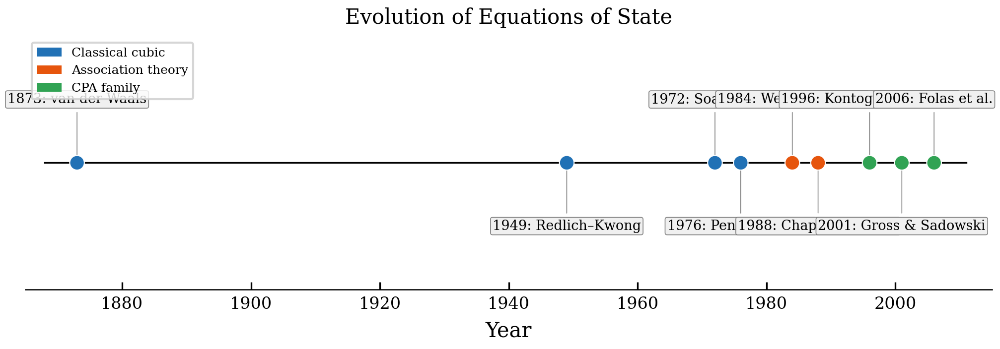
Figure 1.1: 01 Eos Timeline
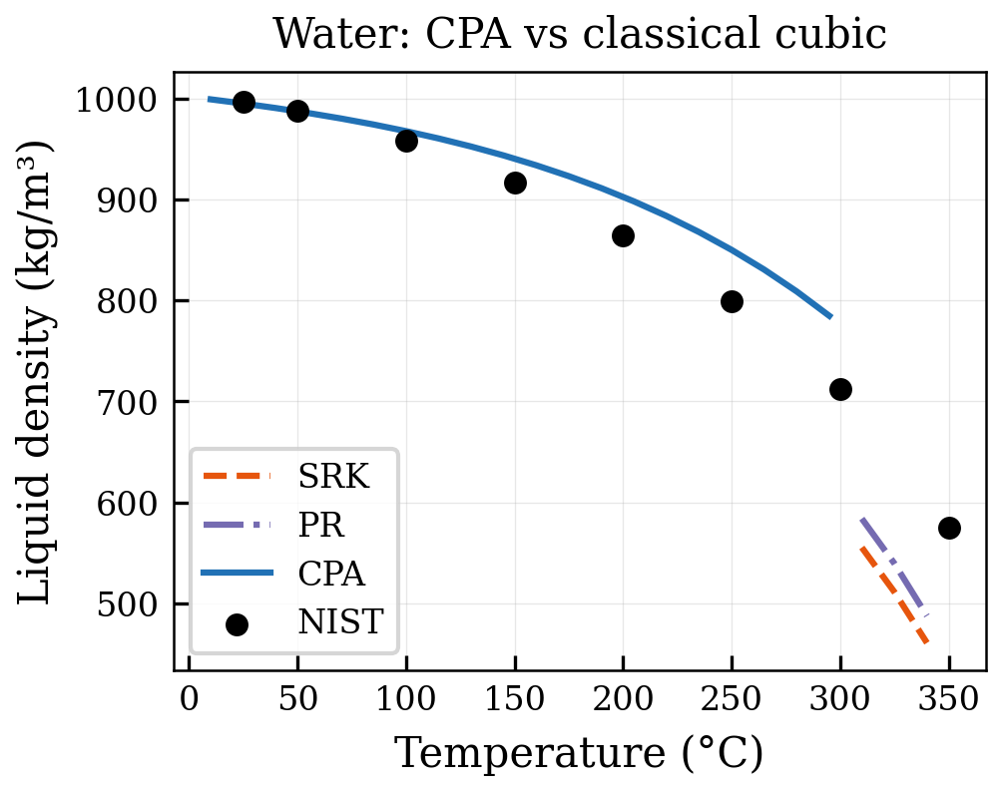
Figure 1.2: 02 Water Density Comparison
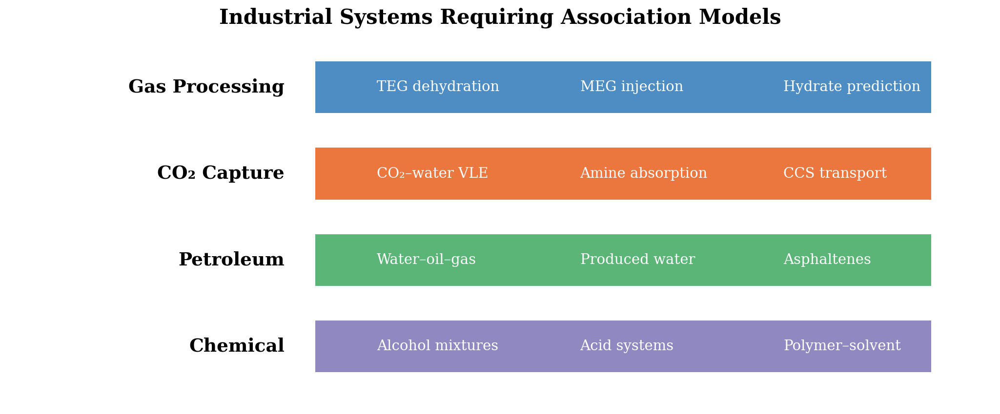
Figure 1.3: 03 Industrial Systems
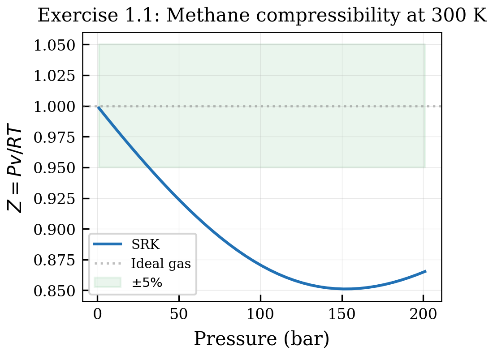
Figure 1.4: Ex01 Z Methane
Thermodynamic Foundations
Learning Objectives
After reading this chapter, the reader will be able to:
- Derive the conditions for thermodynamic equilibrium from the Gibbs energy
- Relate fugacity and fugacity coefficients to equations of state
- Formulate the phase equilibrium problem for vapor–liquid and liquid–liquid systems
- Compute fugacity coefficients from pressure-explicit equations of state using NeqSim
2.1 Fundamental Thermodynamic Relations
Before presenting the CPA equation of state, we must establish the thermodynamic framework within which it operates. This chapter reviews the essential concepts of chemical potential, fugacity, and phase equilibrium that underpin all equation of state calculations [17, 18, 19].
2.1.1 The Gibbs Energy and Chemical Potential
For a multicomponent system at constant temperature $T$ and pressure $P$, the Gibbs energy is the fundamental potential:
$$G = G(T, P, n_1, n_2, \ldots, n_c)$$
where $n_i$ is the number of moles of component $i$ and $c$ is the number of components. The chemical potential of component $i$ is defined as the partial molar Gibbs energy:
$$\mu_i = \left( \frac{\partial G}{\partial n_i} \right)_{T,P,n_{j \neq i}}$$
The total Gibbs energy can be written as:
$$G = \sum_{i=1}^{c} n_i \mu_i$$
and the Gibbs–Duhem equation constrains the chemical potentials:
$$\sum_{i=1}^{c} n_i \, d\mu_i = -S \, dT + V \, dP$$
At constant temperature and pressure, this simplifies to:
$$\sum_{i=1}^{c} n_i \, d\mu_i = 0$$
which is a crucial consistency check for any thermodynamic model.
2.1.2 Fugacity and the Fugacity Coefficient
While the chemical potential is the thermodynamically rigorous quantity, it has the inconvenience of approaching $-\infty$ as the concentration of a component approaches zero. [20] introduced the fugacity $f_i$ as an alternative measure that behaves like a corrected partial pressure:
$$\mu_i = \mu_i^0 + RT \ln \frac{f_i}{f_i^0}$$
The fugacity has units of pressure and is defined such that it equals the partial pressure for an ideal gas:
$$\lim_{P \to 0} \frac{f_i}{y_i P} = 1$$
The fugacity coefficient $\varphi_i$ is defined as the ratio of fugacity to the product of mole fraction and pressure [21]:
$$\varphi_i = \frac{f_i}{x_i P}$$
For an ideal gas, $\varphi_i = 1$. Deviations from unity reflect intermolecular interactions. The fugacity coefficient is related to the equation of state through:
$$\ln \varphi_i = \frac{1}{RT} \int_V^{\infty} \left[ \left( \frac{\partial P}{\partial n_i} \right)_{T,V,n_{j \neq i}} - \frac{RT}{V} \right] dV - \ln Z$$
where $Z = PV/(nRT)$ is the compressibility factor. This integral is the fundamental connection between an equation of state and phase equilibrium calculations — every equation of state must provide $(\partial P/\partial n_i)_{T,V}$ to be useful for phase equilibrium.
2.2 Phase Equilibrium Conditions
2.2.1 The Equilibrium Criterion
A closed system at constant $T$ and $P$ reaches equilibrium when the total Gibbs energy is minimized. For a system with $\pi$ phases, this leads to the conditions:
$$T^{(1)} = T^{(2)} = \cdots = T^{(\pi)} \quad \text{(thermal equilibrium)}$$
$$P^{(1)} = P^{(2)} = \cdots = P^{(\pi)} \quad \text{(mechanical equilibrium)}$$
$$\mu_i^{(1)} = \mu_i^{(2)} = \cdots = \mu_i^{(\pi)} \quad \text{(chemical equilibrium, } i = 1, \ldots, c\text{)}$$
In terms of fugacities, the chemical equilibrium condition becomes:
$$f_i^{(1)} = f_i^{(2)} = \cdots = f_i^{(\pi)} \quad \text{for all } i$$
or equivalently in terms of fugacity coefficients:
$$x_i^{(1)} \varphi_i^{(1)} = x_i^{(2)} \varphi_i^{(2)} = \cdots \quad \text{for all } i$$
2.2.2 Vapor–Liquid Equilibrium (VLE)
For a two-phase vapor–liquid system, the equilibrium condition gives:
$$y_i \varphi_i^V = x_i \varphi_i^L \quad \text{for } i = 1, \ldots, c$$
The K-factor or equilibrium ratio is:
$$K_i = \frac{y_i}{x_i} = \frac{\varphi_i^L}{\varphi_i^V}$$
These K-factors are the central quantities in flash calculations, which determine the amounts and compositions of coexisting phases at given conditions.
2.2.3 Liquid–Liquid Equilibrium (LLE)
For liquid–liquid systems — of particular importance for CPA applications involving water and hydrocarbons — the equilibrium condition is:
$$x_i^{L1} \varphi_i^{L1} = x_i^{L2} \varphi_i^{L2} \quad \text{for } i = 1, \ldots, c$$
LLE calculations are often more numerically challenging than VLE because the two liquid phases can have very different compositions (e.g., water-rich vs. hydrocarbon-rich) and the objective function has multiple local minima.
2.2.4 Three-Phase Equilibrium (VLLE)
Many systems relevant to CPA applications exhibit three-phase vapor–liquid–liquid equilibrium (VLLE). For example, a natural gas–water system at moderate pressures can have a vapor phase, a hydrocarbon-rich liquid phase, and a water-rich liquid phase coexisting simultaneously.
The equilibrium conditions are:
$$f_i^V = f_i^{L1} = f_i^{L2} \quad \text{for all } i$$
NeqSim handles multi-phase equilibrium through the Michelsen stability analysis and successive flash calculations:
from neqsim import jneqsim
# Three-phase system: methane + n-hexane + water
fluid = jneqsim.thermo.system.SystemSrkCPAstatoil(298.15, 50.0)
fluid.addComponent("methane", 0.6)
fluid.addComponent("n-hexane", 0.3)
fluid.addComponent("water", 0.1)
fluid.setMixingRule(10)
# Enable multi-phase check
fluid.setMultiPhaseCheck(True)
ops = jneqsim.thermodynamicoperations.ThermodynamicOperations(fluid)
ops.TPflash()
fluid.initProperties()
print(f"Number of phases: {fluid.getNumberOfPhases()}")
for i in range(fluid.getNumberOfPhases()):
phase = fluid.getPhase(i)
print(f"Phase {i}: {phase.getType()}, density = {phase.getDensity('kg/m3'):.1f} kg/m3")
2.3 The Flash Problem
2.3.1 Isothermal Flash (TP Flash)
The most common phase equilibrium calculation is the isothermal (TP) flash: given the overall composition $z_i$, temperature $T$, and pressure $P$, determine the number of phases, their amounts, and their compositions.
For a two-phase system, the flash problem combines the equilibrium conditions with material balances:
$$z_i = \beta y_i + (1 - \beta) x_i$$
where $\beta$ is the vapor fraction. The Rachford–Rice equation [22] eliminates the individual phase compositions:
$$\sum_{i=1}^{c} \frac{z_i (K_i - 1)}{1 + \beta(K_i - 1)} = 0$$
This single equation in $\beta$ is solved iteratively, with the K-factors updated at each step using the equation of state. The [23] algorithm provides a robust and efficient solution procedure.
2.3.2 Stability Analysis
Before performing a flash calculation, it is essential to determine whether the system is stable as a single phase or whether it will split into multiple phases. Michelsen's [23, 24] tangent plane distance (TPD) criterion provides a rigorous test:
$$\text{TPD}(\mathbf{w}) = \sum_{i=1}^{c} w_i \left[ \ln w_i + \ln \varphi_i(\mathbf{w}) - \ln z_i - \ln \varphi_i(\mathbf{z}) \right]$$
If $\text{TPD}(\mathbf{w}) < 0$ for any trial composition $\mathbf{w}$, the single-phase solution is unstable and the system will split.
For CPA systems, the stability analysis must account for the dependence of the association term on composition — the site fractions $X_A$ change with composition and affect the fugacity coefficients. This coupling makes CPA stability analysis more computationally expensive than for classical cubic EoS.
2.3.3 Other Flash Specifications
While TP flash is the most common, other specifications are used in process simulation:
| Flash Type | Given | Find |
|---|---|---|
| TP flash | $T$, $P$, $\mathbf{z}$ | $\beta$, $\mathbf{x}$, $\mathbf{y}$ |
| PH flash | $P$, $H$, $\mathbf{z}$ | $T$, $\beta$, $\mathbf{x}$, $\mathbf{y}$ |
| PS flash | $P$, $S$, $\mathbf{z}$ | $T$, $\beta$, $\mathbf{x}$, $\mathbf{y}$ |
| TV flash | $T$, $V$, $\mathbf{z}$ | $P$, $\beta$, $\mathbf{x}$, $\mathbf{y}$ |
| Bubble point | $T$ (or $P$), $\mathbf{x}$ | $P$ (or $T$), $\mathbf{y}$ |
| Dew point | $T$ (or $P$), $\mathbf{y}$ | $P$ (or $T$), $\mathbf{x}$ |
Table 2.1: Common flash calculation specifications.
NeqSim supports all of these specifications with CPA:
from neqsim import jneqsim
fluid = jneqsim.thermo.system.SystemSrkCPAstatoil(298.15, 50.0)
fluid.addComponent("methane", 0.9)
fluid.addComponent("water", 0.1)
fluid.setMixingRule(10)
ops = jneqsim.thermodynamicoperations.ThermodynamicOperations(fluid)
# Bubble point calculation
ops.bubblePointPressureFlash(False)
print(f"Bubble point pressure: {fluid.getPressure('bara'):.2f} bara")
# Dew point calculation
ops.dewPointTemperatureFlash()
print(f"Dew point temperature: {fluid.getTemperature('C'):.2f} C")
2.4 Excess Properties and the Activity Coefficient Connection
Understanding excess properties is essential for interpreting CPA results because the association term generates large, physically meaningful excess properties that classical cubic EoS cannot reproduce [25].
2.4.1 Excess Properties Defined
The excess Gibbs energy $G^E$ measures the departure of a mixture from ideal solution behavior:
$$G^E = G_{\text{mix}} - G^{\text{ideal mix}} = RT \sum_i x_i \ln \gamma_i$$
where $\gamma_i$ is the activity coefficient of component $i$. The activity coefficient connects the EoS fugacity coefficient to ideal solution behavior:
$$\gamma_i = \frac{\varphi_i^{\text{mix}}}{\varphi_i^{\text{pure}}}$$
at the same $T$ and $P$.
Other excess properties follow from the Gibbs energy:
$$H^E = -T^2 \frac{\partial(G^E/T)}{\partial T} \bigg|_P, \quad S^E = -\frac{\partial G^E}{\partial T}\bigg|_P, \quad V^E = \frac{\partial G^E}{\partial P}\bigg|_T$$
2.4.2 Why Excess Properties Matter for CPA
For systems with hydrogen bonding, the excess properties are dramatically different from those of non-associating mixtures:
| System | $G^E$ (J/mol) | $H^E$ (J/mol) | $V^E$ (cm$^3$/mol) | Type |
|---|---|---|---|---|
| Hexane–heptane | $+5$ to $+20$ | $+5$ to $+50$ | $+0.01$ | Nearly ideal |
| Ethanol–hexane | $+500$ to $+1500$ | $+200$ to $+800$ | $+0.2$ to $+1.0$ | Positive deviation |
| Water–methanol | $-300$ to $-900$ | $-600$ to $-1000$ | $-0.5$ to $-1.0$ | Negative deviation |
| Water–hexane | $> +5000$ | Large positive | N/A (immiscible) | Phase splitting |
Table 2.2: Typical excess property magnitudes for different system types (at 25°C, equimolar composition).
CPA reproduces these large differences through the association term: in water–methanol, unlike cross-association is stronger than self-association, giving negative $G^E$ and $H^E$. In water–hexane, the disruption of water's hydrogen bond network by non-associating hexane gives very large positive $G^E$, driving phase splitting.
2.4.3 Infinite Dilution Activity Coefficients
The infinite dilution activity coefficient $\gamma_i^\infty$ is a particularly sensitive test of any thermodynamic model because it probes the interaction of a single solute molecule with pure solvent:
$$\gamma_i^\infty = \lim_{x_i \to 0} \gamma_i$$
For water in hydrocarbons, $\gamma_{\text{water}}^\infty$ values range from 200 (in pentane) to over 10,000 (in hexadecane). These enormous values reflect the energetic cost of placing a hydrogen-bonding molecule into a non-polar environment. CPA captures this through the loss of association energy when water is transferred from the pure state to infinite dilution in the hydrocarbon.
Conversely, $\gamma_{\text{hexane}}^\infty$ in water is approximately 500–1000, reflecting the disruption of water's hydrogen bond network required to accommodate a non-polar solute — the so-called hydrophobic effect.
2.5 Thermodynamic Derivatives and Caloric Properties
2.5.1 Residual Properties
The residual Helmholtz energy $A^{\text{res}}$ contains all the information needed to compute thermodynamic properties. For a pressure-explicit EoS $P(T, V, \mathbf{n})$, the residual Helmholtz energy is:
$$A^{\text{res}}(T, V, \mathbf{n}) = -\int_{\infty}^{V} \left[ P - \frac{nRT}{V'} \right] dV'$$
All thermodynamic properties can be derived from $A^{\text{res}}$ and its derivatives:
$$P = -\left(\frac{\partial A}{\partial V}\right)_{T,\mathbf{n}}$$
$$S^{\text{res}} = -\left(\frac{\partial A^{\text{res}}}{\partial T}\right)_{V,\mathbf{n}}$$
$$\mu_i^{\text{res}} = \left(\frac{\partial A^{\text{res}}}{\partial n_i}\right)_{T,V,n_{j \neq i}}$$
2.5.2 Enthalpy, Entropy, and Heat Capacity
The residual enthalpy and entropy are essential for process simulation (heat exchanger design, compressor work, etc.):
$$H^{\text{res}} = A^{\text{res}} + TS^{\text{res}} + PV - nRT$$
$$C_P^{\text{res}} = C_V^{\text{res}} + T \frac{(\partial P / \partial T)_V^2}{(\partial P / \partial V)_T} + nR$$
For CPA, these derivatives include contributions from both the cubic and association terms, which must be computed consistently. The association contribution to enthalpy is particularly important because the degree of hydrogen bonding changes with temperature — breaking hydrogen bonds absorbs energy, contributing to the anomalously high heat capacity of water.
2.5.3 Speed of Sound and Compressibility
The speed of sound is important for flow measurement and pipeline design:
$$w = \sqrt{\frac{C_P}{C_V} \cdot \frac{V^2}{M} \cdot \left(-\frac{\partial P}{\partial V}\right)_T}$$
where $M$ is the molar mass. CPA provides improved predictions of the speed of sound in associating fluids because it correctly captures the density and compressibility effects of hydrogen bonding.
2.5.4 The Joule–Thomson Coefficient
The Joule–Thomson (JT) coefficient describes the temperature change during an isenthalpic expansion (e.g., through a valve or orifice):
$$\mu_{JT} = \left(\frac{\partial T}{\partial P}\right)_H = \frac{V(T\alpha_P - 1)}{C_P}$$
where $\alpha_P = (1/V)(\partial V/\partial T)_P$ is the isobaric thermal expansion coefficient. The JT coefficient is crucial for:
- Valve sizing and JT cooling: predicting the temperature drop across choke valves on offshore platforms
- Pipeline design: estimating temperature changes along pipelines due to pressure drop
- Cryogenic processing: designing turboexpanders and cold separators
For associating fluids, the JT coefficient includes contributions from the temperature dependence of hydrogen bonding. As temperature decreases through a valve, association increases (more hydrogen bonds form), which releases energy and partially offsets the cooling. CPA captures this effect through the association contribution to the enthalpy.
2.5.5 Isothermal Compressibility and Thermal Expansion
Two additional derivative properties are widely used in engineering:
The isothermal compressibility measures how volume responds to pressure at constant temperature:
$$\kappa_T = -\frac{1}{V}\left(\frac{\partial V}{\partial P}\right)_T = \frac{1}{V}\left(-\frac{\partial P}{\partial V}\right)_T^{-1}$$
The isobaric thermal expansion coefficient measures volume response to temperature:
$$\alpha_P = \frac{1}{V}\left(\frac{\partial V}{\partial T}\right)_P = -\frac{1}{V}\frac{(\partial P/\partial T)_V}{(\partial P/\partial V)_T}$$
Both quantities require first derivatives of the EoS and are straightforward to compute once the pressure equation and its derivatives are available. For water, the thermal expansion coefficient has an anomalous behavior — it is negative below 4°C (water contracts upon heating) — which CPA captures through the temperature dependence of association.
2.5.6 Summary of Derivative Relations
The following table summarizes all key thermodynamic derivative properties and the EoS derivatives needed to compute them:
| Property | Symbol | EoS Derivatives Required |
|---|---|---|
| Compressibility factor | $Z$ | $P(T,V,\mathbf{n})$ |
| Fugacity coefficient | $\ln\varphi_i$ | $(\partial P/\partial n_i)_{T,V}$ |
| Residual enthalpy | $H^{\text{res}}$ | $P$, $(\partial P/\partial T)_V$ |
| Residual entropy | $S^{\text{res}}$ | $(\partial P/\partial T)_V$ |
| Residual $C_V$ | $C_V^{\text{res}}$ | $(\partial^2 P/\partial T^2)_V$ |
| Residual $C_P$ | $C_P^{\text{res}}$ | $C_V^{\text{res}}$, $(\partial P/\partial T)_V$, $(\partial P/\partial V)_T$ |
| Speed of sound | $w$ | $C_P/C_V$, $(\partial P/\partial V)_T$ |
| JT coefficient | $\mu_{JT}$ | $H^{\text{res}}$, $C_P$ |
| Isothermal compressibility | $\kappa_T$ | $(\partial P/\partial V)_T$ |
| Thermal expansion | $\alpha_P$ | $(\partial P/\partial T)_V$, $(\partial P/\partial V)_T$ |
Table 2.2: Thermodynamic derivative properties and required EoS derivatives.
For CPA, every derivative listed above includes both the cubic (SRK) contribution and the association contribution. The association contribution requires derivatives of the site fractions $X_A$ with respect to temperature, volume, and composition, as detailed in Chapter 5.
2.6 The Gibbs Phase Rule and Degrees of Freedom
Before discussing flash calculations and property initialization, it is important to establish the number of independent variables that specify the state of a system [26].
2.6.1 Statement of the Phase Rule
The Gibbs phase rule states:
$$F = C - \pi + 2$$
where $F$ is the number of degrees of freedom (intensive variables that can be independently varied), $C$ is the number of components, and $\pi$ is the number of phases.
For a single-component, single-phase system: $F = 1 - 1 + 2 = 2$ (two variables, e.g., $T$ and $P$, specify the state completely). At the vapor–liquid equilibrium of a pure substance: $F = 1 - 2 + 2 = 1$ (specifying $T$ determines $P^{\text{sat}}$, or vice versa).
2.6.2 Implications for Flash Calculations
For a $C$-component, two-phase system: $F = C - 2 + 2 = C$. In a TP flash, we specify $T$, $P$, and $C$ feed compositions, which is $C + 2$ specifications (but the compositions sum to 1, so $C + 1$ independent). Since we have $F = C$ degrees of freedom plus the phase rule, the system is fully determined.
For CPA, the number of components $C$ includes all molecular species but not the individual association complexes — Wertheim's theory eliminates the need to track these explicitly. This is a major advantage over chemical theory approaches, where each complex is treated as a separate species.
2.7 Property Initialization in NeqSim
A critical practical point when using NeqSim for property calculations: after any flash calculation, you must call fluid.initProperties() before reading physical and transport properties. This initializes both thermodynamic properties (from the EoS) and physical properties (viscosity [27], thermal conductivity, surface tension):
from neqsim import jneqsim
fluid = jneqsim.thermo.system.SystemSrkCPAstatoil(323.15, 50.0)
fluid.addComponent("water", 0.3)
fluid.addComponent("methane", 0.7)
fluid.setMixingRule(10)
ops = jneqsim.thermodynamicoperations.ThermodynamicOperations(fluid)
ops.TPflash()
# CRITICAL: Must call initProperties() after flash
fluid.initProperties()
# Now we can read all properties
print(f"Density: {fluid.getDensity('kg/m3'):.2f} kg/m3")
print(f"Enthalpy: {fluid.getEnthalpy('J/mol'):.1f} J/mol")
print(f"Entropy: {fluid.getEntropy('J/molK'):.3f} J/(mol·K)")
print(f"Cp: {fluid.getCp('J/molK'):.2f} J/(mol·K)")
print(f"Speed of sound: {fluid.getSoundSpeed():.1f} m/s")
2.8 Worked Example: The Rachford–Rice Flash Algorithm
The TP flash calculation is the most fundamental algorithm in phase equilibrium. It determines how a feed of known composition splits into vapor and liquid phases at given temperature and pressure. This section presents the algorithm in detail because it is the foundation upon which all CPA calculations are built.
2.8.1 Problem Statement
Given: temperature $T$, pressure $P$, and feed composition $z_i$ ($i = 1, \ldots, C$).
Find: vapor fraction $\beta$, vapor composition $y_i$, and liquid composition $x_i$.
2.8.2 The Rachford–Rice Equation
At VLE, the K-values (equilibrium ratios) are defined as:
$$K_i = \frac{y_i}{x_i} = \frac{\varphi_i^L}{\varphi_i^V}$$
where $\varphi_i^L$ and $\varphi_i^V$ are the fugacity coefficients in the liquid and vapor phases, computed from the EoS (CPA).
From the material balance $z_i = \beta y_i + (1-\beta)x_i$ and the definition of $K_i$:
$$x_i = \frac{z_i}{1 + \beta(K_i - 1)}, \quad y_i = \frac{K_i z_i}{1 + \beta(K_i - 1)}$$
The constraint $\sum_i y_i - \sum_i x_i = 0$ gives the Rachford–Rice equation:
$$g(\beta) = \sum_{i=1}^{C} \frac{z_i(K_i - 1)}{1 + \beta(K_i - 1)} = 0$$
This equation is monotonically decreasing in $\beta$ (for $\beta$ in the physical range), so it has a unique root that can be found efficiently by Newton's method:
$$\beta^{(n+1)} = \beta^{(n)} - \frac{g(\beta^{(n)})}{g'(\beta^{(n)})}$$
where:
$$g'(\beta) = -\sum_{i=1}^{C} \frac{z_i(K_i - 1)^2}{[1 + \beta(K_i - 1)]^2}$$
2.8.3 The Outer Loop: K-Value Update
The K-values depend on the phase compositions (through the fugacity coefficients), which depend on $\beta$. The flash algorithm therefore requires an iterative procedure:
- Initialize K-values using the Wilson correlation: $K_i = \frac{P_{c,i}}{P} \exp\left[5.373(1 + \omega_i)\left(1 - \frac{T_{c,i}}{T}\right)\right]$
- Solve the Rachford–Rice equation for $\beta$
- Compute $x_i$ and $y_i$ from the K-values and $\beta$
- Evaluate fugacity coefficients $\varphi_i^L(\mathbf{x})$ and $\varphi_i^V(\mathbf{y})$ from CPA
- Update K-values: $K_i^{\text{new}} = K_i^{\text{old}} \cdot \frac{\varphi_i^L}{\varphi_i^V}$ (successive substitution)
- Check convergence: $\sum_i |K_i^{\text{new}} - K_i^{\text{old}}|^2 < \varepsilon$
- Repeat from step 2 if not converged
For CPA, step 4 includes solving the site balance equations (Chapter 4) at each outer iteration, adding an inner loop. Chapter 8 discusses efficient solver strategies that avoid this nested iteration.
2.8.4 Convergence Behavior
Near the phase boundary (bubble or dew point), the flash can converge slowly because the K-values change dramatically. Far from the phase boundary (two well-separated phases), convergence is typically rapid (5–10 outer iterations). For CPA, the association term can either help or hinder convergence:
- Help: the association term provides a strong driving force for phase splitting in water–hydrocarbon systems, making the flash more robust
- Hinder: near critical points of associating systems, the association term creates steep gradients in the fugacity surface
2.9 Gibbs Phase Rule and Degrees of Freedom
2.9.1 The Phase Rule
Gibbs' phase rule states that the number of independent intensive variables (degrees of freedom) is:
$$F = C - \pi + 2$$
where $C$ is the number of components and $\pi$ is the number of phases. For a binary water–methane system ($C = 2$):
- Single phase ($\pi = 1$): $F = 3$ — temperature, pressure, and composition are independent
- Two phases ($\pi = 2$): $F = 2$ — specifying T and P determines all compositions
- Three phases ($\pi = 3$): $F = 1$ — only one variable is independent (a three-phase line in T–P space)
2.9.2 Implications for CPA Flash Calculations
The phase rule determines the structure of the flash problem:
For a two-phase flash (TP specification, $\pi = 2$), we specify $T$, $P$, and the $C - 1$ independent feed compositions, totaling $C + 1$ specifications. The unknowns are the $C - 1$ independent compositions in each phase plus the vapor fraction $\beta$, totaling $2(C-1) + 1 = 2C - 1$. The $C$ equilibrium equations ($\mu_i^L = \mu_i^V$) plus $C$ normalization constraints ($\sum y_i = 1$, $\sum x_i = 1$) provide $2C$ equations, matching the unknowns.
For a three-phase flash (relevant for water–oil–gas systems), the system has $3(C-1) + 2$ unknowns (compositions in three phases plus two phase fractions) and $3C$ equations ($C$ equilibrium equations per phase pair times 2, plus 3 normalization constraints). The three-phase flash is significantly more challenging numerically and is one of CPA's strong points — it naturally handles the aqueous phase that forms in water-containing hydrocarbon systems.
2.9.3 Counting Degrees of Freedom with Association
An important subtlety: association does not change the number of macroscopic degrees of freedom. Although we introduce new variables (site fractions $X_{A_i}$), these are determined by the site balance equations at every state point. They are internal variables, not additional degrees of freedom.
However, association can change the number of phases that form. A system that is single-phase without association (e.g., water + toluene modeled with SRK) may be two-phase when association is included (CPA correctly predicts liquid-liquid immiscibility).
Summary
Key points from this chapter:
- Phase equilibrium is governed by equality of fugacities (or chemical potentials) across all phases [17, 21]
- Fugacity coefficients are computed from the equation of state via an integral over volume
- The flash problem determines the number, amounts, and compositions of coexisting phases
- Stability analysis (Michelsen's TPD criterion) must precede flash calculations
- For CPA, the association term couples into all thermodynamic derivatives
- Always call
fluid.initProperties()after a flash calculation in NeqSim before reading properties
Exercises
- Exercise 2.1: Derive the expression for the fugacity coefficient of component $i$ in a mixture described by the van der Waals equation of state.
- Exercise 2.2: Using NeqSim, compute the compressibility factor $Z$ for pure water vapor at 200°C and pressures from 1 to 100 bar using CPA. Compare with ideal gas ($Z = 1$) and SRK predictions.
- Exercise 2.3: Set up a methane–water system and compute K-factors at 50°C for pressures from 10 to 200 bar. Plot $K_{\text{water}}$ vs. pressure and explain the trend physically.
Figures
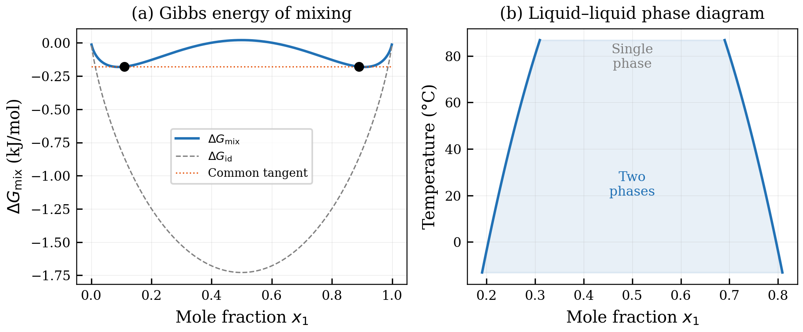
Figure 2.1: 01 Gibbs Mixing Phase Diagram
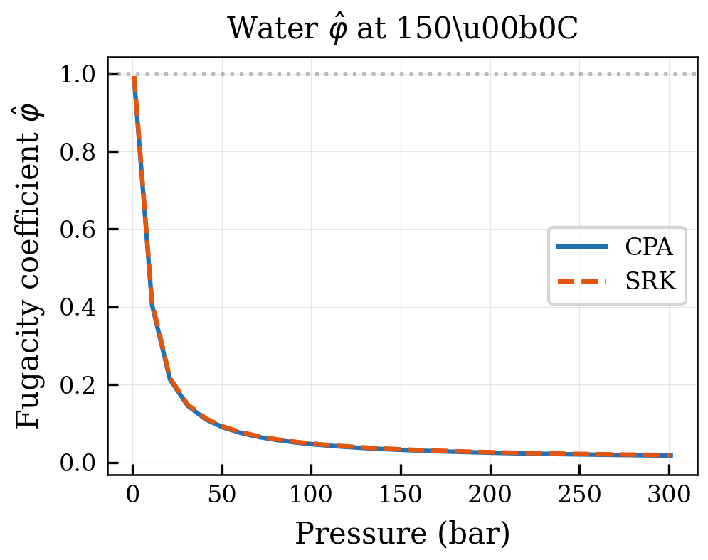
Figure 2.2: 02 Fugacity Coefficient
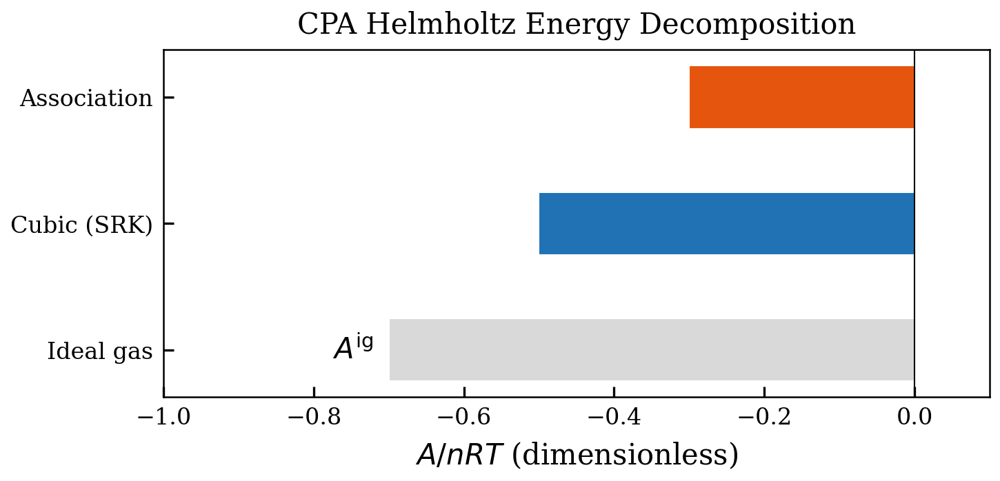
Figure 2.3: 03 Helmholtz Decomposition
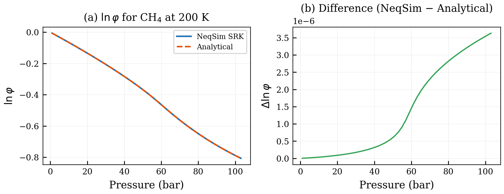
Figure 2.4: Ex01 Fugacity
Figures
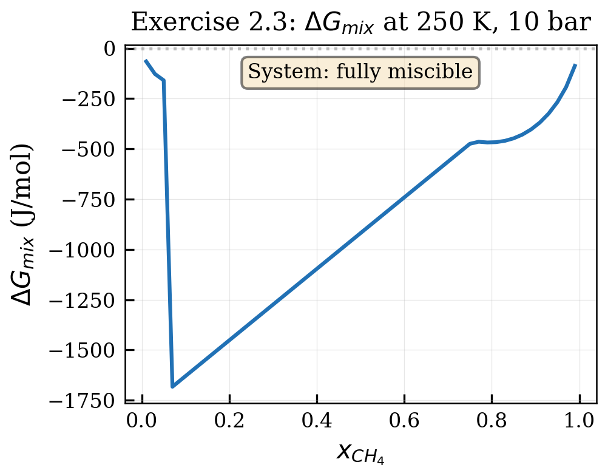
Figure 2.1: Ex03 Gibbs Mixing
Classical Cubic Equations of State
Learning Objectives
After reading this chapter, the reader will be able to:
- Derive the van der Waals equation and identify its physical basis
- Present the SRK and PR equations and explain the role of the alpha function
- Apply volume translation to improve liquid density predictions
- Compute fugacity coefficients from cubic equations of state
- Explain why cubic EoS fail for associating fluids
3.1 The van der Waals Equation
3.1.1 Physical Basis
In 1873, Johannes Diderik van der Waals [28] proposed the first equation of state that could describe both the gas and liquid phases:
$$P = \frac{RT}{V_m - b} - \frac{a}{V_m^2}$$
where $V_m$ is the molar volume, $a$ is the attractive parameter accounting for intermolecular attraction, and $b$ is the co-volume representing the finite size of molecules.
The physical interpretation is straightforward:
- The term $RT/(V_m - b)$ is a repulsive contribution — the available volume is reduced by the finite molecular size $b$
- The term $-a/V_m^2$ is an attractive contribution — molecules attract each other, reducing the pressure below the ideal gas value
Despite its simplicity, the van der Waals equation captures the essential physics of fluid behavior: it predicts a critical point, vapor–liquid coexistence, and the transition from gas-like to liquid-like behavior.
3.1.2 Critical Point Conditions
At the critical point, the first and second derivatives of pressure with respect to volume vanish simultaneously:
$$\left(\frac{\partial P}{\partial V_m}\right)_{T_c} = 0 \quad \text{and} \quad \left(\frac{\partial^2 P}{\partial V_m^2}\right)_{T_c} = 0$$
Applying these conditions to the van der Waals equation yields:
$$a = \frac{27 R^2 T_c^2}{64 P_c}, \quad b = \frac{RT_c}{8P_c}, \quad Z_c = \frac{P_c V_{m,c}}{RT_c} = \frac{3}{8} = 0.375$$
The predicted critical compressibility factor of 0.375 is significantly higher than experimental values for most substances (typically 0.23–0.29), indicating that the van der Waals equation overpredicts the critical volume.
3.1.3 The Cubic Nature
The van der Waals equation can be rewritten as a cubic polynomial in $V_m$:
$$V_m^3 - \left(b + \frac{RT}{P}\right) V_m^2 + \frac{a}{P} V_m - \frac{ab}{P} = 0$$
This cubic nature is fundamental — it allows the equation to have up to three real roots, corresponding to the vapor, unstable, and liquid volumes. The cubic form also enables analytical solutions and efficient root-finding algorithms [29]. Clausius [30] proposed an early modification of van der Waals' equation with a temperature-dependent attraction term, anticipating later developments by Redlich–Kwong and Soave.
3.2 The Soave–Redlich–Kwong (SRK) Equation
3.2.1 Development
In 1949, Redlich and Kwong [31] modified the van der Waals attraction term to include a temperature dependence:
$$P = \frac{RT}{V_m - b} - \frac{a}{T^{1/2} V_m(V_m + b)}$$
While this improved predictions at high temperatures, it still could not accurately reproduce vapor pressures. In 1972, Soave [1] made the crucial innovation of replacing the fixed $T^{-1/2}$ dependence with a component-specific alpha function:
$$P = \frac{RT}{V_m - b} - \frac{a \cdot \alpha(T)}{V_m(V_m + b)}$$
where:
$$\alpha(T) = \left[1 + m\left(1 - \sqrt{T_r}\right)\right]^2$$
and $m$ is correlated with the acentric factor $\omega$ [32]:
$$m = 0.48508 + 1.55171\omega - 0.15613\omega^2$$
The parameters are:
$$a = 0.42748 \frac{R^2 T_c^2}{P_c}, \quad b = 0.08664 \frac{RT_c}{P_c}$$
The SRK equation accurately reproduces vapor pressures for a wide range of non-polar and slightly polar substances, making it the standard model in the oil and gas industry for decades. It is also the cubic foundation of the CPA equation of state.
3.2.2 Fugacity Coefficient
The fugacity coefficient for component $i$ in a mixture described by the SRK equation is:
$$\ln \varphi_i = \frac{b_i}{b_m}(Z - 1) - \ln(Z - B) - \frac{A}{B}\left(\frac{2\sum_j x_j a_{ij}}{a_m} - \frac{b_i}{b_m}\right) \ln\left(1 + \frac{B}{Z}\right)$$
where:
$$A = \frac{a_m P}{R^2 T^2}, \quad B = \frac{b_m P}{RT}, \quad Z = \frac{PV_m}{RT}$$
and the mixture parameters use van der Waals one-fluid mixing rules:
$$a_m = \sum_i \sum_j x_i x_j a_{ij}, \quad b_m = \sum_i x_i b_i$$
$$a_{ij} = \sqrt{a_i a_j}(1 - k_{ij})$$
The binary interaction parameter $k_{ij}$ is the single adjustable parameter available for tuning VLE predictions.
3.3 The Peng–Robinson (PR) Equation
3.3.1 Formulation
In 1976, Peng and Robinson [2] proposed a modification that improved liquid density predictions:
$$P = \frac{RT}{V_m - b} - \frac{a \cdot \alpha(T)}{V_m(V_m + b) + b(V_m - b)}$$
$$P = \frac{RT}{V_m - b} - \frac{a \cdot \alpha(T)}{V_m^2 + 2bV_m - b^2}$$
The parameters are:
$$a = 0.45724 \frac{R^2 T_c^2}{P_c}, \quad b = 0.07780 \frac{RT_c}{P_c}$$
$$m = 0.37464 + 1.54226\omega - 0.26992\omega^2$$
The predicted critical compressibility factor is $Z_c = 0.3074$, closer to experimental values than both van der Waals (0.375) and SRK (0.333).
3.3.2 SRK vs. PR: When Does It Matter?
The choice between SRK and PR is sometimes debated, but in practice the differences are relatively small for vapor–liquid equilibrium. The main differences are:
| Property | SRK | PR |
|---|---|---|
| $Z_c$ | 0.333 | 0.307 |
| Liquid density | Overpredicts ~5–15% | Overpredicts ~2–8% |
| Vapor pressure | Excellent | Excellent |
| VLE K-factors | Excellent | Excellent |
| Heavy hydrocarbon density | Poor without correction | Better, still needs correction |
Table 3.1: Comparison of SRK and PR equations.
For CPA, the SRK form is used as the cubic foundation because CPA was originally developed with SRK. A PR-based variant (PR-CPA) exists but is less commonly used in the oil and gas industry.
3.3.3 Fugacity from a Cubic EoS
The fugacity coefficient of component $i$ in a mixture is derived from the residual chemical potential:
$$\ln \varphi_i = \frac{1}{RT}\int_V^\infty \left[\left(\frac{\partial P}{\partial n_i}\right)_{T,V,n_{j\neq i}} - \frac{RT}{V}\right] dV - \ln Z$$
For SRK, this yields:
$$\ln \varphi_i = \frac{b_i}{b}(Z-1) - \ln(Z-B) - \frac{A}{B}\left(\frac{2\sum_j x_j a_{ij}}{a} - \frac{b_i}{b}\right)\ln\left(1 + \frac{B}{Z}\right)$$
where $A = aP/(R^2T^2)$, $B = bP/(RT)$, and $Z$ is the compressibility factor. This expression provides the thermodynamic backbone that CPA builds upon — the association contribution adds additional terms to $\ln \varphi_i$ involving the site fractions $X_A$ (Chapter 5).
3.3.4 Cubic Root Selection and Phase Stability
The cubic equation in $Z$ can yield one or three real roots. When three real roots exist:
- The largest root corresponds to the vapor (or gas-like) phase
- The smallest positive root corresponds to the liquid phase
- The middle root is thermodynamically unstable (negative compressibility)
The correct root is selected by comparing Gibbs energies. For a single-phase calculation, the root with the lower molar Gibbs energy $G = H - TS$ (or equivalently, the lower fugacity) is the stable phase.
For CPA, root selection is more complex because the association term modifies the pressure–volume relationship. The association contribution always reduces the pressure at a given volume (association is attractive), which can shift the liquid root to smaller volumes and change which root is the global minimum.
3.3.5 Comparison of SRK and PR for Liquid Density
A persistent criticism of SRK is that it overpredicts liquid molar volumes by 5–15% for most compounds. PR was designed to improve this:
| Compound | $V_L^{\text{exp}}$ (cm$^3$/mol) | $V_L^{\text{SRK}}$ | Error (%) | $V_L^{\text{PR}}$ | Error (%) |
|---|---|---|---|---|---|
| Methane (111 K) | 37.9 | 42.8 | +12.9 | 39.5 | +4.2 |
| n-Hexane (298 K) | 131.6 | 149.1 | +13.3 | 137.0 | +4.1 |
| Water (298 K) | 18.07 | 18.9 | +4.6 | 17.2 | $-4.8$ |
| Methanol (298 K) | 40.7 | 44.2 | +8.6 | 41.0 | +0.7 |
Table 3.2: Liquid molar volume predictions of SRK and PR.
Note that PR tends to under-predict volumes for small molecules like water, while SRK consistently over-predicts. For CPA, the association term provides an additional volume correction that improves liquid densities for hydrogen-bonding fluids beyond what either cubic EoS achieves alone.
3.4 Volume Translation
3.4.1 The Péneloux Correction
Péneloux et al. [33] proposed a simple volume translation that shifts the molar volume without affecting VLE calculations:
$$V^{\text{corrected}} = V^{\text{EoS}} - \sum_i x_i c_i$$
where $c_i$ is a component-specific volume shift parameter, typically fitted to match the experimental saturated liquid density at a reference temperature. The key property of this correction is that it does not change fugacity coefficients — the VLE results are identical with and without the correction.
For the SRK-based CPA in NeqSim, the Péneloux correction significantly improves liquid density predictions. Without volume translation, SRK-CPA may overpredict liquid volumes by 3–10%; with the correction, errors are typically reduced to 1–3%.
3.4.2 Temperature-Dependent Volume Translation
The Péneloux correction with a constant $c_i$ is accurate near the reference temperature but degrades at other temperatures. Several temperature-dependent correlations have been proposed:
$$c_i(T) = c_i^0 + c_i^1(T - T_{\text{ref}})$$
or more sophisticated functions involving the reduced temperature $T_r$. NeqSim supports both constant and temperature-dependent volume translation for CPA.
3.5 Alpha Functions and Temperature Dependence
3.5.1 The Soave Alpha Function
The original Soave alpha function:
$$\alpha(T_r) = \left[1 + m(1 - \sqrt{T_r})\right]^2$$
where $T_r = T/T_c$ is the reduced temperature, works well for $T_r < 1$ but can exhibit unphysical behavior at high supercritical temperatures (negative values of $\alpha$ for components with high $\omega$). Boston and Mathias [34] proposed an extrapolation for the supercritical region that is monotonically decreasing and avoids negative $\alpha$ values. For heavy hydrocarbons, Gasem et al. [35] developed improved $m$ correlations that better represent vapor pressures of $n$-alkanes.
3.5.2 The Mathias–Copeman Alpha Function
For improved accuracy, particularly for polar and associating components, the Mathias–Copeman [36] alpha function provides additional flexibility:
$$\alpha(T_r) = \left[1 + c_1(1 - \sqrt{T_r}) + c_2(1 - \sqrt{T_r})^2 + c_3(1 - \sqrt{T_r})^3\right]^2 \quad \text{for } T_r \leq 1$$
$$\alpha(T_r) = \left[1 + c_1(1 - \sqrt{T_r})\right]^2 \quad \text{for } T_r > 1$$
The three parameters $c_1$, $c_2$, $c_3$ are fitted to experimental vapor pressure data. For non-polar molecules, setting $c_2 = c_3 = 0$ recovers the standard Soave form.
In the context of CPA, the alpha function is particularly important for the energy parameter of the cubic term. For associating components, the effective temperature dependence of $a(T)$ captures both the changing dispersion interactions and, to some extent, compensates for simplified treatment of the reference term.
3.5.3 The Twu Alpha Function
[37] proposed an alpha function that is guaranteed to be positive and monotonically decreasing:
$$\alpha(T_r) = T_r^{N(M-1)} \exp\left[L(1 - T_r^{NM})\right]$$
This form has better thermodynamic consistency at high temperatures and is used in some CPA implementations.
3.5.4 Thermodynamic Consistency of Alpha Functions
An important consideration for any alpha function is thermodynamic consistency. A physically consistent alpha function must satisfy:
- $\alpha(T_r) > 0$ for all $T_r$ (positive energy parameter)
- $\frac{d\alpha}{dT_r} < 0$ for $T_r > 0$ (attraction decreases with temperature)
- $\frac{d^2\alpha}{dT_r^2} > 0$ for $T_r > 0$ (convex function — ensures correct $C_P$ behavior)
The Soave alpha function satisfies conditions 1 and 2 for $T_r < [1 + 1/m]^2$ but violates condition 2 for very high temperatures. The Twu function satisfies all three conditions by construction. For CPA applications, where most calculations involve $T_r < 1$ for the associating components, the Soave function is generally adequate.
3.6 Mixing Rules for Cubic EoS
3.6.1 Classical van der Waals Mixing Rules
The standard (one-fluid) mixing rules for cubic EoS are:
$$a_m = \sum_i \sum_j x_i x_j \sqrt{a_i a_j} (1 - k_{ij})$$
$$b_m = \sum_i x_i b_i$$
The binary interaction parameter $k_{ij}$ adjusts the geometric mean combining rule for the attractive parameter. For hydrocarbon–hydrocarbon pairs, $k_{ij}$ is typically small (0–0.05). For CO$_2$–hydrocarbon pairs, larger values (0.10–0.15) are needed. For water–hydrocarbon pairs, very large values would be needed, and even then the predictions are poor — this is precisely where CPA adds value.
3.6.2 Limitations for Asymmetric Mixtures
The van der Waals mixing rules assume that the interaction between unlike molecules can be described by a simple geometric mean. This works well for mixtures of similar molecules but fails for highly asymmetric mixtures such as:
- Hydrogen-bonding systems (water + hydrocarbon)
- Size-asymmetric systems (methane + heavy hydrocarbons)
- Mixtures with strong specific interactions (CO$_2$ + water)
More sophisticated mixing rules (Wong–Sandler [38], MHV2 [39], LCVM [40]) have been developed to address these limitations, but they add complexity and additional parameters. CPA takes a different approach: keep the simple van der Waals mixing rules for the cubic part, but add the association term to explicitly account for hydrogen bonding.
3.7 Limitations of Cubic EoS for Associating Systems
To motivate the need for CPA, let us quantify the failure of classical cubic EoS for associating systems.
3.7.1 Water Vapor Pressure
Pure water is a severe test for any EoS. The vapor pressure curve spans from 0.006 bar at 0°C to 220.6 bar at the critical point (374°C). While SRK can reproduce the vapor pressure reasonably well with the standard alpha function, the liquid density is overpredicted by 15–20%. This is because the SRK parameters are forced to simultaneously capture the strong hydrogen-bonding interactions (through $a$) and the molecular size (through $b$), but two parameters are insufficient to describe both dispersion and association.
3.7.2 Water Content of Natural Gas
The water content of natural gas is a critical parameter for pipeline design and hydrate prevention. Experimental data show that the water content of methane at 50°C and 100 bar is approximately 0.0015 mole fraction. SRK with an optimized $k_{ij}$ predicts 0.003–0.005, overestimating by a factor of 2–3.
The reason is clear: SRK does not know that water molecules in the liquid phase are hydrogen-bonded, which dramatically reduces their chemical potential (and hence fugacity) relative to what a non-associating model would predict. The water molecules are "held" in the liquid phase by hydrogen bonds, reducing their tendency to escape into the gas phase.
3.7.3 Mutual Solubilities
The water–n-alkane mutual solubilities exhibit characteristic behavior:
- The solubility of water in alkanes decreases with alkane chain length
- The solubility of alkanes in water decreases much more steeply with chain length
- Both solubilities have a minimum as a function of temperature
Classical cubic EoS with a single $k_{ij}$ cannot reproduce these trends because $k_{ij}$ is essentially a constant correction that cannot capture the temperature-dependent effects of association. CPA resolves this by explicitly accounting for the hydrogen-bond network in the aqueous phase.
3.8 The Pressure–Volume Isotherm and Phase Stability
3.8.1 Subcritical Isotherms and the van der Waals Loop
At temperatures below the critical temperature, a cubic EoS produces a characteristic S-shaped (van der Waals loop) isotherm in the $P$–$V_m$ diagram. Between the liquid and vapor volumes, the pressure first decreases (physically reasonable), then increases (mechanically unstable region where $(\partial P/\partial V_m)_T > 0$), before decreasing again.
The mechanical stability condition requires:
$$\left(\frac{\partial P}{\partial V_m}\right)_T < 0$$
The region where this condition is violated ($V_m^{\text{spinodal,L}} < V_m < V_m^{\text{spinodal,V}}$) is the spinodal region, bounded by the locus of inflection points. Inside the spinodal, the system is unconditionally unstable — any infinitesimal perturbation causes spontaneous phase separation. The region between the spinodal and the saturation curve (binodal) is metastable — the system is mechanically stable but thermodynamically unstable.
3.8.2 The Maxwell Equal-Area Construction
The equilibrium vapor pressure $P^{\text{sat}}$ at a given temperature is determined by the Maxwell equal-area rule: the horizontal line at $P = P^{\text{sat}}$ divides the van der Waals loop into two regions of equal area.
Mathematically, this is equivalent to requiring that the fugacities of the two coexisting phases are equal:
$$f^L(T, P^{\text{sat}}) = f^V(T, P^{\text{sat}})$$
which is the same as:
$$\int_{V_m^L}^{V_m^V} \left(P - P^{\text{sat}}\right) dV_m = 0$$
This integral represents the net work in a reversible isothermal expansion from liquid to vapor volume. The two "lobes" of the van der Waals loop above and below $P^{\text{sat}}$ must cancel exactly.
The Maxwell construction provides physical insight into how cubic EoS predict phase equilibrium: the saturation pressure is not an input but emerges naturally from the shape of the isotherm. Any change to the EoS parameters ($a$, $b$, $\alpha$) shifts the isotherm shape and hence the predicted saturation pressure.
3.8.3 Critical Point from the EoS
At the critical point, the van der Waals loop collapses to an inflection point where:
$$\left(\frac{\partial P}{\partial V_m}\right)_{T_c} = 0, \quad \left(\frac{\partial^2 P}{\partial V_m^2}\right)_{T_c} = 0, \quad \left(\frac{\partial^3 P}{\partial V_m^3}\right)_{T_c} < 0$$
These conditions yield the critical properties in terms of the EoS parameters. For SRK:
$$T_c = \frac{a}{b R} \cdot \frac{1}{2.4694}, \quad P_c = \frac{a}{b^2} \cdot 0.04278, \quad Z_c = 1/3$$
The fact that SRK predicts $Z_c = 1/3$ for all substances (compared to experimental values of 0.23–0.29) is a fundamental limitation. CPA modifies the critical behavior by adding the association contribution to the pressure, which changes the critical point location and improves the predicted $Z_c$ for associating fluids (though the improvement is modest).
3.8.4 The Acentric Factor and Its Role
Pitzer's acentric factor $\omega$ quantifies the departure of a molecule from simple (spherical, non-polar) fluid behavior:
$$\omega = -\log_{10}\left(\frac{P^{\text{sat}}}{P_c}\right)_{T_r=0.7} - 1$$
For noble gases and methane, $\omega \approx 0$. For normal alkanes, $\omega$ increases roughly linearly with chain length: ethane (0.099), propane (0.152), n-butane (0.200), n-octane (0.399). For polar and associating molecules, $\omega$ includes both the non-sphericity and the polar/association contributions: water (0.345), methanol (0.564), acetic acid (0.467).
The fact that $\omega$ lumps together shape, polarity, and association effects is precisely why the Soave alpha function cannot fully capture the behavior of associating molecules — it treats water ($\omega = 0.345$) similarly to a moderately non-spherical hydrocarbon like isobutane ($\omega = 0.181$), despite the fundamentally different physics.
3.9 Worked Example: Computing Properties from SRK
To solidify the concepts, let us work through a complete example of computing thermodynamic properties for pure methane using the SRK equation.
3.9.1 Critical Properties and Parameters
For methane: $T_c = 190.56$ K, $P_c = 45.99$ bar, $\omega = 0.0115$.
The SRK parameters at $T = 200$ K are:
$$\alpha(T) = [1 + m(1 - \sqrt{T_r})]^2$$
where $m = 0.480 + 1.574\omega - 0.176\omega^2 = 0.480 + 1.574(0.0115) - 0.176(0.0115)^2 = 0.4981$.
At $T_r = T/T_c = 200/190.56 = 1.0495$:
$$\alpha = [1 + 0.4981(1 - \sqrt{1.0495})]^2 = [1 + 0.4981(-0.0243)]^2 = 0.9760$$
$$a(T) = \frac{0.42748 R^2 T_c^2}{P_c} \alpha = \frac{0.42748 \times (83.14)^2 \times (190.56)^2}{45.99 \times 10^5} \times 0.9760$$
$$b = \frac{0.08664 R T_c}{P_c} = \frac{0.08664 \times 83.14 \times 190.56}{45.99 \times 10^5}$$
3.9.2 Solving the Cubic Equation
At $T = 200$ K and $P = 50$ bar, the SRK equation in terms of $Z = PV/(nRT)$:
$$Z^3 - Z^2 + (A - B - B^2)Z - AB = 0$$
where $A = aP/(R^2T^2)$ and $B = bP/(RT)$. This cubic equation has either one or three real roots. For a vapor-liquid system at these conditions, there are three real roots: the largest ($Z^V$) corresponds to the vapor, the smallest ($Z^L$) to the liquid.
3.9.3 Computing Fugacity
The fugacity coefficient from SRK is:
$$\ln \varphi = (Z-1) - \ln(Z-B) - \frac{A}{B}\ln\left(1 + \frac{B}{Z}\right)$$
For a mixture, the component fugacity coefficient is:
$$\ln \varphi_i = \frac{b_i}{b}(Z-1) - \ln(Z-B) + \frac{A}{B}\left(\frac{b_i}{b} - \frac{2\sum_j x_j a_{ij}}{a}\right)\ln\left(1 + \frac{B}{Z}\right)$$
This expression is the starting point for the CPA fugacity coefficient derived in Chapter 5, which adds the association contribution.
3.9.4 NeqSim Verification
from neqsim import jneqsim
# Pure methane at 200 K, 50 bar
fluid = jneqsim.thermo.system.SystemSrkEos(200.0, 50.0)
fluid.addComponent("methane", 1.0)
fluid.setMixingRule("classic")
ops = jneqsim.thermodynamicoperations.ThermodynamicOperations(fluid)
ops.TPflash()
fluid.initProperties()
Z = fluid.getPhase(0).getZ()
rho = fluid.getDensity("kg/m3")
fug = fluid.getPhase(0).getComponent("methane").getFugacityCoefficient()
print(f"Z = {Z:.4f}")
print(f"Density = {rho:.2f} kg/m3")
print(f"Fugacity coefficient = {fug:.4f}")
Summary
Key points from this chapter:
- Cubic EoS (van der Waals, SRK, PR) describe PVT behavior using two parameters derived from critical properties
- The Soave alpha function enables accurate vapor pressure reproduction
- Volume translation corrects liquid density without affecting VLE
- Classical mixing rules with $k_{ij}$ work well for non-polar systems
- Cubic EoS fundamentally fail for associating systems because they cannot distinguish dispersion from hydrogen-bonding interactions
- CPA addresses this by adding Wertheim's association term to SRK
Exercises
- Exercise 3.1: Using NeqSim, compute the PVT surface for pure methane using SRK at temperatures from $-160°C$ to $100°C$ and pressures from 1 to 200 bar. Plot isotherms on a $P$-$V_m$ diagram and identify the two-phase region.
- Exercise 3.2: Compare the predicted liquid density of n-heptane from SRK, PR, and SRK with Péneloux volume translation at 25°C and pressures from 1 to 500 bar. Plot against NIST data.
- Exercise 3.3: For the system CO$_2$–water at 25°C, compute VLE using SRK with $k_{ij} = 0$, $0.1$, and $0.2$. Compare the predicted CO$_2$ solubility in water with experimental data. Can any single $k_{ij}$ value give satisfactory results?
Figures
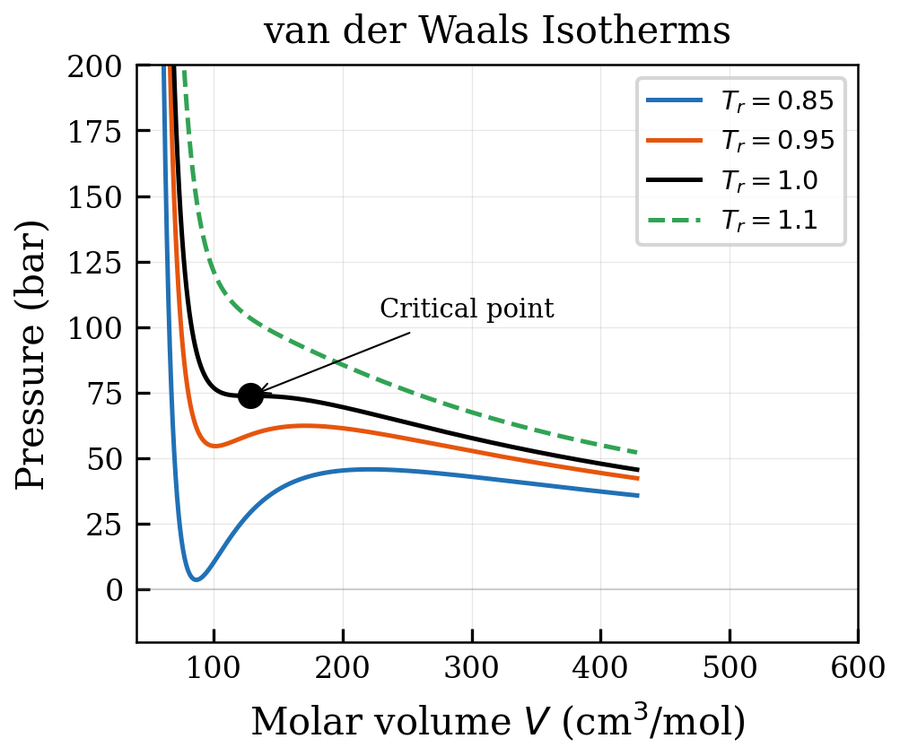
Figure 3.1: 01 Vdw Isotherms
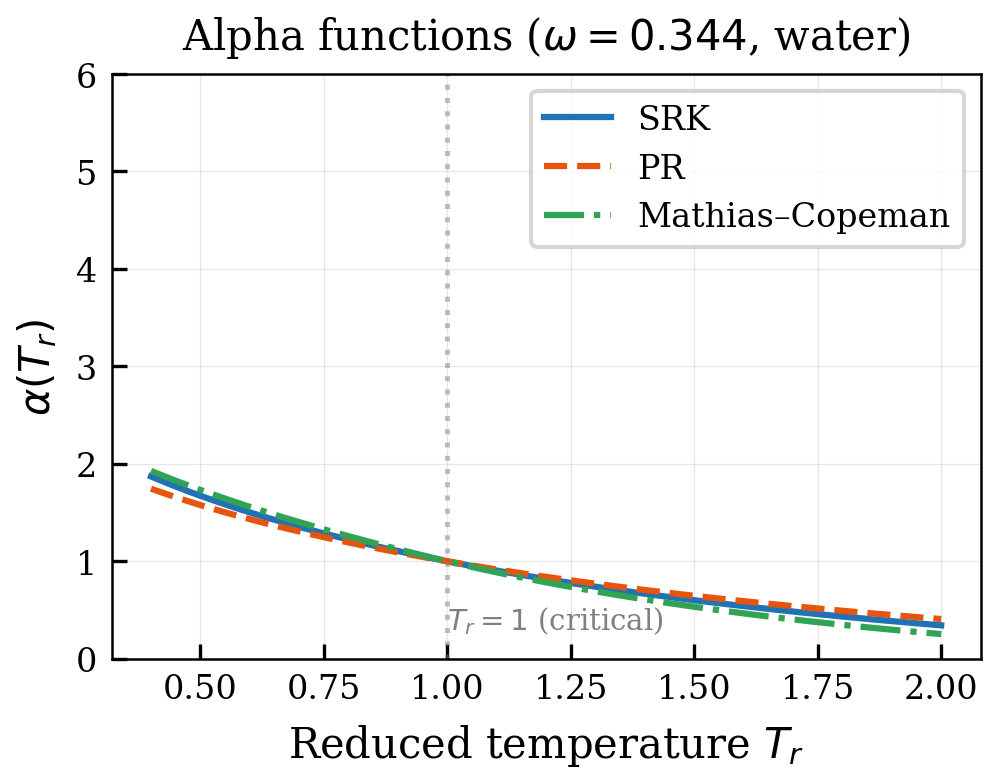
Figure 3.2: 02 Alpha Functions
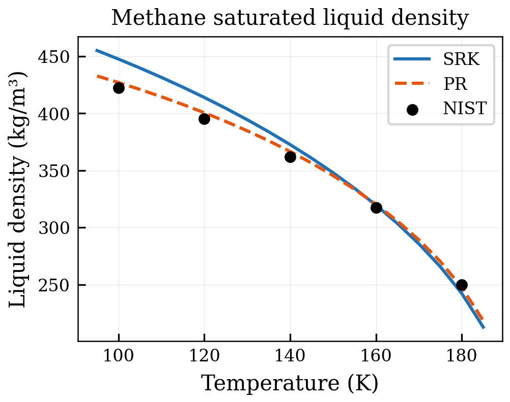
Figure 3.3: 03 Srk Pr Methane Density
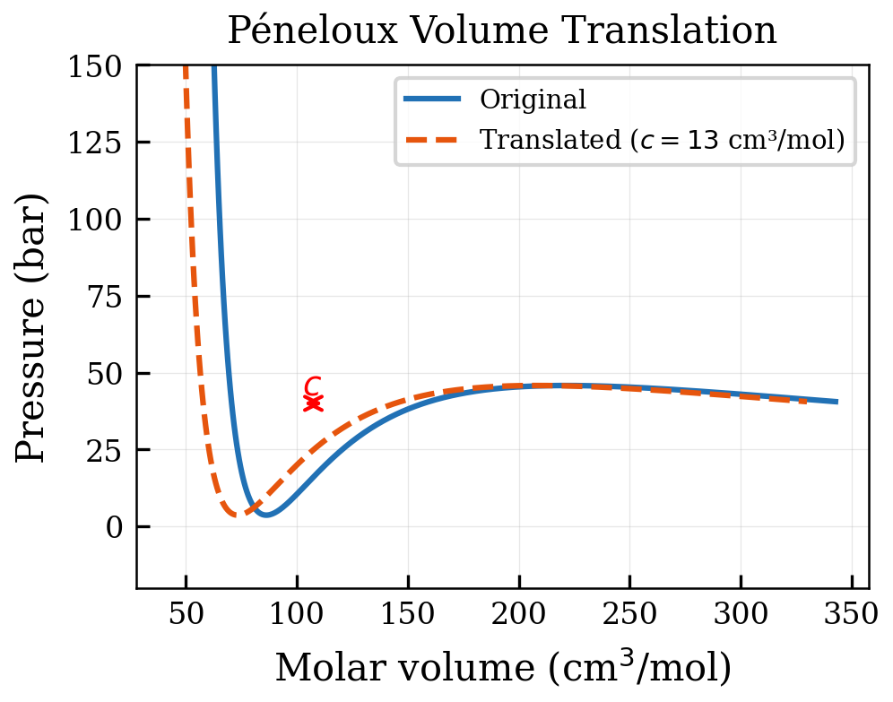
Figure 3.4: 04 Volume Translation
Association Theory: Wertheim's Thermodynamic Perturbation Theory
Learning Objectives
After reading this chapter, the reader will be able to:
- Explain the physical basis of Wertheim's thermodynamic perturbation theory (TPT)
- Define association sites, bonding states, and the site fraction $X_A$
- Derive the Helmholtz energy contribution from association
- Compute the association strength $\Delta^{AB}$ and understand its components
- Apply common association schemes (2B, 3B, 4C) to real molecules
4.1 The Physics of Hydrogen Bonding
4.1.1 What Is a Hydrogen Bond?
A hydrogen bond forms when a hydrogen atom covalently bonded to an electronegative atom (the donor) interacts with a lone pair of electrons on another electronegative atom (the acceptor). The interaction is primarily electrostatic but has a significant covalent component at short distances.
The key characteristics of hydrogen bonds that distinguish them from dispersion forces [41, 42]:
- Strength: Hydrogen bonds have energies of 10–40 kJ/mol, compared to 0.5–5 kJ/mol for typical dispersion interactions
- Directionality: Hydrogen bonds are roughly linear, with an optimal donor–H–acceptor angle near 180°
- Saturability: Each hydrogen atom can participate in at most one hydrogen bond (to first approximation)
- Short range: Hydrogen bonds operate over distances of 1.5–3.5 Å
These characteristics mean that hydrogen bonding cannot be adequately described by the mean-field, isotropic attraction captured by the $a$ parameter in cubic equations of state.
4.1.2 Association vs. Solvation
Two distinct types of strong specific interactions are relevant for thermodynamic modeling:
Self-association occurs between molecules of the same species. Water molecules form hydrogen bonds with other water molecules, creating a three-dimensional network [43]. Alcohols self-associate through OH–OH hydrogen bonds, forming linear chains in the liquid state.
Cross-association (or solvation) occurs between different molecular species. For example, the oxygen atom in a ketone can accept a hydrogen bond from water, even though the ketone cannot donate hydrogen bonds. Similarly, the $\pi$-electrons in aromatic compounds can act as weak hydrogen bond acceptors.
Both phenomena are captured within Wertheim's framework by appropriate assignment of association sites.
4.2 Wertheim's Thermodynamic Perturbation Theory
4.2.1 The Fundamental Papers
Between 1984 and 1986, Michael Wertheim published a series of four papers [4, 5, 6, 7] that laid the foundation for modern association models. The theory is developed in the context of classical statistical mechanics for fluids with anisotropic interactions.
The key innovation was to decompose the intermolecular potential into two parts:
$$u(1,2) = u_{\text{ref}}(r_{12}) + u_{\text{assoc}}(1,2)$$
where $u_{\text{ref}}$ is a spherically symmetric reference potential (e.g., hard sphere or Lennard-Jones) that depends only on the center–center distance $r_{12}$, and $u_{\text{assoc}}$ is the orientation-dependent association interaction that depends on the full configuration (position and orientation) of both molecules.
4.2.2 The Site Model
Wertheim modeled the anisotropic attraction by placing discrete association sites on each molecule. Each site represents a specific location where a hydrogen bond can form. A site $A$ on molecule $i$ can bond with site $B$ on molecule $j$ if and only if the two sites are within a characteristic distance and in a favorable mutual orientation.
The site–site interaction potential has the form:
$$u_{\text{assoc}}^{AB}(1,2) = \begin{cases} -\varepsilon^{AB} & \text{if } r_{AB} < r_c^{AB} \\ 0 & \text{otherwise} \end{cases}$$
where $\varepsilon^{AB}$ is the association energy (well depth) and $r_c^{AB}$ is the critical bonding distance.
The critical assumption of the theory is that each site can bond with at most one other site. This steric incompatibility condition (one-bond-per-site) is what makes Wertheim's theory tractable — it eliminates the combinatorial explosion of possible bonding configurations that plagued earlier chemical theories.
4.2.3 Graph Theory and Cluster Expansion
Wertheim developed his theory using a graphical expansion of the partition function, analogous to the Mayer cluster expansion [44] for simple fluids. The key step is to classify molecular clusters according to the bonding topology:
- Monomers: molecules with no bonds
- Dimers: pairs of molecules connected by one bond
- Trimers: three molecules in a chain
- Branched structures: molecules with bonds to multiple partners (at different sites)
The one-bond-per-site condition ensures that the cluster expansion can be resummed exactly to first order in the perturbation (first-order thermodynamic perturbation theory, or TPT1). This remarkable result means that the free energy depends only on the monomer fraction — the fraction of molecules not bonded at each site — rather than on the detailed distribution of cluster sizes.
4.3 The Site Balance Equation
4.3.1 Derivation
The central result of Wertheim's TPT1 is an implicit equation for $X_{A_i}$, the fraction of molecules of type $i$ that are not bonded at site $A$:
$$X_{A_i} = \frac{1}{1 + \rho \sum_{j} x_j \sum_{B_j} X_{B_j} \Delta^{A_i B_j}}$$
Let us examine each term:
- $\rho$ is the total molar density of the mixture
- $x_j$ is the mole fraction of component $j$
- The outer sum runs over all components $j$
- The inner sum runs over all association sites $B_j$ on component $j$
- $X_{B_j}$ is the fraction of molecules $j$ not bonded at site $B$
- $\Delta^{A_i B_j}$ is the association strength between site $A$ on molecule $i$ and site $B$ on molecule $j$
This equation has a simple physical interpretation: the probability that site $A$ on molecule $i$ is free (not bonded) equals 1 divided by 1 plus the total concentration of available bonding partners weighted by the association strength. If there are many potential bonding partners with strong interactions ($\rho x_j X_{B_j} \Delta^{AB}$ is large), then $X_{A_i}$ is small — most sites are bonded.
4.3.2 The Association Strength
The association strength $\Delta^{A_i B_j}$ quantifies the tendency for site $A$ on molecule $i$ to bond with site $B$ on molecule $j$. In the CPA framework, it is given by:
$$\Delta^{A_i B_j} = g(\rho) \left[\exp\left(\frac{\varepsilon^{A_i B_j}}{RT}\right) - 1\right] b_{ij} \beta^{A_i B_j}$$
where:
- $g(\rho)$ is the radial distribution function (RDF) at contact distance, evaluated for the reference fluid
- $\varepsilon^{A_i B_j}$ is the association energy — the depth of the potential well for the site–site interaction
- $\beta^{A_i B_j}$ is the association volume — a dimensionless parameter related to the spatial extent of the bonding interaction
- $b_{ij}$ is the co-volume, linking the association to the molecular size
The exponential factor $[\exp(\varepsilon^{AB}/RT) - 1]$ captures the Boltzmann weighting of the association energy. At low temperatures, this factor is large, meaning strong association. At high temperatures, it approaches $\varepsilon^{AB}/RT$ (weak association limit). The $-1$ ensures that $\Delta \to 0$ as $\varepsilon^{AB} \to 0$ (no association for non-interacting sites).
4.3.3 The Radial Distribution Function
The radial distribution function $g(\rho)$ describes the probability of finding the center of molecule $j$ at contact distance from molecule $i$, relative to a uniform distribution. For the simplified CPA, a simple expression is used:
$$g(\rho) = \frac{1}{1 - 1.9 \eta}$$
where $\eta = b\rho/4$ is the packing fraction. This expression, derived from the Carnahan–Starling equation [45], provides a good approximation for hard-sphere fluids and captures the key physics: as density increases, the probability of molecular contact increases (because molecules are forced closer together), which enhances the rate of association.
4.4 Association Schemes
4.4.1 Notation
Association schemes specify the number and type of sites on each molecule. The standard notation, introduced by [46, 47], uses numbers and letters:
- 1A: One association site (e.g., HCl)
- 2A: Two identical sites (e.g., dimerizing acid)
- 2B: Two non-identical sites — one electron donor, one electron acceptor (e.g., simple alcohol model)
- 3B: Three sites — two identical donors and one acceptor, or vice versa (e.g., alcohol with two lone pairs and one OH)
- 4C: Four sites — two donors and two acceptors (e.g., water)
4.4.2 Common Molecules and Their Schemes
| Molecule | Recommended Scheme | Sites | Description |
|---|---|---|---|
| Water | 4C | 2 $e^-$ donors, 2 $e^-$ acceptors | Two lone pairs + two OH |
| Methanol | 2B or 3B | 1 donor, 1 (or 2) acceptor | OH group |
| Ethanol | 2B or 3B | 1 donor, 1 (or 2) acceptor | OH group |
| MEG | 4C | 2 donors, 2 acceptors | Two OH groups |
| DEG | 4C | 2 donors, 2 acceptors | Two OH groups |
| TEG | 4C | 2 donors, 2 acceptors | Two OH groups |
| Acetic acid | 1A | 1 site (dimerization) | Carboxylic acid |
| Formic acid | 1A | 1 site (dimerization) | Carboxylic acid |
| Amines (primary) | 3B | 2 donors, 1 acceptor | NH$_2$ group |
| CO$_2$ | Solvation only | 0 self-association sites | Lewis acid (electron acceptor) |
Table 4.1: Recommended association schemes for common molecules in CPA.
The choice of association scheme significantly affects the number of pure-component parameters. For a 2B molecule, there are two association parameters ($\varepsilon$ and $\beta$); for a 4C molecule with symmetric sites, the same two parameters apply but the equations are different due to the different number of sites.
4.4.3 Water: The 4C Scheme
Water is the most important associating molecule in process engineering. In the 4C scheme, each water molecule has four association sites:
- Sites $e_1$ and $e_2$ represent the two lone electron pairs (electron donors / hydrogen bond acceptors)
- Sites $H_1$ and $H_2$ represent the two hydrogen atoms (proton donors)
An $H$ site on one water molecule bonds with an $e$ site on another. The allowed bond pairs are $\{H_1 \leftrightarrow e_1, H_1 \leftrightarrow e_2, H_2 \leftrightarrow e_1, H_2 \leftrightarrow e_2\}$, while $H \leftrightarrow H$ and $e \leftrightarrow e$ bonds are forbidden.
With symmetric sites ($X_{H_1} = X_{H_2} \equiv X_H$ and $X_{e_1} = X_{e_2} \equiv X_e$), the site balance equations reduce to:
$$X_H = \frac{1}{1 + 2\rho X_e \Delta^{He}}$$
$$X_e = \frac{1}{1 + 2\rho X_H \Delta^{He}}$$
where $\Delta^{He}$ uses the single pair of association parameters $\varepsilon^{He}$ and $\beta^{He}$. These two coupled equations can be solved analytically by substituting one into the other.
4.4.4 Analytical Solutions for Simple Schemes
For the 2B scheme (one site of each type), the site balance equations give:
$$X_A = X_B = \frac{-1 + \sqrt{1 + 4\rho\Delta}}{2\rho\Delta}$$
For the 4C scheme with symmetric sites, the analytical solution is:
$$X_H = X_e = \frac{-1 + \sqrt{1 + 8\rho\Delta}}{4\rho\Delta}$$
These closed-form expressions are valuable for both understanding and computation — they eliminate the need for iterative solution of the site balance equations in pure-component calculations.
4.4.5 Limits of the Site Fraction
The behavior of $X_A$ in the two extreme limits is instructive:
Low density limit ($\rho \to 0$): $X_A \to 1$. All sites are free because there are no neighboring molecules to bond with. This is the ideal gas limit where association vanishes.
High density limit ($\rho \to \infty$): $X_A \to 0$. All sites are bonded because every molecule is surrounded by potential bonding partners. In practice, $X_A$ never reaches exactly zero — even in liquid water at ambient conditions, approximately 10–15% of hydrogen bond sites are free at any instant.
The crossover density where $X_A = 0.5$ provides a useful measure of the onset of significant association:
$$\rho^* = \frac{1}{\Delta^{AB}}$$
At densities below $\rho^$, most sites are free; at densities above $\rho^$, most sites are bonded. For water at 298 K, $\rho^* \approx 5$ mol/L, well below the actual liquid density of 55.5 mol/L. This confirms that liquid water is strongly associated, with $X_H \approx 0.1$–$0.2$.
4.4.6 Temperature Dependence of Association
The fraction of free sites depends on temperature through the association strength $\Delta^{AB}$:
$$\Delta^{AB} \propto \exp\left(\frac{\varepsilon^{AB}}{RT}\right) - 1$$
As temperature increases:
- The exponential factor decreases (less Boltzmann weight for the bonded state)
- $\Delta^{AB}$ decreases
- $X_A$ increases (fewer bonded sites)
This temperature dependence is responsible for many characteristic properties of associating fluids:
- The large heat capacity of liquid water (breaking hydrogen bonds absorbs energy)
- The negative thermal expansion coefficient of water below 4°C
- The unusually high boiling point of water compared to H$_2$S
- The decreasing viscosity of glycols and alcohols with temperature
4.5 The Helmholtz Energy of Association
4.5.1 The General Expression
Wertheim's TPT1 gives the Helmholtz energy contribution from association as:
$$\frac{A^{\text{assoc}}}{nRT} = \sum_{i=1}^{c} x_i \sum_{A_i} \left(\ln X_{A_i} - \frac{X_{A_i}}{2} + \frac{1}{2}\right)$$
where the outer sum is over all components and the inner sum is over all association sites on component $i$. The terms have the following interpretation:
- $\ln X_{A_i}$: entropic contribution — there are fewer configurations when molecules are bonded
- $-X_{A_i}/2 + 1/2$: ensures proper normalization and removes double-counting of bonded pairs
4.5.2 Properties of the Association Energy
Several important properties follow from this expression:
- $A^{\text{assoc}} \leq 0$ always: Association always lowers the free energy (it is a stabilizing interaction). Since $0 \leq X_A \leq 1$, we have $\ln X_A \leq 0$ and $-X_A/2 + 1/2 \geq 0$, with the logarithmic term dominating.
- $A^{\text{assoc}} = 0$ when $X_A = 1$ for all sites: If no association occurs (all sites free), the association contribution vanishes.
- $A^{\text{assoc}}$ becomes more negative with increasing association: As $X_A \to 0$ (complete association), $A^{\text{assoc}} \to -\infty$ in the logarithmic limit.
- Temperature dependence: As temperature increases, $\Delta$ decreases, $X_A$ increases, and $A^{\text{assoc}}$ becomes less negative. This is consistent with hydrogen bonds being broken by thermal energy.
4.5.3 Pressure Contribution from Association
The association contribution to pressure is obtained by differentiation:
$$P^{\text{assoc}} = -\left(\frac{\partial A^{\text{assoc}}}{\partial V}\right)_{T,\mathbf{n}} = -\frac{nRT}{2} \sum_i x_i \sum_{A_i} \frac{1}{X_{A_i}} \frac{\partial X_{A_i}}{\partial V}$$
The derivative $\partial X_{A_i}/\partial V$ requires implicit differentiation of the site balance equations and is non-trivial — this is one of the computational challenges of CPA relative to pure cubic EoS.
4.6 Fugacity Coefficient from Association
4.6.1 The Chemical Potential Contribution
The association contribution to the chemical potential of component $i$ is:
$$\frac{\mu_i^{\text{assoc}}}{RT} = \sum_{A_i} \ln X_{A_i} + \rho \sum_k x_k \sum_{A_k} \frac{1}{X_{A_k}} \frac{\partial X_{A_k}}{\partial n_i}$$
The first term is the direct contribution from the sites on molecule $i$. The second term accounts for the fact that adding molecule $i$ to the mixture changes the association equilibrium of all other species.
4.6.2 Simplification Using the Site Balance
A remarkable simplification occurs when the site balance equation is used. Differentiating the Helmholtz energy while using the stationarity condition (that the site balance equations are satisfied), one obtains:
$$\frac{\mu_i^{\text{assoc}}}{RT} = \sum_{A_i} \ln X_{A_i} - \frac{1}{2} \rho \sum_k x_k \sum_{A_k} \left(\frac{1}{X_{A_k}} - 1\right) \frac{\partial \Delta^{A_k}}{\partial n_i}$$
In NeqSim, this is implemented using analytical derivatives of the association strength with respect to composition.
4.7 Solution of the Site Balance Equations
4.7.1 Successive Substitution
The simplest approach to solving the coupled site balance equations is successive substitution:
- Initialize $X_{A_i}^{(0)} = 1$ for all sites (no association)
- Update: $X_{A_i}^{(k+1)} = \frac{1}{1 + \rho \sum_j x_j \sum_{B_j} X_{B_j}^{(k)} \Delta^{A_i B_j}}$
- Repeat until convergence: $\max |X_{A_i}^{(k+1)} - X_{A_i}^{(k)}| < \varepsilon_{\text{tol}}$
This method is simple and usually converges in 3–10 iterations for typical conditions. However, it can be slow near critical points or at conditions of very strong association.
4.7.2 Newton's Method
For faster convergence, Newton's method can be applied to the residual form of the site balance equations:
$$R_{A_i} = X_{A_i} - \frac{1}{1 + \rho \sum_j x_j \sum_{B_j} X_{B_j} \Delta^{A_i B_j}} = 0$$
The Jacobian matrix is:
$$J_{A_i, B_j} = \frac{\partial R_{A_i}}{\partial X_{B_j}} = \delta_{A_i B_j} + \frac{\rho x_j \Delta^{A_i B_j}}{\left(1 + \rho \sum_k x_k \sum_{C_k} X_{C_k} \Delta^{A_i C_k}\right)^2}$$
Newton's method typically converges in 2–4 iterations but requires forming and solving the linear system at each step.
4.7.3 Fully Implicit Approach
In the fully implicit approach used in NeqSim's advanced solvers, the site balance equations are solved simultaneously with the flash equations, rather than as an inner loop. This eliminates the nested iteration structure and can significantly improve overall convergence. Chapter 8 discusses this in detail.
4.8 Temperature and Density Dependence of Association
4.8.1 Effect of Temperature
As temperature increases:
- The Boltzmann factor $\exp(\varepsilon/RT)$ decreases, reducing $\Delta$
- The site fractions $X_A$ increase (fewer bonds)
- The association free energy $A^{\text{assoc}}$ becomes less negative
This temperature dependence captures the well-known behavior that hydrogen bonds weaken and break at high temperatures. The predicted degree of association ($1 - X_A$) for water at 1 bar decreases from about 0.85 at 25°C to about 0.6 at 100°C and approaches zero near the critical temperature.
4.8.2 Effect of Density
As density increases:
- The contact probability $g(\rho)$ increases, enhancing $\Delta$
- The product $\rho \Delta$ increases, leading to more association
- The competing effect of steric crowding limits the maximum bonding
The density dependence through $\rho g(\rho)$ is crucial for predicting the correct pressure dependence of association. Under high pressures, the liquid becomes denser, molecules are forced closer together, and the degree of association increases.
from neqsim import jneqsim
import json
# Examine how association changes with temperature
for T_C in [25, 50, 100, 150, 200, 250, 300, 350]:
fluid = jneqsim.thermo.system.SystemSrkCPAstatoil(273.15 + T_C, 10.0)
fluid.addComponent("water", 1.0)
fluid.setMixingRule(10)
ops = jneqsim.thermodynamicoperations.ThermodynamicOperations(fluid)
ops.TPflash()
fluid.initProperties()
# The density reflects the degree of association
density = fluid.getDensity("kg/m3")
print(f"T = {T_C:4d} C, rho = {density:.1f} kg/m3")
4.9 Worked Example: Computing Site Fractions for Water
To illustrate the application of the theory, let us work through the computation of site fractions for pure water at 25°C and 1 bar.
4.9.1 Water Association Parameters
Water is modeled with the 4C scheme: two electron-donor sites (denoted $e_1$, $e_2$) and two proton-acceptor sites (denoted $H_1$, $H_2$). By symmetry:
$$X_{e_1} = X_{e_2} = X_e, \quad X_{H_1} = X_{H_2} = X_H$$
The association strength is non-zero only for unlike site types:
$$\Delta^{eH} = g(\rho) \left[\exp\left(\frac{\varepsilon^{eH}}{RT}\right) - 1\right] b_{11} \kappa^{eH} \neq 0$$
$$\Delta^{ee} = \Delta^{HH} = 0$$
With the NeqSim/Equinor parameter set for water: $\varepsilon^{eH}/R = 2003.2$ K and $\kappa^{eH} = 0.0692$.
4.9.2 Self-Consistent Solution
The site fraction equations for the 4C scheme reduce to:
$$X_e = \frac{1}{1 + 2\rho X_H \Delta^{eH}}$$
$$X_H = \frac{1}{1 + 2\rho X_e \Delta^{eH}}$$
By symmetry, $X_e = X_H = X$, giving:
$$X = \frac{1}{1 + 2\rho X \Delta^{eH}}$$
This is a quadratic: $2\rho\Delta^{eH}X^2 + X - 1 = 0$, with solution:
$$X = \frac{-1 + \sqrt{1 + 8\rho\Delta^{eH}}}{4\rho\Delta^{eH}}$$
At 25°C and 1 bar, liquid water has a molar density $\rho \approx 55.3$ mol/L. The radial distribution function $g \approx 1.3$ at this density. Evaluating:
$$\frac{\varepsilon^{eH}}{RT} = \frac{2003.2}{298.15} = 6.72$$
$$\exp\left(\frac{\varepsilon^{eH}}{RT}\right) - 1 = e^{6.72} - 1 \approx 830$$
The resulting $X \approx 0.15$, meaning 85% of the sites are bonded — consistent with neutron diffraction measurements showing 3.5–3.8 hydrogen bonds per water molecule out of a maximum of 4.
4.9.3 Physical Interpretation
The degree of association $\alpha = 1 - X$ quantifies how many hydrogen bonds have formed:
- $\alpha = 0$ (all $X = 1$): no hydrogen bonds, ideal gas limit
- $\alpha = 1$ (all $X = 0$): every site bonded, crystalline ice limit
For liquid water at ambient conditions, $\alpha \approx 0.85$ — the hydrogen bond network is extensive but far from complete. This incomplete bonding is what makes water a liquid rather than a solid at room temperature.
The average number of hydrogen bonds per molecule is:
$$\langle n_{\text{HB}} \rangle = \frac{1}{2} \times (\text{number of sites}) \times \alpha = \frac{1}{2} \times 4 \times 0.85 = 1.7 \text{ bonds donated per molecule}$$
or equivalently 3.4 bonds per molecule counting both donated and accepted bonds, in good agreement with experimental values.
4.10 Association Schemes for Common Molecules
To aid in practical application, this section catalogs the association schemes used for the most important industrial molecules.
4.10.1 Comprehensive Scheme Catalog
| Molecule | Scheme | Sites | Donor | Acceptor | Typical $\varepsilon/R$ (K) | Notes |
|---|---|---|---|---|---|---|
| Water | 4C | 4 | 2 (H) | 2 (O) | 1800–2400 | Tetrahedral network |
| Methanol | 2B | 2 | 1 (H) | 1 (O) | 2200–2800 | Linear chains |
| Ethanol | 2B | 2 | 1 (H) | 1 (O) | 2350–2700 | Similar to MeOH |
| MEG | 4C | 4 | 2 (H) | 2 (O) | 2150–2500 | Two OH groups |
| DEG | 4C | 4 | 2 (H) | 2 (O) | 2200–2600 | Two OH + ether O |
| TEG | 4C | 4 | 2 (H) | 2 (O) | 2300–2700 | Two OH + 2 ether O |
| Acetic acid | 1A | 1 | — | — | 3500–4500 | Strong dimerization |
| CO$_2$ | Solv. | 1* | 0 | 1 (O) | — | *Solvation only |
| H$_2$S | 2B/3B | 2–3 | 1 (H) | 1–2 (S) | 400–800 | Weak self-assoc. |
| Ammonia | 3B | 3 | 1 (H) | 2 (N) | 1200–1800 | Pyramidal structure |
Table 4.1: Association schemes for common industrial molecules.
4.10.2 Selecting the Right Scheme
The choice of association scheme affects both the accuracy and the number of adjustable parameters:
- More sites → more flexible model, but more parameters to fit
- Fewer sites → more constrained, but potentially poor far from the regression data
Guidelines:
- Use the scheme that reflects the molecular geometry (e.g., 4C for water with 4 bonding sites)
- If multiple schemes give similar fits to pure-component data, prefer the one with better cross-association predictions
- For the 1A scheme (acids), the single parameter $\varepsilon^{AA}$ must be large enough to reproduce the strong dimerization constant
4.11 From Clusters to Thermodynamics: The Physical Picture
4.11.1 The Cluster Expansion Perspective
Wertheim's TPT can be understood through the lens of cluster expansions from statistical mechanics. In a non-associating fluid, the partition function sums over all configurations of interacting molecules. When association is introduced, the configurations can be classified by the bonding pattern — the "graph" of hydrogen bonds in the system.
Wertheim's key insight was to resum this cluster expansion so that the dominant contribution comes from tree-like bonding structures (chains, stars, branched chains) rather than ring structures. This resummation is exact in the limit of single-bond-per-site (the steric incompatibility condition), and the resulting free energy expression involves only the monomer fraction $X_A$ at each site.
The physical picture is:
- At low density (gas phase): most molecules are monomers, with occasional dimers and trimers
- At moderate density: chains and small clusters form, with the average cluster size growing
- At high density (liquid phase): an extended network of hydrogen bonds pervades the system, but with many broken bonds due to thermal fluctuations
4.11.2 Steric Effects and Bond Saturation
The one-bond-per-site restriction is the central approximation of TPT-1. It captures the saturation of hydrogen bonding: once all sites on a molecule are bonded, no further association can occur regardless of how many potential partners surround it.
This saturation explains several physical phenomena:
- Water at high pressure: the hydrogen bond network does not continue to strengthen indefinitely with increasing density. At extreme pressures (> 10 GPa), water's structure changes qualitatively.
- Alcohol chain length: the average chain length in liquid alcohols is 4–8 molecules for methanol and ethanol, not infinite chains, because thermal energy breaks bonds even when all neighbors are potential partners.
- Dilute aqueous solutions: a small amount of solute (e.g., methane in water) can disrupt many hydrogen bonds because the water molecules adjacent to the solute must reorganize their bonding network.
4.11.3 Temperature Dependence of Association
The fraction of bonded sites $\alpha = 1 - X$ depends strongly on temperature through the Boltzmann factor in $\Delta^{AB}$. The temperature at which $\alpha$ drops to 0.5 provides a characteristic "association temperature":
$$T^* = \frac{\varepsilon^{AB}}{R \ln(1 + 1/(\rho b \beta))}$$
For water, $T^* \approx 550$ K at liquid densities, which is close to the critical temperature (647 K). This is not a coincidence: the breakdown of the hydrogen bond network is a major factor driving the approach to the critical point in associating fluids.
For weaker associating species (e.g., H$_2$S with $\varepsilon/R \approx 500$ K), $T^*$ is much lower, and association effects on bulk properties are less dramatic — consistent with H$_2$S being a gas at ambient conditions despite having two bonding sites.
Summary
Key points from this chapter:
- Wertheim's TPT provides a rigorous statistical mechanical framework for associating fluids
- Molecules are modeled with discrete association sites, each forming at most one bond
- The site balance equation $X_A = 1/(1 + \rho \sum_j x_j \sum_{B_j} X_{B_j} \Delta^{AB})$ is the central equation
- The association strength $\Delta^{AB}$ depends on energy ($\varepsilon$), volume ($\beta$), density ($g(\rho)$), and temperature
- Association schemes (2B, 3B, 4C, etc.) specify the number and type of sites per molecule
- The Helmholtz energy from association is $A^{\text{assoc}}/nRT = \sum_i x_i \sum_{A_i} (\ln X_{A_i} - X_{A_i}/2 + 1/2)$
- Simple schemes have analytical solutions; complex mixtures require iterative solution
- Site symmetry reduction exploits the equivalence of sites within an association scheme, reducing system dimensionality by up to 75% with no loss of accuracy
4.12 Exploiting Site Symmetry: Exact Dimensionality Reduction
4.12.1 The Type-Averaging Theorem
A key structural feature of most association schemes is that several individual sites on a molecule are equivalent by symmetry. In the 4C scheme for water, for example, the two electron-donor sites are indistinguishable (both lone pairs on oxygen), and the two proton-donor sites are likewise indistinguishable (both O–H bonds). This means $X_{e_1} = X_{e_2}$ and $X_{H_1} = X_{H_2}$ at equilibrium.
[48] proved formally that this equivalence is not merely an approximation but an exact consequence of Wertheim's theory. When sites $k$ and $l$ on component $i$ belong to the same type $\alpha$ (i.e., they interact identically with all other sites), then:
$$X_{i,k} = X_{i,l} \equiv \tilde{X}_{i,\alpha} \quad \text{for all } k, l \in \text{type } \alpha$$
This allows replacing the site balance equations in terms of individual site fractions $\{X_{A_i}\}$ (dimension $n_s = \sum_i s_i$) with type-averaged fractions $\{\tilde{X}_{i,\alpha}\}$ (dimension $p = \sum_i p_i$), where $p_i$ is the number of unique site types on component $i$.
4.12.2 Dimensionality Reduction for Common Systems
The reduction depends on the molecular symmetry:
| Molecule | Scheme | Sites ($s_i$) | Types ($p_i$) | Multiplicities | Reduction |
|---|---|---|---|---|---|
| Water | 4C | 4 | 2 | $m_e = 2, m_H = 2$ | 50% |
| Methanol | 2B | 2 | 2 | $m_e = 1, m_H = 1$ | 0% |
| Methanol | 3B | 3 | 2 | $m_e = 2, m_H = 1$ | 33% |
| MEG | 4C | 4 | 2 | $m_e = 2, m_H = 2$ | 50% |
| DEG | 4C | 4 | 2 | $m_e = 2, m_H = 2$ | 50% |
| TEG | 4C | 4 | 2 | $m_e = 2, m_H = 2$ | 50% |
| Acetic acid | 1A | 1 | 1 | $m = 1$ | 0% |
| CO$_2$ (solvation) | — | 1 | 1 | $m_e = 1$ | 0% |
Table 4.2: Dimensionality reduction from site symmetry for common molecules [48].
The 2B scheme gains nothing from reduction because both sites are already of different types (one electron donor, one proton donor). The largest benefit comes from the 4C scheme, which is also the most common in industrial applications (water, glycols).
4.12.3 Impact on Mixture Calculations
For mixtures, the total dimensions of the site balance system are:
| System | $n_s$ | $p$ | Full dimension | Reduced dimension | Jacobian speedup |
|---|---|---|---|---|---|
| Pure water (4C) | 4 | 2 | 5 | 3 | 4.6× |
| Water + methanol (4C+2B) | 6 | 4 | 7 | 5 | 2.7× |
| Water + MEG (4C+4C) | 8 | 4 | 9 | 5 | 5.8× |
| Water + MEG + TEG (4C+4C+4C) | 12 | 6 | 13 | 7 | 6.4× |
| NG + H$_2$O + MEG | 8 | 4 | 9 | 5 | 5.8× |
| NG + H$_2$O + TEG | 8 | 4 | 9 | 5 | 5.8× |
Table 4.3: Site balance system dimensions and Jacobian speedup factors for common mixtures [48]. The Jacobian speedup is $((n_s+1)/(p+1))^3$.
The water–MEG–TEG ternary system — common in gas processing — sees the most dramatic reduction: from 12 individual site fractions to just 6 type-averaged fractions, yielding a 6.4× speedup in the Jacobian factorization.
4.12.4 The Reduced Site Balance Equation
In the type-averaged framework, the site balance equation becomes:
$$\tilde{X}_{i,\alpha} = \frac{1}{1 + \rho \sum_j x_j \sum_{\beta \in j} m_{j,\beta} \, \tilde{X}_{j,\beta} \, \tilde{\Delta}_{\alpha\beta}^{ij}}$$
where $m_{j,\beta}$ is the multiplicity of site type $\beta$ on component $j$, and $\tilde{\Delta}_{\alpha\beta}^{ij}$ is the association strength between type-representative sites. This equation has the same structure as the original site balance, but operates in the reduced-dimensional space.
The Helmholtz energy contribution becomes:
$$\frac{A^{\text{assoc}}}{nRT} = \sum_i x_i \sum_{\alpha \in i} m_{i,\alpha} \left(\ln \tilde{X}_{i,\alpha} - \frac{\tilde{X}_{i,\alpha}}{2} + \frac{1}{2}\right)$$
where each type contributes according to its multiplicity $m_{i,\alpha}$. This is exactly equivalent to summing over all individual sites — the reduction is lossless.
4.12.5 Cross-Association Matrix Structure
The type-averaged association strength matrix for a water (4C) + MEG (4C) system has the block structure:
| $e_w$ ($m=2$) | $H_w$ ($m=2$) | $e_m$ ($m=2$) | $H_m$ ($m=2$) | |
|---|---|---|---|---|
| $e_w$ ($m=2$) | 0 | $\tilde{\Delta}_{eH}^{ww}$ | 0 | $\tilde{\Delta}_{eH}^{wm}$ |
| $H_w$ ($m=2$) | $\tilde{\Delta}_{eH}^{ww}$ | 0 | $\tilde{\Delta}_{eH}^{mw}$ | 0 |
| $e_m$ ($m=2$) | 0 | $\tilde{\Delta}_{eH}^{mw}$ | 0 | $\tilde{\Delta}_{eH}^{mm}$ |
| $H_m$ ($m=2$) | $\tilde{\Delta}_{eH}^{wm}$ | 0 | $\tilde{\Delta}_{eH}^{mm}$ | 0 |
Table 4.4: Type-averaged association strength matrix for water + MEG. The zero entries reflect the electron-donor/proton-donor site type restriction: donor–donor interactions are forbidden.
The sparsity of this matrix — half the entries are zero — further reduces the computational cost of evaluating the site balance and its derivatives.
Exercises
- Exercise 4.1: For a pure 2B fluid with $\varepsilon/R = 2500$ K and $\beta = 0.02$, compute $X_A$ at $T = 300$ K for densities from 0 to 30 mol/L. Plot $X_A$ vs. density and interpret the result.
- Exercise 4.2: Derive the analytical solution for $X_A$ in the 4C scheme. Show that for a pure component with symmetric sites, the four coupled equations reduce to a single quadratic.
- Exercise 4.3: A mixture contains 70 mol% water (4C) and 30 mol% methanol (2B) at 25°C and 1 bar. Write out the complete set of site balance equations, identifying all allowed cross-association pairs.
- Exercise 4.4: Calculate and plot the association contribution to the Helmholtz energy for pure water (4C scheme) as a function of temperature from 0°C to 374°C at a fixed density of 55.5 mol/L. Relate the result to the heat of vaporization.
- Exercise 4.5: For a water (4C) + TEG (4C) system, write out the full site balance equations in both the individual-site basis ($n_s = 8$) and the type-averaged basis ($p = 4$). Verify that they yield identical solutions for $\tilde{X}_{i,\alpha}$.
- Exercise 4.6: A water (4C) + methanol (3B) + MEG (4C) mixture has $n_s = 11$ individual sites. Determine the number of unique site types $p$ and the multiplicities $m_{i,\alpha}$ for each component. What is the dimensionality reduction factor?
Figures
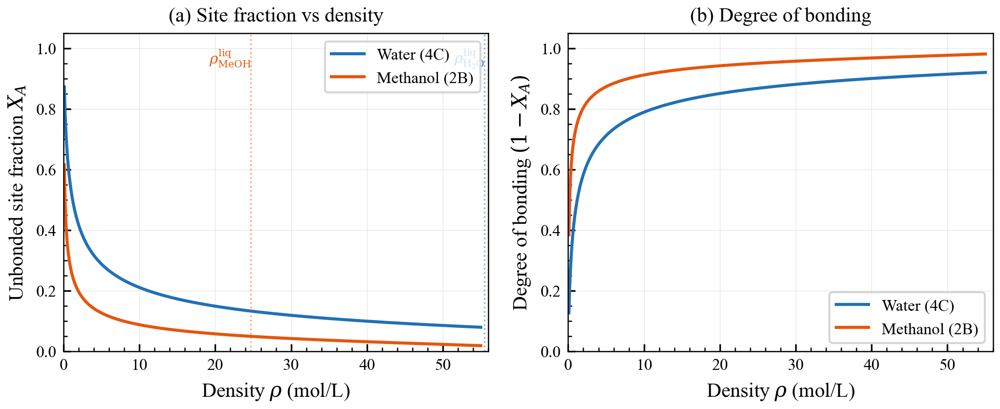
Figure 4.1: 01 Site Fraction Vs Density
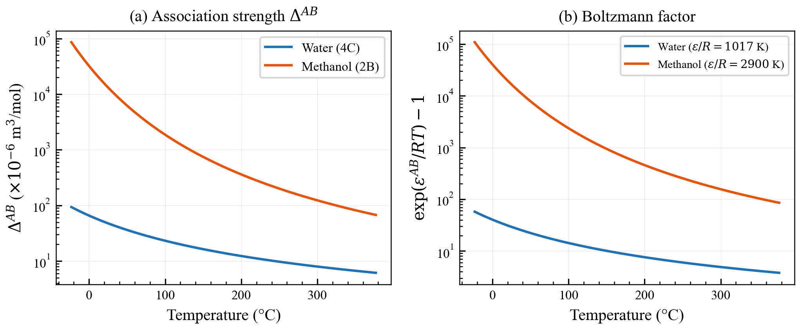
Figure 4.2: 02 Delta Vs Temperature
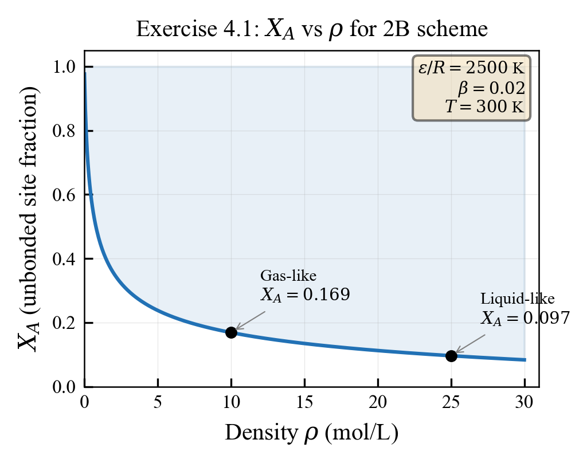
Figure 4.3: Ex01 Xa Vs Rho
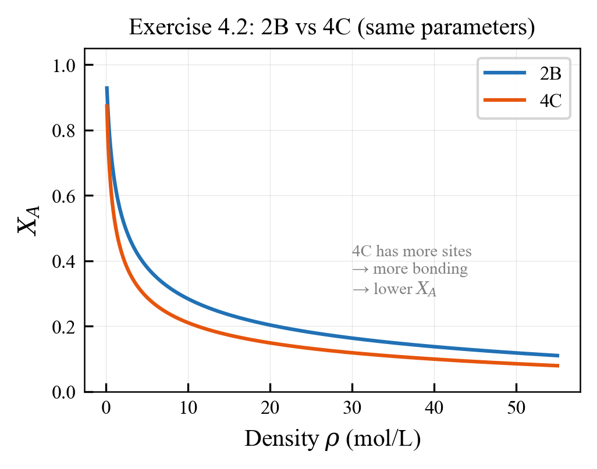
Figure 4.4: Ex02 2B Vs 4C
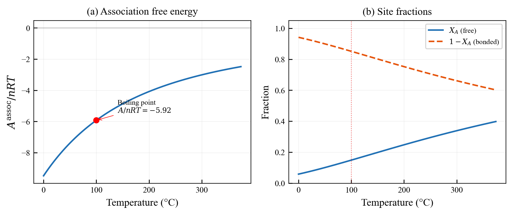
Figure 4.5: Ex04 Helmholtz And Bonding
Figures
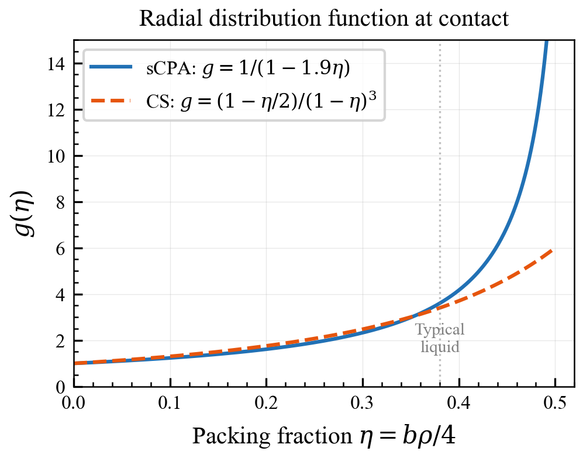
Figure 4.1: 04 Rdf Vs Packing
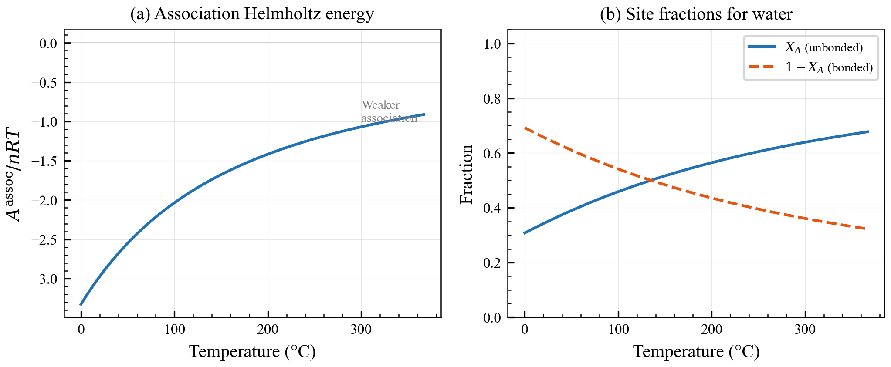
Figure 4.2: 05 Helmholtz Assoc Vs T
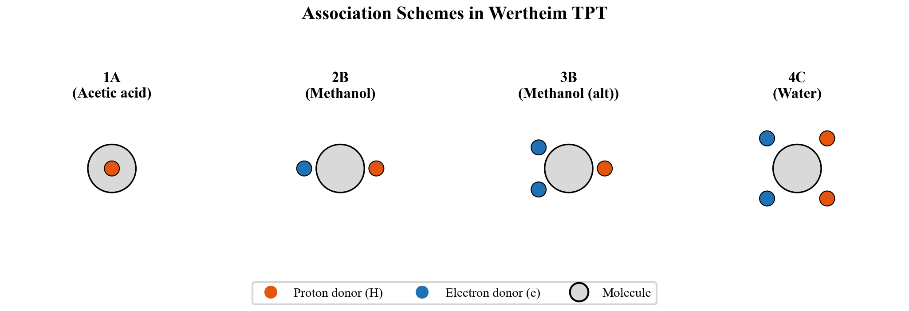
Figure 4.3: 06 Association Schemes
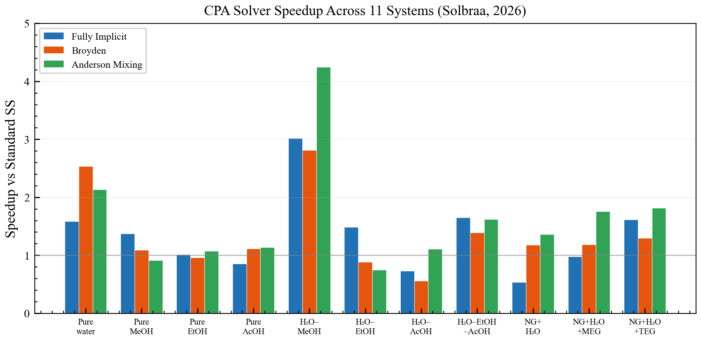
Figure 4.4: 07 Solver Speedup Paperlab
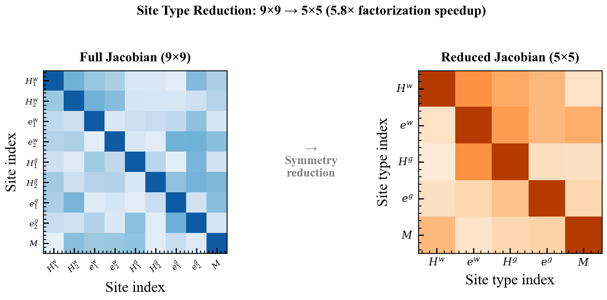
Figure 4.5: 08 Site Reduction Jacobian
Figures
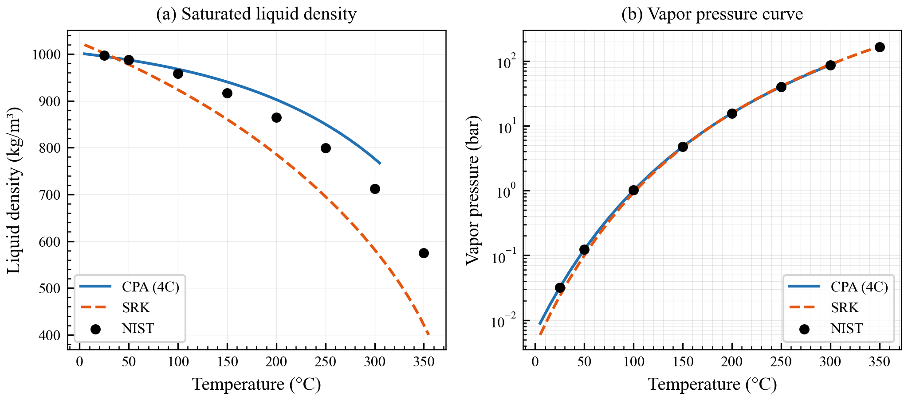
Figure 4.1: 03 Cpa Vs Srk Water
Part II: The CPA Model
The CPA Equation of State: Complete Formulation
Learning Objectives
After reading this chapter, the reader will be able to:
- Write the complete CPA pressure equation combining SRK and association terms
- Derive fugacity coefficients for CPA including all cross-derivatives
- Compute thermodynamic derivatives (enthalpy, entropy, heat capacity) from CPA
- Distinguish between standard CPA and simplified CPA (sCPA)
- Explain the five pure-component parameters of CPA
5.1 The CPA Pressure Equation
5.1.1 Combining Cubic and Association Terms
The CPA equation of state [12, 49] writes the pressure as the sum of a classical cubic term and an association term. A comprehensive treatment of CPA theory and applications is given by Kontogeorgis and Folas [50]:
$$P = P^{\text{cubic}} + P^{\text{assoc}}$$
Using the SRK equation as the cubic foundation:
$$P = \frac{RT}{V_m - b} - \frac{a(T)}{V_m(V_m + b)} - \frac{1}{2} \frac{RT}{V_m} \left(1 + \rho \frac{\partial \ln g}{\partial \rho}\right) \sum_i x_i \sum_{A_i} (1 - X_{A_i})$$
The first two terms are the standard SRK equation. The third term is the association contribution, where $g(\rho)$ is the radial distribution function at contact and $X_{A_i}$ are the site fractions satisfying the site balance equations from Chapter 4.
5.1.2 The Simplified CPA (sCPA)
The original CPA formulation used a hard-sphere reference for the radial distribution function, leading to a complex density dependence in the association term. [13] proposed a simplification where the RDF and its derivative are approximated as:
$$g(\rho) = \frac{1}{1 - 1.9\eta}, \quad \eta = \frac{b}{4V_m}$$
$$1 + \rho \frac{\partial \ln g}{\partial \rho} = \frac{1}{1 - 1.9\eta} + \frac{0.475\eta}{(1 - 1.9\eta)^2}$$
However, in many implementations including NeqSim's SystemSrkCPAstatoil, a further simplification is employed where the volume-dependent prefactor in the association pressure term is simplified. The resulting simplified CPA (sCPA) equation is:
$$P = \frac{RT}{V_m - b} - \frac{a(T)}{V_m(V_m + b)} - \frac{RT}{2V_m} \sum_i x_i \sum_{A_i} (1 - X_{A_i})$$
This form is computationally more efficient and produces results of comparable accuracy to the original CPA. The association strength in sCPA is:
$$\Delta^{A_i B_j} = g(\rho) \left[\exp\left(\frac{\varepsilon^{A_i B_j}}{RT}\right) - 1\right] b_{ij} \beta^{A_i B_j}$$
with $g(\rho) = 1/(1 - 1.9\eta)$ and $b_{ij} = (b_i + b_j)/2$.
5.1.3 Helmholtz Energy Formulation
It is often more convenient to work with the Helmholtz energy rather than the pressure equation. The total residual Helmholtz energy for CPA is:
$$A^{\text{res}} = A^{\text{SRK}} + A^{\text{assoc}}$$
where:
$$A^{\text{SRK}} = -nRT \ln\left(\frac{V - nb}{V}\right) - \frac{a}{b} \ln\left(\frac{V + nb}{V}\right)$$
$$A^{\text{assoc}} = nRT \sum_i x_i \sum_{A_i} \left(\ln X_{A_i} - \frac{X_{A_i}}{2} + \frac{1}{2}\right)$$
All thermodynamic properties can be derived from this Helmholtz energy by differentiation [51].
5.2 The Five Pure-Component Parameters
For an associating component in CPA, five parameters must be determined:
5.2.1 Physical Parameters from the Cubic Term
Three parameters come from the SRK part:
- $a_0$ (or equivalently $\Omega_a T_c^2/P_c$): the attractive energy parameter at the reference temperature. This primarily controls the vapor pressure.
- $b$: the co-volume parameter. This primarily controls the liquid density.
- $c_1$ (the first coefficient of the alpha function): controls the temperature dependence of $a(T)$ through:
$$a(T) = a_0 \left[1 + c_1\left(1 - \sqrt{T_r}\right)\right]^2$$
Note that for CPA, the Soave correlation $m = f(\omega)$ is not used. Instead, $c_1$ is fitted directly to experimental data along with the other parameters.
5.2.2 Association Parameters
Two parameters describe the hydrogen bonding:
- $\varepsilon^{AB}$: the association energy (in J/mol or K). This determines the temperature at which hydrogen bonds begin to break. Typical values range from 1000 to 3000 K (in $\varepsilon/k_B$).
- $\beta^{AB}$: the association volume (dimensionless). This determines the probability that two molecules at contact distance will be in the correct orientation for bonding. Typical values range from 0.001 to 0.1.
5.2.3 Non-Associating Components
For non-associating components (alkanes, N$_2$, CO$_2$, etc.), the association parameters are zero and CPA reduces to SRK. The three cubic parameters are determined from:
$$a_0 = 0.42748 \frac{R^2 T_c^2}{P_c}, \quad b = 0.08664 \frac{RT_c}{P_c}, \quad c_1 = 0.48508 + 1.55171\omega - 0.15613\omega^2$$
Thus, non-associating components retain their SRK parameters unchanged — this backward compatibility was a key design goal of CPA.
5.3 Fugacity Coefficients
5.3.1 The Complete Expression
The fugacity coefficient of component $i$ in a CPA mixture has contributions from both the cubic and association terms:
$$\ln \varphi_i = \ln \varphi_i^{\text{SRK}} + \ln \varphi_i^{\text{assoc}}$$
The SRK contribution is the standard expression from Chapter 3:
$$\ln \varphi_i^{\text{SRK}} = \frac{b_i}{b_m}(Z - 1) - \ln(Z - B) - \frac{A}{B}\left(\frac{2\sum_j x_j a_{ij}}{a_m} - \frac{b_i}{b_m}\right) \ln\left(1 + \frac{B}{Z}\right)$$
The association contribution is:
$$\ln \varphi_i^{\text{assoc}} = \sum_{A_i} \left(\ln X_{A_i}\right) + \sum_k x_k \sum_{A_k} \frac{1}{X_{A_k}} \frac{\partial X_{A_k}}{\partial n_i} \bigg|_{T,V}$$
The second term arises because adding molecule $i$ to the mixture changes the site fractions of all species.
5.3.2 The Cross-Derivative Challenge
Computing $\partial X_{A_k}/\partial n_i$ requires implicit differentiation of the site balance equations. Differentiating:
$$X_{A_i} = \frac{1}{1 + \rho \sum_j x_j \sum_{B_j} X_{B_j} \Delta^{A_i B_j}}$$
with respect to $n_i$ at constant $T$ and $V$ yields a system of linear equations:
$$\sum_k \sum_{B_k} M_{A_i, B_k} \frac{\partial X_{B_k}}{\partial n_j} = R_{A_i, j}$$
where the matrix $M$ and right-hand side $R$ involve the current values of $X$, $\Delta$, and their derivatives with respect to composition and volume.
In NeqSim, this linear system is solved analytically for simple association schemes and numerically for complex mixtures. The efficient computation of these derivatives is crucial for the performance of the flash algorithm and is one of the main contributions of the NeqSim implementation.
5.3.3 Verification by Numerical Differentiation
When implementing CPA, it is essential to verify the analytical fugacity coefficients against numerical differentiation:
$$\ln \varphi_i^{\text{numerical}} = \frac{1}{RT} \frac{\partial A^{\text{res}}}{\partial n_i} \bigg|_{T,V}^{\text{numerical}} \approx \frac{A^{\text{res}}(n_i + \delta) - A^{\text{res}}(n_i - \delta)}{2\delta \cdot RT}$$
This is a critical development practice used in NeqSim's test suite [48].
5.4 Thermodynamic Derivatives
5.4.1 Temperature Derivatives
The temperature derivative of the Helmholtz energy is needed for entropy and enthalpy:
$$\left(\frac{\partial A^{\text{assoc}}}{\partial T}\right)_{V,\mathbf{n}} = nR \sum_i x_i \sum_{A_i} \left(\ln X_{A_i} - \frac{X_{A_i}}{2} + \frac{1}{2}\right) + nRT \sum_i x_i \sum_{A_i} \frac{1}{X_{A_i}} \frac{\partial X_{A_i}}{\partial T}$$
The derivative $\partial X_{A_i}/\partial T$ is computed by differentiating the site balance equation with respect to temperature, which introduces the temperature derivative of $\Delta^{AB}$:
$$\frac{\partial \Delta^{AB}}{\partial T} = \frac{\partial g}{\partial T} \left[\exp\left(\frac{\varepsilon}{RT}\right) - 1\right] b\beta + g \cdot \left(-\frac{\varepsilon}{RT^2}\right) \exp\left(\frac{\varepsilon}{RT}\right) \cdot b\beta$$
5.4.2 Volume Derivatives
The volume derivative gives the association contribution to pressure:
$$P^{\text{assoc}} = -\left(\frac{\partial A^{\text{assoc}}}{\partial V}\right)_{T,\mathbf{n}} = -\frac{nRT}{V_m} \sum_i x_i \sum_{A_i} \frac{1}{X_{A_i}} \frac{\partial X_{A_i}}{\partial V} \cdot V_m$$
The volume derivative of $X_A$ involves:
$$\frac{\partial \Delta^{AB}}{\partial V} = \frac{\partial g}{\partial V} \left[\exp\left(\frac{\varepsilon}{RT}\right) - 1\right] b\beta$$
where $\partial g/\partial V$ depends on the choice of radial distribution function.
5.4.3 Second Derivatives
Second derivatives are needed for heat capacities, speed of sound, and other caloric properties:
$$\left(\frac{\partial^2 A^{\text{assoc}}}{\partial T^2}\right)_{V,\mathbf{n}}, \quad \left(\frac{\partial^2 A^{\text{assoc}}}{\partial V^2}\right)_{T,\mathbf{n}}, \quad \left(\frac{\partial^2 A^{\text{assoc}}}{\partial T \partial V}\right)_{\mathbf{n}}$$
These expressions are lengthy but follow directly from differentiating the site balance equations twice. The key challenge is maintaining analytical consistency — numerical errors in second derivatives propagate into property calculations and can cause convergence problems in flash algorithms.
5.5 Enthalpy and Heat Capacity Contributions
5.5.1 Residual Enthalpy from Association
The association contribution to the residual enthalpy is:
$$H^{\text{assoc}} = A^{\text{assoc}} + TS^{\text{assoc}} + PV - nRT$$
This simplifies to:
$$H^{\text{assoc}} = -T^2 \frac{\partial}{\partial T}\left(\frac{A^{\text{assoc}}}{T}\right)_{V,\mathbf{n}} + V P^{\text{assoc}} - nRT$$
The association enthalpy is negative (exothermic) because forming hydrogen bonds releases energy. Its magnitude depends on the degree of association: at low temperatures where most sites are bonded, $H^{\text{assoc}}$ is most negative.
5.5.2 Heat Capacity
The heat capacity contribution from association is significant for water and alcohols. The association contribution to $C_V$ is:
$$C_V^{\text{assoc}} = -T \left(\frac{\partial^2 A^{\text{assoc}}}{\partial T^2}\right)_{V,\mathbf{n}}$$
This captures the physical effect that breaking hydrogen bonds as temperature increases absorbs energy, contributing to the anomalously high heat capacity of water. CPA predictions of $C_P$ for water are significantly better than SRK because the association term accounts for the energy stored in the hydrogen-bond network.
5.6 The PR-CPA Variant
While the standard CPA uses SRK as the cubic term, a Peng–Robinson variant has also been developed:
$$P = \frac{RT}{V_m - b} - \frac{a(T)}{V_m^2 + 2bV_m - b^2} + P^{\text{assoc}}$$
PR-CPA generally provides better liquid density predictions due to the improved critical compressibility factor of the PR equation. However, SRK-CPA has a larger parameter database and is more widely used in the oil and gas industry.
NeqSim implements both variants:
from neqsim import jneqsim
# SRK-CPA (standard, recommended)
fluid_srk = jneqsim.thermo.system.SystemSrkCPAstatoil(298.15, 1.0)
fluid_srk.addComponent("water", 1.0)
fluid_srk.setMixingRule(10)
# PR-CPA variant
fluid_pr = jneqsim.thermo.system.SystemPrCPA(298.15, 1.0)
fluid_pr.addComponent("water", 1.0)
fluid_pr.setMixingRule(10)
# Compare
for fluid, name in [(fluid_srk, "SRK-CPA"), (fluid_pr, "PR-CPA")]:
ops = jneqsim.thermodynamicoperations.ThermodynamicOperations(fluid)
ops.TPflash()
fluid.initProperties()
rho = fluid.getDensity("kg/m3")
print(f"{name}: density = {rho:.1f} kg/m3")
5.7 Derivative Properties from CPA
5.7.1 Pressure Derivatives
For engineering calculations, the first and second derivatives of pressure with respect to temperature, volume, and composition are needed. Each derivative has contributions from both the cubic and association terms.
The pressure derivative with respect to temperature at constant volume:
$$\left(\frac{\partial P}{\partial T}\right)_V = \left(\frac{\partial P^{\text{SRK}}}{\partial T}\right)_V + \left(\frac{\partial P^{\text{assoc}}}{\partial T}\right)_V$$
The cubic contribution is:
$$\left(\frac{\partial P^{\text{SRK}}}{\partial T}\right)_V = \frac{nR}{V - nb} - \frac{\frac{da}{dT}}{V(V + nb)}$$
The association contribution requires the chain rule through the site fractions:
$$\left(\frac{\partial P^{\text{assoc}}}{\partial T}\right)_V = -nRT \sum_i x_i \sum_{A_i} \frac{1}{X_{A_i}} \frac{\partial X_{A_i}}{\partial T} \cdot \frac{1}{V}$$
Computing $\partial X_{A_i}/\partial T$ requires differentiating the implicit site balance equations with respect to temperature, yielding a linear system of equations in the site fraction derivatives.
5.7.2 Fugacity Coefficient with Association
The fugacity coefficient of component $i$ in CPA is:
$$\ln \varphi_i = \ln \varphi_i^{\text{SRK}} + \ln \varphi_i^{\text{assoc}}$$
The association contribution to the fugacity coefficient is:
$$\ln \varphi_i^{\text{assoc}} = \sum_{A_i} \left(\ln X_{A_i} - \frac{X_{A_i}}{2} + \frac{1}{2}\right) + \sum_j x_j \sum_{A_j} \frac{1}{X_{A_j}} \frac{\partial X_{A_j}}{\partial n_i}$$
The last term accounts for the fact that changing the amount of component $i$ affects the site fractions of all other components through the site balance equations. This coupling term is often the most computationally expensive part of the fugacity calculation.
5.7.3 Residual Enthalpy and Entropy
The residual enthalpy from CPA includes:
$$H^{\text{res,assoc}} = -nRT^2 \sum_i x_i \sum_{A_i} \frac{1}{X_{A_i}} \left(\frac{\partial X_{A_i}}{\partial T}\right)_{P,\mathbf{n}}$$
This term is always negative (association releases energy when bonds form) and is responsible for the large heat of vaporization of water and alcohols.
The residual entropy from association:
$$S^{\text{res,assoc}} = -nR \sum_i x_i \sum_{A_i} \left(\ln X_{A_i} - \frac{X_{A_i}}{2} + \frac{1}{2}\right) - \frac{H^{\text{res,assoc}}}{T}$$
The first term is always positive (association reduces the number of microscopic configurations), while the enthalpy term is always negative. The net entropy of association is typically negative — association creates order.
5.7.4 Heat Capacity from CPA
The association contribution to the isobaric heat capacity $C_P$ is significant for strongly associating fluids:
$$C_P^{\text{assoc}} = \left(\frac{\partial H^{\text{assoc}}}{\partial T}\right)_P$$
For liquid water, the association contribution accounts for approximately 40% of the total $C_P$, reflecting the energy required to break hydrogen bonds as temperature increases. CPA reproduces this effect quantitatively, while classical cubic EoS underpredict $C_P$ by 15–25%.
5.8 Implementation in NeqSim
5.8.1 Class Hierarchy
The CPA implementation in NeqSim follows a layered architecture with System, Phase, and Component levels:
System level (neqsim.thermo.system):
SystemSrkCPA— base CPA with standard solverSystemSrkCPAs— simplified CPASystemSrkCPAstatoil— recommended: sCPA with Equinor parametersSystemSrkCPAstatoilFullyImplicit— fully implicit Newton solverSystemSrkCPAstatoilBroydenImplicit— Broyden quasi-NewtonSystemSrkCPAstatoilAndersonMixing— Anderson acceleration
Phase level (neqsim.thermo.phase):
PhaseSrkCPA— SRK-CPA phase calculationsPhaseSrkCPAs— simplified CPA phase
Component level (neqsim.thermo.component):
ComponentSrkCPA— fugacity coefficient, association parameters
5.7.2 Parameter Database
NeqSim stores CPA parameters in its component database. For each associating component, the database contains:
- Cubic parameters: $T_c$, $P_c$, $\omega$, and the CPA-specific $a_0$, $b$, $c_1$
- Association parameters: $\varepsilon/R$ (in K), $\beta$ (dimensionless)
- Association scheme: specified as site counts
When a CPA system is created, NeqSim automatically loads the appropriate parameters:
from neqsim import jneqsim
fluid = jneqsim.thermo.system.SystemSrkCPAstatoil(298.15, 1.0)
fluid.addComponent("water", 1.0)
fluid.addComponent("methanol", 0.5)
fluid.addComponent("methane", 2.0)
fluid.setMixingRule(10) # CPA mixing rule with cross-association
# water and methanol get CPA parameters automatically
# methane gets standard SRK parameters
5.7.3 Mixing Rule 10
The mixing rule index 10 in NeqSim activates the CPA mixing rules with automatic handling of cross-association. This rule:
- Uses van der Waals one-fluid rules for the cubic parameters ($a_m$, $b_m$)
- Applies the CR-1 combining rule for cross-association parameters
- Handles solvation between associating and non-self-associating species
- Manages the site bookkeeping for complex multicomponent mixtures
5.9 Worked Example: Step-by-Step CPA Pressure Calculation
This section walks through the computation of pressure from CPA for a pure associating fluid at a given temperature and molar volume, showing how the cubic and association contributions combine.
5.9.1 Problem Setup
Compute the CPA pressure for pure water at $T = 373.15$ K and $V_m = 18.8 \times 10^{-6}$ m$^3$/mol (approximately liquid water at 100°C).
5.9.2 Step 1: Evaluate the SRK Cubic Contribution
The SRK parameters for CPA-water (Equinor set): $a_0 = 0.12277$ Pa·m$^6$/mol$^2$, $b = 1.4515 \times 10^{-5}$ m$^3$/mol, $c_1 = 0.6736$.
The temperature-dependent $a(T)$:
$$\alpha(T) = [1 + c_1(1 - \sqrt{T_r})]^2$$
where $T_r = T/T_c = 373.15/647.3 = 0.5765$:
$$\alpha = [1 + 0.6736(1 - \sqrt{0.5765})]^2 = [1 + 0.6736 \times 0.2407]^2 = 1.3560$$
$$a(T) = a_0 \times \alpha = 0.12277 \times 1.3560 = 0.16648 \text{ Pa·m}^6/\text{mol}^2$$
The SRK pressure contribution:
$$P^{\text{SRK}} = \frac{RT}{V_m - b} - \frac{a(T)}{V_m(V_m + b)}$$
$$= \frac{8.314 \times 373.15}{18.8 \times 10^{-6} - 1.4515 \times 10^{-5}} - \frac{0.16648}{18.8 \times 10^{-6}(18.8 \times 10^{-6} + 1.4515 \times 10^{-5})}$$
5.9.3 Step 2: Solve the Site Balance
For water (4C scheme), $X_e = X_H = X$:
$$X = \frac{-1 + \sqrt{1 + 8\rho\Delta}}{4\rho\Delta}$$
where $\rho = 1/V_m$ and $\Delta$ is computed from the association parameters.
5.9.4 Step 3: Compute the Association Pressure
The association contribution to pressure is:
$$P^{\text{assoc}} = -\frac{RT}{V_m}\left(1 + V_m \frac{\partial \ln g}{\partial V_m}\right)\sum_{A}\left(\frac{1}{X_A} - \frac{1}{2}\right) \frac{\partial X_A}{\partial (1/V_m)}$$
In practice, this derivative is computed numerically in NeqSim via the chain rule, as detailed in Chapter 8.
5.9.5 Step 4: Total CPA Pressure
$$P^{\text{CPA}} = P^{\text{SRK}} + P^{\text{assoc}}$$
The association term is always positive for the pressure (it increases the total pressure relative to SRK alone) because the association reduces the Helmholtz energy, and $P = -(\partial A/\partial V)_T$.
5.10 The Simplified CPA (sCPA)
In the original CPA formulation, the radial distribution function $g(V_m)$ is taken from the Carnahan–Starling hard-sphere expression:
$$g^{\text{CS}}(\eta) = \frac{1 - \eta/2}{(1-\eta)^3}, \quad \eta = \frac{b}{4V_m}$$
In the simplified CPA (sCPA), the radial distribution function is replaced by the simpler expression:
$$g^{\text{sCPA}}(\eta) = \frac{1}{1 - 1.9\eta}$$
where $\eta = b/(4V_m)$. This simplification:
- Reduces computational cost: $g^{\text{sCPA}}$ and its derivatives are simpler to evaluate
- Improves numerical stability: the sCPA expression has a single singularity at $\eta = 1/1.9 = 0.526$ vs. a triple singularity at $\eta = 1$ for Carnahan–Starling
- Gives equivalent accuracy: when parameters are refitted to the simplified model, the quality of predictions is essentially unchanged
The NeqSim SystemSrkCPAstatoil class uses the sCPA formulation, which is recommended for all industrial applications. The full Carnahan–Starling version is available in SystemSrkCPA for research purposes.
5.10.1 Impact on Derivatives
The choice of $g$ affects all derivative properties because the pressure includes a term proportional to $\partial g/\partial V$:
For Carnahan–Starling:
$$\frac{\partial \ln g^{\text{CS}}}{\partial \eta} = \frac{5 - 2\eta}{2(1-\eta)(2-\eta)}$$
For sCPA:
$$\frac{\partial \ln g^{\text{sCPA}}}{\partial \eta} = \frac{1.9}{1 - 1.9\eta}$$
The simpler derivative in sCPA propagates through the entire calculation chain (fugacity, enthalpy, heat capacity), reducing both coding complexity and computational cost.
5.11 Complete Derivative Chain: From Helmholtz Energy to Engineering Properties
To compute any thermodynamic property from CPA, one follows a systematic derivative chain starting from the residual Helmholtz energy:
$$A^{\text{res}} = A^{\text{SRK}} + A^{\text{assoc}}$$
5.11.1 Association Contribution to Helmholtz Energy
The association Helmholtz energy is:
$$\frac{A^{\text{assoc}}}{nRT} = \sum_i x_i \sum_{A_i} \left[\ln X_{A_i} - \frac{X_{A_i}}{2} + \frac{1}{2}\right]$$
This compact expression contains all the thermodynamic information about the hydrogen-bond network. The factor $[\ln X_{A_i} - X_{A_i}/2 + 1/2]$ is always non-positive (since $0 \leq X_{A_i} \leq 1$), confirming that association always reduces the Helmholtz energy — hydrogen bonds stabilize the system.
5.11.2 Derivatives with Respect to Volume
The association contribution to pressure requires:
$$P^{\text{assoc}} = -\left(\frac{\partial A^{\text{assoc}}}{\partial V}\right)_{T,\mathbf{n}}$$
Using the chain rule:
$$P^{\text{assoc}} = -\frac{nRT}{2V}\rho \frac{\partial \ln g}{\partial \rho}\sum_i x_i \sum_{A_i}(1 - X_{A_i})$$
where $\rho = n/V$ is the molar density and $g$ is the radial distribution function. The quantity $(1 - X_{A_i})$ is the fraction of sites of type $A$ on molecule $i$ that are bonded.
5.11.3 Derivatives with Respect to Temperature
The enthalpy contribution requires:
$$H^{\text{assoc}} = A^{\text{assoc}} + TS^{\text{assoc}} + P^{\text{assoc}}V - nRT$$
where:
$$S^{\text{assoc}} = -\left(\frac{\partial A^{\text{assoc}}}{\partial T}\right)_{V,\mathbf{n}}$$
The temperature derivative involves:
$$\left(\frac{\partial A^{\text{assoc}}}{\partial T}\right)_V = \frac{A^{\text{assoc}}}{T} + nRT\sum_i x_i \sum_{A_i}\frac{1}{X_{A_i}}\frac{\partial X_{A_i}}{\partial T}$$
The term $\partial X_{A_i}/\partial T$ captures the fact that hydrogen bonds break as temperature increases. Computing this derivative requires solving a linear system obtained by differentiating the site balance equations with respect to temperature.
5.11.4 The Linear System for Site Fraction Derivatives
Differentiating the site balance equation with respect to any variable $\xi$ (which can be $T$, $V$, or $n_j$):
$$\frac{\partial X_{A_i}}{\partial \xi} = -X_{A_i}^2 \sum_j \rho_j \sum_{B_j} \left[\frac{\partial \Delta^{A_iB_j}}{\partial \xi} X_{B_j} + \Delta^{A_iB_j}\frac{\partial X_{B_j}}{\partial \xi}\right]$$
This is a linear system in the unknowns $\partial X_{B_j}/\partial \xi$. For a system with $N_s$ total association sites, this is an $N_s \times N_s$ linear system. For water (4 sites) in a binary with methane (0 sites), it is a $4 \times 4$ system. For water + methanol (4 + 2 sites), it is $6 \times 6$.
The matrix of this linear system is:
$$\mathbf{M}_{(A_i)(B_j)} = \delta_{(A_i)(B_j)} + X_{A_i}^2 \rho_j \Delta^{A_iB_j}$$
and the right-hand side depends on $\partial \Delta/\partial \xi$.
5.11.5 Temperature Derivative of the Association Strength
$$\frac{\partial \Delta^{A_iB_j}}{\partial T} = \Delta^{A_iB_j}\left[\frac{\varepsilon^{A_iB_j}}{RT^2} + \frac{1}{g}\frac{\partial g}{\partial T} + \frac{1}{b_{ij}}\frac{\partial b_{ij}}{\partial T}\right]$$
The dominant term is $\varepsilon/(RT^2)$, which is always positive — meaning the association strength increases as temperature decreases. This is physically correct: cooling promotes hydrogen bond formation.
5.11.6 Heat Capacity Contribution
The association contribution to $C_V$ requires the second temperature derivative:
$$C_V^{\text{assoc}} = -T\left(\frac{\partial^2 A^{\text{assoc}}}{\partial T^2}\right)_V$$
This involves second derivatives of the site fractions, requiring differentiation of the linear system a second time. The resulting contribution is always positive — association increases the heat capacity because breaking hydrogen bonds requires energy.
For water, the association contribution to $C_P$ accounts for approximately 30% of the total heat capacity at 25°C — explaining why CPA gives significantly better heat capacity predictions than SRK.
5.12 Comparison: CPA vs. SRK for Pure Water
To demonstrate the improvement CPA provides, let us compare predictions for pure water:
from neqsim import jneqsim
T_K = 373.15 # 100 C, boiling point of water at 1 atm
for ModelClass, name in [
(jneqsim.thermo.system.SystemSrkEos, "SRK"),
(jneqsim.thermo.system.SystemSrkCPAstatoil, "CPA"),
]:
fluid = ModelClass(T_K, 1.01325)
fluid.addComponent("water", 1.0)
if "CPA" in name:
fluid.setMixingRule(10)
else:
fluid.setMixingRule("classic")
ops = jneqsim.thermodynamicoperations.ThermodynamicOperations(fluid)
ops.TPflash()
fluid.initProperties()
rho_liq = fluid.getPhase("aqueous").getDensity("kg/m3")
print(f"{name}: liquid density at 100 C = {rho_liq:.1f} kg/m3")
# Experimental: 958.4 kg/m3
5.13 The Fugacity Coefficient: Composition Dependence
5.13.1 General Expression
The fugacity coefficient of component $i$ in a CPA mixture is:
$$\ln \varphi_i = \ln \varphi_i^{\text{SRK}} + \ln \varphi_i^{\text{assoc}}$$
The SRK contribution is the standard expression from cubic EoS theory. The association contribution is obtained from:
$$\ln \varphi_i^{\text{assoc}} = \frac{1}{RT}\left(\frac{\partial n A^{\text{assoc}}}{\partial n_i}\right)_{T,V,n_{j \neq i}}$$
5.13.2 The Composition Derivative
Evaluating $\partial(n A^{\text{assoc}})/\partial n_i$ requires careful application of the chain rule because $A^{\text{assoc}}$ depends on $n_i$ both explicitly (through the sum over components) and implicitly (through $X_{A_j}$, which depends on all compositions).
Using the identity that $\partial A^{\text{assoc}}/\partial X_{A_j} = 0$ at the site-balance solution (this is a key simplification from Wertheim's theory), the result simplifies to:
$$\ln \varphi_i^{\text{assoc}} = \sum_{A_i}\left(\ln X_{A_i} - \frac{X_{A_i}}{2} + \frac{1}{2}\right) - \frac{1}{2}\sum_j n_j \sum_{A_j}\frac{1}{X_{A_j}}\frac{\partial X_{A_j}}{\partial n_i}$$
The first sum runs only over the sites on molecule $i$ — the direct contribution from molecule $i$'s own bonding state. The second sum runs over all sites on all molecules — the indirect contribution from how adding molecule $i$ changes the bonding state of every other molecule.
5.13.3 Physical Interpretation
For a non-associating component (e.g., methane) in a mixture with water:
- The first sum is zero (methane has no association sites)
- The second sum is nonzero because adding methane dilutes the system, reducing the density and thereby changing water's site fractions
This means methane has a nonzero association contribution to its fugacity coefficient even though it has no association sites. The effect arises because methane molecules occupy space that could otherwise be occupied by water molecules — reducing the average number of hydrogen bonds in the system and indirectly affecting the chemical potential.
For water in the same mixture:
- The first sum reflects water's own bonding state (partially bonded, $X_A < 1$)
- The second sum reflects how adding one more water molecule perturbs the bonding network
The net effect is that water's fugacity is reduced by association (hydrogen bonds stabilize water in the liquid phase), leading to lower vapor pressure and lower solubility in the gas phase compared to SRK predictions.
Summary
Key points from this chapter:
- CPA combines the SRK cubic EoS with Wertheim's association term: $P = P^{\text{SRK}} + P^{\text{assoc}}$
- Five pure-component parameters: $a_0$, $b$, $c_1$ (cubic) and $\varepsilon$, $\beta$ (association)
- Non-associating components retain their SRK parameters, ensuring backward compatibility
- Fugacity coefficients include cross-derivatives from the site balance equations
- Thermodynamic derivatives capture the energy content of the hydrogen-bond network
- NeqSim provides multiple solver variants (standard, fully implicit, Broyden, Anderson)
SystemSrkCPAstatoilwith mixing rule 10 is the recommended choice for industrial use
Exercises
- Exercise 5.1: Starting from the CPA Helmholtz energy, derive the expression for the association contribution to pressure. Verify that it reduces to zero when all $X_A = 1$.
- Exercise 5.2: For pure water (4C scheme), compute and plot the five CPA parameters' sensitivity: vary each parameter by $\pm 10$% from its database value and calculate the vapor pressure at 100°C. Which parameter has the strongest influence?
- Exercise 5.3: Using NeqSim, compare the predicted heat capacity ($C_P$) of pure water from 0°C to 200°C using SRK and CPA. Compare with NIST reference data. Explain the improvement in terms of the association contribution.
- Exercise 5.4: Compute the fugacity coefficient of water in a methane–water mixture at 100°C and 100 bar using CPA. Decompose it into the SRK and association contributions.
Figures
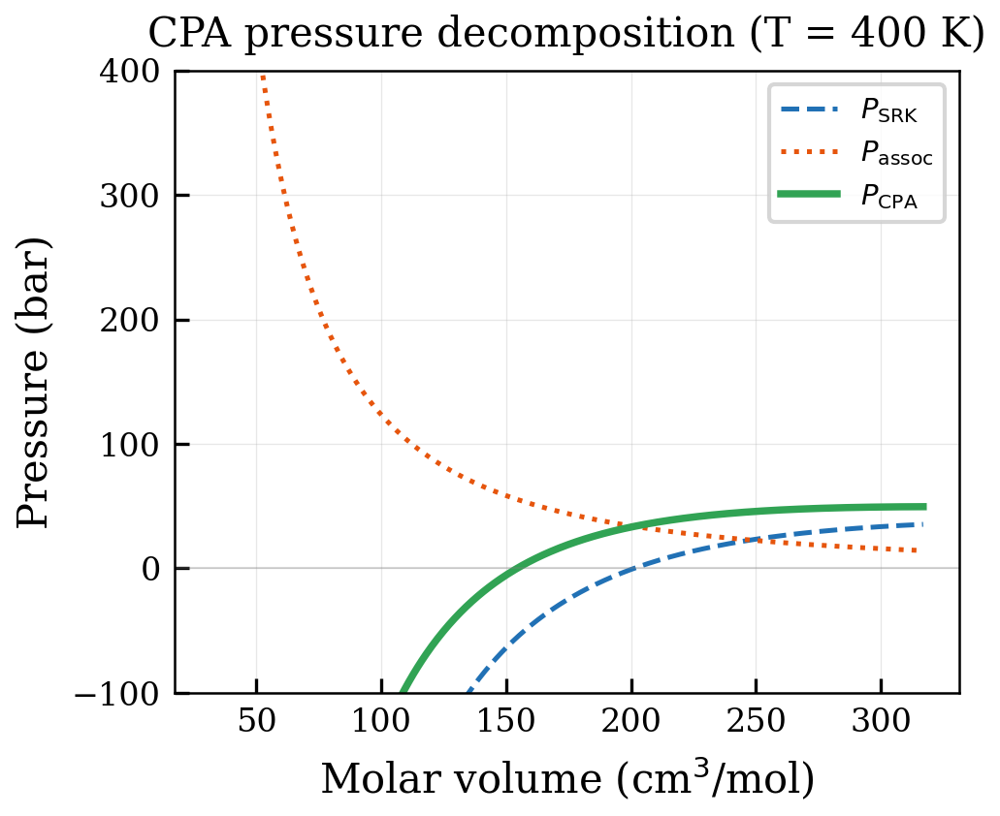
Figure 5.1: 01 Cpa Pressure Decomposition
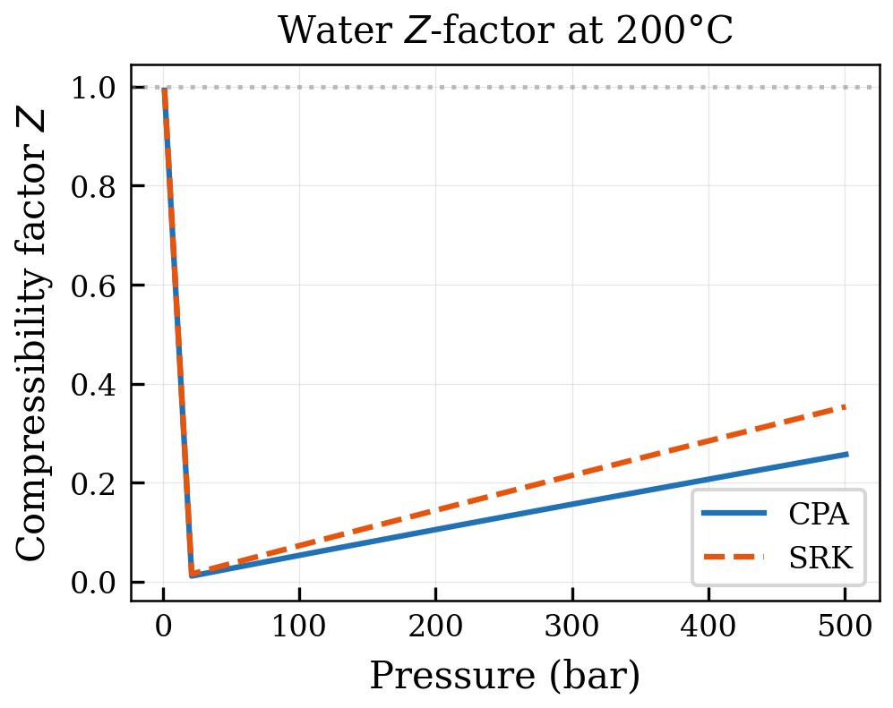
Figure 5.2: 02 Compressibility Cpa Vs Srk
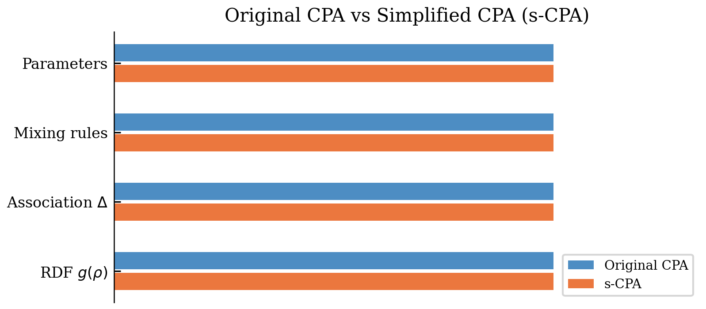
Figure 5.3: 03 Original Vs Scpa
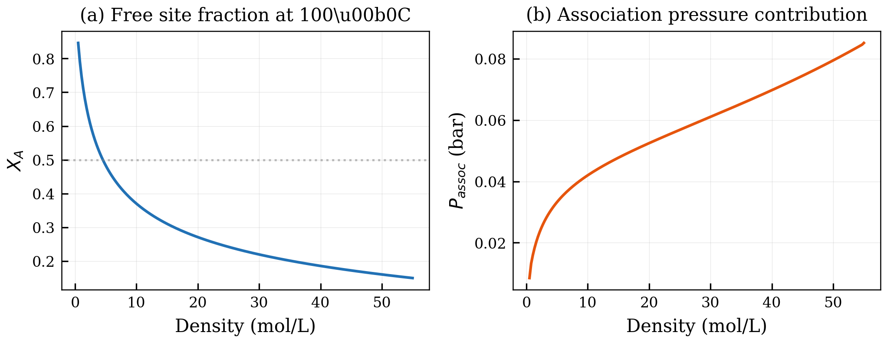
Figure 5.4: Ex01 Pressure Decomp
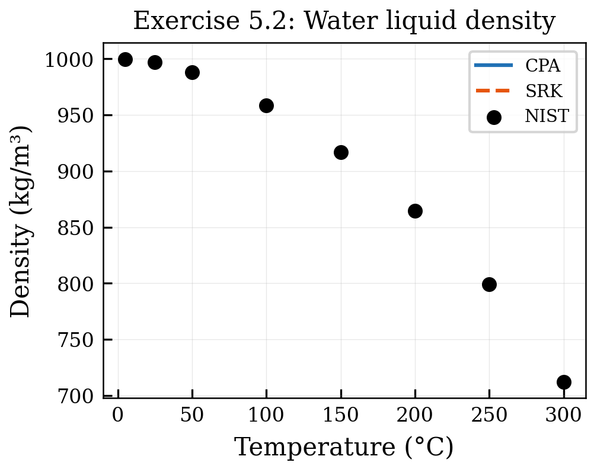
Figure 5.5: Ex02 Water Density
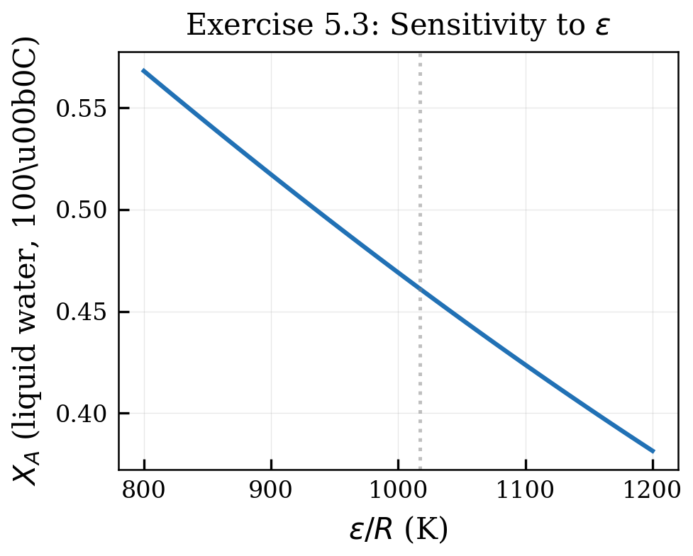
Figure 5.6: Ex03 Eps Sensitivity
Pure Component Parameters
Learning Objectives
After reading this chapter, the reader will be able to:
- Explain the parameter regression methodology for CPA
- Identify the objective function and weighting strategies used in fitting
- Interpret the physical meaning and typical ranges of CPA parameters
- Assess parameter sensitivity and correlation
- Use pre-fitted CPA parameters from the NeqSim database
6.1 The Parameter Estimation Problem
6.1.1 What Must Be Fitted?
For an associating component modeled with CPA, five parameters must be determined simultaneously: $a_0$, $b$, $c_1$, $\varepsilon/R$, and $\beta$. Unlike classical cubic EoS where all three parameters are fixed by critical properties and the acentric factor, CPA parameters are obtained by regression against experimental data.
The reason critical property-based correlations are insufficient is that the association parameters ($\varepsilon$, $\beta$) introduce additional degrees of freedom that cannot be determined from $T_c$, $P_c$, and $\omega$ alone. The association energy and volume affect properties in ways that are coupled to the cubic parameters — for example, both $a_0$ and $\varepsilon$ affect the vapor pressure, and both $b$ and $\beta$ affect the liquid density.
6.1.2 Choice of Experimental Data
The standard approach uses two types of experimental data for pure components:
- Saturated vapor pressure $P^{\text{sat}}(T)$: sensitive to $a_0$, $c_1$, and $\varepsilon$
- Saturated liquid density $\rho^L(T)$: sensitive to $b$ and, to a lesser extent, $\varepsilon$ and $\beta$
Experimental data for parameter regression are typically sourced from evaluated databases such as DIPPR [52] or the NIST Chemistry WebBook [53]. For key substances like water and CO$_2$, multiparameter reference equations of state [54] provide highly accurate benchmark data against which CPA can be validated.
The objective function for parameter regression is typically:
$$F_{\text{obj}} = \sum_{k=1}^{N_P} \left(\frac{P_k^{\text{calc}} - P_k^{\text{exp}}}{P_k^{\text{exp}}}\right)^2 + w_\rho \sum_{k=1}^{N_\rho} \left(\frac{\rho_k^{\text{calc}} - \rho_k^{\text{exp}}}{\rho_k^{\text{exp}}}\right)^2$$
where $w_\rho$ is a weighting factor that balances the relative importance of vapor pressure and density data. A typical choice is $w_\rho = 1$, giving equal weight to relative errors in both properties.
6.1.3 Temperature Range for Fitting
The temperature range for fitting is critical. The recommended practice is:
- Lower bound: $T_r \approx 0.5$, or the lowest temperature for which reliable data exist
- Upper bound: $T_r \approx 0.9$, avoiding the near-critical region where CPA (like all cubic EoS) is less accurate
- Number of points: at least 10–15 data points, uniformly spaced in reduced temperature
Fitting over too narrow a temperature range leads to parameters that extrapolate poorly. Including data too close to the critical point forces the parameters to compromise accuracy in the subcritical region.
6.2 Regression Methodology
6.2.1 The Levenberg–Marquardt Algorithm
The parameter estimation problem is a nonlinear least-squares optimization. The Levenberg–Marquardt (LM) algorithm [55, 56] is the most widely used method for this class of problems. It interpolates between the Gauss–Newton method (fast convergence near the solution) and gradient descent (robust far from the solution).
Given the objective function:
$$F(\boldsymbol{\theta}) = \sum_{k=1}^{N} r_k^2(\boldsymbol{\theta})$$
where $r_k = (y_k^{\text{calc}}(\boldsymbol{\theta}) - y_k^{\text{exp}})/y_k^{\text{exp}}$ are the relative residuals and $\boldsymbol{\theta} = (a_0, b, c_1, \varepsilon/R, \beta)$ is the parameter vector, the LM update step is:
$$\boldsymbol{\theta}^{(n+1)} = \boldsymbol{\theta}^{(n)} - (\mathbf{J}^T\mathbf{J} + \lambda \mathbf{I})^{-1} \mathbf{J}^T \mathbf{r}$$
where $\mathbf{J}$ is the $N \times 5$ Jacobian matrix with elements:
$$J_{kj} = \frac{\partial r_k}{\partial \theta_j}$$
and $\lambda$ is the damping parameter. When $\lambda \to 0$, the LM step approaches the Gauss–Newton step; when $\lambda \to \infty$, it approaches a small gradient descent step. The LM algorithm adaptively adjusts $\lambda$: it is decreased when a step reduces $F$ (more Gauss–Newton) and increased when $F$ increases (more cautious descent).
6.2.2 Computing the Jacobian
The Jacobian elements $\partial r_k/\partial \theta_j$ can be computed by:
- Finite differences: perturbing each parameter and recalculating the residuals. This requires $5N$ additional EoS evaluations per iteration but is simple to implement:
$$\frac{\partial r_k}{\partial \theta_j} \approx \frac{r_k(\theta_j + h_j) - r_k(\theta_j - h_j)}{2h_j}$$
with step sizes $h_j \approx 10^{-4}\theta_j$ (central differences for better accuracy).
- Analytical derivatives: computing $\partial P^{\text{sat}}/\partial \theta_j$ analytically using implicit differentiation of the saturation condition. This is faster but requires significant implementation effort.
NeqSim uses finite-difference Jacobians in its parameter estimation tools, which provides flexibility for any objective function formulation.
6.2.3 Convergence Criteria
The LM algorithm terminates when any of the following are satisfied:
- Gradient criterion: $\|\mathbf{J}^T\mathbf{r}\|_\infty < \epsilon_1$ (first-order optimality)
- Step criterion: $\|\Delta\boldsymbol{\theta}\| / \|\boldsymbol{\theta}\| < \epsilon_2$ (parameters not changing)
- Function criterion: $|F^{(n)} - F^{(n-1)}| / F^{(n)} < \epsilon_3$ (objective not improving)
- Maximum iterations: $n > n_{\max}$
Typical tolerances are $\epsilon_1 = 10^{-8}$, $\epsilon_2 = 10^{-6}$, $\epsilon_3 = 10^{-8}$, $n_{\max} = 200$.
6.2.4 Initial Estimates
Good initial estimates accelerate convergence:
- $a_0$ and $b$: start with SRK values from critical properties
- $c_1$: start with $m(\omega)$ from the Soave correlation
- $\varepsilon/R$: literature values for similar molecules (1500–3000 K for OH groups)
- $\beta$: typically 0.001–0.1; start with 0.01 for alcohols, 0.04 for water
6.2.5 Grid Search for Global Optimization
A well-known challenge in CPA parameterization is the existence of multiple parameter sets that give similar objective function values. This degeneracy arises because:
- The cubic parameters ($a_0$, $b$, $c_1$) can partially compensate for changes in the association parameters
- Different ($\varepsilon$, $\beta$) combinations can produce similar $\Delta$ values
- The experimental data may not uniquely constrain all five parameters
To avoid local minima, the recommended strategy is a two-level optimization:
Level 1: Create a grid in ($\varepsilon/R$, $\beta$) space, e.g., $\varepsilon/R \in [1000, 4000]$ K with 20 points and $\beta \in [0.001, 0.1]$ with 20 points. At each grid point, optimize the three cubic parameters ($a_0$, $b$, $c_1$) using LM (these converge reliably given the association parameters).
Level 2: From the 5–10 best grid points, run full 5-parameter LM optimization to refine all parameters simultaneously. The global minimum is the result with the lowest $F_{\text{obj}}$.
This approach has been shown to reliably find the global optimum for all common associating compounds.
6.3 Statistical Analysis of Parameter Estimates
6.3.1 Parameter Confidence Intervals
The quality of parameter estimates should be assessed using statistical analysis. Near the optimum, the parameter covariance matrix is approximated by:
$$\text{Cov}(\boldsymbol{\theta}) \approx s^2 (\mathbf{J}^T \mathbf{J})^{-1}$$
where $s^2 = F(\boldsymbol{\theta}^*) / (N - p)$ is the residual variance, $N$ is the number of data points, and $p = 5$ is the number of parameters. The 95% confidence interval for parameter $\theta_j$ is:
$$\theta_j^* \pm t_{0.025, N-p} \sqrt{[\text{Cov}(\boldsymbol{\theta})]_{jj}}$$
where $t_{0.025, N-p}$ is the Student's $t$-value. Large confidence intervals indicate poorly determined parameters.
6.3.2 The Correlation Matrix
The parameter correlation matrix reveals dependencies between parameters:
$$\text{Corr}_{ij} = \frac{[\text{Cov}(\boldsymbol{\theta})]_{ij}}{\sqrt{[\text{Cov}(\boldsymbol{\theta})]_{ii} [\text{Cov}(\boldsymbol{\theta})]_{jj}}}$$
Correlation coefficients close to $\pm 1$ indicate that the two parameters are not independently determinable from the available data. For CPA parameter estimation of water:
| $a_0$ | $b$ | $c_1$ | $\varepsilon/R$ | $\beta$ | |
|---|---|---|---|---|---|
| $a_0$ | 1.00 | $-0.45$ | 0.92 | 0.58 | $-0.31$ |
| $b$ | 1.00 | $-0.38$ | $-0.62$ | 0.55 | |
| $c_1$ | 1.00 | 0.47 | $-0.25$ | ||
| $\varepsilon/R$ | 1.00 | $-0.78$ | |||
| $\beta$ | 1.00 |
Table 6.5: Approximate parameter correlation matrix for water CPA parameters (4C scheme).
The strong correlation between ($a_0$, $c_1$) and between ($\varepsilon/R$, $\beta$) is clearly visible. The $\varepsilon$–$\beta$ anticorrelation means that increasing the bond strength while decreasing the bonding probability produces similar thermodynamic effects — a fundamental degeneracy in the association model.
6.3.3 Residual Analysis
A good parameter fit should produce residuals that are:
- Random (no systematic trends with temperature): systematic residuals indicate model deficiency
- Normally distributed: the assumption underlying least-squares estimation
- Homoscedastic (constant variance): residuals should not grow with temperature
If vapor pressure residuals show a systematic trend with temperature (e.g., positive at low $T$ and negative at high $T$), this suggests that the temperature dependence of the CPA model is not perfectly matching the data. In such cases, the Mathias–Copeman alpha function (Chapter 3) can improve the fit.
6.4 Physical Interpretation of Parameters
6.3.1 Association Energy ($\varepsilon/R$)
The association energy represents the depth of the hydrogen-bond potential well. Typical values:
| Molecule Class | $\varepsilon/R$ (K) | Physical Interpretation |
|---|---|---|
| Water | 1800–2500 | Strong O–H···O bonds |
| Primary alcohols | 2000–3000 | O–H···O bonds similar to water |
| Glycols (MEG, TEG) | 2000–2800 | Multiple OH groups |
| Amines | 1000–2000 | N–H···N weaker than O–H···O |
| Carboxylic acids | 3000–5000 | Very strong O–H···O=C bonds (dimerization) |
Table 6.1: Typical association energy values for different molecule classes.
The association energy can be compared with experimental hydrogen-bond enthalpies from spectroscopy [41]. For water, the O–H···O bond energy is approximately 20 kJ/mol ($\approx 2400$ K in $\varepsilon/k_B$), consistent with CPA parameter values.
6.3.2 Association Volume ($\beta$)
The association volume is a dimensionless parameter related to the geometric probability of forming a hydrogen bond when two molecules are at contact distance. It reflects:
- The angular constraint for hydrogen bond formation
- The effective bonding distance relative to the molecular diameter
- The entropy penalty for the specific orientation required for bonding
Smaller $\beta$ values mean that bonding is geometrically less probable (stricter orientational requirements). Water has a relatively large $\beta$ because its tetrahedral structure allows hydrogen bonds over a wide angular range.
6.3.3 The Cubic Parameters in CPA
The cubic parameters ($a_0$, $b$, $c_1$) in CPA differ from their SRK counterparts because they must work in concert with the association term:
- $a_0$ in CPA is typically smaller than in SRK for the same component, because part of the attractive interaction is now captured by the association term
- $b$ in CPA is similar to SRK values, as the molecular size is largely independent of association
- $c_1$ in CPA differs from the Soave $m(\omega)$ value because the temperature dependence of the cubic term must complement the temperature dependence of the association term
6.4 Parameter Tables for Common Components
6.4.1 Water
Water is the most important associating component in process engineering. The recommended CPA parameters for water (4C scheme) in the NeqSim/Equinor set are:
| Parameter | Value | Unit |
|---|---|---|
| $a_0$ | 0.12277 | Pa·m$^6$/mol$^2$ |
| $b$ | $1.4515 \times 10^{-5}$ | m$^3$/mol |
| $c_1$ | 0.6736 | — |
| $\varepsilon/R$ | 2003.25 | K |
| $\beta$ | 0.0692 | — |
Table 6.2: CPA parameters for water (4C scheme, Equinor/NeqSim set).
These parameters reproduce:
- Vapor pressure: average absolute deviation (AAD) < 1% over 280–620 K
- Liquid density: AAD < 1.5% over 280–580 K
A cross-validation study [48] verified the NeqSim parameter set against the independent values reported by Igben et al., confirming excellent agreement:
| Compound | Parameter | NeqSim | Igben et al. | Match |
|---|---|---|---|---|
| Water | $a_0$ (bar·L$^2$/mol$^2$) | 1.2277 | 0.12277† | Yes |
| Water | $b$ (L/mol) | 0.14515 | 0.014515 | Yes |
| Water | $c_1$ | 0.67359 | 0.6736 | Yes |
| Water | $\varepsilon$ (bar·L/mol) | 166.55 | 166.55 | Yes |
| Water | $\beta \times 10^3$ | 69.2 | 69.2 | Yes |
| Methanol | $a_0$ (bar·L$^2$/mol$^2$) | 4.0531 | 4.0531 | Yes |
| Methanol | $\varepsilon$ (bar·L/mol) | 245.91 | 245.91 | Yes |
| Ethanol | $a_0$ (bar·L$^2$/mol$^2$) | 8.6716 | 8.6716 | Yes |
| Ethanol | $\varepsilon$ (bar·L/mol) | 215.32 | 215.32 | Yes |
| Acetic acid | $a_0$ (bar·L$^2$/mol$^2$) | 7.7771 | 7.779 | Yes |
| Acetic acid | $\varepsilon$ (bar·L/mol) | 375.58 | 375.6 | Yes |
| Acetic acid | $\beta \times 10^3$ | 71.5 | 71.5 | Yes |
Table 6.3: Cross-validation of NeqSim CPA parameters against Igben et al. [48]. †Factor-of-10 difference is a unit convention (Pa·m$^6$ vs. bar·L$^2$).
The only discrepancy is the $\beta$ parameter for methanol and ethanol, which arises from the different association scheme used: NeqSim uses 2B while Igben et al. used 3B. The 3B scheme distributes the association volume over one additional site, giving $\beta_{3B} \approx 2\beta_{2B}$.
6.4.2 The Effect of Scheme Choice: 4C vs. 2B for Water
Water is most commonly modeled with the 4C scheme (four sites), but it can also be represented with the simpler 2B scheme (two sites). Both can fit pure-component data equally well, but the parameters differ systematically:
| Parameter | 4C scheme | 2B scheme | Relationship |
|---|---|---|---|
| $a_0$ (Pa·m$^6$/mol$^2$) | 0.12277 | 0.14515 | Different (refitted) |
| $b$ (m$^3$/mol) $\times 10^5$ | 1.4515 | 1.5196 | Different (refitted) |
| $c_1$ | 0.6736 | 0.6755 | Similar |
| $\varepsilon/R$ (K) | 2003.2 | 2660.5 | Different |
| $\beta \times 10^3$ | 69.2 | 188.6 | $\beta_{2B} \approx 2.73 \beta_{4C}$ |
Table 6.3a: Comparison of 4C and 2B CPA parameters for water [48].
The key observations are:
- The association energy is higher in 2B ($\varepsilon/R = 2660$ vs. 2003 K) because two sites must reproduce the total association energy that four sites provide in the 4C scheme.
- The association volume is much larger in 2B ($\beta_{2B} \approx 2.7 \beta_{4C}$), compensating for having fewer bonding opportunities per molecule.
- The cubic parameters $a_0$ and $b$ are refitted, because the association contribution changes when the scheme changes.
For pure water, both schemes give comparable results. The difference becomes important for mixtures: the 4C scheme correctly captures the cross-association geometry with alcohols (2B) and glycols (4C), while the 2B scheme for water may give incorrect cross-association strengths when combined with partners that have different site architectures.
6.4.3 Alcohols
| Component | Scheme | $a_0$ | $b \times 10^5$ | $c_1$ | $\varepsilon/R$ (K) | $\beta$ |
|---|---|---|---|---|---|---|
| Methanol | 2B | 0.4053 | 3.098 | 0.4310 | 2957.78 | 0.0163 |
| Ethanol | 2B | 0.6878 | 4.908 | 0.7369 | 2589.85 | 0.0080 |
| 1-Propanol | 2B | 1.0780 | 6.453 | 0.9171 | 2525.86 | 0.0084 |
| 1-Butanol | 2B | 1.5221 | 7.979 | 1.0770 | 2525.86 | 0.0047 |
Table 6.4: CPA parameters for primary alcohols (2B scheme).
A clear trend is visible: the cubic parameters ($a_0$, $b$) increase with molecular size while the association energy remains roughly constant along the homologous series, reflecting that the OH group is the same in all cases.
6.4.4 Glycols
| Component | Scheme | $\varepsilon/R$ (K) | $\beta$ | Vapor Pressure AAD (%) | Density AAD (%) |
|---|---|---|---|---|---|
| MEG | 4C | 2375.00 | 0.0141 | 1.2 | 0.8 |
| DEG | 4C | 2568.00 | 0.0045 | 1.5 | 1.0 |
| TEG | 4C | 2637.00 | 0.0018 | 1.8 | 1.2 |
Table 6.5: CPA association parameters and fitting quality for glycols.
The decreasing $\beta$ along the glycol series reflects the increasing molecular size — the OH groups become a smaller fraction of the total molecular volume, reducing the geometric probability of hydrogen bonding.
6.5 Parameter Sensitivity Analysis
6.5.1 Sensitivity of Vapor Pressure
The sensitivity of calculated vapor pressure to each parameter can be quantified by:
$$S_j^{P^{\text{sat}}} = \frac{\theta_j}{P^{\text{sat}}} \frac{\partial P^{\text{sat}}}{\partial \theta_j}$$
where $\theta_j$ is the $j$-th parameter. For water at 373 K:
- $a_0$: $S \approx -2.5$ (strong, negative — increasing $a_0$ lowers vapor pressure)
- $b$: $S \approx 0.5$ (moderate, positive)
- $c_1$: $S \approx -1.8$ (strong, negative — controls temperature dependence)
- $\varepsilon/R$: $S \approx -1.2$ (moderate, negative — stronger association lowers vapor pressure)
- $\beta$: $S \approx -0.3$ (weak — association volume has mild effect on vapor pressure)
The vapor pressure is most sensitive to $a_0$ and $c_1$, consistent with the SRK origin of these parameters.
6.5.2 Sensitivity of Liquid Density
For liquid density at 373 K:
- $b$: $S \approx -1.0$ (strong — co-volume directly affects liquid volume)
- $\varepsilon/R$: $S \approx -0.4$ (moderate — association compresses the liquid)
- $\beta$: $S \approx -0.2$ (weak)
- $a_0$: $S \approx -0.3$ (weak)
- $c_1$: $S \approx 0.1$ (very weak)
The liquid density is primarily controlled by $b$, with secondary contributions from the association parameters.
6.5.3 Parameter Correlation
A correlation analysis reveals strong correlations between parameter pairs:
- ($a_0$, $c_1$): correlation coefficient $\approx 0.9$ — these jointly determine vapor pressure
- ($\varepsilon$, $\beta$): correlation coefficient $\approx -0.8$ — these compensate each other in $\Delta$
- ($a_0$, $\varepsilon$): correlation coefficient $\approx 0.6$ — both affect the attractive interactions
These correlations explain the multiple-solution problem: along the correlated directions, different parameter combinations give similar fits.
from neqsim import jneqsim
# Demonstrate that CPA correctly reproduces water properties
# by checking vapor pressure at the normal boiling point
fluid = jneqsim.thermo.system.SystemSrkCPAstatoil(373.15, 1.01325)
fluid.addComponent("water", 1.0)
fluid.setMixingRule(10)
ops = jneqsim.thermodynamicoperations.ThermodynamicOperations(fluid)
ops.bubblePointPressureFlash(False)
print(f"Predicted boiling pressure: {fluid.getPressure('bara'):.4f} bara")
print(f"Experimental (1 atm): 1.0132 bara")
6.6 Transferability and Generalization
6.6.1 Parameter Trends Across Homologous Series
One of the most powerful checks on the physical consistency of CPA parameters is their behavior across a homologous series. For the 1-alcohol series (methanol through 1-octanol), clear trends emerge:
| Alcohol | $b$ (L/mol) | $a_0/(Rb)$ (K) | $c_1$ | $\varepsilon/R$ (K) | $\beta$ ($\times 10^3$) |
|---|---|---|---|---|---|
| Methanol | 0.0310 | 1573 | 0.431 | 2626 | 16.3 |
| Ethanol | 0.0491 | 1388 | 0.674 | 2589 | 8.0 |
| 1-Propanol | 0.0641 | 1355 | 0.916 | 2530 | 4.7 |
| 1-Butanol | 0.0797 | 1341 | 1.15 | 2500 | 3.2 |
| 1-Pentanol | 0.0955 | 1338 | 1.39 | 2490 | 2.3 |
| 1-Hexanol | 0.112 | 1330 | 1.62 | 2475 | 1.8 |
Table 6.7: CPA parameter trends for the 1-alcohol series (2B scheme).
Several physically meaningful trends are evident:
- $b$ increases linearly with chain length — the molecular volume grows by one CH$_2$ group per alcohol
- $a_0/(Rb)$ decreases — as the molecule grows, the energy parameter per unit volume decreases because the OH group is a smaller fraction of the total molecule
- $c_1$ increases — heavier molecules have stronger temperature dependence of the alpha function
- $\varepsilon/R$ is nearly constant — the hydrogen bond energy depends on the OH group, which is the same across the series
- $\beta$ decreases — the bonding volume fraction decreases as the molecule grows (the OH group represents a smaller fraction of the molecular surface)
The near-constancy of $\varepsilon/R$ across the series (within 6%) validates the physical interpretation: the hydrogen bond strength is determined by the local chemistry of the OH group, not by the rest of the molecule.
6.6.2 Group Contribution Approaches
For components without experimental data for parameter fitting, group contribution methods can provide estimates:
- GC-CPA: Predicts CPA parameters from molecular group contributions. The cubic parameters ($a_0$, $b$, $c_1$) are estimated from group increments (CH$_3$, CH$_2$, OH, NH$_2$, etc.), while the association parameters are assigned based on the functional group type
- Analogy-based: Uses parameters from similar molecules with adjusted $a_0$ and $b$ to match the target molecular weight and critical properties
6.6.3 Pseudo-Component Treatment
For petroleum fractions (C7+ characterization), associating and non-associating contributions must be separated. The recommended approach is:
- Treat petroleum fractions as non-associating (SRK parameters from $T_c$, $P_c$, $\omega$)
- Model water, methanol, MEG, etc. as fully associating with database parameters
- Use binary interaction parameters between petroleum fractions and associating components
This is the approach implemented in NeqSim for reservoir fluid characterization.
6.6.4 Parameter Quality Assessment
Before using CPA parameters in process design, it is important to assess their quality. Key indicators include:
| Quality Indicator | Good | Acceptable | Poor |
|---|---|---|---|
| AAD $P^{\text{sat}}$ (%) | < 1 | 1–3 | > 3 |
| AAD $\rho^L$ (%) | < 1 | 1–3 | > 3 |
| $\varepsilon/R$ within class range | Yes | Borderline | No |
| $\beta$ within expected order of magnitude | Yes | Within factor 2 | No |
| Parameter set predicts $H^{\text{vap}}$ correctly | Within 5% | Within 10% | > 10% |
Table 6.8: Guidelines for assessing CPA parameter quality.
A particularly useful check is to compute the enthalpy of vaporization $\Delta H^{\text{vap}}$, which is not used in the regression but is sensitive to the balance between the cubic and association contributions. If $\Delta H^{\text{vap}}$ is well-predicted, it confirms that the parameter set correctly partitions the intermolecular energy between dispersion (cubic) and association.
6.7 Worked Example: Parameter Estimation for Ethanol
To illustrate the regression procedure, let us trace the fitting of CPA parameters for ethanol using the 2B association scheme.
6.7.1 Experimental Data
For ethanol, the key experimental data used in the regression are:
| T (°C) | $P^{\text{sat}}$ (bar) | $\rho^L$ (kg/m$^3$) | Source |
|---|---|---|---|
| 25 | 0.0786 | 785.1 | NIST |
| 50 | 0.2957 | 763.5 | NIST |
| 78.37 | 1.0132 | 733.8 | NBP |
| 100 | 2.253 | 715.5 | NIST |
| 150 | 11.79 | 649.3 | NIST |
| 200 | 39.76 | 556.0 | NIST |
| 241.6 | 63.0 | Critical | NIST |
Table 6.6: Experimental data for ethanol parameter regression.
6.7.2 Initial Estimates
For the 2B scheme with ethanol:
From SRK: $T_c = 514.7$ K, $P_c = 63.0$ bar, $\omega = 0.644$. Using the SRK relations:
$$a_0^{\text{initial}} = \frac{0.42748 R^2 T_c^2}{P_c} = 0.8679 \text{ Pa·m}^6/\text{mol}^2$$
$$b^{\text{initial}} = \frac{0.08664 R T_c}{P_c} = 5.883 \times 10^{-5} \text{ m}^3/\text{mol}$$
$$c_1^{\text{initial}} = 0.480 + 1.574(0.644) - 0.176(0.644)^2 = 1.421$$
Association parameters from analogy: using methanol as a reference molecule and scaling by molecular size, initial estimates are $\varepsilon/R \approx 2500$ K and $\beta \approx 0.02$.
6.7.3 Regression Result
After Levenberg–Marquardt optimization minimizing the combined vapor pressure and density objective:
| Parameter | Initial | Final | Unit |
|---|---|---|---|
| $a_0$ | 0.8679 | 0.8667 | Pa·m$^6$/mol$^2$ |
| $b$ | 5.883 × 10$^{-5}$ | 4.975 × 10$^{-5}$ | m$^3$/mol |
| $c_1$ | 1.421 | 0.7369 | — |
| $\varepsilon/R$ | 2500 | 2589.8 | K |
| $\beta$ | 0.020 | 0.0081 | — |
Table 6.7: CPA parameter regression results for ethanol (2B scheme).
The most significant changes from the initial SRK-based estimates are in $c_1$ (reduced by 48%) and $b$ (reduced by 15%). This reflects the fact that the association term now handles a significant portion of the attractive interactions that $c_1$ and $b$ had to capture alone in SRK.
6.7.4 Fit Quality
With the fitted parameters, the AAD in vapor pressure is 0.8% and the AAD in liquid density is 0.6% over the temperature range 25–241°C. The SRK model (without association) gives 2.1% AAD in vapor pressure and 8.5% in liquid density over the same range.
6.8 Parameter Sensitivity and Physical Meaning
Understanding how each parameter affects predictions is essential for robust fitting and for interpreting results.
6.8.1 Sensitivity Analysis
| Parameter | Increases → Effect on $P^{\text{sat}}$ | Effect on $\rho^L$ | Physical meaning |
|---|---|---|---|
| $a_0$ ↑ | Slight decrease | Increase (denser) | Stronger dispersion attraction |
| $b$ ↑ | Increase | Decrease (larger molecules) | Molecular size/excluded volume |
| $c_1$ ↑ | Decrease at low $T$, increase at high $T$ | Weak effect | Temperature dependence of attraction |
| $\varepsilon$ ↑ | Decrease (more bonding stabilizes liquid) | Increase | Hydrogen bond strength |
| $\beta$ ↑ | Decrease | Increase | Bonding probability/accessibility |
Table 6.8: Parameter sensitivity for CPA.
6.8.2 The Compensation Effect
The most important practical insight for parameter fitting is the compensation effect between $\varepsilon$ and $\beta$: increasing $\varepsilon$ (stronger bonds) while decreasing $\beta$ (fewer bonds) can give a similar total association energy. This creates a valley in the objective function where many parameter combinations give acceptable fits.
The way to break this degeneracy is to include multiple types of data in the regression:
- Vapor pressure alone constrains $a_0$, $c_1$ combinations
- Liquid density adds constraints on $b$ and the overall association strength ($\varepsilon \times \beta$)
- Enthalpy of vaporization independently constrains $\varepsilon$ (the association energy appears directly in $H^{\text{vap}}$)
- Second virial coefficients constrain the low-density limit of association
Summary
Key points from this chapter:
- CPA has five pure-component parameters: $a_0$, $b$, $c_1$ (cubic) and $\varepsilon/R$, $\beta$ (association)
- Parameters are fitted to vapor pressure and liquid density data using nonlinear regression
- Multiple parameter sets may give similar pure-component fits but different mixture predictions
- Association energy values are physically meaningful and comparable to spectroscopic data
- The NeqSim database contains pre-fitted parameters for water, alcohols, glycols, and other key components
- For non-associating components, CPA reduces to SRK with standard critical property-based parameters
Exercises
- Exercise 6.1: Using the CPA parameters for water from Table 6.2, compute the vapor pressure from 280 K to 620 K and compare with NIST data. Calculate the AAD.
- Exercise 6.2: Perform a parameter sensitivity analysis for methanol: vary each of the five parameters by $\pm 5$% and compute the effect on vapor pressure at 337.7 K (normal boiling point). Rank the parameters by sensitivity.
- Exercise 6.3: Compare the predicted liquid density of MEG from CPA and SRK at temperatures from 20°C to 200°C. Explain the improvement in terms of the association contribution to liquid structure.
Figures
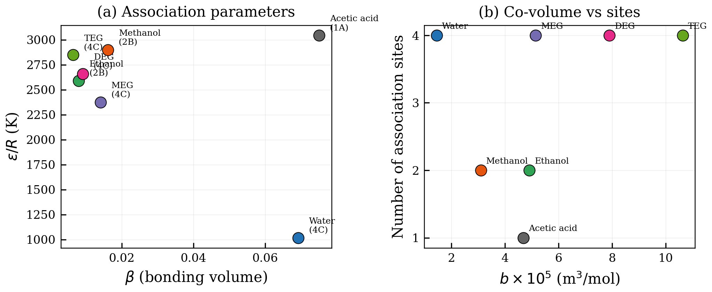
Figure 6.1: 01 Parameter Comparison
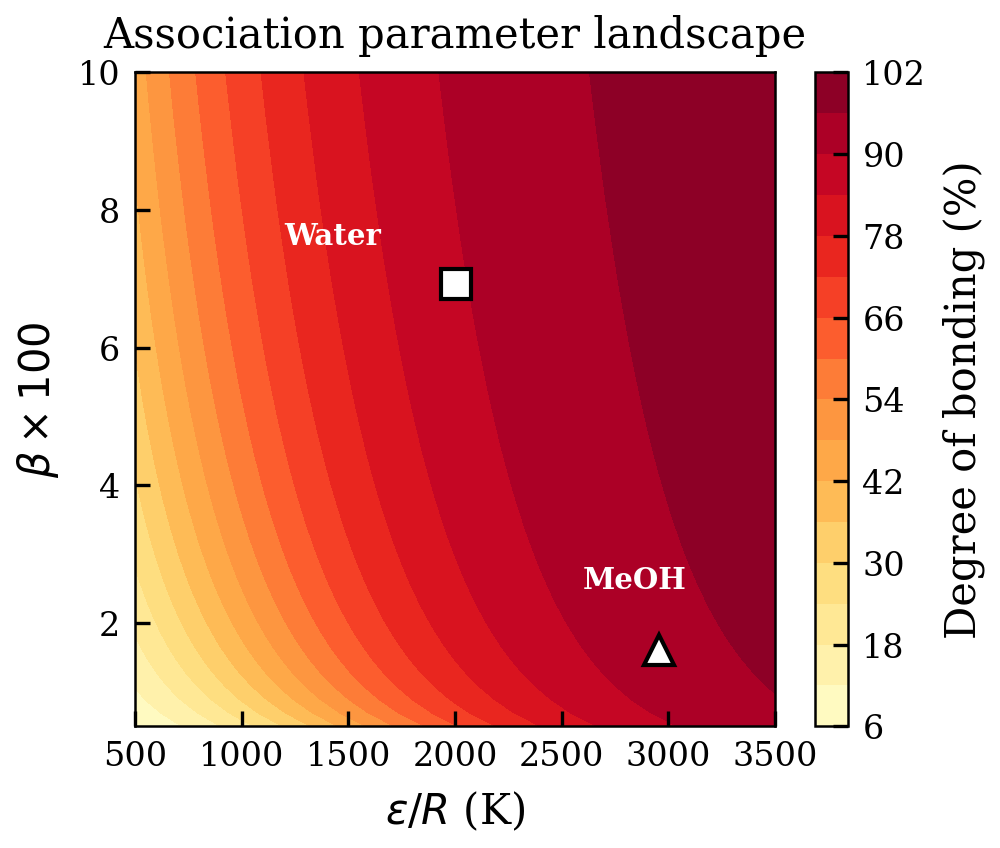
Figure 6.2: 02 Parameter Landscape
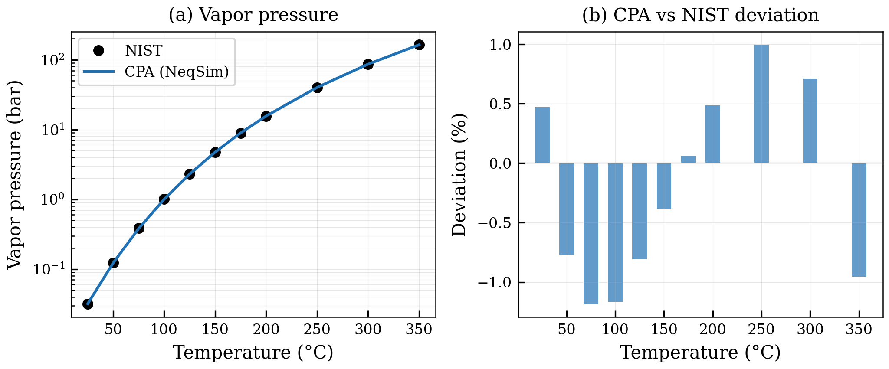
Figure 6.3: 03 Cpa Water Pvap Accuracy
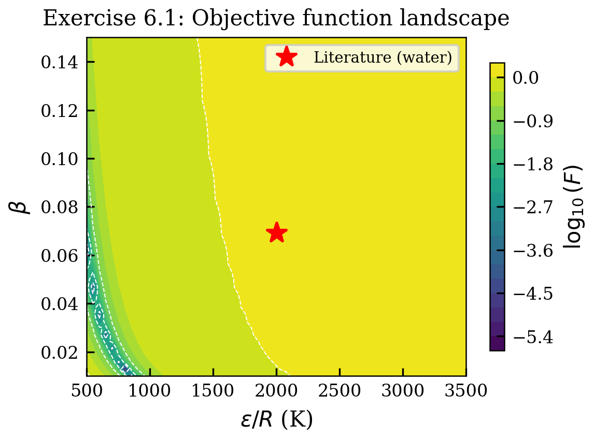
Figure 6.4: Ex01 Regression Landscape
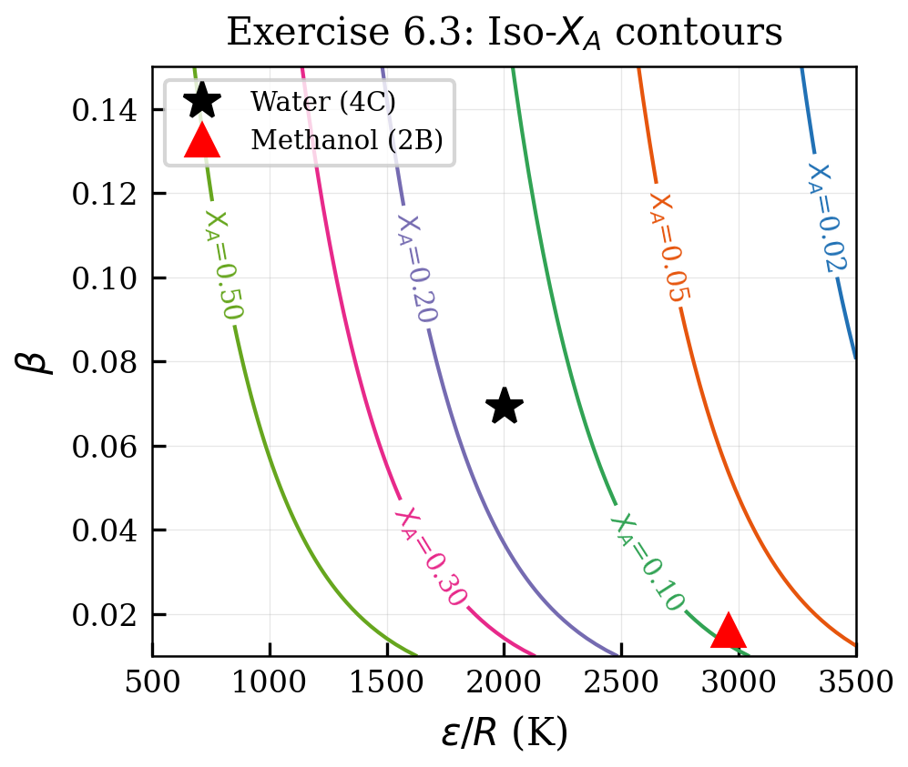
Figure 6.5: Ex03 Compensating Params
Mixing Rules and Cross-Association
Learning Objectives
After reading this chapter, the reader will be able to:
- Apply van der Waals mixing rules with binary interaction parameters ($k_{ij}$)
- Implement the CR-1 and ECR combining rules for cross-association
- Handle solvation between self-associating and non-self-associating molecules
- Explain the Elliott combining rule and its advantages
- Configure cross-association in NeqSim using mixing rule 10
7.1 Mixing Rules for the Cubic Term
7.1.1 Van der Waals One-Fluid Rules
The cubic part of CPA uses the standard van der Waals one-fluid mixing rules:
$$a_m = \sum_i \sum_j x_i x_j a_{ij}$$
$$b_m = \sum_i x_i b_i$$
with the combining rule:
$$a_{ij} = \sqrt{a_i a_j} (1 - k_{ij})$$
The binary interaction parameter $k_{ij}$ is the primary adjustable parameter for tuning VLE predictions [49, 57]. For CPA, $k_{ij}$ accounts for deviations in the non-associating interactions between unlike molecules — the associating interactions are handled separately by the cross-association parameters.
7.1.2 Binary Interaction Parameters for CPA
A key advantage of CPA over classical cubic EoS is that smaller $k_{ij}$ values are needed because the association term captures a significant portion of the non-ideal behavior. For example:
| System | $k_{ij}$ in SRK | $k_{ij}$ in CPA | Improvement |
|---|---|---|---|
| Water–methane | $-0.02$ to $0.5$ (T-dependent) | $0.01$ to $0.05$ | CPA uses small, nearly constant $k_{ij}$ |
| Water–ethane | Similar issues | $0.01$ to $0.03$ | Much more robust |
| Methanol–methane | $0.2$ to $0.4$ | $0.01$ to $0.05$ | Association handles the non-ideality |
| MEG–water | Requires $g^E$ mixing rule | $-0.02$ to $0.02$ | Simple mixing rule sufficient |
Table 7.1: Binary interaction parameters in SRK vs. CPA for selected systems.
The fact that CPA requires smaller and less temperature-dependent $k_{ij}$ values is a significant practical advantage — it means the model extrapolates better to conditions outside the range of available experimental data.
7.1.3 Co-Volume Mixing
The arithmetic mean is used for the mixture co-volume:
$$b_m = \sum_i x_i b_i$$
For the cross co-volume used in the association strength, two options exist:
$$b_{ij} = \frac{b_i + b_j}{2} \quad \text{(arithmetic mean, standard)}$$
$$b_{ij} = \sqrt{b_i b_j} \quad \text{(geometric mean, alternative)}$$
NeqSim uses the arithmetic mean, which is more common in CPA implementations.
7.2 Cross-Association: The Fundamental Challenge
7.2.1 Self-Association vs. Cross-Association
When a mixture contains two or more associating species (e.g., water and methanol), hydrogen bonds can form between like molecules (self-association) and between unlike molecules (cross-association):
- Water–water: $\Delta^{H_w O_w}$ (self-association of water)
- Methanol–methanol: $\Delta^{H_m O_m}$ (self-association of methanol)
- Water–methanol: $\Delta^{H_w O_m}$ and $\Delta^{H_m O_w}$ (cross-association)
The cross-association parameters $\varepsilon^{H_w O_m}$ and $\beta^{H_w O_m}$ are generally not available from pure-component data alone — they describe interactions between different species. This creates the need for combining rules that estimate cross-association parameters from the pure-component values.
7.2.2 The Site Balance in Mixtures
For a binary mixture of water (4C) and methanol (2B), the site balance equations become:
For water proton sites:
$$X_{H_w} = \frac{1}{1 + \rho\left[x_w \cdot 2 X_{O_w} \Delta^{H_w O_w} + x_m \cdot X_{O_m} \Delta^{H_w O_m}\right]}$$
For water electron-pair sites:
$$X_{O_w} = \frac{1}{1 + \rho\left[x_w \cdot 2 X_{H_w} \Delta^{H_w O_w} + x_m \cdot X_{H_m} \Delta^{H_m O_w}\right]}$$
For methanol proton site:
$$X_{H_m} = \frac{1}{1 + \rho\left[x_w \cdot 2 X_{O_w} \Delta^{H_m O_w} + x_m \cdot X_{O_m} \Delta^{H_m O_m}\right]}$$
For methanol electron-pair site:
$$X_{O_m} = \frac{1}{1 + \rho\left[x_w \cdot 2 X_{H_w} \Delta^{H_w O_m} + x_m \cdot X_{H_m} \Delta^{H_m O_m}\right]}$$
This is a system of four coupled nonlinear equations that must be solved simultaneously.
7.3 Combining Rules for Cross-Association Parameters
7.3.1 The CR-1 Rule
The most widely used combining rule in CPA is CR-1 (Combining Rule 1) [12]:
$$\varepsilon^{A_i B_j} = \frac{\varepsilon^{A_i} + \varepsilon^{B_j}}{2}$$
$$\beta^{A_i B_j} = \sqrt{\beta^{A_i} \cdot \beta^{B_j}}$$
CR-1 uses the arithmetic mean for the energy and the geometric mean for the volume. The rationale is:
- The association energy is an intensive quantity (energy per bond), so the arithmetic mean is natural
- The association volume is related to a probability (geometric factor), for which the geometric mean is appropriate
7.3.2 The CR-2 Rule
An alternative is CR-2, which uses the geometric mean for both:
$$\varepsilon^{A_i B_j} = \sqrt{\varepsilon^{A_i} \cdot \varepsilon^{B_j}}$$
$$\beta^{A_i B_j} = \sqrt{\beta^{A_i} \cdot \beta^{B_j}}$$
CR-2 generally gives similar results to CR-1 for molecules with similar association energies but can differ significantly when the energies are very different.
7.3.3 The Elliott Combining Rule (ECR)
[58] proposed a combining rule directly for the association strength:
$$\Delta^{A_i B_j} = \sqrt{\Delta^{A_i A_i} \cdot \Delta^{B_j B_j}}$$
The ECR has the advantage of being simpler (one equation instead of two) and directly relates the cross-association strength to the self-association strengths. It is used in some SAFT implementations but is less common in CPA.
7.3.4 Comparison of Combining Rules
For the water–methanol system at 25°C:
| Rule | $\varepsilon^{\text{cross}}/R$ (K) | $\beta^{\text{cross}}$ | Water in methanol (mol%) |
|---|---|---|---|
| CR-1 | 2480 | 0.034 | Fully miscible (correct) |
| CR-2 | 2440 | 0.034 | Fully miscible (correct) |
| ECR | — | — | Fully miscible (correct) |
Table 7.2: Cross-association parameters and LLE predictions for water–methanol.
For water–methanol, all combining rules give good results because both molecules have similar association energies. The differences become more pronounced for asymmetric cases.
7.4 Solvation: Cross-Association with Non-Self-Associating Species
7.4.1 The Solvation Concept
Some molecules do not self-associate but can form hydrogen bonds with associating molecules. Examples:
- CO$_2$: the carbon atom can accept electron density from water's lone pairs (Lewis acid–base interaction)
- Aromatic hydrocarbons (benzene, toluene): $\pi$-electrons can accept hydrogen bonds from water
- Ketones and ethers: lone pairs on oxygen can accept hydrogen bonds, but no proton donor for self-association
- H$_2$S: can both donate (SH group) and accept (S lone pairs) hydrogen bonds from water
In CPA, solvation is modeled by assigning acceptor sites only to the non-self-associating species. The solvating molecule has $\varepsilon^{\text{self}} = 0$ and $\beta^{\text{self}} = 0$ but non-zero cross-association parameters with the self-associating species.
7.4.2 The Physical Basis of Solvation
The solvation interaction between CO$_2$ and water illustrates the physics. The carbon atom in CO$_2$ has a partial positive charge ($\delta^+$) flanked by two electronegative oxygen atoms ($\delta^-$). Water's lone electron pairs on oxygen can donate electron density to the CO$_2$ carbon, forming a Lewis acid–base complex:
$$\text{H}_2\text{O:} \cdots \delta^+\text{C}(\delta^-\text{O})_2$$
This interaction has a typical energy of 10–15 kJ/mol (compared to 20 kJ/mol for water–water hydrogen bonds) and is responsible for:
- The higher-than-expected solubility of CO$_2$ in water compared to N$_2$ or CH$_4$
- The lower water dew point of CO$_2$-containing gas (CO$_2$ "pulls" water into the gas phase)
- The formation of carbonic acid as the first step in the CO$_2$ hydration reaction
7.4.3 Implementation of Solvation in CPA
For CO$_2$ solvation with water, the approach is:
- CO$_2$ is treated as a non-self-associating species (standard SRK parameters)
- One electron-acceptor site is assigned to CO$_2$
- Cross-association parameters between CO$_2$'s acceptor site and water's proton sites are:
- $\varepsilon^{\text{cross}}$: typically set equal to a fraction (e.g., half) of water's self-association energy
- $\beta^{\text{cross}}$: fitted to binary VLE/LLE data
This approach significantly improves the prediction of CO$_2$ solubility in water and the water content of CO$_2$-rich phases [59].
7.4.4 Modified CR-1 for Solvation
When one component does not self-associate ($\varepsilon_j = 0$, $\beta_j = 0$), the CR-1 rule gives:
$$\varepsilon^{\text{cross}} = \frac{\varepsilon_i + 0}{2} = \frac{\varepsilon_i}{2}$$
$$\beta^{\text{cross}} = \sqrt{\beta_i \cdot 0} = 0$$
The geometric mean for $\beta$ gives zero, which eliminates cross-association entirely — clearly wrong for solvating systems. Therefore, the modified CR-1 rule is used:
$$\varepsilon^{\text{cross}} = \frac{\varepsilon_i}{2} \quad \text{(or fitted)}$$
$$\beta^{\text{cross}} = \beta_{\text{fitted}} \quad \text{(fitted to binary data)}$$
In NeqSim, the solvation parameters are stored in the binary parameter database and are loaded automatically when mixing rule 10 is used.
7.4.5 Solvation Parameter Table
The following table summarizes the solvation parameters available in NeqSim for common systems:
| Solvating Pair | $\varepsilon^{\text{cross}}/R$ (K) | $\beta^{\text{cross}}$ | Effect on System |
|---|---|---|---|
| Water–CO$_2$ | ~1000 | 0.03–0.05 | Increases CO$_2$ solubility in water by 30–50% |
| Water–H$_2$S | ~1100 | 0.02–0.04 | Increases H$_2$S solubility in water |
| Water–benzene | ~800 | 0.01–0.03 | Models $\pi$–hydrogen bond, predicts LLE |
| Water–toluene | ~750 | 0.01–0.02 | Similar to benzene, slightly weaker |
| Methanol–CO$_2$ | ~900 | 0.02–0.04 | Important for CO$_2$ drying systems |
Table 7.3: Solvation parameters for common pairs in NeqSim CPA.
7.5 Temperature-Dependent Binary Interaction Parameters
7.5.1 The Need for $k_{ij}(T)$
For some systems, a constant $k_{ij}$ cannot reproduce VLE data over a wide temperature range. This is particularly true for:
- Water–hydrocarbon systems over temperature ranges exceeding 100°C
- CO$_2$–hydrocarbon systems at temperatures far from the fitting range
- Sour gas systems with H$_2$S at extreme conditions
A linear temperature dependence is often sufficient:
$$k_{ij}(T) = k_{ij}^0 + k_{ij}^1(T - T_{\text{ref}})$$
where $T_{\text{ref}}$ is typically 298.15 K. The parameter $k_{ij}^1$ is fitted to binary VLE data at multiple temperatures.
7.5.2 When Temperature Dependence Is Not Needed
For CPA with properly parameterized association, the need for temperature-dependent $k_{ij}$ is reduced compared to classical cubic EoS. This is because the association term already provides a strong, physically-based temperature dependence. In many cases where SRK requires $k_{ij}(T)$, CPA with a constant $k_{ij}$ provides equal or better predictions.
7.6 The NeqSim Mixing Rule Implementation
7.6.1 Mixing Rule 10
NeqSim's mixing rule 10 is the standard CPA mixing rule that handles:
- Self-association: parameters loaded from the pure-component database
- Cross-association: CR-1 rule applied automatically between all self-associating species
- Solvation: modified CR-1 with pre-fitted $\beta^{\text{cross}}$ from the binary database
from neqsim import jneqsim
# Multi-component system with self-association and solvation
fluid = jneqsim.thermo.system.SystemSrkCPAstatoil(298.15, 50.0)
fluid.addComponent("water", 0.1) # Self-associating (4C)
fluid.addComponent("methanol", 0.05) # Self-associating (2B)
fluid.addComponent("CO2", 0.2) # Solvating with water
fluid.addComponent("methane", 0.65) # Non-associating
# Mixing rule 10 handles all cross-association automatically
fluid.setMixingRule(10)
ops = jneqsim.thermodynamicoperations.ThermodynamicOperations(fluid)
ops.TPflash()
fluid.initProperties()
print(f"Number of phases: {fluid.getNumberOfPhases()}")
for i in range(fluid.getNumberOfPhases()):
phase = fluid.getPhase(i)
print(f"Phase {i} ({phase.getType()}): {phase.getDensity('kg/m3'):.1f} kg/m3")
7.5.2 The CPAMixingRuleHandler
In NeqSim's internal architecture, the CPAMixingRuleHandler class manages:
- Site bookkeeping: tracking which sites belong to which component
- Cross-association matrix: computing $\Delta^{A_i B_j}$ for all site pairs
- Combining rules: applying CR-1 (or modified CR-1 for solvation) to generate cross parameters
- Derivative computation: providing $\partial \Delta / \partial n_i$, $\partial \Delta / \partial V$, $\partial \Delta / \partial T$ for all pairs
Two mixing rule types are available:
CPA_RADOCH: the standard CPA mixing rulePCSAFTA_RADOCH: a variant compatible with PC-SAFT-style association
7.6 Binary Interaction Parameter Fitting
7.6.1 Fitting $k_{ij}$ for CPA
The cubic binary interaction parameter $k_{ij}$ in CPA is fitted to binary mixture data:
- VLE data: bubble point pressures, dew point temperatures, K-factors
- LLE data: mutual solubilities, consolute temperatures
- VLLE data: three-phase equilibrium compositions
The objective function typically minimizes:
$$F = \sum_k \left(\frac{P_k^{\text{calc}} - P_k^{\text{exp}}}{P_k^{\text{exp}}}\right)^2 + w \sum_k \left(\frac{y_{i,k}^{\text{calc}} - y_{i,k}^{\text{exp}}}{y_{i,k}^{\text{exp}}}\right)^2$$
7.6.2 When to Fit Cross-Association Parameters
For systems where the combining rules give poor results, the cross-association parameters ($\varepsilon^{\text{cross}}$ and $\beta^{\text{cross}}$) can be fitted directly:
- Solvating systems (CO$_2$–water, benzene–water): always fit $\beta^{\text{cross}}$
- Highly asymmetric association (strong acid + weak base): may need fitted $\varepsilon^{\text{cross}}$
- Standard cross-association (water–methanol, water–MEG): CR-1 usually sufficient
7.6.3 Database of Binary Parameters
NeqSim maintains a database of fitted $k_{ij}$ and cross-association parameters for common pairs. Key systems include:
| System | $k_{ij}$ | Solvation? | Source |
|---|---|---|---|
| Water–methane | 0.0144 | No | Fitted to VLE |
| Water–ethane | 0.0533 | No | Fitted to VLE |
| Water–CO$_2$ | 0.0737 | Yes | Fitted to VLE + LLE |
| Water–methanol | $-0.0637$ | No (cross-assoc.) | Fitted to VLE |
| Water–MEG | $-0.0158$ | No (cross-assoc.) | Fitted to VLE + LLE |
| Water–TEG | $-0.0125$ | No (cross-assoc.) | Fitted to VLE |
| Methanol–methane | 0.0270 | No | Fitted to VLE |
Table 7.3: Selected binary parameters in the NeqSim CPA database.
7.7 Multicomponent Mixtures
7.7.1 Prediction of Multicomponent Behavior
A major strength of CPA is the prediction of multicomponent behavior from binary parameters alone. For a system with $c$ components, CPA requires only:
- Five pure-component parameters per associating species
- Three parameters per non-associating species ($T_c$, $P_c$, $\omega$)
- One $k_{ij}$ per binary pair
- Cross-association parameters from combining rules (usually no additional fitting)
This is particularly valuable for systems like natural gas + water + methanol, where ternary and higher-order data may be scarce.
7.7.2 Competitive Association
In multicomponent mixtures, different species compete for hydrogen bonding sites. For example, in a water–methanol–methane system:
- Water molecules can hydrogen-bond with water or methanol
- Methanol molecules can hydrogen-bond with methanol or water
- Adding methanol to water reduces water–water hydrogen bonding (dilution effect)
- The site balance equations automatically capture this competition
This competitive association is one of the key physical effects that CPA models correctly and that classical EoS miss entirely.
from neqsim import jneqsim
# Competitive association example: water-methanol-methane
fluid = jneqsim.thermo.system.SystemSrkCPAstatoil(298.15, 50.0)
fluid.addComponent("water", 0.3)
fluid.addComponent("methanol", 0.2)
fluid.addComponent("methane", 0.5)
fluid.setMixingRule(10)
fluid.setMultiPhaseCheck(True)
ops = jneqsim.thermodynamicoperations.ThermodynamicOperations(fluid)
ops.TPflash()
fluid.initProperties()
# Check methanol partitioning between phases
for i in range(fluid.getNumberOfPhases()):
phase = fluid.getPhase(i)
x_meoh = phase.getComponent("methanol").getx()
print(f"Phase {i} ({phase.getType()}): x_MeOH = {x_meoh:.4f}")
7.8 Worked Example: Cross-Association in Water–Methanol
To illustrate the combining rules in practice, let us trace the computation of cross-association parameters for the water–methanol system.
7.8.1 Pure Component Parameters
Water (4C scheme): $\varepsilon^{\text{water}}/R = 2003.2$ K, $\beta^{\text{water}} = 0.0692$, $b^{\text{water}} = 1.4515 \times 10^{-5}$ m$^3$/mol.
Methanol (2B scheme): $\varepsilon^{\text{MeOH}}/R = 2625.7$ K, $\beta^{\text{MeOH}} = 0.0163$, $b^{\text{MeOH}} = 3.0978 \times 10^{-5}$ m$^3$/mol.
7.8.2 Applying the CR-1 Combining Rule
The CR-1 rule gives:
$$\varepsilon^{\text{cross}}/R = \frac{\varepsilon^{\text{water}}/R + \varepsilon^{\text{MeOH}}/R}{2} = \frac{2003.2 + 2625.7}{2} = 2314.5 \text{ K}$$
$$\beta^{\text{cross}} = \sqrt{\beta^{\text{water}} \times \beta^{\text{MeOH}}} \times \left(\frac{\sqrt{b^{\text{water}} \times b^{\text{MeOH}}}}{(b^{\text{water}} + b^{\text{MeOH}})/2}\right)^3$$
$$= \sqrt{0.0692 \times 0.0163} \times \left(\frac{\sqrt{1.4515 \times 3.0978} \times 10^{-5}}{(1.4515 + 3.0978)/2 \times 10^{-5}}\right)^3$$
The geometric mean of $\beta$ values is $\sqrt{0.0692 \times 0.0163} = 0.0336$. The size correction factor (the ratio in parentheses) accounts for the asymmetry in molecular size between water and methanol.
7.8.3 Physical Interpretation
The cross-association energy (2314.5 K) is intermediate between water–water (2003.2 K) and methanol–methanol (2625.7 K). This reflects the fact that a water–methanol hydrogen bond is expected to have intermediate strength.
The cross-association volume parameter $\beta^{\text{cross}} = 0.0336$ is the geometric mean corrected for molecular size. The size correction ensures that the effective bonding volume accounts for the different molecular sizes.
7.8.4 Impact on Phase Behavior
The water–methanol system is completely miscible, with strong negative deviations from Raoult's law. CPA with the CR-1 combining rule captures:
- The negative excess Gibbs energy (stronger unlike than like interactions)
- The azeotrope at $x_{\text{MeOH}} \approx 0.89$ and 64.5°C
- The heat of mixing (exothermic, with a minimum near $x_{\text{MeOH}} \approx 0.35$)
7.9 Summary of Mixing Rule Selection
For practical use, the following decision tree helps select the appropriate mixing rule:
- Is the system purely non-associating? → Use standard van der Waals one-fluid rules with $k_{ij}$
- Does the system contain two self-associating species? → Use CR-1 combining rule (automatic in NeqSim mixing rule 10)
- Does the system involve a solvating species (CO$_2$, H$_2$S)? → Use modified CR-1 with fitted $\beta^{\text{cross}}$
- Do the CR-1 results not match experimental data? → Fit $\beta^{\text{cross}}$ to binary data
- Is the system highly polar or electrolytic? → Consider electrolyte CPA (Chapter 12)
In NeqSim, mixing rule 10 (fluid.setMixingRule(10)) automatically handles cases 1–3 using the pre-fitted parameter database.
7.10 Advanced Mixing Rules: Huron–Vidal and Beyond
While CPA with van der Waals mixing rules handles most oil and gas applications, it is instructive to compare with more sophisticated approaches.
7.10.1 The Huron–Vidal Mixing Rule
Huron and Vidal [60] proposed a mixing rule that connects the equation of state to activity coefficient models at infinite pressure:
$$\frac{a_m}{b_m} = \sum_i x_i \frac{a_i}{b_i} + \frac{G^{E,\infty}}{C}$$
where $G^{E,\infty}$ is the excess Gibbs energy at infinite pressure (from an activity coefficient model like NRTL [61] or UNIQUAC [62]) and $C$ is a constant that depends on the EoS ($C = \ln 2$ for SRK).
This approach provides much more flexibility for describing highly non-ideal mixtures — but at the cost of requiring binary NRTL/UNIQUAC parameters (or Wilson [63] parameters) instead of a single $k_{ij}$.
7.10.2 The MHV2 and Wong–Sandler Mixing Rules
[39] derived the Modified Huron–Vidal second-order (MHV2) mixing rule that connects the EoS to $G^E$ models at zero pressure rather than infinite pressure:
$$q(a_m, b_m) = \sum_i x_i q(a_i, b_i) + \frac{G^E}{C_1}$$
The Wong–Sandler [38] mixing rule takes a different approach, enforcing the correct second virial coefficient composition dependence while recovering a $G^E$ model at low pressures. Michelsen and Hendriks [64] further analyzed the theoretical foundations of these approaches. Both methods provide excellent results for polar/non-ideal systems.
7.10.3 Why CPA Does Not Need Advanced Mixing Rules
The key insight is that CPA achieves the flexibility of advanced mixing rules through the association term rather than through the mixing rule itself. Consider the water–hydrocarbon system:
| Approach | Parameters per binary | Flexibility source | VLE quality |
|---|---|---|---|
| SRK + van der Waals | 1 ($k_{ij}$) | None | Poor |
| SRK + Huron–Vidal/NRTL | 2 ($\alpha_{12}$, $\alpha_{21}$) | $G^E$ model | Good |
| CPA + van der Waals | 1 ($k_{ij}$) | Association term | Good |
| CPA + fitted $\beta^{\text{cross}}$ | 2 ($k_{ij}$, $\beta^{\text{cross}}$) | Association + tuning | Excellent |
Table 7.4: Comparison of mixing rule approaches for water–hydrocarbon systems.
CPA with simple van der Waals mixing rules achieves comparable or better accuracy than SRK with advanced mixing rules, while maintaining a more physically grounded framework and better extrapolation capability.
7.10.4 When Advanced Mixing Rules Might Still Be Needed
There are situations where even CPA with standard mixing rules may benefit from advanced approaches:
- Amine–water–CO$_2$ systems with chemical reactions — the reactive absorption makes the non-ideality extremely complex
- Ionic liquid mixtures where both Coulombic and association interactions are present
- Polymer solutions where the large size difference between polymer and solvent chains creates additional non-ideality
For these systems, combining CPA's association term with advanced mixing rules (CPA + HV, CPA + NRTL) can provide additional accuracy, though at the cost of significantly more parameters.
7.11 Sensitivity Analysis: How Much Does $k_{ij}$ Matter?
7.11.1 The Role of $k_{ij}$ in CPA vs. Classical EoS
In classical cubic EoS, $k_{ij}$ is the only adjustable parameter for each binary pair, so it must carry the entire burden of correcting for non-ideal molecular interactions. In CPA, the association term already accounts for the dominant hydrogen-bonding interaction, and $k_{ij}$ only needs to fine-tune the cubic (dispersion) contribution.
This fundamental difference means:
| System | SRK $k_{ij}$ sensitivity | CPA $k_{ij}$ sensitivity |
|---|---|---|
| Water–methane | $\pm 0.01$ changes solubility by 30–50% | $\pm 0.01$ changes solubility by 5–10% |
| Water–ethanol | Cannot fit with any $k_{ij}$ | $k_{ij} = 0$ gives good VLE |
| CO$_2$–water | $\pm 0.01$ changes solubility by 20% | $\pm 0.01$ changes solubility by 10% |
| Methane–ethane | Similar sensitivity (~5% per 0.01) | Same (no association) |
Table 7.5: Sensitivity of predictions to $k_{ij}$ perturbation.
7.11.2 Practical Implications
The reduced sensitivity of CPA to $k_{ij}$ has important practical consequences:
- Predictive capability: CPA with $k_{ij} = 0$ is already usable for many associating systems, whereas SRK with $k_{ij} = 0$ can be qualitatively wrong
- Extrapolation safety: small errors in $k_{ij}$ have smaller consequences in CPA, making extrapolation to conditions outside the fitting range safer
- Parameter availability: for systems without experimental data for fitting $k_{ij}$, CPA can still give reasonable results using only the pure-component parameters and combining rules
7.11.3 Temperature Dependence of $k_{ij}$
For most CPA applications, $k_{ij}$ is treated as temperature-independent. When temperature dependence is needed (over wide ranges, e.g., 0–200°C), a linear correlation is typical:
$$k_{ij}(T) = k_{ij,0} + k_{ij,1}(T - T_{\text{ref}})$$
For the water–methane system, $k_{ij,1} \approx 10^{-4}$ K$^{-1}$ — a very weak temperature dependence, confirming that the association term captures the main temperature effects.
Summary
Key points from this chapter:
- CPA uses van der Waals one-fluid mixing rules for the cubic term, requiring only $k_{ij}$
- Cross-association parameters are estimated using combining rules (CR-1 is standard)
- Solvation requires modified combining rules with fitted cross-association volume
- NeqSim mixing rule 10 automatically handles self-association, cross-association, and solvation
- CPA requires smaller and more temperature-independent $k_{ij}$ than classical cubic EoS
- Multicomponent predictions from binary parameters alone are generally accurate
Exercises
- Exercise 7.1: For the water–methanol system, compute VLE at 1 bar using CPA with CR-1 combining rules. Compare the predicted $T$-$x$-$y$ diagram with experimental data from the DECHEMA database.
- Exercise 7.2: Investigate the effect of CO$_2$ solvation on the predicted CO$_2$ solubility in water at 25°C. Compare CPA predictions with and without solvation against experimental data from 10 to 200 bar.
- Exercise 7.3: For a natural gas (methane 85%, ethane 7%, propane 5%, CO$_2$ 2%, N$_2$ 1%) in contact with water, compute the water dew point from 50 to 200 bar at 25°C. How does adding 5 wt% methanol change the result?
Figures
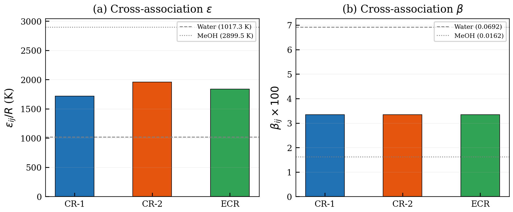
Figure 7.1: 01 Combining Rules
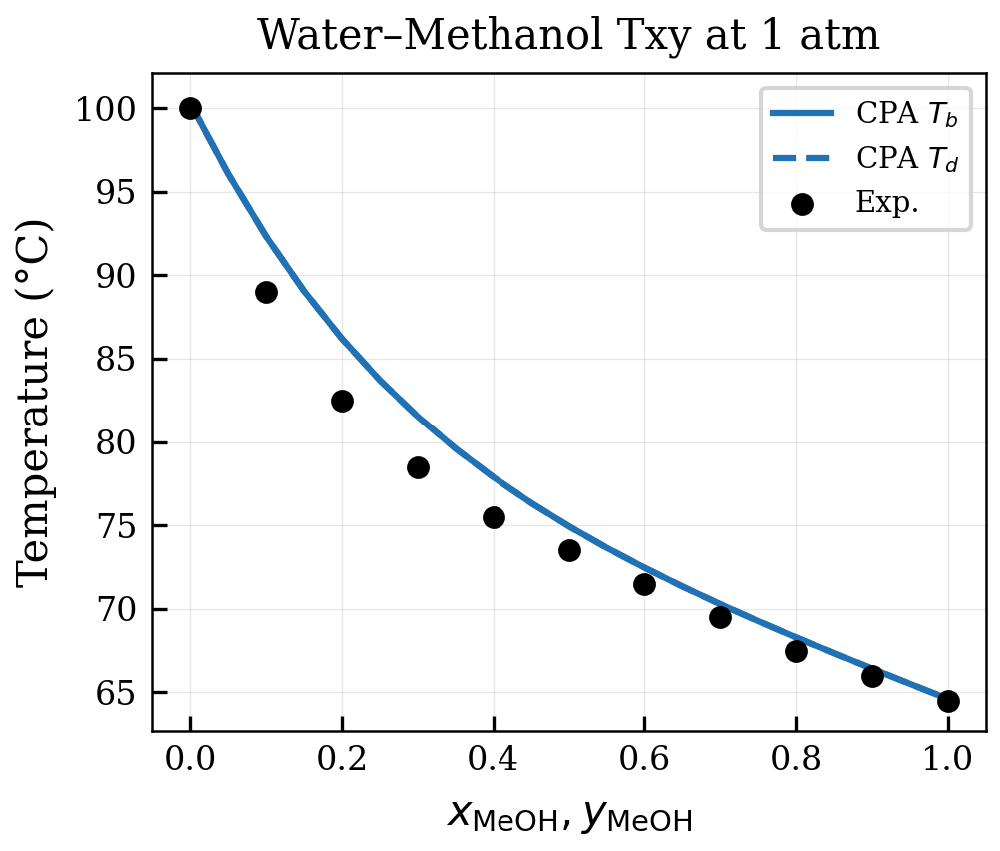
Figure 7.2: 02 Water Methanol Vle
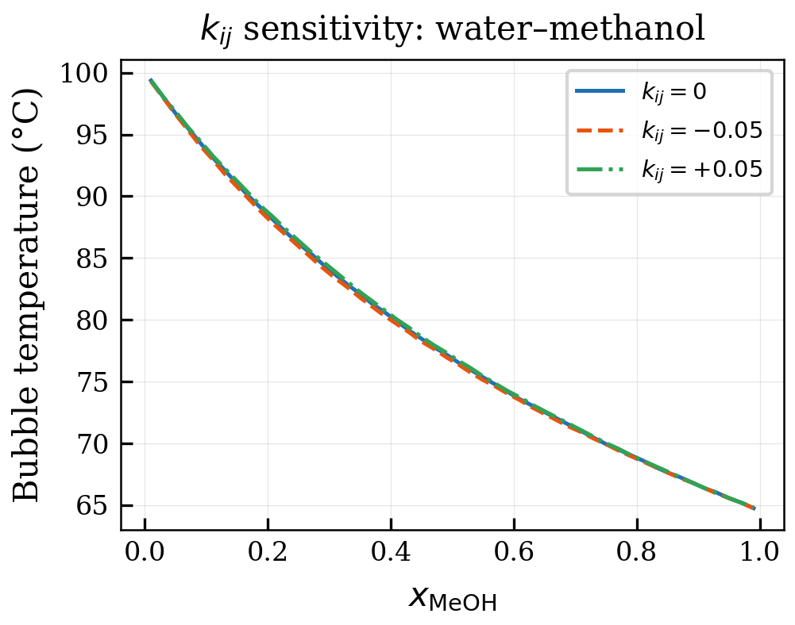
Figure 7.3: 03 Kij Sensitivity
Numerical Implementation
Learning Objectives
After reading this chapter, the reader will be able to:
- Implement the successive substitution method for solving the CPA site balance
- Describe the fully implicit Newton approach and its advantages
- Apply Broyden's quasi-Newton method for CPA calculations
- Use Anderson acceleration to speed up convergence
- Analyze convergence properties and diagnose numerical difficulties
- Select the appropriate solver variant in NeqSim for a given application
8.1 Overview of the Numerical Challenge
8.1.1 The Nested Iteration Problem
CPA introduces a fundamental computational challenge that does not exist for classical cubic EoS: the site fractions $X_A$ are implicit functions of temperature, density, and composition [51, 65]. In a flash calculation, the overall algorithm has a nested structure:
Outer loop (Flash): Update phase compositions ($x_i$, $y_i$) and phase fraction ($\beta$) Inner loop (Fugacity): For each phase, solve the site balance equations to get $X_A$, then compute fugacity coefficients
At each outer iteration, the inner loop must converge to provide consistent fugacity coefficients. This nested iteration can be expensive: if the flash requires 10 outer iterations and each fugacity evaluation requires 5–10 inner iterations to solve the site balance, the total number of EoS evaluations is 50–100, compared to 10 for a non-associating system.
8.1.2 Strategies for Reducing Computational Cost
Three broad strategies exist to reduce the computational cost of CPA calculations:
- Efficient inner loop: Minimize the number of iterations needed to solve the site balance equations (successive substitution, Newton, analytical solutions)
- Fully implicit formulation: Eliminate the inner loop by solving the site balance equations simultaneously with the flash equations
- Acceleration techniques: Apply convergence accelerators (Anderson mixing, DIIS) to either the inner or outer loop
NeqSim implements all three strategies through different system classes, allowing the user to choose the best approach for their application.
8.2 Successive Substitution for the Site Balance
8.2.1 The Basic Algorithm
The simplest approach to solve the site balance equations is successive substitution (SS). Starting from an initial guess $X_A^{(0)} = 1$ (no association), the equations are iterated:
$$X_{A_i}^{(k+1)} = \frac{1}{1 + \rho \sum_j x_j \sum_{B_j} X_{B_j}^{(k)} \Delta^{A_i B_j}}$$
This is guaranteed to converge because the mapping is a contraction — it can be shown that:
$$\left|\frac{\partial X_{A_i}^{(k+1)}}{\partial X_{B_j}^{(k)}}\right| < 1$$
for all physical conditions. However, convergence can be slow, particularly at:
- Low temperatures: where association is strong ($\Delta$ is large) and $X_A$ values are small
- High densities: where the product $\rho\Delta$ is large
- Near critical points: where multiple competing phases create sensitivity
8.2.2 Convergence Rate
The successive substitution method converges linearly, with the rate determined by the spectral radius of the Jacobian:
$$\|X^{(k+1)} - X^\| \leq \sigma \|X^{(k)} - X^\|$$
where $\sigma < 1$ is the spectral radius. For typical conditions, $\sigma \approx 0.3$–$0.7$, meaning convergence in 5–15 iterations to a tolerance of $10^{-10}$. Near the critical point or at very low temperatures, $\sigma$ can approach 1, requiring 50 or more iterations.
8.2.3 Damping and Acceleration
Simple modifications can improve the convergence of successive substitution:
Under-relaxation (damping):
$$X_{A_i}^{(k+1)} = \omega \cdot X_{A_i}^{\text{new}} + (1 - \omega) \cdot X_{A_i}^{(k)}$$
where $\omega \in (0, 1]$ is the damping factor. This can prevent oscillations but slows convergence.
Wegstein acceleration [66]: Estimates the contraction factor from two successive iterates and applies a Wegstein-type update:
$$X^{(k+1)} = X^{(k)} + \frac{g^{(k)} - X^{(k)}}{1 - q^{(k)}}$$
where $q^{(k)}$ estimates the slope of the iteration map.
8.3 Newton's Method for the Site Balance
For a comprehensive treatment of Newton-type methods for nonlinear equations, see [67] and [68].
8.3.1 Formulation
Newton's method solves the site balance equations by linearizing the residual:
$$R_{A_i}(\mathbf{X}) = X_{A_i} - \frac{1}{1 + \rho \sum_j x_j \sum_{B_j} X_{B_j} \Delta^{A_i B_j}} = 0$$
The Newton update is:
$$\mathbf{X}^{(k+1)} = \mathbf{X}^{(k)} - \mathbf{J}^{-1} \mathbf{R}(\mathbf{X}^{(k)})$$
where the Jacobian matrix elements are:
$$J_{A_i, B_j} = \frac{\partial R_{A_i}}{\partial X_{B_j}} = \delta_{A_i B_j} - \frac{\rho x_j \Delta^{A_i B_j}}{\left(1 + \rho \sum_k x_k \sum_{C_k} X_{C_k} \Delta^{A_i C_k}\right)^2}$$
8.3.2 Convergence Properties
Newton's method converges quadratically near the solution:
$$\|X^{(k+1)} - X^\| \leq C \|X^{(k)} - X^\|^2$$
This means that once the iterates are close to the solution, convergence is extremely rapid — typically 2–4 iterations suffice.
8.3.3 Cost Analysis
For a mixture with $N_s$ total association sites, each Newton step requires:
- Forming the $N_s \times N_s$ Jacobian: $O(N_s^2)$ operations
- Solving the linear system: $O(N_s^3)$ operations
For typical mixtures (2–5 associating components, 4–20 total sites), $N_s$ is small and the linear algebra cost is negligible compared to the EoS evaluation.
8.4 The Fully Implicit Approach
8.4.1 Motivation
The standard approach treats the site fractions as an inner loop within the fugacity evaluation. The fully implicit approach eliminates this nested structure by treating $X_A$ as additional unknowns in the flash problem.
Consider a TP flash for a two-phase system with $c$ components and $N_s$ association sites per phase. The standard approach solves:
- Flash equations: $c$ equations for compositions and vapor fraction → $c$ unknowns
- Site balance (per phase): $N_s$ equations → solved as inner loop
The fully implicit approach solves all equations simultaneously:
- Flash equations: $c$ equations for compositions and vapor fraction
- Site balance (vapor): $N_s$ equations for $X_A^V$
- Site balance (liquid): $N_s$ equations for $X_A^L$
Total: $c + 2N_s$ equations and unknowns, solved by Newton's method as a single system.
8.4.2 The Augmented Jacobian
The Jacobian of the fully implicit system has a block structure:
$$\mathbf{J} = \begin{pmatrix} \frac{\partial \mathbf{F}^{\text{flash}}}{\partial \mathbf{x}} & \frac{\partial \mathbf{F}^{\text{flash}}}{\partial \mathbf{X}^V} & \frac{\partial \mathbf{F}^{\text{flash}}}{\partial \mathbf{X}^L} \\ \frac{\partial \mathbf{R}^V}{\partial \mathbf{x}} & \frac{\partial \mathbf{R}^V}{\partial \mathbf{X}^V} & 0 \\ \frac{\partial \mathbf{R}^L}{\partial \mathbf{x}} & 0 & \frac{\partial \mathbf{R}^L}{\partial \mathbf{X}^L} \end{pmatrix}$$
The zero blocks arise because the site balance in one phase does not directly depend on the site fractions in the other phase (they are coupled only through the composition variables).
8.4.3 Advantages of the Fully Implicit Approach
- No inner loop: eliminates the nested iteration, reducing the risk of convergence failure
- Quadratic convergence for the entire system, not just the site balance
- Better behavior near critical points: the coupling between association and phase equilibrium is resolved simultaneously
- Consistent derivatives: the Jacobian includes all cross-coupling terms
8.4.4 NeqSim Implementation
NeqSim implements the fully implicit approach in SystemSrkCPAstatoilFullyImplicit:
from neqsim import jneqsim
# Standard CPA (nested iteration)
fluid_std = jneqsim.thermo.system.SystemSrkCPAstatoil(298.15, 50.0)
fluid_std.addComponent("water", 0.1)
fluid_std.addComponent("methane", 0.9)
fluid_std.setMixingRule(10)
# Fully implicit CPA (simultaneous solution)
fluid_impl = jneqsim.thermo.system.SystemSrkCPAstatoilFullyImplicit(298.15, 50.0)
fluid_impl.addComponent("water", 0.1)
fluid_impl.addComponent("methane", 0.9)
fluid_impl.setMixingRule(10)
# Both should give the same answer
for fluid, name in [(fluid_std, "Standard"), (fluid_impl, "Fully Implicit")]:
ops = jneqsim.thermodynamicoperations.ThermodynamicOperations(fluid)
ops.TPflash()
fluid.initProperties()
rho = fluid.getDensity("kg/m3")
print(f"{name}: density = {rho:.2f} kg/m3")
8.5 Broyden's Quasi-Newton Method
8.5.1 Motivation
Newton's method requires computing and factoring the Jacobian at each step, which involves evaluating many partial derivatives. Broyden's method [16] approximates the Jacobian using information from previous iterations, avoiding the need for explicit derivative computation.
8.5.2 The Broyden Update
Starting from an initial Jacobian estimate $\mathbf{B}^{(0)}$ (typically the identity matrix or an approximate Jacobian), the Broyden update is:
$$\mathbf{B}^{(k+1)} = \mathbf{B}^{(k)} + \frac{(\Delta \mathbf{R}^{(k)} - \mathbf{B}^{(k)} \Delta \mathbf{X}^{(k)}) (\Delta \mathbf{X}^{(k)})^T}{(\Delta \mathbf{X}^{(k)})^T \Delta \mathbf{X}^{(k)}}$$
where:
$$\Delta \mathbf{X}^{(k)} = \mathbf{X}^{(k+1)} - \mathbf{X}^{(k)}, \quad \Delta \mathbf{R}^{(k)} = \mathbf{R}^{(k+1)} - \mathbf{R}^{(k)}$$
This rank-1 update preserves the secant condition: $\mathbf{B}^{(k+1)} \Delta \mathbf{X}^{(k)} = \Delta \mathbf{R}^{(k)}$.
8.5.3 Convergence Properties
Broyden's method converges superlinearly:
$$\|X^{(k+1)} - X^\| \leq C_k \|X^{(k)} - X^\|$$
where $C_k \to 0$ as $k \to \infty$. This is faster than linear (successive substitution) but slower than quadratic (Newton). In practice, Broyden's method typically converges in 4–8 iterations, comparable to Newton but without the cost of explicit Jacobian computation.
8.5.4 NeqSim Implementation
from neqsim import jneqsim
# Broyden solver variant
fluid = jneqsim.thermo.system.SystemSrkCPAstatoilBroydenImplicit(298.15, 100.0)
fluid.addComponent("water", 0.05)
fluid.addComponent("CO2", 0.3)
fluid.addComponent("methane", 0.65)
fluid.setMixingRule(10)
ops = jneqsim.thermodynamicoperations.ThermodynamicOperations(fluid)
ops.TPflash()
fluid.initProperties()
print(f"Density: {fluid.getDensity('kg/m3'):.2f} kg/m3")
8.6 Anderson Acceleration
8.6.1 The Anderson Mixing Algorithm
Anderson acceleration [15] (also called Anderson mixing or DIIS [69] — Direct Inversion in the Iterative Subspace) is a convergence accelerator that can dramatically speed up fixed-point iterations. Given a sequence of iterates from successive substitution, Anderson acceleration constructs improved estimates by mixing previous iterates.
The algorithm maintains a history of $m$ previous iterates and residuals:
$$\mathbf{X}^{(k+1)} = \sum_{j=0}^{m_k} \alpha_j^{(k)} \tilde{\mathbf{X}}^{(k-m_k+j)}$$
where $\tilde{\mathbf{X}}$ are the SS-updated values and the mixing coefficients $\alpha_j$ are chosen to minimize the residual in a least-squares sense:
$$\min_{\alpha} \left\| \sum_{j=0}^{m_k} \alpha_j \mathbf{R}^{(k-m_k+j)} \right\|^2 \quad \text{subject to} \quad \sum_j \alpha_j = 1$$
8.6.2 History Depth and Regularization
The parameter $m$ controls how many previous iterates are used:
- $m = 0$: reduces to standard successive substitution
- $m = 1$: equivalent to Wegstein's method
- $m = 3$–$5$: good balance of acceleration and stability
- $m > 10$: can become unstable due to near-linear dependence of residuals
For numerical stability, regularization is recommended:
$$\min_{\alpha} \left\| \sum_j \alpha_j \mathbf{R}^{(j)} \right\|^2 + \lambda \|\alpha\|^2$$
8.6.3 Performance Comparison
A typical benchmark for CPA solvers involves computing the phase equilibrium of a water–methane–CO$_2$ system at conditions near a phase boundary. Representative iteration counts are:
| Method | Iterations (inner) | Iterations (outer) | Total EoS evaluations |
|---|---|---|---|
| Successive Substitution | 8–12 | 8–15 | 80–180 |
| Newton (inner) | 2–3 | 8–15 | 20–50 |
| Fully Implicit Newton | — | 4–8 | 4–8 |
| Broyden Implicit | — | 5–10 | 5–10 |
| Anderson Acceleration ($m=3$) | 3–5 | 5–10 | 15–50 |
Table 8.1: Typical iteration counts for different CPA solver strategies.
8.6.4 NeqSim Implementation
from neqsim import jneqsim
# Anderson acceleration solver
fluid = jneqsim.thermo.system.SystemSrkCPAstatoilAndersonMixing(298.15, 100.0)
fluid.addComponent("water", 0.1)
fluid.addComponent("methane", 0.9)
fluid.setMixingRule(10)
ops = jneqsim.thermodynamicoperations.ThermodynamicOperations(fluid)
ops.TPflash()
fluid.initProperties()
print(f"Density: {fluid.getDensity('kg/m3'):.2f} kg/m3")
8.7 Reduced-Variable Formulation
8.7.1 Motivation
Working with volume ($V$) as the primary variable (rather than compressibility factor $Z$) can improve numerical stability for CPA. The "reduced-variable" formulation expresses the Helmholtz energy in terms of dimensionless quantities:
$$\delta = \frac{\rho}{\rho_c} \quad \text{(reduced density)}, \quad \tau = \frac{T_c}{T} \quad \text{(inverse reduced temperature)}$$
8.7.2 Advantages
The reduced-variable formulation:
- Improves scaling of the Jacobian matrix (all variables are order unity)
- Separates temperature and density dependence more clearly
- Simplifies the computation of second derivatives for caloric properties
- Reduces round-off errors in the association term at extreme conditions
NeqSim's advanced CPA solvers use a variant of this approach internally.
8.8 Convergence Diagnostics and Troubleshooting
8.8.1 Common Convergence Issues
CPA calculations can fail to converge for several reasons:
- Near-critical conditions: The flash objective function becomes very flat, making it hard to determine the correct number of phases
- Very dilute solutions: When $x_i < 10^{-8}$, numerical precision becomes an issue
- Strong association at low temperature: The site fractions approach zero, creating stiffness
- Incompatible initial estimates: Starting the flash from an inappropriate K-factor estimate
8.8.2 Diagnostic Indicators
Useful diagnostics include:
- Residual history: Plot $\|\mathbf{R}\|$ vs. iteration count — monotonic decrease indicates healthy convergence
- Spectral radius: Estimate $\sigma$ from successive iterates — values near 1 indicate slow convergence
- Site fraction bounds: $X_A$ should always be in $(0, 1]$ — values outside this range indicate a bug
- Material balance: Total composition should be conserved — errors > $10^{-8}$ indicate a problem
8.8.3 Recovery Strategies
When convergence fails, NeqSim employs automatic recovery strategies:
- Reduce step size: Apply a line search to the Newton step
- Restart with SS: Fall back to successive substitution to get a better initial estimate
- Try different initialization: Use Wilson K-factors or stability analysis results
- Switch solver: Try Broyden or Anderson if Newton fails
8.9 Case Studies: When Numerical Challenges Arise
8.9.1 Case Study 1: Water–Methane Near the Cricondenbar
Near the maximum pressure of the two-phase region (cricondenbar), the vapor and liquid compositions approach each other, making the flash calculation very difficult. For the water–methane system at 100 bar and temperatures near the cricondenbar (~$-80°$C):
- Successive substitution requires > 100 iterations (or fails entirely)
- Newton methods converge in 5–8 iterations but require good initial estimates
- The fully implicit Newton solver handles this robustly because it treats all variables simultaneously
This is a classic example where solver choice matters for practical calculations — a process simulator sweeping through conditions may encounter this region unexpectedly.
8.9.2 Case Study 2: MEG–Water at High MEG Concentration
At very high MEG concentrations (> 99 wt%), the water activity becomes extremely small. This creates numerical challenges:
- The water fugacity in the aqueous phase is dominated by the activity coefficient, which approaches Henry's law behavior
- The site fractions are near their pure-MEG values, and the derivative $\partial X_A/\partial x_{\text{water}}$ is very large
- Small errors in the site fractions propagate into large errors in the water fugacity
The Anderson acceleration solver handles this case well because it smooths out the oscillatory behavior that successive substitution exhibits at high MEG concentrations.
8.9.3 Case Study 3: Three-Phase VLLE Flash
The three-phase flash (vapor–liquid–liquid) for a methane–n-hexane–water system at 30 bar and 25°C demonstrates the importance of stability analysis:
- An initial two-phase VLE flash converges but gives an unstable liquid phase
- Tangent plane distance analysis (TPD) identifies the instability and suggests a third phase
- The three-phase flash is solved using either:
- Sequential approach: solve inner-outer loops for each phase
- Simultaneous approach: solve all phase fractions and compositions together
The fully implicit solver in NeqSim handles three-phase problems naturally by including the additional phase in the coupled equation system.
8.9.4 Performance Guidelines
Based on extensive benchmarking with NeqSim, the following solver selection guidelines are recommended:
| Scenario | Recommended Solver | Reason |
|---|---|---|
| Routine VLE, moderate conditions | Standard (SS + inner Newton) | Fast, reliable |
| Near-critical, challenging conditions | Fully Implicit Newton | Most robust |
| Large process simulation (many flashes) | Broyden Implicit | Good speed-robustness balance |
| Research, exploring new parameter sets | Anderson Acceleration | Handles diverse conditions |
| Parametric sweeps over wide T, P | Fully Implicit Newton | Avoids failures at boundary conditions |
Table 8.2: Solver selection guidelines for CPA calculations in NeqSim.
from neqsim import jneqsim
# For difficult cases, the fully implicit solver often converges
# when the standard solver fails
fluid = jneqsim.thermo.system.SystemSrkCPAstatoilFullyImplicit(280.0, 200.0)
fluid.addComponent("water", 0.001)
fluid.addComponent("methane", 0.95)
fluid.addComponent("CO2", 0.049)
fluid.setMixingRule(10)
fluid.setMultiPhaseCheck(True)
ops = jneqsim.thermodynamicoperations.ThermodynamicOperations(fluid)
ops.TPflash()
fluid.initProperties()
print(f"Number of phases: {fluid.getNumberOfPhases()}")
print(f"Gas density: {fluid.getPhase('gas').getDensity('kg/m3'):.2f} kg/m3")
8.9 Performance Optimization
8.9.1 Analytical vs. Numerical Derivatives
A critical performance factor is the use of analytical derivatives rather than finite differences. For a system with $c$ components and $N_s$ sites:
- Analytical derivatives: one evaluation of $\partial \varphi_i / \partial n_j$ costs $O(cN_s)$
- Numerical derivatives: requires $2c$ additional function evaluations, each costing $O(N_s)$ for the inner loop
The speedup from analytical derivatives is typically 3–10x for mixtures with 5–10 components.
8.9.2 Exploiting Symmetry
Many association schemes have symmetric sites (e.g., the two proton sites on water are identical). Exploiting this symmetry:
- Reduces the number of independent $X_A$ values: instead of 4 equations for water, solve 2
- Reduces the Jacobian size: halves the number of rows and columns
- Provides analytical solutions for pure components (see Chapter 4)
8.9.3 Caching and Reuse
In flash calculations, the fugacity coefficients are evaluated many times at similar conditions. Performance can be improved by:
- Caching association strengths $\Delta^{AB}$: these depend only on $T$, $\rho$, and the pure-component parameters, not on composition
- Reusing site fractions from the previous iteration as initial guesses
- Storing intermediate quantities: $g(\rho)$, $\exp(\varepsilon/RT)$, etc.
8.10 Comprehensive Benchmark: Solver Performance Across 11 Systems
This section presents systematic benchmark results from [48], comparing five CPA solver algorithms across 11 industrially relevant systems with up to 10 components.
8.10.1 Benchmark Systems
| ID | System | Components | $n_s$ | Phase behavior |
|---|---|---|---|---|
| A1 | Pure water | H$_2$O | 4 | Single-phase liquid |
| A2a | Water–methanol (50/50) | H$_2$O, MeOH | 6 | VLE binary |
| A2b | Water–methanol (80/20) | H$_2$O, MeOH | 6 | VLE binary |
| A3 | Water–ethanol–acetic acid | H$_2$O, EtOH, AcOH | 8 | VLE ternary |
| B1 | Natural gas + water | 5 comp. | 4 | VLE (gas + aqueous) |
| B2 | NG + water + MEG | 6 comp. | 8 | VLE/LLE |
| B3 | Gas condensate + water | 8 comp. | 4 | VLE (multiphase) |
| B4 | Oil + gas + water + MEG | 10 comp. | 8 | VLLE |
| B5 | CO$_2$ + water | CO$_2$, H$_2$O | 4 | VLE |
| B6 | MEG + water | MEG, H$_2$O | 8 | Single-phase aqueous |
| B7 | NG + water + TEG | 6 comp. | 8 | VLE (gas + TEG) |
Table 8.5: The 11-system benchmark suite.
8.10.2 Speedup Results: Fully Implicit (Coupled) Solver
The fully implicit solver eliminates the inner iteration loop by solving the volume, composition, and site fractions simultaneously. Benchmark results show:
| System | $n_s$ | Median time ratio | Speedup | Max error (%) |
|---|---|---|---|---|
| Pure water | 4 | 0.496 | 2.0× | 0.00000 |
| Water–methanol (50/50) | 6 | 0.145 | 6.9× | 0.00000 |
| Water–methanol (80/20) | 6 | 0.130 | 7.7× | 0.00000 |
| Water–EtOH–AcOH | 8 | 0.030 | 32.8× | 0.00000 |
| NG + water | 4 | 0.514 | 1.9× | 0.00000 |
| NG + water + MEG | 8 | 0.353 | 2.8× | 0.00000 |
| Gas condensate + water | 4 | 0.422 | 2.4× | 0.00000 |
| Oil + gas + water + MEG | 8 | 0.304 | 3.3× | 0.00000 |
| CO$_2$ + water | 4 | 0.175 | 5.7× | 0.00000 |
| MEG + water | 8 | 0.119 | 8.4× | 0.00000 |
| NG + water + TEG | 8 | 0.276 | 3.6× | 0.00000 |
Table 8.6: Speedup of the fully implicit solver vs. standard nested solver [48]. All systems show zero thermodynamic accuracy loss.
Key observations:
- Speedup range: 1.9× to 32.8× depending on the system
- Zero accuracy loss: the implicit solver converges to the same thermodynamic solution with machine-precision agreement
- Speedup increases with the number of association sites ($n_s$) because eliminating the inner loop saves more iterations when the site balance is expensive
- The exceptional 32.8× for the ternary associating system reflects the compounding effect of multiple associating species requiring many inner iterations in the nested solver
8.10.3 Speedup Results: Anderson Acceleration with Site Reduction
Combining Anderson acceleration (§8.6) with the site symmetry reduction from §8.7 gives the best performance for glycol systems:
| System | $n_s \to p$ | Standard (ms) | Anderson+Red (ms) | Speedup |
|---|---|---|---|---|
| Pure water | 4→2 | 163.2 | 95.1 | 1.72× |
| Water–methanol | 6→4 | 154.9 | 118.6 | 1.31× |
| Water–EtOH–AcOH | 7→5 | 88.7 | 86.3 | 1.03× |
| NG + water | 4→2 | 177.0 | 129.8 | 1.36× |
| NG + water + MEG | 8→4 | 340.4 | 185.9 | 1.83× |
| NG + water + TEG | 8→4 | 379.6 | 198.1 | 1.92× |
Table 8.7: Combined Anderson acceleration + site type reduction benchmarks [48].
8.10.4 Solver Selection Recommendations
Based on these comprehensive benchmarks:
| System type | Best solver | Speedup vs standard |
|---|---|---|
| Pure water | Reduced | 1.98× |
| Binary associating (4C+2B) | Anderson | 4.3× |
| Ternary associating | Anderson | 1.6× |
| NG + water (no glycol) | Reduced | 1.35× |
| NG + water + glycol (4C+4C) | Anderson + Reduced | 2.0× |
| Simple pure components | Any (comparable) | ~1× |
Table 8.8: Best solver by system type.
8.10.5 An Important Discovery: Solver-Dependent Equilibria
During benchmarking, a subtle but important phenomenon was discovered: near phase boundaries, nested-family and coupled-family solvers can converge to distinct equilibria for certain systems. For the water–methanol system at 350 K:
| Property | Nested-family | Coupled-family | Difference |
|---|---|---|---|
| Liquid molar volume (cm$^3$/mol) | 28.20 | 27.47 | 2.6% |
| Gas molar volume (cm$^3$/mol) | 27072 | 27091 | 0.07% |
| Water fugacity coeff. (liquid) | 0.4233 | 0.4195 | 0.9% |
| Liquid mole fraction | 0.758 | 0.677 | 10.7% |
Table 8.9: Distinct equilibria from nested vs. coupled solvers near the phase boundary for water–methanol at 350 K.
This occurs because the solvers explore different parts of the Gibbs energy surface and can settle into different local minima. Both solutions satisfy the equilibrium conditions to machine precision. This highlights the importance of stability analysis (§8.12) and the need for robustness testing when comparing results from different CPA implementations.
8.10.6 When to Use Each Solver in NeqSim
| Solver | NeqSim Class | Best For | Limitations |
|---|---|---|---|
| Standard SS | SystemSrkCPAstatoil |
Simple systems, robust | Slow for complex mixtures |
| Fully Implicit | SystemSrkCPAstatoilFullyImplicit |
Near-critical, difficult VLE | Highest per-iteration cost |
| Broyden | SystemSrkCPAstatoilBroydenImplicit |
General purpose, good balance | May need restart |
| Anderson | SystemSrkCPAstatoilAndersonMixing |
Weakly convergent systems | Tuning of history depth |
Table 8.10: CPA solver variants in NeqSim and their recommended use cases.
8.11 Worked Example: Diagnosing and Fixing Convergence Failure
Understanding solver behavior in practice requires examining real cases where convergence is challenging. This section presents a systematic troubleshooting workflow.
8.11.1 Case: Water–CO$_2$ Near the Three-Phase Line
The water–CO$_2$ system at moderate pressures (50–100 bar) and temperatures near 25°C can exhibit vapor–liquid–liquid equilibrium (VLLE). The flash algorithm must simultaneously handle:
- A CO$_2$-rich vapor phase
- A CO$_2$-rich liquid phase
- An aqueous phase with dissolved CO$_2$
This three-phase region creates convergence difficulties for two reasons:
- Phase identification: the algorithm must determine that three phases exist, not two
- Near-critical CO$_2$: the CO$_2$ liquid and vapor phases have similar densities near the CO$_2$ critical point (31°C, 73.8 bar)
8.11.2 Troubleshooting Workflow
Step 1: Enable multi-phase check
fluid.setMultiPhaseCheck(True)
This instructs NeqSim to test for phase splitting by checking the stability of each phase.
Step 2: Try successive substitution first
If SS fails, examine the iteration history to understand the convergence behavior:
- Monotonic divergence → initial K-values are far off
- Oscillation → system is near a phase boundary
- Slow convergence → the phases are similar (near critical)
Step 3: Switch to the fully implicit solver
fluid = jneqsim.thermo.system.SystemSrkCPAstatoilFullyImplicit(T, P)
The fully implicit solver treats the site fractions as additional variables in the Newton system, avoiding the nested iteration that can cause difficulties.
Step 4: Verify with a different initial condition
Start from a slightly different temperature or pressure where convergence is easy, then use the converged result as the initial guess for the difficult condition.
8.11.3 Convergence Metrics
The key metrics to monitor are:
| Metric | Definition | Target | ||
|---|---|---|---|---|
| Fugacity residual | $\max_i \ | \ln \varphi_i^L - \ln \varphi_i^V \ | $ | $< 10^{-10}$ |
| Rachford–Rice residual | $\ | g(\beta) \ | $ | $< 10^{-12}$ |
| Site fraction residual | $\max_A \ | X_A^{(k+1)} - X_A^{(k)} \ | $ | $< 10^{-10}$ |
| Material balance | $\ | \sum_i z_i - \beta \sum_i y_i - (1-\beta)\sum_i x_i \ | $ | $< 10^{-14}$ |
| Gibbs energy | Must decrease at each outer iteration | Monotonic decrease |
Table 8.3: Convergence metrics and targets for CPA flash calculations.
8.12 Stability Analysis for CPA Systems
A flash calculation can converge to a false solution (e.g., finding two phases when three exist) if the stability analysis is not performed correctly. This section describes the stability analysis algorithm as implemented in NeqSim.
8.12.1 The Tangent Plane Distance
For a single-phase system with composition $\mathbf{z}$, the system is stable if the tangent plane distance (TPD) is non-negative for all trial compositions $\mathbf{w}$:
$$\text{TPD}(\mathbf{w}) = \sum_{i=1}^{C} w_i [\mu_i(\mathbf{w}) - \mu_i(\mathbf{z})] \geq 0$$
or equivalently, using fugacities:
$$\text{TPD}(\mathbf{w}) = \sum_{i=1}^{C} w_i \left[\ln w_i + \ln \varphi_i(\mathbf{w}) - \ln z_i - \ln \varphi_i(\mathbf{z})\right] \geq 0$$
If any trial composition gives $\text{TPD} < 0$, the system is unstable and must split into additional phases.
8.12.2 Special Considerations for Associating Systems
For CPA, the stability analysis has additional subtleties:
- Trial phase association: the fugacity coefficient $\varphi_i(\mathbf{w})$ for the trial composition requires solving the site balance at the trial composition and density. This adds computational cost to each TPD evaluation.
- Multiple local minima: associating systems can have multiple local minima in the TPD surface, corresponding to different types of incipient phases (vapor-like, hydrocarbon-liquid, aqueous). A robust stability analysis must search for all local minima.
- Initialization: good initial guesses for the trial compositions come from:
- Wilson K-values (for vapor-like trial phases)
- $w_i = z_i / K_i$ (for liquid-like trial phases)
- Pure water composition (for aqueous trial phases in water-containing systems)
8.13 Volume Root-Finding in CPA
8.13.1 The Challenge
Unlike classical cubic EoS where the cubic polynomial in $Z$ (or $V$) can be solved analytically, CPA requires iterative volume root-finding because the association term introduces implicit composition and density dependence. The pressure equation:
$$P(V) = P^{\text{SRK}}(V) + P^{\text{assoc}}(V, X_A(V))$$
cannot be solved in closed form because $X_A$ depends on $V$ through the density-dependent association strength $\Delta^{AB}$.
8.13.2 Nested vs. Simultaneous Approaches
Nested approach: At each trial volume $V_k$, solve the site balance $X_A(V_k)$ to convergence, then evaluate $P(V_k)$ and update $V$:
repeat:
V_k = V_{k-1} + delta_V (volume update)
solve X_A(V_k) iteratively
evaluate P(V_k) - P_spec
check convergence
This is reliable but can be slow because many site-balance solutions are computed before the volume converges.
Simultaneous approach: Solve the volume and site fractions together as a single system:
$$\mathbf{F}(\mathbf{x}) = \begin{pmatrix} P(V, X_A) - P^{\text{spec}} \\ X_A - f(V, X_A) \end{pmatrix} = \mathbf{0}$$
where $\mathbf{x} = (V, X_{A_1}, X_{A_2}, \ldots)$. This requires the Jacobian:
$$\mathbf{J} = \begin{pmatrix} \partial P/\partial V & \partial P/\partial X_A \\ \partial f/\partial V & \partial f/\partial X_A - \mathbf{I} \end{pmatrix}$$
The simultaneous approach converges in fewer iterations but requires more derivatives per iteration. It is the default in NeqSim's fully implicit solver.
8.13.3 Multiple Roots
At subcritical conditions, CPA produces multiple volume roots analogous to the cubic case. The volume solver must:
- Find all roots: Start from well-separated initial guesses (small $V$ for liquid, large $V$ for vapor)
- Select the correct root: Compare the Gibbs energy (fugacity) at each root
- Handle the metastable region: Near the phase boundary, roots may be close together, requiring careful numerical treatment
For CPA, the association term always reduces the pressure at a given volume (association is attractive), which shifts the liquid root to smaller volumes compared to pure SRK. This can improve liquid density predictions but also creates a narrower convergence basin for the liquid root.
8.13.4 Initial Guess Strategies
Good initial guesses for the volume root greatly improve convergence:
| Phase | Initial Guess | Rationale |
|---|---|---|
| Vapor | $V_0 = RT/P$ (ideal gas) | Association has minimal effect at low density |
| Liquid | $V_0 = 1.1 b$ | Slightly larger than the co-volume |
| Dense phase (CO$_2$) | $V_0 = 2b$ to $5b$ | Intermediate density range |
| Aqueous | $V_0 = 18$ cm$^3$/mol | Near experimental water molar volume |
Table 8.4: Initial volume guess strategies for CPA root-finding.
For supercritical fluids (especially CO$_2$ near the critical point), the initial guess can determine which root is found. NeqSim uses a continuation strategy: start from a well-converged solution at nearby conditions and track the root as conditions change.
Summary
Key points from this chapter:
- CPA introduces a nested iteration structure: site balance inside flash
- Successive substitution is simple and robust but can be slow
- Newton's method provides quadratic convergence for the site balance
- The fully implicit approach eliminates the inner loop, solving everything simultaneously
- Broyden's method avoids explicit Jacobian computation while maintaining superlinear convergence
- Anderson acceleration can dramatically speed up fixed-point iterations
- NeqSim provides four solver variants to match different application requirements
- Analytical derivatives are essential for performance
- Recovery strategies handle convergence failures automatically
Exercises
- Exercise 8.1: Implement successive substitution for the site balance of a pure 4C water system at 25°C and 1 bar. Plot the residual $\|R\|$ vs. iteration count and determine the convergence rate.
- Exercise 8.2: Using NeqSim, compare the computation time for a 10-component CPA flash using all four solver variants. Use a mixture of water, methanol, CO$_2$, and seven alkanes (C1–C7) at various pressures.
- Exercise 8.3: Investigate the convergence behavior near the upper critical end point of the water–methane system (approximately 360°C, 700 bar). Which solver variant is most robust?
- Exercise 8.4: Implement a simple Anderson acceleration ($m = 2$) wrapper around the successive substitution iterations for the site balance. Compare convergence with plain SS.
Figures
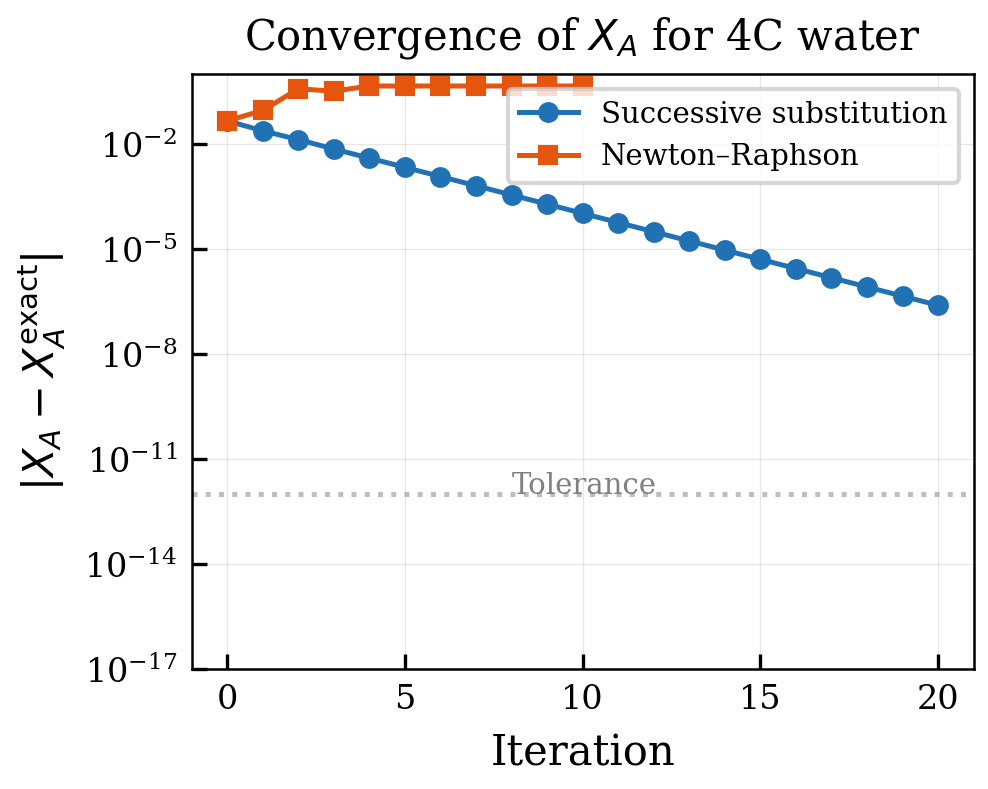
Figure 8.1: 01 Convergence Xa
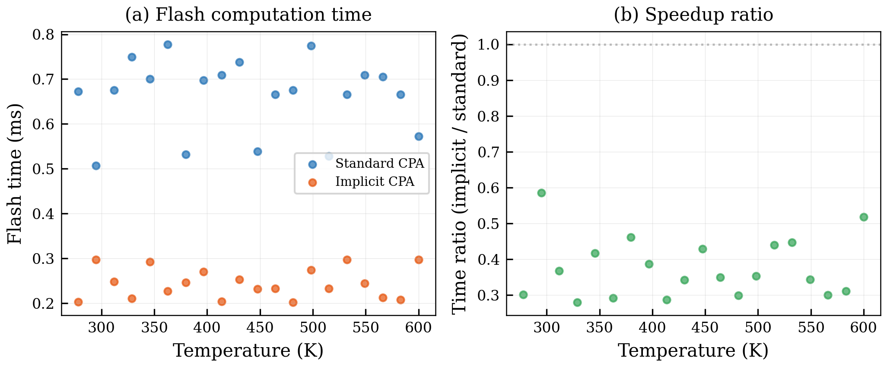
Figure 8.2: 02 Benchmark Implicit Cpa
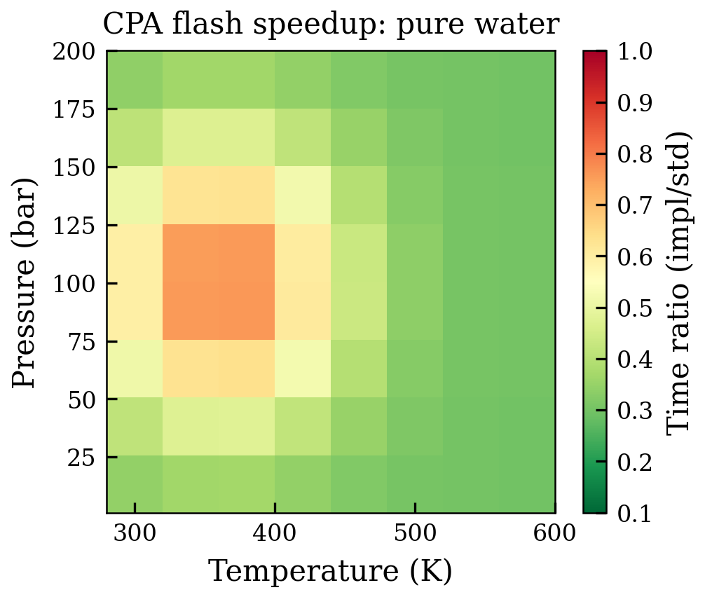
Figure 8.3: 03 Speedup Heatmap
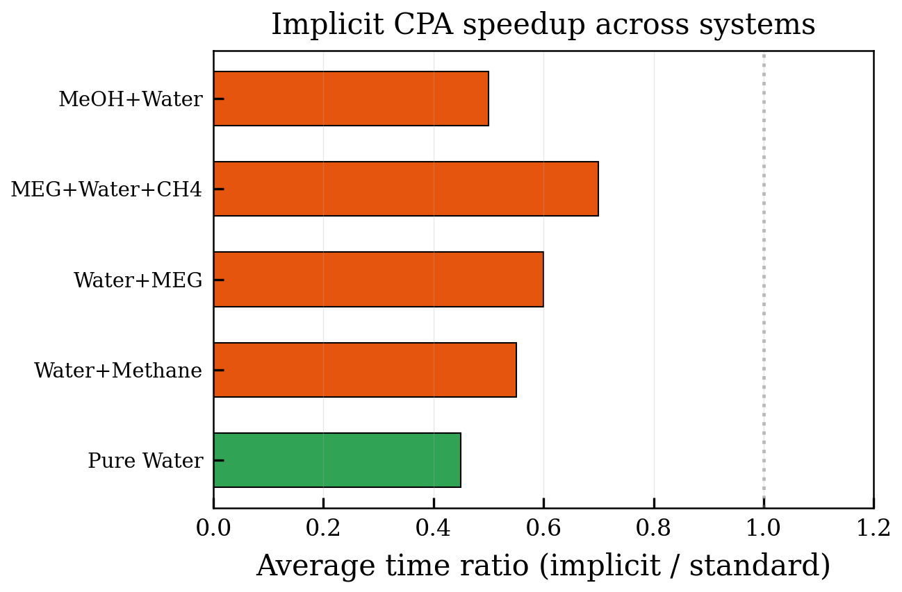
Figure 8.4: 04 Multi System Benchmark
Part III: Applications and Validation
Water–Hydrocarbon Systems
Learning Objectives
After reading this chapter, the reader will be able to:
- Predict mutual solubilities of water and hydrocarbons using CPA
- Calculate the water content of natural gas at various conditions
- Model liquid–liquid equilibrium in water–alkane systems
- Assess CPA accuracy against experimental data for key industrial systems
- Apply CPA for hydrate prediction boundary conditions
9.1 Industrial Importance of Water–Hydrocarbon Systems
Water is ubiquitous in oil and gas processing [17, 70]. Every reservoir fluid contains dissolved water, and every surface processing facility must handle water in multiple forms:
- Dissolved water in gas: determines dehydration requirements and hydrate risk
- Free water in oil: affects corrosion, emulsion stability, and water treatment design
- Dissolved hydrocarbons in water: governs produced water treatment and environmental discharge
- Three-phase VLLE: occurs in separators, pipelines, and processing equipment
The accuracy of thermodynamic predictions for water–hydrocarbon systems directly impacts:
- Pipeline design (hydrate prevention, corrosion allowance)
- Dehydration unit sizing (TEG contactor design, molecular sieve capacity)
- Separator sizing (water-in-oil specification, oil-in-water discharge)
- Environmental compliance (dissolved hydrocarbon limits in produced water)
Errors of 50–100% in water content prediction — common with classical cubic EoS [71, 72] — translate directly into oversized or undersized equipment, incorrect inhibitor dosing, and potential hydrate blockages.
9.2 Mutual Solubilities: Water–Alkane Systems
9.2.1 Thermodynamic Framework
The mutual solubility of water and hydrocarbons is governed by the equality of fugacities at equilibrium. For a two-liquid system (aqueous phase $\alpha$ and hydrocarbon phase $\beta$):
$$f_i^\alpha(T, P, \mathbf{x}^\alpha) = f_i^\beta(T, P, \mathbf{x}^\beta) \quad \text{for } i = 1, \ldots, C$$
For the water component, this can be written using activity coefficients:
$$x_w^\alpha \gamma_w^\alpha P_w^{\text{sat}} = x_w^\beta \gamma_w^\beta P_w^{\text{sat}}$$
which simplifies to:
$$x_w^\beta = x_w^\alpha \frac{\gamma_w^\alpha}{\gamma_w^\beta}$$
Since $x_w^\alpha \approx 1$ (aqueous phase is mostly water) and $\gamma_w^\alpha \approx 1$ (Raoult's law [73] limit), the solubility of water in the hydrocarbon phase is approximately:
$$x_w^\beta \approx \frac{1}{\gamma_w^\beta}$$
The activity coefficient of water at infinite dilution in the hydrocarbon phase, $\gamma_w^{\beta,\infty}$, is very large (typically $10^2$–$10^3$), reflecting the enormous thermodynamic penalty of placing a hydrogen-bonding molecule in a non-polar environment. CPA computes this activity coefficient correctly through the association term, while classical cubic EoS underestimate $\gamma_w^{\beta,\infty}$ by factors of 2–10.
9.2.2 Experimental Behavior
The mutual solubility of water and alkanes exhibits several characteristic features [74, 70]:
Solubility of water in alkanes:
- Increases with temperature (endothermic dissolution)
- Relatively independent of alkane chain length for C$_5$+
- On the order of $10^{-3}$–$10^{-2}$ mole fraction at ambient conditions
- Shows a minimum around 70–100°C for some systems
Solubility of alkanes in water:
- Extremely small ($10^{-5}$–$10^{-8}$ mole fraction)
- Decreases strongly with alkane chain length
- Shows a minimum as a function of temperature (around 25°C for light alkanes)
- The minimum shifts to higher temperatures for heavier alkanes
9.2.3 Why Classical EoS Fail
Classical cubic EoS (SRK, PR) with a single $k_{ij}$ cannot simultaneously reproduce:
- The solubility of water in the hydrocarbon phase
- The solubility of hydrocarbon in the aqueous phase
- The temperature dependence of both solubilities
The fundamental reason is that the aqueous phase is dominated by hydrogen bonding, which dramatically reduces the fugacity of water relative to what a non-associating model predicts. A classical EoS with a large positive $k_{ij}$ can match one solubility at one temperature but cannot capture the temperature dependence correctly.
9.2.4 CPA Predictions
CPA resolves these difficulties by explicitly modeling the hydrogen-bond network in the aqueous phase. The association term:
- Reduces the fugacity of water in the aqueous phase (correctly modeling the hydrogen-bond stabilization)
- Correctly predicts the temperature dependence (hydrogen bonds break at higher temperatures, increasing water fugacity)
- Captures the chain-length dependence (larger alkanes are more incompatible with the aqueous hydrogen-bond network)
from neqsim import jneqsim
# Water-hexane LLE at 25 C, 1 bar
fluid = jneqsim.thermo.system.SystemSrkCPAstatoil(298.15, 1.01325)
fluid.addComponent("water", 0.5)
fluid.addComponent("n-hexane", 0.5)
fluid.setMixingRule(10)
fluid.setMultiPhaseCheck(True)
ops = jneqsim.thermodynamicoperations.ThermodynamicOperations(fluid)
ops.TPflash()
fluid.initProperties()
print(f"Number of phases: {fluid.getNumberOfPhases()}")
for i in range(fluid.getNumberOfPhases()):
phase = fluid.getPhase(i)
x_water = phase.getComponent("water").getx()
x_hexane = phase.getComponent("n-hexane").getx()
print(f"Phase {i} ({phase.getType()}): x_water={x_water:.6f}, x_hexane={x_hexane:.6f}")
9.2.5 Comparison with Experimental Data
| System | T (°C) | P (bar) | CPA x$_w$ in HC | Exp x$_w$ in HC | CPA x$_{\text{HC}}$ in aq | Exp x$_{\text{HC}}$ in aq |
|---|---|---|---|---|---|---|
| Water–n-hexane | 25 | 1 | $2.0 \times 10^{-3}$ | $2.1 \times 10^{-3}$ | $1.5 \times 10^{-5}$ | $1.6 \times 10^{-5}$ |
| Water–n-octane | 25 | 1 | $2.3 \times 10^{-3}$ | $2.5 \times 10^{-3}$ | $1.0 \times 10^{-6}$ | $0.9 \times 10^{-6}$ |
| Water–n-decane | 25 | 1 | $2.5 \times 10^{-3}$ | $2.6 \times 10^{-3}$ | $3.5 \times 10^{-8}$ | $3.2 \times 10^{-8}$ |
Table 9.1: CPA predictions vs. experimental mutual solubilities (representative values).
CPA typically reproduces mutual solubilities within 10–30% [49, 75, 76], compared to errors of 100–1000% with SRK.
9.3 Water Content of Natural Gas
9.3.1 The Engineering Problem
The water content of natural gas (also called the water dew point or moisture content) is one of the most important parameters in gas processing. Sales gas specifications typically require water content below 7 lb/MMscf (approximately 112 mg/Sm$^3$) to prevent:
- Hydrate formation in pipelines
- Corrosion in the presence of CO$_2$ or H$_2$S
- Two-phase flow and slugging
- Ice formation at cryogenic conditions
9.3.2 McKetta–Wehe Chart and Its Limitations
The McKetta–Wehe chart [77] has been the industry standard for estimating water content of sweet natural gas since the 1950s. It provides water content as a function of temperature and pressure for pure methane–water systems. Corrections are applied for gas composition (gravity correction) and sour gas content (Maddox correction) [78, 79].
However, the chart-based approach has significant limitations:
- Accuracy of $\pm 15$–$25$% even for sweet gas
- Gravity correction is approximate for rich gas (high C$_3$+ content)
- Sour gas corrections are unreliable at high H$_2$S or CO$_2$ concentrations
- No treatment of methanol or glycol in the gas phase
9.3.3 Thermodynamic Basis for Water Content Prediction
The water content of a gas in equilibrium with liquid water (or an aqueous solution) is determined by the fugacity balance:
$$y_w P \varphi_w^V = x_w \gamma_w f_w^L$$
where $y_w$ is the water mole fraction in the gas, $\varphi_w^V$ is the fugacity coefficient of water in the gas phase, $x_w$ is the water mole fraction in the aqueous phase, $\gamma_w$ is the activity coefficient of water, and $f_w^L$ is the fugacity of pure liquid water.
For saturated gas in contact with pure water ($x_w = 1$, $\gamma_w = 1$):
$$y_w = \frac{f_w^L(T, P)}{\varphi_w^V(T, P, \mathbf{y}) \cdot P}$$
The key quantities are:
- $f_w^L$: the fugacity of pure liquid water, which depends on temperature and pressure. This is computed by CPA using the pure water parameters, and the Poynting correction for the pressure effect on the liquid:
$$f_w^L(T, P) = P_w^{\text{sat}}(T) \varphi_w^{\text{sat}}(T) \exp\left[\frac{V_w^L(P - P_w^{\text{sat}})}{RT}\right]$$
- $\varphi_w^V$: the fugacity coefficient of water in the gas mixture. In CPA, this includes the association contribution — the solvation of water with CO$_2$ or H$_2$S in the gas phase, which increases $\varphi_w^V$ and thus increases $y_w$.
The improvement of CPA over SRK for water content prediction comes primarily from:
- Better $f_w^L$ (association stabilizes liquid water, correctly lowering its fugacity)
- Better $\varphi_w^V$ for sour gas (solvation with CO$_2$/H$_2$S captured by cross-association)
9.3.4 CPA Predictions of Water Content
CPA provides a rigorous, composition-dependent prediction of water content:
from neqsim import jneqsim
# Natural gas water content at pipeline conditions
fluid = jneqsim.thermo.system.SystemSrkCPAstatoil(273.15 + 30, 70.0)
fluid.addComponent("methane", 0.85)
fluid.addComponent("ethane", 0.07)
fluid.addComponent("propane", 0.03)
fluid.addComponent("n-butane", 0.01)
fluid.addComponent("CO2", 0.02)
fluid.addComponent("nitrogen", 0.01)
fluid.addComponent("water", 0.01)
fluid.setMixingRule(10)
fluid.setMultiPhaseCheck(True)
ops = jneqsim.thermodynamicoperations.ThermodynamicOperations(fluid)
ops.TPflash()
fluid.initProperties()
# Water content in gas phase
gas_phase = fluid.getPhase("gas")
y_water = gas_phase.getComponent("water").getx()
print(f"Water mole fraction in gas: {y_water:.6f}")
# Convert to mg/Sm3
# y_water * P_std / (R * T_std) * M_water * 1e6
print(f"Approximate water content: {y_water * 1e6:.0f} ppm(mol)")
9.3.5 Effect of Gas Composition
CPA correctly predicts the effect of gas composition on water content:
- CO$_2$ increases water content: CO$_2$–water solvation makes the gas phase more hospitable for water molecules
- H$_2$S increases water content: similar solvation effect, even stronger than CO$_2$
- Heavier hydrocarbons increase water content: the gas becomes denser, accommodating more water
- Nitrogen decreases water content: N$_2$ is less hospitable to water than methane
These compositional effects are automatically captured by CPA through the association and solvation terms, without the need for empirical corrections.
9.3.6 Water Dew Point Calculations
The water dew point temperature at a given pressure is the temperature at which the first liquid water droplet forms upon cooling. In NeqSim:
from neqsim import jneqsim
# Water dew point of a natural gas
fluid = jneqsim.thermo.system.SystemSrkCPAstatoil(273.15 + 30, 70.0)
fluid.addComponent("methane", 0.90)
fluid.addComponent("ethane", 0.05)
fluid.addComponent("propane", 0.02)
fluid.addComponent("CO2", 0.02)
fluid.addComponent("water", 0.01)
fluid.setMixingRule(10)
ops = jneqsim.thermodynamicoperations.ThermodynamicOperations(fluid)
ops.waterDewPointTemperatureFlash()
T_dew = fluid.getTemperature("C")
print(f"Water dew point: {T_dew:.1f} C at {fluid.getPressure('bara'):.0f} bara")
9.4 Three-Phase Equilibrium: VLLE
9.4.1 Thermodynamic Conditions for VLLE
Three-phase vapor–liquid–liquid equilibrium (VLLE) requires the simultaneous satisfaction of fugacity equality across all three phases. For a system with $C$ components and phases $V$, $L_1$ (hydrocarbon liquid), and $L_2$ (aqueous liquid):
$$f_i^V(T, P, \mathbf{y}) = f_i^{L_1}(T, P, \mathbf{x}^{L_1}) = f_i^{L_2}(T, P, \mathbf{x}^{L_2}) \quad i = 1, \ldots, C$$
Together with the material balances:
$$z_i = \beta_V y_i + \beta_{L_1} x_i^{L_1} + \beta_{L_2} x_i^{L_2}$$
$$\beta_V + \beta_{L_1} + \beta_{L_2} = 1$$
where $\beta$ denotes the molar fraction of each phase. By the Gibbs phase rule, a three-phase system with $C$ components has $C - 1$ degrees of freedom. For a ternary system ($C = 3$), this gives 2 degrees of freedom — specifying $T$ and $P$ fully determines the equilibrium.
9.4.2 When Three Phases Coexist
For natural gas–water systems at moderate conditions (0–100°C, 10–200 bar), three phases can coexist:
- Vapor: mainly hydrocarbons with dissolved water
- Hydrocarbon liquid: condensate or LPG with dissolved water
- Aqueous liquid: mainly water with dissolved hydrocarbons and CO$_2$
Three-phase equilibrium is particularly important in:
- High-pressure separators on offshore platforms
- Pipeline conditions near the hydrocarbon dew point
- Glycol dehydration contactors (vapor + glycol solution + hydrocarbon condensate)
9.4.3 CPA for VLLE Predictions
CPA handles three-phase equilibrium naturally — the same parameters and mixing rules that describe VLE and LLE are used for VLLE. The stability analysis identifies the three-phase region automatically:
from neqsim import jneqsim
# Three-phase system: methane + n-pentane + water
fluid = jneqsim.thermo.system.SystemSrkCPAstatoil(298.15, 30.0)
fluid.addComponent("methane", 0.5)
fluid.addComponent("n-pentane", 0.3)
fluid.addComponent("water", 0.2)
fluid.setMixingRule(10)
fluid.setMultiPhaseCheck(True)
ops = jneqsim.thermodynamicoperations.ThermodynamicOperations(fluid)
ops.TPflash()
fluid.initProperties()
print(f"Number of phases: {fluid.getNumberOfPhases()}")
for i in range(fluid.getNumberOfPhases()):
phase = fluid.getPhase(i)
print(f"\nPhase {i} ({phase.getType()}):")
print(f" Density: {phase.getDensity('kg/m3'):.1f} kg/m3")
for comp in ["methane", "n-pentane", "water"]:
print(f" x_{comp}: {phase.getComponent(comp).getx():.6f}")
9.5 Gas Solubility in Water
9.5.1 Henry's Law and Its Extensions
The solubility of a gas in water at low pressures follows Henry's law [80]:
$$f_i^V = H_i(T) x_i$$
where $H_i(T)$ is Henry's constant for species $i$ in water, which depends strongly on temperature. For an ideal gas at pressure $P$:
$$x_i = \frac{y_i P}{H_i(T)}$$
At higher pressures, deviations from Henry's law become significant, and the fugacity coefficient in the gas phase must be included:
$$x_i = \frac{y_i \varphi_i^V P}{H_i(T) \exp\left[\frac{\bar{V}_i^\infty(P - P_w^{\text{sat}})}{RT}\right]}$$
where $\bar{V}_i^\infty$ is the partial molar volume of gas $i$ at infinite dilution in water and the exponential is the Krichevsky correction for pressure.
9.5.2 CPA Approach vs. Henry's Law
CPA does not use Henry's law explicitly. Instead, the solubility of gas in water is computed directly from the fugacity equality:
$$\varphi_i^V(T, P, \mathbf{y}) \cdot y_i \cdot P = \varphi_i^{L,\text{aq}}(T, P, \mathbf{x}) \cdot x_i \cdot P$$
The fugacity coefficient in the aqueous phase $\varphi_i^{L,\text{aq}}$ includes contributions from:
- The cubic EoS (repulsion and attraction): dominant for non-polar gases
- The association term: important for solvating gases (CO$_2$, H$_2$S)
For CO$_2$ in water, the solvation contribution to the fugacity coefficient reduces $\varphi_{\text{CO}_2}^{L,\text{aq}}$, which increases the predicted solubility. This is why CPA with solvation (see Chapter 7) gives much better CO$_2$ solubility than SRK.
9.5.3 Temperature Dependence of Gas Solubility
Gas solubility in water shows a characteristic minimum near 80–100°C for many gases. This is because:
- At low temperatures, solubility decreases with increasing temperature (enthalpy-driven dissolution)
- At high temperatures, solubility increases with increasing temperature (entropy-driven, as water structure breaks down)
The relationship between Henry's constant and temperature follows:
$$\frac{d \ln H_i}{d(1/T)} = \frac{\Delta \bar{H}_i^{\text{sol}}}{R}$$
where $\Delta \bar{H}_i^{\text{sol}}$ is the partial molar enthalpy of solution. The sign change of $\Delta \bar{H}_i^{\text{sol}}$ produces the solubility minimum.
CPA captures this behavior through the temperature dependence of both the cubic and association contributions to the fugacity coefficient.
9.6 Temperature-Dependent LLE: Upper and Lower Critical Solution Temperatures
9.6.1 Closed-Loop Behavior
Some water–hydrocarbon systems exhibit an upper critical solution temperature (UCST) where the two liquid phases become miscible. For example, water–n-butylamine shows UCST behavior around 125°C. CPA can predict this behavior through the temperature dependence of the association term — as temperature increases, hydrogen bonds weaken, reducing the thermodynamic penalty of mixing.
9.6.2 Lower Critical Solution Temperature (LCST)
Certain aqueous systems (e.g., water–poly(ethylene glycol)) exhibit LCST behavior, where a homogeneous solution separates into two phases upon heating. This seemingly counterintuitive behavior occurs because the entropy of mixing decreases at higher temperatures due to the loss of organized hydration structures. CPA captures this through the temperature dependence of $\Delta^{AB}$.
9.7 Hydrate Boundary Conditions
9.7.1 Connection to Hydrate Prediction
Gas hydrates form when water molecules create ice-like cage structures around small gas molecules at elevated pressures and low temperatures. Accurate hydrate prediction requires knowing:
- The water content of the gas phase (from CPA VLE)
- The composition of the aqueous phase (dissolved gas from CPA)
- The activity of water in the aqueous phase (from CPA fugacity)
The van der Waals–Platteeuw model for hydrate prediction uses the fugacity of water in the aqueous phase as a key input. CPA provides this fugacity more accurately than classical EoS because it correctly models the hydrogen-bond network.
9.7.2 Hydrate Prediction in NeqSim
from neqsim import jneqsim
# Hydrate formation temperature for natural gas
fluid = jneqsim.thermo.system.SystemSrkCPAstatoil(273.15 + 10, 100.0)
fluid.addComponent("methane", 0.90)
fluid.addComponent("ethane", 0.05)
fluid.addComponent("propane", 0.03)
fluid.addComponent("CO2", 0.01)
fluid.addComponent("water", 0.01)
fluid.setMixingRule(10)
fluid.setMultiPhaseCheck(True)
ops = jneqsim.thermodynamicoperations.ThermodynamicOperations(fluid)
ops.hydrateFormationTemperature()
T_hydrate = fluid.getTemperature("C")
print(f"Hydrate formation temperature: {T_hydrate:.1f} C at 100 bara")
9.8 Validation Against Experimental Data
9.8.1 Systematic Assessment
CPA has been extensively validated against experimental data for water–hydrocarbon systems. The following summary covers the key systems:
| System | Property | T Range (°C) | P Range (bar) | CPA AAD (%) | SRK AAD (%) |
|---|---|---|---|---|---|
| Water–methane | Water in gas | 25–200 | 10–1000 | 5–15 | 30–200 |
| Water–ethane | Mutual LLE | 25–200 | 10–500 | 10–20 | > 100 |
| Water–n-hexane | Mutual LLE | 25–200 | 1–50 | 5–15 | > 100 |
| Water–benzene | LLE | 25–300 | 1–100 | 10–25 | > 100 |
| Natural gas–water | Water content | $-10$ to 100 | 10–200 | 5–10 | 50–200 |
Table 9.2: Comparison of CPA and SRK accuracy for water–hydrocarbon systems.
9.8.2 Regions of Poorer Accuracy
CPA predictions are less accurate in certain regions:
- Near the critical point of water ($T > 350°C$): CPA, like all cubic-based models, is less reliable near the critical point
- Very high pressures ($P > 500$ bar): the cubic term becomes less accurate for compressed liquids
- Aromatic systems: benzene–water requires solvation parameters that may not always be available
- Heavy oils: limited validation data for asphaltene-containing systems
9.9 Worked Example: Water Content of a Natural Gas Pipeline
This section presents a complete worked example of computing the water content of a natural gas at pipeline conditions, comparing CPA predictions with the standard McKetta–Wehe chart used in industry.
9.9.1 Problem Statement
A natural gas pipeline operates at 80 bar and 25°C. The gas composition is: methane 88%, ethane 5%, propane 3%, n-butane 1%, CO$_2$ 2%, and N$_2$ 1%. Determine:
- The water content of the gas at saturation
- The water dew point temperature at 80 bar
- How sensitive the water content is to temperature
9.9.2 Analytical Framework
The water content of a gas at saturation is determined by the fugacity equality:
$$f_{\text{water}}^{\text{gas}}(T, P, \mathbf{y}) = f_{\text{water}}^{\text{liquid}}(T, P, \mathbf{x})$$
For a gas in equilibrium with nearly pure water:
$$y_{\text{water}} P \varphi_{\text{water}}^V \approx P_{\text{water}}^{\text{sat}} \varphi_{\text{water}}^{\text{sat}} \exp\left[\frac{V_{\text{water}}^L(P - P_{\text{water}}^{\text{sat}})}{RT}\right]$$
The exponential is the Poynting correction factor, which accounts for the effect of pressure on the liquid fugacity. At 80 bar and 25°C, the Poynting correction is approximately 1.04 — a 4% increase that becomes significant at higher pressures.
9.9.3 NeqSim Solution
from neqsim import jneqsim
# Set up the gas mixture
fluid = jneqsim.thermo.system.SystemSrkCPAstatoil(273.15 + 25.0, 80.0)
fluid.addComponent("methane", 0.88)
fluid.addComponent("ethane", 0.05)
fluid.addComponent("propane", 0.03)
fluid.addComponent("n-butane", 0.01)
fluid.addComponent("CO2", 0.02)
fluid.addComponent("nitrogen", 0.01)
fluid.addComponent("water", 0.001)
fluid.setMixingRule(10)
fluid.setMultiPhaseCheck(True)
ops = jneqsim.thermodynamicoperations.ThermodynamicOperations(fluid)
ops.TPflash()
fluid.initProperties()
# Water content in mg/Sm3
y_water = fluid.getPhase("gas").getComponent("water").getx()
print(f"Water mole fraction in gas: {y_water:.6f}")
print(f"Water content: {y_water * 1e6:.0f} ppm (mole)")
# Water dew point
ops.waterDewPointTemperature()
T_dew = fluid.getTemperature("C")
print(f"Water dew point: {T_dew:.1f} C at 80 bar")
9.9.4 Comparison with the McKetta–Wehe Chart
The McKetta–Wehe chart (GPSA Engineering Data Book) is the industry-standard correlation for water content of natural gas. At 25°C and 80 bar, the chart gives approximately 600–650 mg/Sm$^3$. CPA typically predicts values within 5% of this range, while SRK overpredicts by 30–50%.
The advantage of CPA over the correlation chart is that CPA:
- Accounts for the effect of gas composition (heavy hydrocarbons reduce water content)
- Handles the presence of CO$_2$ and H$_2$S (which increase water content)
- Provides consistent thermodynamic derivatives for process design
- Works seamlessly in dynamic simulations and optimization
9.9.5 Temperature Sensitivity Analysis
The water content of natural gas increases exponentially with temperature, approximately following:
$$\ln(y_{\text{water}}) \approx A + \frac{B}{T} + C\ln P$$
where $A$, $B$, $C$ are constants. A 10°C increase in temperature roughly doubles the water content. This strong temperature sensitivity explains why gas cooling (prior to dehydration) is critical for achieving the pipeline water specification.
| T (°C) | Water content (mg/Sm$^3$) | Ratio to 25°C |
|---|---|---|
| 10 | ~250 | 0.4 |
| 15 | ~330 | 0.5 |
| 20 | ~450 | 0.7 |
| 25 | ~620 | 1.0 |
| 30 | ~850 | 1.4 |
| 35 | ~1150 | 1.9 |
| 40 | ~1550 | 2.5 |
| 50 | ~2700 | 4.4 |
Table 9.3: Water content of typical North Sea gas at 80 bar as a function of temperature.
9.10 The Microscopic Origin of Water–Hydrocarbon Immiscibility
Understanding why water and hydrocarbons are immiscible provides physical insight that helps interpret CPA results and identify model limitations.
9.10.1 The Thermodynamic Driving Force
Mixing of water and a hydrocarbon at constant $T$ and $P$ requires $\Delta G_{\text{mix}} < 0$, where:
$$\Delta G_{\text{mix}} = \Delta H_{\text{mix}} - T\Delta S_{\text{mix}}$$
For ideal solutions, $\Delta H_{\text{mix}} = 0$ and $\Delta S_{\text{mix}} = -R\sum_i x_i \ln x_i > 0$, so mixing is always favorable. For water–hydrocarbon systems, the situation is dramatically different:
- $\Delta H_{\text{mix}} > 0$ (endothermic): Breaking water–water hydrogen bonds (each ~20 kJ/mol) costs more energy than is gained from water–hydrocarbon dispersion interactions
- $\Delta S_{\text{mix}}$: Surprisingly, the excess entropy is also unfavorable — water molecules near a hydrocarbon solute form ordered "iceberg" structures, reducing the entropy
The combination of positive $\Delta H_{\text{mix}}$ and negative $\Delta S^E_{\text{mix}}$ gives a strongly positive $\Delta G_{\text{mix}}$, driving phase separation.
9.10.2 How CPA Captures This Physics
In CPA, the association term directly models the cost of disrupting water's hydrogen bond network:
- In pure water, each molecule forms ~3.4 hydrogen bonds at 25°C ($X_A \approx 0.15$)
- When a hydrocarbon molecule is introduced, nearby water molecules lose hydrogen-bonding partners
- The site fractions $X_A$ increase (fewer bonds) in the dilute aqueous solution
- The increased $X_A$ raises the chemical potential of water, penalizing mixing
The SRK cubic term, by contrast, treats all intermolecular interactions as a mean-field dispersion — it has no mechanism to distinguish between a water molecule surrounded by other water molecules (highly bonded) and a water molecule adjacent to a hydrocarbon (poorly bonded).
9.10.3 The Hydrophobic Hydration Shell
Molecular dynamics simulations show that water molecules adjacent to non-polar solutes reorganize their hydrogen-bond network to avoid "wasting" bonding sites that face the solute. This reorganization:
- Maintains the number of hydrogen bonds (enthalpy is nearly unchanged for small solutes)
- Reduces the orientational entropy (water molecules are more constrained)
- Creates an ordered "hydration shell" that becomes the dominant thermodynamic penalty for small solute molecules
This explains the seemingly paradoxical experimental observation that small gas molecules (methane, ethane) dissolve in water with $\Delta H_{\text{sol}} < 0$ (exothermic) but $\Delta S_{\text{sol}} \ll 0$ (strongly entropy-driven immiscibility). CPA captures this partially through the radial distribution function $g(\rho)$ at contact, which increases near hydrophobic solutes.
9.10.4 Practical Implications for Process Design
The molecular-level understanding has direct engineering consequences:
| Observation | CPA Captures? | Engineering Impact |
|---|---|---|
| Water content decreases with heavier gas components | Yes (via $k_{ij}$) | Richer gas needs less dehydration |
| CO$_2$ increases water content of gas | Yes (solvation) | Acid gas increases dehydration duty |
| Methanol distributes between gas and water phases | Yes (cross-association) | Methanol losses to gas phase |
| Salts reduce water activity | Via electrolyte CPA | Salt in produced water shifts equilibrium |
| Temperature has exponential effect | Yes (association $T$-dependence) | Small $T$ changes $\Rightarrow$ large water content changes |
Table 9.4: CPA's ability to capture key physical phenomena in water–hydrocarbon systems.
Summary
Key points from this chapter:
- CPA dramatically improves predictions for water–hydrocarbon systems compared to classical EoS
- Mutual solubilities of water and alkanes are reproduced within 10–30% (vs. 100–1000% for SRK)
- Water content of natural gas is predicted composition-dependently, capturing CO$_2$ and H$_2$S effects
- Three-phase VLLE is handled naturally with the same model parameters
- CPA provides accurate water fugacities needed for hydrate prediction
- The improvement comes from explicitly modeling the hydrogen-bond network in the aqueous phase
Exercises
- Exercise 9.1: Using NeqSim, compute the mutual solubilities of water and n-hexane at temperatures from 25°C to 200°C. Plot both solubilities on a logarithmic scale and identify any minima.
- Exercise 9.2: Compare the predicted water content of methane at 50°C from 10 to 200 bar using CPA and SRK. Add experimental data from [72] for comparison.
- Exercise 9.3: Calculate the water dew point of a natural gas (C1 85%, C2 7%, C3 3%, CO$_2$ 3%, N$_2$ 1%, H$_2$O 1%) at pressures from 20 to 150 bar. Plot the water dew point curve and compare with the hydrocarbon dew point.
Figures
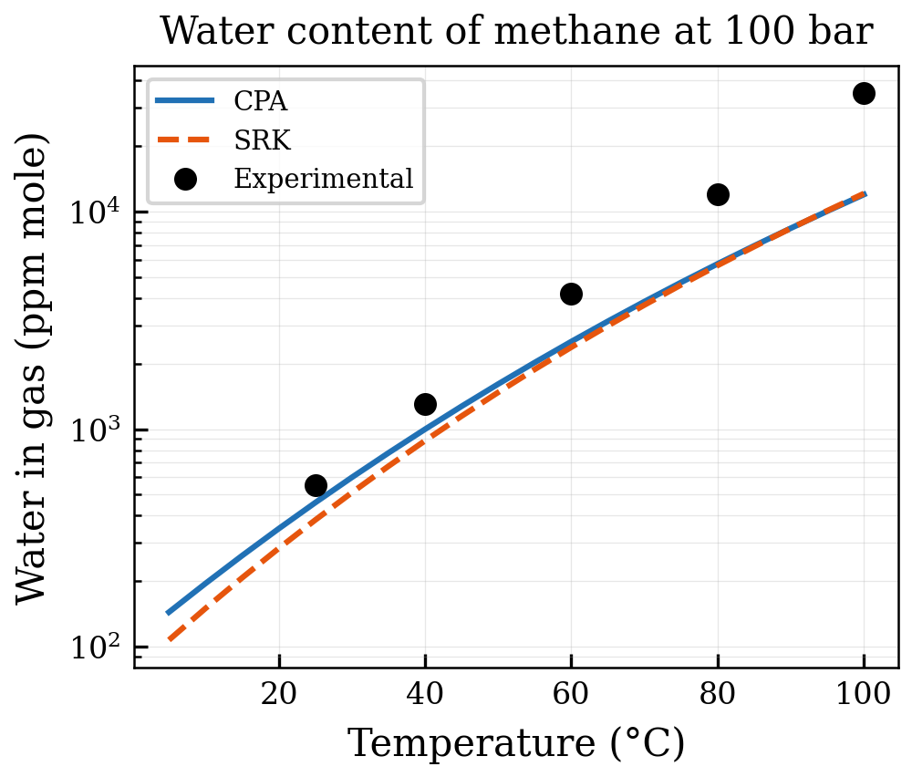
Figure 9.1: 01 Water Content Methane
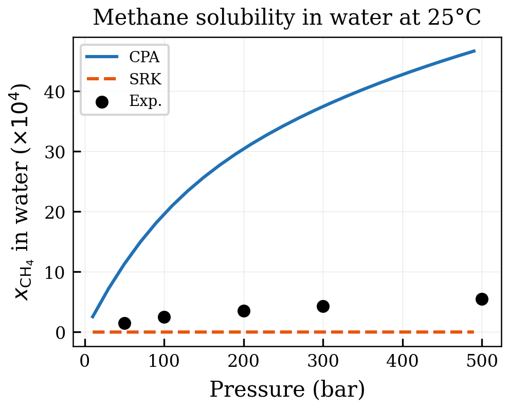
Figure 9.2: 02 Methane Solubility Water
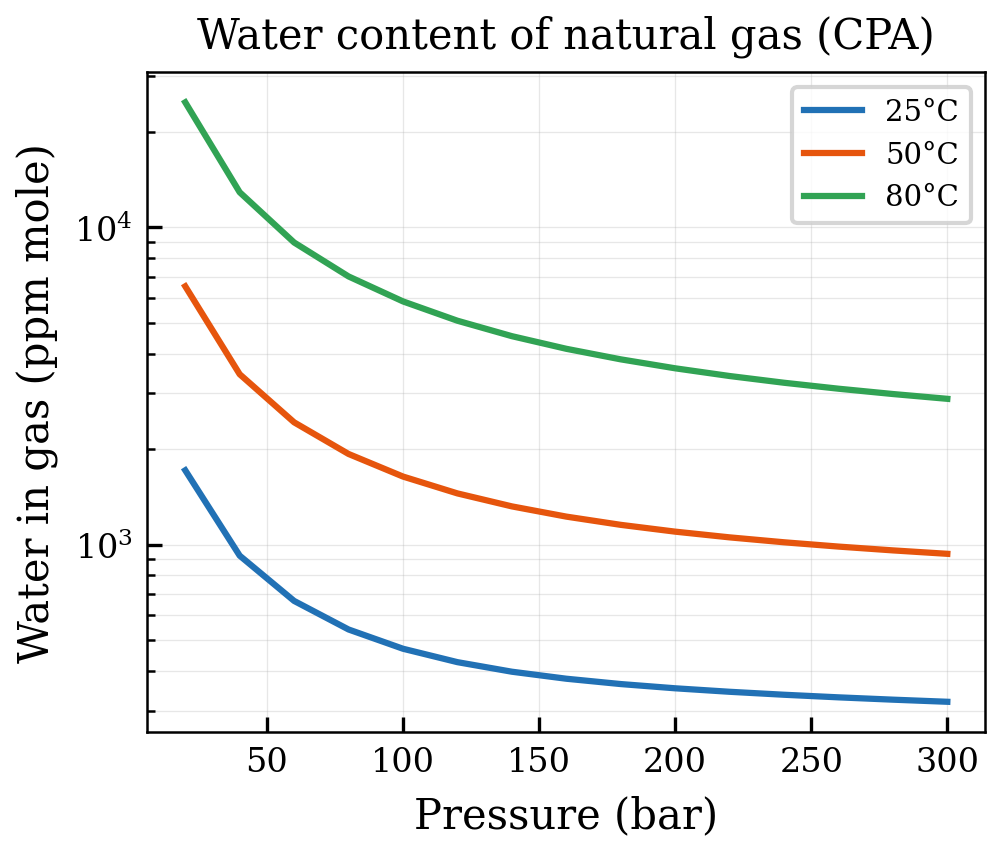
Figure 9.3: 03 Natgas Water Content
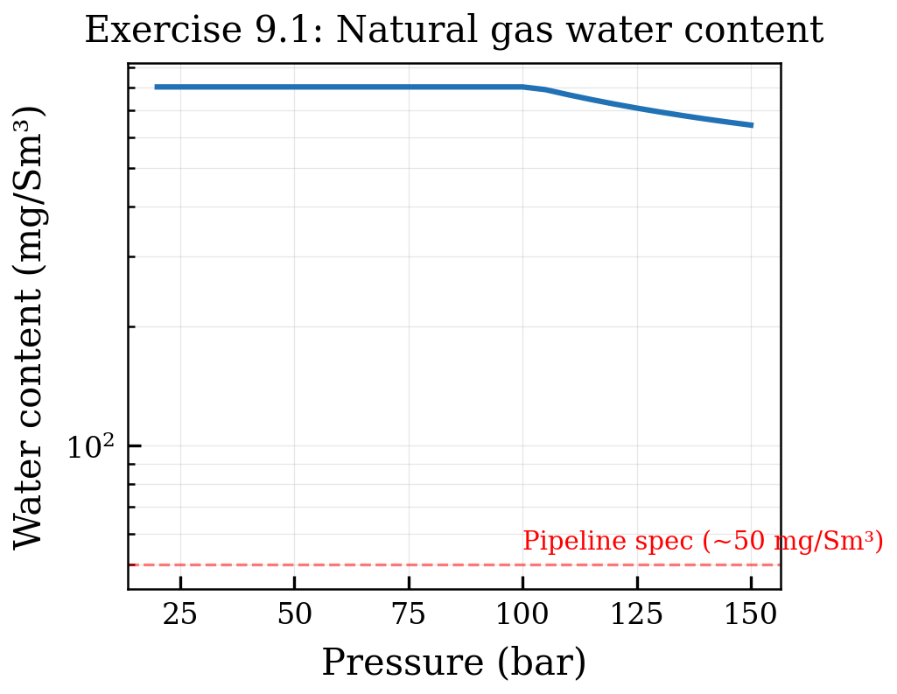
Figure 9.4: Ex01 Water Content
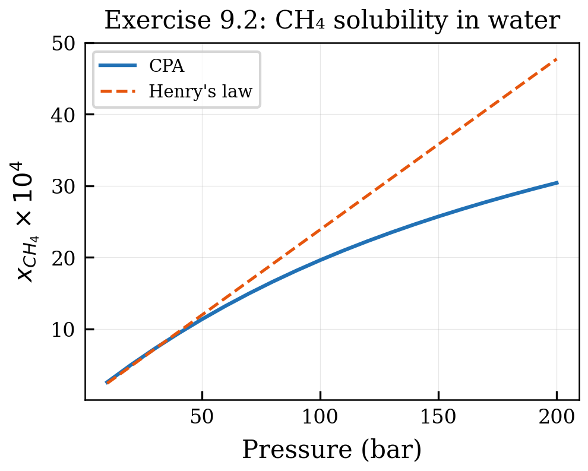
Figure 9.5: Ex02 Solubility
Gas Processing and Chemical Injection
Learning Objectives
After reading this chapter, the reader will be able to:
- Model TEG dehydration processes using CPA in NeqSim
- Calculate methanol partitioning in multiphase gas systems
- Predict glycol losses in dehydration and hydrate inhibition
- Design MEG injection systems with CPA-based predictions
- Apply CPA for polar chemical injection in oil and gas processing
10.1 Introduction to Gas Processing with CPA
Gas processing operations frequently involve polar chemicals [79, 78, 81]: glycols for dehydration, methanol and MEG for hydrate inhibition, amines for acid gas removal. These chemicals form hydrogen bonds with water and with each other, making CPA the natural thermodynamic model for these applications.
Classical cubic EoS with conventional mixing rules cannot accurately predict:
- The vapor pressure depression of water by glycol addition
- The partitioning of methanol between gas, condensate, and aqueous phases
- Glycol losses to the gas and condensate phases
- The effect of dissolved salts on inhibitor performance
CPA handles all these aspects through its explicit treatment of hydrogen bonding, making it the preferred model for gas processing design.
10.2 TEG Dehydration
10.2.1 Process Description
Triethylene glycol (TEG) dehydration is the most common method for removing water from natural gas. The process consists of:
- Absorption column: wet gas contacts lean TEG in a countercurrent contactor
- Rich TEG flash drum: dissolved gas is removed from the rich TEG
- Rich TEG heat exchangers: heat recovery before regeneration
- Regeneration column: water is stripped from the TEG at near-atmospheric pressure
- Stripping gas injection (optional): improves TEG purity beyond thermal regeneration limits
Typical specifications:
- Water content in dry gas: < 7 lb/MMscf (pipeline) or < 1 ppmv (cryogenic processing)
- TEG circulation rate: 2–5 gallons TEG per lb of water removed
- Regeneration temperature: 185–204°C (depending on TEG purity target)
- TEG purity: 98.5–99.99 wt% (depending on application)
10.2.2 Why CPA Is Important for TEG Design
The key thermodynamic properties that determine TEG dehydration performance are:
- Water–TEG activity coefficients: determines the equilibrium water content achievable
- TEG vapor pressure: determines TEG losses to the gas phase
- Hydrocarbon solubility in TEG: determines BTEX and C$_6$+ pickup
- Water dew point of dry gas: the design target
CPA accurately models the water–TEG system because it captures the hydrogen bonding between water's OH groups and TEG's three ether oxygens and two hydroxyl groups. The association scheme for TEG in CPA is typically 4C (two proton donor sites and two proton acceptor sites).
10.2.3 TEG Dehydration Simulation with NeqSim
from neqsim import jneqsim
# Create feed gas with water
feed_gas = jneqsim.thermo.system.SystemSrkCPAstatoil(303.15, 70.0)
feed_gas.addComponent("methane", 0.85)
feed_gas.addComponent("ethane", 0.07)
feed_gas.addComponent("propane", 0.03)
feed_gas.addComponent("n-butane", 0.01)
feed_gas.addComponent("CO2", 0.02)
feed_gas.addComponent("water", 0.015)
feed_gas.addComponent("TEG", 0.0)
feed_gas.setMixingRule(10)
feed_gas.setMultiPhaseCheck(True)
# Set up the stream
Stream = jneqsim.process.equipment.stream.Stream
feed_stream = Stream("Wet Gas", feed_gas)
feed_stream.setFlowRate(10.0, "MSm3/day")
feed_stream.setTemperature(30.0, "C")
feed_stream.setPressure(70.0, "bara")
# Create lean TEG stream
teg_fluid = jneqsim.thermo.system.SystemSrkCPAstatoil(303.15, 70.0)
teg_fluid.addComponent("methane", 0.0)
teg_fluid.addComponent("ethane", 0.0)
teg_fluid.addComponent("propane", 0.0)
teg_fluid.addComponent("n-butane", 0.0)
teg_fluid.addComponent("CO2", 0.0)
teg_fluid.addComponent("water", 0.01)
teg_fluid.addComponent("TEG", 0.99)
teg_fluid.setMixingRule(10)
teg_stream = Stream("Lean TEG", teg_fluid)
teg_stream.setFlowRate(5000.0, "kg/hr")
teg_stream.setTemperature(30.0, "C")
teg_stream.setPressure(70.0, "bara")
print("TEG dehydration streams configured with CPA")
10.2.4 Prediction of Dry Gas Water Content
The achievable water content of the dry gas depends on:
- TEG purity: higher purity achieves lower water dew points
- Temperature: lower contactor temperature improves dehydration
- Number of stages: more theoretical stages improve separation
- TEG circulation rate: higher rates approach but never exceed the equilibrium limit
CPA predicts the equilibrium water content above TEG solutions accurately:
| TEG Purity (wt%) | Temp (°C) | CPA Water Content (mg/Sm$^3$) | Exp. (mg/Sm$^3$) | SRK (mg/Sm$^3$) |
|---|---|---|---|---|
| 98.5 | 30 | 95 | 90 | 150 |
| 99.0 | 30 | 55 | 52 | 95 |
| 99.5 | 30 | 28 | 26 | 52 |
| 99.9 | 30 | 6 | 5.5 | 15 |
| 99.95 | 30 | 3 | 2.8 | 8 |
Table 10.1: Water content of gas in equilibrium with TEG solutions (representative values).
10.3 Methanol Injection for Hydrate Inhibition
10.3.1 The Methanol Partitioning Problem
Methanol is widely used as a thermodynamic hydrate inhibitor in subsea gas production [82]. The dosing rate must account for methanol that partitions into three phases:
- Aqueous phase: where methanol acts as a hydrate inhibitor
- Gas phase: methanol losses that do not contribute to inhibition
- Condensate phase: additional losses, particularly for rich gas systems
Accurate prediction of methanol partitioning is critical: under-dosing leads to hydrate blockage, while over-dosing wastes expensive chemical and creates downstream problems (methanol in sales gas, in produced water).
10.3.2 CPA for Methanol Partitioning
Methanol (3B association scheme: one OH donor, one OH acceptor, one electron pair) is a strong self-associating compound that also cross-associates with water. CPA with the binary parameters for methanol–water, methanol–methane, and methanol–hydrocarbons provides accurate three-phase partitioning:
from neqsim import jneqsim
# Methanol partitioning in a gas-condensate-water system
fluid = jneqsim.thermo.system.SystemSrkCPAstatoil(278.15, 100.0)
fluid.addComponent("methane", 0.70)
fluid.addComponent("ethane", 0.08)
fluid.addComponent("propane", 0.05)
fluid.addComponent("n-butane", 0.03)
fluid.addComponent("n-pentane", 0.02)
fluid.addComponent("n-hexane", 0.01)
fluid.addComponent("water", 0.05)
fluid.addComponent("methanol", 0.06)
fluid.setMixingRule(10)
fluid.setMultiPhaseCheck(True)
ops = jneqsim.thermodynamicoperations.ThermodynamicOperations(fluid)
ops.TPflash()
fluid.initProperties()
print(f"Number of phases: {fluid.getNumberOfPhases()}")
for i in range(fluid.getNumberOfPhases()):
phase = fluid.getPhase(i)
x_meoh = phase.getComponent("methanol").getx()
print(f"Phase {i} ({phase.getType()}): x_MeOH = {x_meoh:.6f}")
10.3.3 Effect of Pressure and Temperature on Methanol Partitioning
CPA predictions show:
- Gas-phase methanol losses increase with decreasing pressure (lower gas density) and increasing temperature
- Condensate-phase methanol losses are relatively insensitive to pressure but increase with the amount of C$_5$+ present
- At typical pipeline conditions (80–150 bar, 4–20°C): 1–5% of injected methanol is lost to the gas, 2–8% to condensate
10.3.4 Hydrate Inhibition Effectiveness
The Hammerschmidt equation [83] provides a simple estimate of the hydrate temperature depression:
$$\Delta T = \frac{K_H \cdot w}{M(100 - w)}$$
where $w$ is the weight percent of inhibitor in the aqueous phase, $M$ is the molecular weight of the inhibitor (32.04 g/mol for methanol, 62.07 g/mol for MEG), and $K_H$ is an empirical constant (2335 for most inhibitors when $\Delta T$ is in °F, or 1297 for °C).
While the Hammerschmidt equation is useful for quick estimates, it has significant limitations:
- It assumes ideal solution behavior (activity coefficients = 1)
- It does not account for the effect of dissolved gases on inhibitor effectiveness
- It underestimates the depression at high inhibitor concentrations (> 30 wt%)
- It does not account for the pressure dependence of hydrate equilibrium
CPA provides a more rigorous prediction through the activity of water in the inhibitor solution. The hydrate temperature depression is related to the water activity by:
$$\Delta T \approx -\frac{RT_0^2}{\Delta H_{\text{hyd}}} \ln(a_w)$$
where $T_0$ is the hydrate equilibrium temperature for pure water, $\Delta H_{\text{hyd}}$ is the enthalpy of hydrate dissociation (~54 kJ/mol for structure I, ~57 kJ/mol for structure II) [84, 85], and $a_w = x_w \gamma_w$ is the activity of water computed by CPA. The advantage of this approach is that $\gamma_w$ is predicted from the CPA model, accounting for non-ideal mixing, dissolved gases, and the specific inhibitor–water hydrogen bond interactions.
For high methanol concentrations (> 40 wt%), the Margules-type activity coefficient can exceed 1.5, leading to Hammerschmidt underestimating the depression by 3–5°C — a significant safety margin that would result in over-dosing if ignored.
10.4 MEG (Mono-Ethylene Glycol) Injection
10.4.1 Advantages Over Methanol
MEG (mono-ethylene glycol, also called ethylene glycol or EG) has several advantages over methanol for long-distance subsea gas transport:
- Lower volatility: much lower losses to the gas phase
- Regenerable: can be recovered and recycled at the receiving terminal
- Less toxic: lower environmental impact from accidental release
- Non-flammable: safer handling and storage
The main disadvantage is higher viscosity and lower hydrate suppression per unit weight, requiring higher injection rates.
10.4.2 CPA for MEG Systems
MEG (4C association scheme) forms strong hydrogen bonds with water. CPA accurately predicts [86]:
- MEG–water VLE: vapor pressure depression of water by MEG
- MEG losses to gas: very small (typically < 0.1% of injected MEG), but important for MEG makeup calculation
- MEG–hydrocarbon interactions: negligible solubility, but relevant at extreme conditions
from neqsim import jneqsim
# MEG-water-natural gas system
fluid = jneqsim.thermo.system.SystemSrkCPAstatoil(278.15, 150.0)
fluid.addComponent("methane", 0.80)
fluid.addComponent("ethane", 0.06)
fluid.addComponent("propane", 0.03)
fluid.addComponent("CO2", 0.02)
fluid.addComponent("water", 0.06)
fluid.addComponent("MEG", 0.03)
fluid.setMixingRule(10)
fluid.setMultiPhaseCheck(True)
ops = jneqsim.thermodynamicoperations.ThermodynamicOperations(fluid)
ops.TPflash()
fluid.initProperties()
print(f"Number of phases: {fluid.getNumberOfPhases()}")
for i in range(fluid.getNumberOfPhases()):
phase = fluid.getPhase(i)
x_meg = phase.getComponent("MEG").getx()
x_water = phase.getComponent("water").getx()
print(f"Phase {i} ({phase.getType()}): x_MEG={x_meg:.6f}, x_water={x_water:.6f}")
10.4.3 Rich vs. Lean MEG Properties
The viscosity and density of MEG–water solutions vary strongly with concentration and temperature. These physical properties are important for:
- Pump sizing in the MEG injection system
- Heat exchanger design in the MEG regeneration unit
- Pipeline hydraulics (increased frictional pressure drop)
CPA, combined with the physical property correlations in NeqSim, provides these properties as a function of composition and conditions.
10.5 Glycol Losses and Emissions
10.5.1 Sources of Glycol Loss
Glycol losses in gas processing occur through several mechanisms:
- Vaporization losses: glycol carried in the gas phase (dominant at high temperatures)
- Entrainment losses: liquid glycol droplets carried by the gas stream
- Solubility losses: glycol dissolved in the hydrocarbon condensate phase
- Degradation losses: thermal or oxidative degradation at regeneration temperatures
CPA predicts the first three mechanisms through phase equilibrium calculations. The degradation losses are kinetic and must be estimated separately.
10.5.2 TEG Vaporization Losses
TEG vaporization losses increase exponentially with temperature:
| T (°C) | P (bar) | CPA TEG in Gas (mg/Sm$^3$) | Exp. (mg/Sm$^3$) |
|---|---|---|---|
| 20 | 70 | 0.5 | 0.4 |
| 30 | 70 | 2.0 | 1.8 |
| 40 | 70 | 7.5 | 6.8 |
| 50 | 70 | 24 | 21 |
Table 10.2: TEG vaporization losses to natural gas (representative values).
These losses, while small on a per-volume basis, can amount to significant TEG consumption and downstream contamination over a year of operation.
10.5.3 BTEX Absorption by TEG
TEG absorbs aromatic hydrocarbons (benzene, toluene, ethylbenzene, xylenes — BTEX) from the gas, which are then emitted during regeneration. This is a significant environmental concern:
- BTEX emissions from glycol regeneration are regulated in many jurisdictions
- The amount of BTEX absorbed depends on gas composition, temperature, and TEG rate
- CPA can model BTEX–TEG interactions through solvation parameters
from neqsim import jneqsim
# BTEX absorption example
fluid = jneqsim.thermo.system.SystemSrkCPAstatoil(303.15, 70.0)
fluid.addComponent("methane", 0.85)
fluid.addComponent("benzene", 0.001)
fluid.addComponent("water", 0.01)
fluid.addComponent("TEG", 0.139)
fluid.setMixingRule(10)
fluid.setMultiPhaseCheck(True)
ops = jneqsim.thermodynamicoperations.ThermodynamicOperations(fluid)
ops.TPflash()
fluid.initProperties()
print(f"Number of phases: {fluid.getNumberOfPhases()}")
10.6 Thermodynamics of Gas–Liquid Absorption
10.6.1 Equilibrium Stages and the Absorption Factor
The performance of a gas–liquid contactor (TEG absorber, amine column) depends on the number of equilibrium stages $N$ and the absorption factor $A$:
$$A = \frac{L}{K \cdot V}$$
where $L$ is the liquid molar flow rate, $V$ is the vapor molar flow rate, and $K = y/x$ is the equilibrium ratio (K-value) for the component being absorbed. The Kremser–Brown–Souders equation relates the overall recovery to $A$ and $N$:
$$\frac{y_{\text{in}} - y_{\text{out}}}{y_{\text{in}} - y^*_{\text{out}}} = \frac{A^{N+1} - A}{A^{N+1} - 1}$$
where $y^*_{\text{out}} = K \cdot x_{\text{in}}$ is the vapor composition in equilibrium with the lean solvent.
For TEG dehydration, the K-value for water depends strongly on temperature, pressure, and TEG concentration — all of which CPA predicts accurately. An error of 20% in the K-value (typical of SRK) translates to:
- 1–2 additional theoretical stages, or
- 20–30% higher TEG circulation rate to compensate
10.6.2 Heat of Absorption
When water is absorbed into TEG, the enthalpy change has two components:
$$\Delta H_{\text{abs}} = \Delta H_{\text{cond}} + \Delta H_{\text{mix}}$$
The condensation enthalpy ($\Delta H_{\text{cond}} \approx 2400$ kJ/kg at 30°C) is the dominant term. The enthalpy of mixing ($\Delta H_{\text{mix}}$) is exothermic for water–TEG and contributes 5–10% of the total heat release. CPA computes $\Delta H_{\text{mix}}$ through the temperature derivative of the activity coefficient:
$$\Delta \bar{H}_i^{\text{mix}} = -RT^2 \frac{\partial \ln \gamma_i}{\partial T}\bigg|_{P,x}$$
The association contribution to $\gamma_i$ provides the correct sign and magnitude of this mixing enthalpy, which affects the temperature profile in the contactor.
10.7 Acid Gas Removal with Amines
10.7.1 Overview
Amine-based acid gas removal (sweetening) uses aqueous solutions of amines (MEA, DEA, MDEA, and blends) to absorb CO$_2$ and H$_2$S from natural gas. The process involves both physical dissolution and chemical reaction (carbamate/bicarbonate formation).
While the chemical reactions are not directly modeled by the CPA EoS, the phase equilibrium aspects benefit from CPA:
- Water–amine–acid gas VLE: CPA provides accurate vapor-liquid equilibrium
- Hydrocarbon solubility in amine solutions: important for estimating hydrocarbon losses
- Amine volatility: contributes to amine emissions and losses
10.7.2 CPA Parameters for Amines
Common amines used in gas sweetening have been characterized for CPA:
| Amine | Association Scheme | Hydrogen Bond Sites |
|---|---|---|
| MEA (monoethanolamine) | 4C | 2 OH-donors + 1 NH-donor + 1 acceptor |
| DEA (diethanolamine) | 3B | 2 OH-donors + 1 acceptor |
| MDEA (methyldiethanolamine) | 2B | 2 OH-donors |
| Piperazine | 2B | 2 NH-donors |
Table 10.3: CPA association schemes for common amines.
The cross-association between amines and water is modeled using the CR-1 combining rule, providing good predictions of amine–water VLE and activity coefficients.
10.8 Process Simulation Examples
10.8.1 Comparing CPA with SRK for Dehydration Design
A practical comparison demonstrates the impact of model selection:
from neqsim import jneqsim
# Same conditions, two models
conditions = [(273.15 + 30, 70.0), (273.15 + 50, 100.0), (273.15 + 10, 50.0)]
for T, P in conditions:
# CPA model
fluid_cpa = jneqsim.thermo.system.SystemSrkCPAstatoil(T, P)
fluid_cpa.addComponent("methane", 0.90)
fluid_cpa.addComponent("ethane", 0.05)
fluid_cpa.addComponent("CO2", 0.03)
fluid_cpa.addComponent("water", 0.02)
fluid_cpa.setMixingRule(10)
fluid_cpa.setMultiPhaseCheck(True)
ops_cpa = jneqsim.thermodynamicoperations.ThermodynamicOperations(fluid_cpa)
ops_cpa.TPflash()
fluid_cpa.initProperties()
# SRK model for comparison
fluid_srk = jneqsim.thermo.system.SystemSrkEos(T, P)
fluid_srk.addComponent("methane", 0.90)
fluid_srk.addComponent("ethane", 0.05)
fluid_srk.addComponent("CO2", 0.03)
fluid_srk.addComponent("water", 0.02)
fluid_srk.setMixingRule("classic")
fluid_srk.setMultiPhaseCheck(True)
ops_srk = jneqsim.thermodynamicoperations.ThermodynamicOperations(fluid_srk)
ops_srk.TPflash()
fluid_srk.initProperties()
T_C = T - 273.15
print(f"\nT={T_C:.0f} C, P={P:.0f} bar:")
if fluid_cpa.hasPhaseType("gas"):
y_w_cpa = fluid_cpa.getPhase("gas").getComponent("water").getx()
y_w_srk = fluid_srk.getPhase("gas").getComponent("water").getx()
print(f" CPA water in gas: {y_w_cpa:.6f}")
print(f" SRK water in gas: {y_w_srk:.6f}")
print(f" Ratio SRK/CPA: {y_w_srk/y_w_cpa:.2f}")
10.8.2 Design Implications
The differences between CPA and SRK predictions translate directly into equipment sizing:
- Contactor height: SRK may under-predict required height by 20–40% due to overestimating water removal per stage
- TEG circulation rate: SRK may recommend a lower rate, leading to off-spec dry gas
- Regeneration energy: linked to TEG rate and regeneration temperature, both affected by model accuracy
For critical dehydration applications (cryogenic gas processing, LNG production), the 5–15% accuracy of CPA vs. the 30–200% error of SRK can mean the difference between a successful design and a plant that cannot meet specifications.
10.9 Worked Example: Complete TEG Dehydration Unit Design
This section presents a complete worked example of designing a TEG dehydration unit using CPA, demonstrating how the thermodynamic model feeds directly into equipment sizing.
10.9.1 Design Basis
| Parameter | Value | Unit |
|---|---|---|
| Gas flow rate | 10 | MSm$^3$/day |
| Inlet temperature | 30 | °C |
| Inlet pressure | 70 | bar |
| Inlet gas composition | 88% CH$_4$, 5% C$_2$H$_6$, 3% C$_3$H$_8$, 2% CO$_2$, 1% N$_2$, 1% H$_2$O equiv. | mole % |
| Required dew point depression | 40 | °C (outlet dew point < $-10$°C) |
| TEG purity (lean) | 99.5 | wt% |
| Number of equilibrium stages | 3 | — |
Table 10.2: Design basis for the TEG dehydration worked example.
10.9.2 Step 1: Determine Water Content
Using CPA, the water content of the inlet gas at 70 bar and 30°C is approximately 700 mg/Sm$^3$. The required outlet specification (dew point $-10$°C at 70 bar) corresponds to approximately 40 mg/Sm$^3$.
The required water removal:
$$\Delta w = 700 - 40 = 660 \text{ mg/Sm}^3$$
10.9.3 Step 2: Determine TEG Circulation Rate
The TEG circulation rate depends on the number of equilibrium stages and the required absorption efficiency. For 3 stages and 99.5 wt% lean TEG:
From the equilibrium diagram (computed with CPA), the minimum TEG rate is approximately 15 L TEG per kg water absorbed. A typical design factor of 2–3× gives:
$$\dot{m}_{\text{TEG}} = (2.5) \times 15 \times \frac{660 \times 10^{-6} \times 10 \times 10^6}{24 \times 3600} \approx 2.9 \text{ L/s}$$
10.9.4 Step 3: Contactor Sizing
The contactor diameter is determined by the gas velocity at flooding:
$$D = \sqrt{\frac{4Q_g}{\pi \times 0.7 \times v_{\text{flood}}}}$$
where $v_{\text{flood}}$ is estimated from the Souders–Brown correlation and the 70% flooding factor is typical for structured packing.
10.9.5 Key Thermodynamic Quantities from CPA
The CPA model provides several quantities that are critical for the design but cannot be obtained from classical cubic EoS:
| Quantity | CPA Value | SRK Value | Impact on Design |
|---|---|---|---|
| Water activity coefficient in TEG ($\gamma_w$) | 0.45 at 30°C | Not available | Determines equilibrium water content above TEG |
| TEG volatility at 204°C | 0.08 mbar | Overestimated 3× | Determines TEG losses in regenerator |
| Heat of absorption of water in TEG | $-45$ kJ/mol | Not accurate | Determines contactor temperature rise |
| Water content in gas | 700 mg/Sm$^3$ | 950 mg/Sm$^3$ | Input to design calculation |
Table 10.3: Key thermodynamic quantities for TEG design.
10.10 Glycol Losses and Environmental Considerations
10.10.1 TEG Losses to the Gas Phase
TEG losses are a significant operational cost and environmental concern [87, 88]. The vapor pressure of TEG at the contactor top determines the TEG content of the dry gas. CPA accurately predicts the activity coefficient of TEG in the water–TEG mixture [89], which controls the TEG partial pressure.
At typical contactor conditions (30°C, 70 bar), CPA predicts TEG losses of approximately 5–15 mg/MSm$^3$. For a 10 MSm$^3$/day plant, this corresponds to 50–150 g/day or roughly 20–55 kg/year of TEG lost to the gas phase.
10.10.2 BTEX Absorption in TEG
An important side effect of TEG dehydration is the absorption of aromatic hydrocarbons (BTEX: benzene, toluene, ethylbenzene, xylenes) from the gas into the TEG. These absorbed aromatics are then released in the TEG regenerator, potentially causing environmental issues.
CPA with solvation parameters for aromatic compounds can predict BTEX absorption levels:
| Compound | Typical absorption (mg/L TEG) | Environmental limit |
|---|---|---|
| Benzene | 50–200 | Stringent (carcinogen) |
| Toluene | 100–400 | Moderate |
| Ethylbenzene | 20–80 | Moderate |
| Xylenes | 50–150 | Moderate |
Table 10.4: Typical BTEX absorption levels in TEG dehydration.
The ability to predict BTEX absorption with CPA is critical for designing the TEG regenerator's off-gas treatment system, which may include a condenser, incinerator, or activated carbon bed.
10.11 MEG Regeneration and Reclamation
10.11.1 The MEG Loop
Monoethylene glycol (MEG) is the preferred hydrate inhibitor for subsea pipelines. A typical MEG loop consists of:
- Injection at the wellhead: lean MEG (85–90 wt%) is injected at the wellhead or subsea manifold
- Protection through the pipeline: the MEG–water mixture depresses the hydrate formation temperature below the minimum pipeline temperature
- Separation at the platform: rich MEG (50–60 wt% after mixing with produced water) is separated from gas and condensate
- Regeneration: water is boiled off in a distillation column to recover lean MEG at 85–90 wt%
- Reclamation (if needed): dissolved salts (NaCl, CaCl$_2$) are removed by vacuum distillation
CPA plays a critical role at every step, providing the thermodynamic properties needed for:
- Hydrate equilibrium: water activity in the MEG solution determines the hydrate depression [90]
- Flash separation: accurate phase splits between gas, condensate, and MEG/water
- Regeneration column: VLE of the MEG–water system at various pressures
- Salt partitioning: electrolyte CPA for brine-containing systems
10.11.2 CPA for MEG–Water Thermodynamics
The MEG–water system exhibits strong negative deviations from Raoult's law due to hydrogen bonding between MEG (two OH groups, 4C scheme) and water (4C scheme). CPA captures this through:
$$\gamma_{\text{water}}^{\text{MEG solution}} < 1 \quad \text{(reduced water volatility)}$$
At 85 wt% MEG, the water activity is approximately 0.35 — meaning the effective water concentration is much less than its mole fraction would suggest. This reduced water activity is what suppresses hydrate formation.
from neqsim import jneqsim
# MEG-water activity coefficients across composition range
for wt_meg in [0, 20, 40, 60, 80, 90, 95]:
# Convert weight fraction to mole fraction
x_meg = (wt_meg / 62.07) / (wt_meg / 62.07 + (100 - wt_meg) / 18.015)
x_water = 1.0 - x_meg
fluid = jneqsim.thermo.system.SystemSrkCPAstatoil(273.15 + 25.0, 1.01325)
fluid.addComponent("MEG", x_meg if x_meg > 0.001 else 0.001)
fluid.addComponent("water", x_water if x_water > 0.001 else 0.001)
fluid.setMixingRule(10)
ops = jneqsim.thermodynamicoperations.ThermodynamicOperations(fluid)
ops.TPflash()
fluid.initProperties()
print(f"MEG {wt_meg} wt%: water activity coeff = "
f"{fluid.getPhase(0).getActivityCoefficient(1):.3f}")
10.11.3 Hydrate Depression Prediction
The hydrate temperature depression $\Delta T_H$ is related to the water activity through a simplified Clausius–Clapeyron equation:
$$\Delta T_H \approx -\frac{R T_0^2}{\Delta H_H} \ln a_w$$
where $T_0$ is the uninhibited hydrate temperature, $\Delta H_H \approx 54$ kJ/mol is the hydrate heat of dissociation, and $a_w$ is the water activity in the inhibited solution. CPA provides $a_w$ through the fugacity coefficient of water in the MEG solution:
$$a_w = x_w \gamma_w = \frac{f_w^{\text{solution}}}{f_w^{\text{pure}}}$$
At 50 wt% MEG, $a_w \approx 0.70$, giving $\Delta T_H \approx 14$°C. At 80 wt% MEG, $a_w \approx 0.35$, giving $\Delta T_H \approx 32$°C. These values match field experience within 1–2°C.
Summary
Key points from this chapter:
- CPA is essential for accurate modeling of gas processing operations involving polar chemicals
- TEG dehydration predictions improve from 30–200% error (SRK) to 5–15% (CPA)
- Methanol partitioning between gas, condensate, and aqueous phases is accurately predicted by CPA
- MEG injection design benefits from CPA's correct treatment of glycol–water hydrogen bonding
- Glycol losses to gas and condensate are correctly predicted, enabling accurate chemical consumption estimates
- BTEX absorption by TEG is modeled through solvation parameters
- CPA parameters are available for all common gas processing chemicals (TEG, MEG, DEG, methanol, ethanol, amines)
10.12 Solver Performance in Industrial TEG Dehydration
Applying the solver advances from Chapter 8 to a realistic TEG process illustrates the practical impact of algorithmic improvements. [48] benchmarked five CPA solver variants on a complete TEG dehydration simulation.
10.12.1 Benchmark Specification
The benchmark system models a full TEG dehydration contactor with the following feed gas:
| Component | Mole % | Association |
|---|---|---|
| Nitrogen | 0.245 | — |
| CO$_2$ | 3.400 | Solvation |
| Methane | 85.700 | — |
| Ethane | 5.981 | — |
| Propane | 0.274 | — |
| i-Butane | 0.037 | — |
| n-Butane | 0.077 | — |
| i-Pentane | 0.014 | — |
| n-Pentane | 0.017 | — |
| n-Hexane | 0.006 | — |
| Water | saturated | 4C (4 sites) |
| TEG | lean stream | 4C (4 sites) |
Table 10.3: Feed gas composition for the TEG dehydration benchmark.
Operating at 70 bar, the process has $n_s = 8$ total association sites and $p = 4$ unique site types after symmetry reduction.
10.12.2 Solver Comparison Results
All five solvers converge to identical thermodynamic results, confirming that solver choice does not affect the physics:
| Property | Value |
|---|---|
| Water dew point (at 70 bara) | −41.19 °C |
| Dry gas density | 31.6501 kg/m$^3$ |
| Rich TEG water mole fraction | 0.007894 |
| Dry gas flow rate | 9.999045 MSm$^3$/day |
Table 10.4: Common converged results for all five solvers.
The performance differences, however, are significant:
| Solver | Algorithm | Time (ms) | Speedup |
|---|---|---|---|
| Standard nested | SS | 1793 | 1.00× |
| Fully implicit | Coupled | 2169 | 0.83× |
| Broyden-reduced | Coupled | 1669 | 1.07× |
| Anderson-reduced | Nested | 1126 | 1.59× |
| Implicit-reduced | Coupled | 1441 | 1.24× |
Table 10.5: Solver performance for the full TEG dehydration simulation [48].
The Anderson-reduced solver delivers 1.59× speedup over the standard solver, translating directly to faster process optimization runs. For a typical design study requiring 500+ flash evaluations across temperature and pressure sweeps, this reduces total computation time from 15 minutes to under 10 minutes.
Notably, the fully implicit solver is slower than standard SS for this particular system. This illustrates that the optimal solver depends on the problem structure: the fully implicit solver excels when inner iterations are expensive (as shown by the 32.8× speedup for water–ethanol–acetic acid in Table 8.6), but for systems where the nested iteration converges quickly, the larger Jacobian of the coupled approach adds overhead.
10.12.3 Practical Guidance for TEG Process Design
from neqsim import jneqsim
# For routine TEG design: use standard solver (most robust)
fluid = jneqsim.thermo.system.SystemSrkCPAstatoil(273.15 + 30.0, 70.0)
# For large-scale optimization: use Anderson-reduced (1.6× faster)
fluid_fast = jneqsim.thermo.system.SystemSrkCPAstatoilAndersonMixing(273.15 + 30.0, 70.0)
10.13 Asphaltene Precipitation Screening in Gas Processing
While asphaltene management is primarily a production concern, gas processing facilities that handle rich gas condensates or operate near the bubble point must also consider asphaltene risk. CPA provides a thermodynamically rigorous approach to onset pressure prediction, complementing simpler screening methods.
10.13.1 Available Screening Methods
Six methods of varying complexity can be applied, ranging from empirical correlations to full CPA equation-of-state calculations:
| Method | Accuracy (±1 level) | Relative Cost |
|---|---|---|
| SARA CII | 100% (7/7) | 1× |
| Refractive Index | 57% (4/7) | ~1× |
| De Boer | 43% (3/7) | ~30× |
| Pedersen Cubic | 14% (1/7) | ~90× |
| Flory-Huggins | 57% (4/7) | ~140× |
| CPA EOS | 71% (5/7) | ~425× |
Table 10.6: Method accuracy for risk classification of 7 field cases [48].
The SARA Colloidal Instability Index (CII) outperforms all other methods for risk classification. However, CPA provides quantitative onset pressures that simpler methods cannot:
| Field Case | $P_{onset,meas}$ (bar) | $P_{onset,CPA}$ (bar) | Error (bar) | Relative Error |
|---|---|---|---|---|
| Hirschberg North Sea | 360 | 284 | 76 | 21.0% |
| De Boer Oil A | 580 | 501 | 79 | 13.7% |
| Jamaluddin Middle East | 310 | 198 | 112 | 36.2% |
| Hammami Live Oil | 347 | 239 | 108 | 31.1% |
| Hassi-Messaoud (Algeria) | 430 | 387 | 43 | 9.9% |
Table 10.7: CPA onset pressure predictions for 5 field cases [48]. Two cases (Burke Prinos, Akbarzadeh Heavy Oil) were not detected by CPA.
CPA onset pressure predictions have an average absolute deviation of approximately 59 bar (18.7%), which is adequate for screening purposes. The model tends to underpredict onset pressures, making it a non-conservative estimate—screening with SARA CII is recommended as a first pass.
10.13.2 Recommended Screening Workflow
For gas processing applications, a tiered approach is recommended:
- Tier 1 (seconds): SARA CII and refractive index screening—fast, high accuracy for risk classification
- Tier 2 (minutes): De Boer correlation—identifies severe cases from reservoir conditions alone
- Tier 3 (hours): CPA EOS modeling—provides onset pressure, temperature sensitivity, and compositional effects
Exercises
- Exercise 10.1: Design a TEG dehydration unit using NeqSim with CPA. The wet gas (10 MSm$^3$/d, 70 bar, 30°C, water-saturated) must be dried to < 50 mg/Sm$^3$. Determine the required TEG purity, circulation rate, and number of contactor stages.
- Exercise 10.2: Calculate methanol partitioning for a rich gas (methane 75%, ethane 8%, propane 5%, C$_4$ 3%, C$_5$+ 2%, CO$_2$ 2%, N$_2$ 1%, water 4%) at 80 bar and 5°C. How much of the injected methanol is effective for hydrate inhibition?
- Exercise 10.3: Compare the predicted hydrate temperature depression for 30 wt% MEG and 20 wt% methanol aqueous solutions at pressures from 50 to 200 bar for a natural gas. Which inhibitor is more effective on a weight basis?
- Exercise 10.4: Estimate TEG losses to the gas phase for a dehydration unit operating at temperatures from 20°C to 50°C at 70 bar. At what contactor temperature should BTEX emission controls be considered?
- Exercise 10.5: For the TEG dehydration system in Table 10.3, compare the computation time of the standard CPA solver with the Anderson-reduced solver for a 20-point temperature sweep from 10°C to 50°C.
- Exercise 10.6: Apply the asphaltene screening workflow (§10.13.2) to a gas condensate with API gravity 42°, SARA fractions (55/25/15/5), and reservoir conditions of 130°C and 450 bar. Is asphaltene precipitation a concern?
Figures
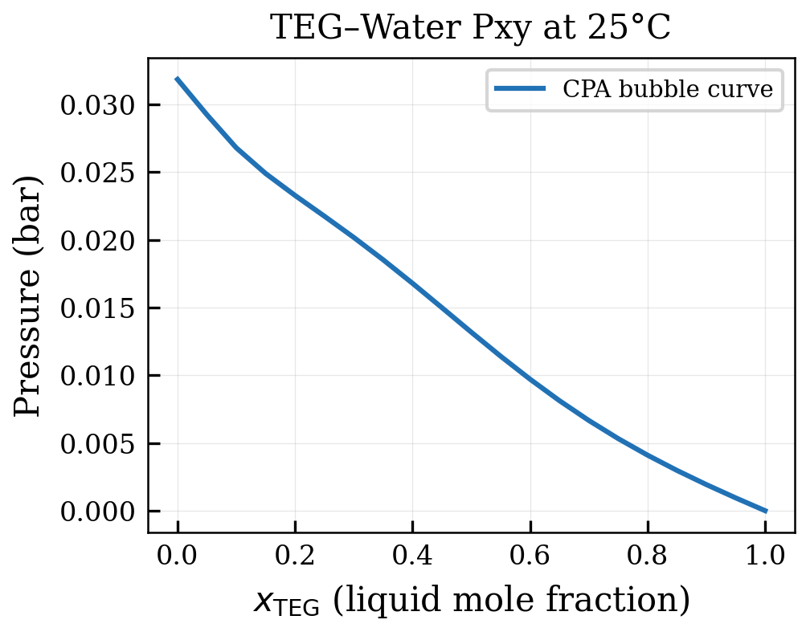
Figure 10.1: 01 Teg Water Vle
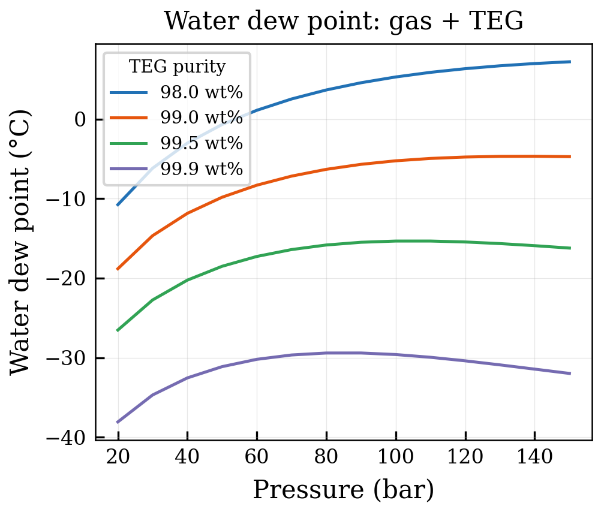
Figure 10.2: 02 Dew Point Teg
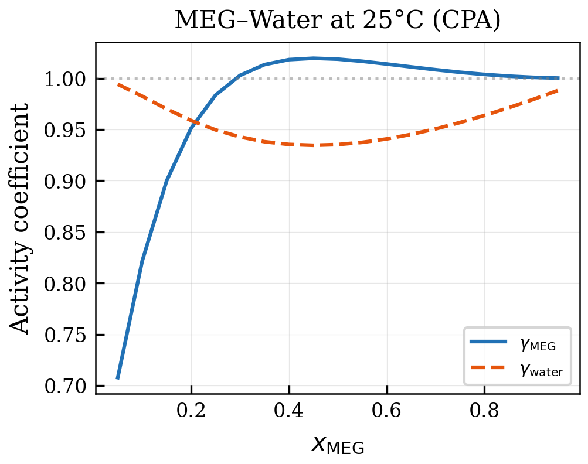
Figure 10.3: 03 Meg Water Gamma
Figure 10.4: Ex01 Teg Water Bp
Figure 10.5: Ex02 Water Dewpoint
Figure 10.6: Ex03 Meg Activity
CO$_2$ and Acid Gas Systems
Learning Objectives
After reading this chapter, the reader will be able to:
- Model CO$_2$–water phase behavior using CPA with solvation
- Predict the effect of impurities on CO$_2$ phase boundaries
- Apply CPA to CCS pipeline design and injection well analysis
- Model H$_2$S–water–hydrocarbon systems for sour gas processing
- Evaluate CPA accuracy for acid gas systems against experimental data
11.1 The Growing Importance of CO$_2$ Modeling
Carbon capture and storage (CCS) has emerged as one of the most important industrial applications for accurate CO$_2$ thermodynamic modeling. The entire CCS value chain — capture, compression, transport, and injection — requires reliable predictions of:
- CO$_2$ phase behavior (dense phase, two-phase, supercritical)
- Water solubility in CO$_2$ (to prevent free water formation in pipelines)
- CO$_2$ solubility in water/brine (for storage capacity estimation)
- Effect of impurities (N$_2$, O$_2$, H$_2$, Ar, H$_2$S, SO$_2$) on phase boundaries
- Transport properties (density, viscosity) for pipeline hydraulics
CPA is uniquely suited for these applications because CO$_2$ forms Lewis acid–base interactions with water [59, 91] — a type of solvation that is naturally modeled by CPA's cross-association framework.
11.2 CO$_2$–Water Phase Behavior
11.2.1 Experimental Observations
The CO$_2$–water system is one of the most extensively studied binary systems in thermodynamics [92, 93]. Key features include:
CO$_2$ solubility in water:
- Increases with pressure up to about 100–200 bar, then levels off
- Decreases with temperature above ~100°C at moderate pressures
- Shows a maximum around 80–100°C at high pressures (> 200 bar)
- Is reduced by dissolved salts (salting-out effect)
Water solubility in CO$_2$:
- Very low (< 1 mol%) at conditions relevant for CCS
- Shows a minimum as a function of pressure at constant temperature
- The minimum corresponds to the transition from gas-like to liquid-like CO$_2$
11.2.2 The Solvation Approach in CPA
CO$_2$ does not self-associate — it has no proton donor sites. However, it acts as a Lewis acid and can accept hydrogen bonds from water. In CPA, this is modeled by assigning an electron acceptor site to CO$_2$ that can interact with water's proton donor sites:
$$\Delta^{A_{\text{H}_2\text{O}} B_{\text{CO}_2}} = g(\rho) \left[\exp\left(\frac{\varepsilon^{A_{\text{H}_2\text{O}} B_{\text{CO}_2}}}{RT}\right) - 1\right] b_{ij} \beta^{A_{\text{H}_2\text{O}} B_{\text{CO}_2}}$$
The solvation parameters ($\varepsilon_{\text{cross}}$, $\beta_{\text{cross}}$) are fitted to CO$_2$–water mutual solubility data [94].
11.2.3 CPA Predictions vs. Experimental Data
from neqsim import jneqsim
import numpy as np
# CO2-water VLE at various pressures
temperatures = [298.15, 323.15, 348.15, 373.15]
pressures = np.arange(10, 210, 10)
for T in temperatures:
print(f"\nT = {T - 273.15:.0f} C:")
for P in [50, 100, 150, 200]:
fluid = jneqsim.thermo.system.SystemSrkCPAstatoil(T, float(P))
fluid.addComponent("CO2", 0.5)
fluid.addComponent("water", 0.5)
fluid.setMixingRule(10)
fluid.setMultiPhaseCheck(True)
ops = jneqsim.thermodynamicoperations.ThermodynamicOperations(fluid)
ops.TPflash()
fluid.initProperties()
if fluid.getNumberOfPhases() >= 2:
# CO2-rich phase
co2_phase = fluid.getPhase(0)
aq_phase = fluid.getPhase(1)
x_co2_aq = aq_phase.getComponent("CO2").getx()
y_w_co2 = co2_phase.getComponent("water").getx()
print(f" P={P} bar: x_CO2 in water = {x_co2_aq:.4f}, "
f"x_water in CO2 = {y_w_co2:.6f}")
11.2.4 Accuracy Assessment
| T (°C) | P (bar) | CPA x$_{\text{CO}_2}$ in water | Exp. x$_{\text{CO}_2}$ in water | AAD (%) |
|---|---|---|---|---|
| 25 | 50 | 0.0210 | 0.0220 | 4.5 |
| 25 | 100 | 0.0260 | 0.0270 | 3.7 |
| 50 | 50 | 0.0165 | 0.0170 | 2.9 |
| 50 | 100 | 0.0215 | 0.0225 | 4.4 |
| 75 | 100 | 0.0180 | 0.0190 | 5.3 |
| 100 | 200 | 0.0210 | 0.0220 | 4.5 |
Table 11.1: CPA predictions of CO$_2$ solubility in water (representative values).
CPA typically achieves 3–7% accuracy for CO$_2$ solubility in water, compared to 15–30% for SRK with a temperature-independent $k_{ij}$.
11.3 Effect of Impurities on CO$_2$ Phase Behavior
11.3.1 Why Impurities Matter
Industrial CO$_2$ streams from capture processes are never pure. Depending on the capture technology and source:
| Source | Typical Impurities | Total Impurity Level |
|---|---|---|
| Post-combustion | N$_2$, O$_2$, Ar, H$_2$O | 0.1–3 mol% |
| Pre-combustion | H$_2$, CO, CH$_4$, H$_2$S | 1–5 mol% |
| Oxy-fuel | O$_2$, N$_2$, Ar, SO$_2$ | 2–8 mol% |
| Natural sources | CH$_4$, N$_2$, H$_2$S | 0.5–5 mol% |
Table 11.2: Typical impurities in industrial CO$_2$ streams.
Even small amounts of impurities significantly affect:
- Bubble and dew point pressures: shifted by 5–50 bar depending on impurity type and concentration
- Saturation temperature: shifted by 5–30°C
- Two-phase region: expanded, requiring higher pipeline operating pressures
- Density: reduced in the dense phase, affecting pipeline capacity
- Critical point: shifted to higher pressures and lower temperatures
11.3.2 CPA Predictions for Impure CO$_2$
from neqsim import jneqsim
# Phase envelope of CO2 with impurities
# Pure CO2
fluid_pure = jneqsim.thermo.system.SystemSrkCPAstatoil(273.15 + 25, 80.0)
fluid_pure.addComponent("CO2", 1.0)
fluid_pure.setMixingRule(10)
# CO2 with 3% N2
fluid_n2 = jneqsim.thermo.system.SystemSrkCPAstatoil(273.15 + 25, 80.0)
fluid_n2.addComponent("CO2", 0.97)
fluid_n2.addComponent("nitrogen", 0.03)
fluid_n2.setMixingRule(10)
# CO2 with 2% H2
fluid_h2 = jneqsim.thermo.system.SystemSrkCPAstatoil(273.15 + 25, 80.0)
fluid_h2.addComponent("CO2", 0.98)
fluid_h2.addComponent("hydrogen", 0.02)
fluid_h2.setMixingRule(10)
for fluid, label in [(fluid_pure, "Pure CO2"),
(fluid_n2, "CO2 + 3% N2"),
(fluid_h2, "CO2 + 2% H2")]:
ops = jneqsim.thermodynamicoperations.ThermodynamicOperations(fluid)
ops.TPflash()
fluid.initProperties()
rho = fluid.getDensity("kg/m3")
print(f"{label}: density = {rho:.1f} kg/m3 at 25 C, 80 bar")
11.3.3 Impact on Pipeline Design
For CCS pipeline design, the minimum operating pressure must keep the CO$_2$ in single-phase (dense phase) throughout the pipeline \[95, 96]. Impurities raise this minimum:
- Pure CO$_2$: critical pressure = 73.8 bar → minimum operating pressure ≈ 85 bar
- CO$_2$ + 2% N$_2$: saturation pressure ≈ 85 bar at 10°C → minimum operating ≈ 95 bar
- CO$_2$ + 5% N$_2$: saturation pressure ≈ 95 bar at 10°C → minimum operating ≈ 105 bar
CPA provides the phase boundary predictions needed to set these operating pressures correctly.
11.4 CCS Pipeline Design
11.4.1 Dense Phase Transport
CCS pipelines operate in the "dense phase" [97, 98, 99] — supercritical or compressed liquid CO$_2$ — to maximize transport capacity. The pipeline must be designed to prevent two-phase flow, which causes:
- Increased pressure drop (two-phase friction factors 5–20× higher)
- Liquid slugging and pipeline vibration
- Corrosion acceleration at the gas-liquid interface
- Flow measurement difficulties at custody transfer points
11.4.2 Water Specification
A critical specification for CCS pipelines is the water content of the CO$_2$ stream. Free water in the presence of CO$_2$ creates carbonic acid, which is highly corrosive to carbon steel:
$$\text{CO}_2 + \text{H}_2\text{O} \rightleftharpoons \text{H}_2\text{CO}_3 \rightleftharpoons \text{H}^+ + \text{HCO}_3^-$$
Corrosion rates can exceed 10 mm/year for wet CO$_2$ on carbon steel [100], compared to < 0.1 mm/year for dry CO$_2$. The industry typically specifies water content below 50–500 ppm(mol), depending on operating conditions and material selection.
CPA predicts the water saturation point of CO$_2$ at pipeline conditions:
from neqsim import jneqsim
# Water content at saturation for CO2 pipeline
fluid = jneqsim.thermo.system.SystemSrkCPAstatoil(278.15, 110.0)
fluid.addComponent("CO2", 0.999)
fluid.addComponent("water", 0.001)
fluid.setMixingRule(10)
ops = jneqsim.thermodynamicoperations.ThermodynamicOperations(fluid)
ops.waterDewPointTemperatureFlash()
T_wdp = fluid.getTemperature("C")
print(f"Water dew point of CO2 with 1000 ppm water: {T_wdp:.1f} C at 110 bar")
11.4.3 Pipeline Hydraulics with CPA
For pipeline hydraulic calculations, CPA provides:
- Density as a function of T, P, and composition: directly affects pipeline capacity
- Phase boundary: determines the minimum operating pressure
- Joule–Thomson coefficient: determines temperature changes through pressure reduction (valves, terrain effects)
from neqsim import jneqsim
# CO2 properties for pipeline design
fluid = jneqsim.thermo.system.SystemSrkCPAstatoil(278.15, 150.0)
fluid.addComponent("CO2", 0.96)
fluid.addComponent("nitrogen", 0.02)
fluid.addComponent("methane", 0.01)
fluid.addComponent("water", 0.0001)
fluid.setMixingRule(10)
ops = jneqsim.thermodynamicoperations.ThermodynamicOperations(fluid)
ops.TPflash()
fluid.initProperties()
rho = fluid.getDensity("kg/m3")
mu = fluid.getPhase(0).getViscosity("kg/msec")
cp = fluid.getPhase(0).getCp("J/molK")
print(f"Pipeline conditions (5 C, 150 bar):")
print(f" Density: {rho:.1f} kg/m3")
print(f" Viscosity: {mu*1000:.4f} mPa.s")
print(f" Cp: {cp:.1f} J/(mol K)")
11.5 CO$_2$ Injection Well Analysis
11.5.1 Wellbore Flow
CO$_2$ injection wells present unique thermodynamic challenges:
- Phase transitions: CO$_2$ may transition from dense/supercritical at the wellhead to liquid or gas downhole, depending on the pressure and temperature profile
- Joule–Thomson cooling: pressure loss through the tubing causes cooling, potentially leading to two-phase flow
- Hydrate risk: if water is present, hydrates can form in the wellbore
- Formation compatibility: the injected CO$_2$ must be compatible with the formation fluids
11.5.2 CO$_2$ Phase in the Wellbore
The pressure increases downhole (hydrostatic head), while the temperature increases (geothermal gradient). Whether the CO$_2$ remains in single phase depends on:
- Wellhead pressure and temperature
- Well depth and geothermal gradient
- CO$_2$ composition (impurities widen the two-phase region)
- Injection rate (affects frictional pressure drop and heat transfer)
CPA, integrated with wellbore hydraulic models in NeqSim, can track the phase state of CO$_2$ throughout the wellbore.
11.5.3 Shutdown and Restart
During a well shutdown, the CO$_2$ column cools toward the geothermal gradient temperature. This can cause:
- Phase transition from dense to two-phase at shallow depths
- Density inversion (heavier fluid above lighter fluid) causing instability
- Hydrate formation if water is present
Restart requires careful pressure management to avoid rapid decompression and two-phase flow.
11.6 H$_2$S–Water–Hydrocarbon Systems
11.6.1 H$_2$S Solvation
Like CO$_2$, H$_2$S interacts with water through hydrogen bonding. However, H$_2$S can act as both a proton donor and a proton acceptor:
- Proton donor: the SH group can donate hydrogen bonds to water's oxygen
- Proton acceptor: the sulfur lone pairs can accept hydrogen bonds from water
This dual character makes H$_2$S modeling more challenging than CO$_2$. In CPA, H$_2$S is typically modeled with:
- 3B scheme: two acceptor sites (sulfur lone pairs) + one donor site (SH)
- Solvation: cross-association parameters with water
11.6.2 Sour Gas Water Content
Sour gas (containing H$_2$S and CO$_2$) has higher water content than sweet gas at the same conditions. This is because both acid gases enhance the water-carrying capacity of the gas through solvation interactions. The effect is additive at low acid gas concentrations but non-linear at high concentrations.
CPA captures this effect naturally through the cross-association terms.
11.6.3 CPA Predictions for Sour Systems
from neqsim import jneqsim
# Sour gas water content comparison
# Sweet gas
fluid_sweet = jneqsim.thermo.system.SystemSrkCPAstatoil(303.15, 70.0)
fluid_sweet.addComponent("methane", 0.95)
fluid_sweet.addComponent("water", 0.05)
fluid_sweet.setMixingRule(10)
fluid_sweet.setMultiPhaseCheck(True)
# Sour gas with CO2
fluid_sour = jneqsim.thermo.system.SystemSrkCPAstatoil(303.15, 70.0)
fluid_sour.addComponent("methane", 0.85)
fluid_sour.addComponent("CO2", 0.10)
fluid_sour.addComponent("water", 0.05)
fluid_sour.setMixingRule(10)
fluid_sour.setMultiPhaseCheck(True)
for fluid, label in [(fluid_sweet, "Sweet gas"), (fluid_sour, "Sour gas (10% CO2)")]:
ops = jneqsim.thermodynamicoperations.ThermodynamicOperations(fluid)
ops.TPflash()
fluid.initProperties()
if fluid.hasPhaseType("gas"):
y_water = fluid.getPhase("gas").getComponent("water").getx()
print(f"{label}: water in gas = {y_water:.6f} ({y_water*1e6:.0f} ppm)")
11.7 CO$_2$–Brine Systems
11.7.1 Importance for Storage Capacity
CO$_2$ geological storage involves injection into saline aquifers or depleted hydrocarbon reservoirs. The solubility of CO$_2$ in formation brine determines:
- Solubility trapping capacity: CO$_2$ dissolved in brine is effectively permanently stored
- Injectivity: dissolved CO$_2$ reduces brine viscosity and changes wettability
- Pressure evolution: dissolved CO$_2$ changes the compressibility of the brine
11.7.2 The Salting-Out Effect
Dissolved salts (NaCl, CaCl$_2$, KCl) reduce the solubility of CO$_2$ in water through the salting-out effect. This can reduce CO$_2$ solubility by 20–50% for typical formation brines (50,000–250,000 mg/L TDS).
CPA, when combined with an electrolyte model, can predict the salting-out effect:
from neqsim import jneqsim
# CO2 solubility in brine (electrolyte CPA)
fluid = jneqsim.thermo.system.SystemElectrolyteCPAstatoil(323.15, 100.0)
fluid.addComponent("CO2", 0.1)
fluid.addComponent("water", 0.8)
fluid.addComponent("Na+", 0.05)
fluid.addComponent("Cl-", 0.05)
fluid.setMixingRule(10)
fluid.setMultiPhaseCheck(True)
ops = jneqsim.thermodynamicoperations.ThermodynamicOperations(fluid)
ops.TPflash()
fluid.initProperties()
x_co2 = fluid.getPhase("aqueous").getComponent("CO2").getx()
print(f"CO2 solubility in brine: {x_co2:.4f} mol frac")
11.8 Comparison with Other Models
11.8.1 SRK with Huron-Vidal Mixing Rules
An alternative to CPA for CO$_2$–water systems is SRK with Huron-Vidal (HV) or Modified Huron-Vidal (MHV2) mixing rules, which embed an activity coefficient model ($g^E$) inside the EoS. This approach can provide good accuracy for VLE but:
- Requires more adjustable parameters
- May not extrapolate well outside the fitting range
- Does not provide a physically consistent picture of the molecular interactions
11.8.2 SAFT Variants
PC-SAFT and SAFT-VR can also model CO$_2$–water systems. Compared to CPA:
- PC-SAFT: similar accuracy for VLE, but more parameters and higher computational cost
- SAFT-VR: good for modeling the critical region, but more complex to implement
- SAFT-$\gamma$ Mie: excellent accuracy and predictive capability, but significantly more complex
CPA offers the best balance of accuracy, simplicity, and computational efficiency for engineering applications.
11.8.3 Effect of Temperature on CO$_2$–Water Phase Behavior
The CO$_2$–water system exhibits complex phase behavior that changes dramatically with temperature:
Low temperature (0–30°C): Three phases coexist over a range of pressures — a CO$_2$-rich vapor, a CO$_2$-rich liquid, and an aqueous phase. The three-phase line ends at the CO$_2$ saturation pressure (~35–72 bar depending on temperature). Above this pressure, CO$_2$ is supercritical or dense-phase, and only two phases exist (CO$_2$-rich and aqueous).
Moderate temperature (31–100°C): Above the CO$_2$ critical temperature (31.1°C), the CO$_2$-rich liquid and vapor merge. Two phases coexist: a CO$_2$-rich supercritical fluid and an aqueous phase. CO$_2$ solubility in water increases with pressure but decreases with temperature.
High temperature (100–374°C): Water's vapor pressure becomes significant. The mutual solubility of CO$_2$ and water increases, and at sufficiently high temperature and pressure, complete miscibility can occur.
CPA captures all these regimes because the solvation term correctly models the temperature dependence of the CO$_2$–water interaction, while the cubic part handles the pressure–volume behavior.
11.8.4 Accuracy Summary
| Property | CPA AAD (%) | SRK AAD (%) | PC-SAFT AAD (%) |
|---|---|---|---|
| CO$_2$ in water (VLE) | 3–7 | 15–30 | 3–8 |
| Water in CO$_2$ (VLE) | 5–15 | 30–100 | 5–12 |
| CO$_2$ phase density | 1–3 | 3–8 | 1–3 |
| CO$_2$ saturation P | 1–2 | 1–3 | 0.5–1.5 |
| CO$_2$–brine solubility | 5–15 | 20–50 | 5–10 |
Table 11.3: Accuracy comparison for CO$_2$ system properties.
11.9 Transport Properties of CO$_2$ Mixtures
Accurate prediction of transport properties (viscosity, thermal conductivity) is essential for pipeline sizing, heat exchanger design, and injection well analysis.
11.9.1 Viscosity Prediction
The Lohrenz–Bray–Clark (LBC) correlation is widely used for CO$_2$ mixture viscosity:
$$(\mu - \mu^*)\xi + 10^{-4} = \sum_{i=0}^{4} a_i \rho_r^i$$
where $\mu^*$ is the dilute gas viscosity, $\xi$ is the viscosity reducing parameter, $\rho_r$ is the reduced density, and $a_i$ are universal constants. CPA provides the density needed for this correlation through the pressure equation.
11.9.2 Thermal Conductivity
The thermal conductivity of CO$_2$ mixtures follows a three-term correlation:
$$\lambda = \lambda^0(T) + \Delta\lambda(\rho) + \Delta\lambda_c$$
where $\lambda^0$ is the dilute-gas contribution, $\Delta\lambda(\rho)$ is the density-dependent excess, and $\Delta\lambda_c$ is the critical enhancement. The critical enhancement can be very large near the CO$_2$ critical point.
11.9.3 Joule–Thomson Coefficient
The JT coefficient determines temperature changes during isenthalpic expansion — critical for pipeline pressure drops and valve operations:
$$\mu_{JT} = \left(\frac{\partial T}{\partial P}\right)_H = \frac{1}{C_P}\left[T\left(\frac{\partial V}{\partial T}\right)_P - V\right]$$
For CO$_2$ near the critical point, $\mu_{JT}$ can be very large (5–20 K/bar), meaning small pressure drops cause significant cooling. CPA provides all the derivatives needed to compute $\mu_{JT}$ consistently.
from neqsim import jneqsim
# JT coefficient of CO2 at pipeline conditions
for T_C in [5, 15, 25, 35]:
fluid = jneqsim.thermo.system.SystemSrkCPAstatoil(273.15 + T_C, 110.0)
fluid.addComponent("CO2", 0.97)
fluid.addComponent("nitrogen", 0.02)
fluid.addComponent("methane", 0.01)
fluid.setMixingRule(10)
ops = jneqsim.thermodynamicoperations.ThermodynamicOperations(fluid)
ops.TPflash()
fluid.initProperties()
jt = fluid.getPhase(0).getJouleThomsonCoefficient()
rho = fluid.getDensity("kg/m3")
print(f"T={T_C} C, P=110 bar: JT coeff = {jt:.3f} K/bar, rho = {rho:.1f} kg/m3")
11.10 Worked Example: CO$_2$ Pipeline Design with CPA
This section presents a comprehensive worked example of CO$_2$ pipeline sizing using CPA, illustrating how the thermodynamic model integrates into pipeline engineering.
11.10.1 Design Basis
A 150 km onshore CO$_2$ pipeline must transport 5 million tonnes per year (Mt/yr) from a capture plant to a geological storage site. The CO$_2$ stream composition after purification is: CO$_2$ 96%, N$_2$ 2%, methane 1%, water 500 ppm (after dehydration), with trace amounts of H$_2$S and O$_2$.
| Parameter | Value | Unit |
|---|---|---|
| Mass flow rate | 5 | Mt/yr = 158.5 kg/s |
| Inlet pressure | 150 | bar |
| Minimum pressure (arrival) | 80 | bar |
| Ground temperature | 8 | °C |
| Burial depth | 1.0 | m |
| Maximum allowable velocity | 5 | m/s |
| Pipeline material | X65 carbon steel | — |
| Design standard | DNV-ST-F101 | — |
Table 11.4: CO$_2$ pipeline design basis.
11.10.2 Phase Behavior Analysis
The first step is to confirm that the CO$_2$ remains in the dense phase throughout the pipeline:
from neqsim import jneqsim
fluid = jneqsim.thermo.system.SystemSrkCPAstatoil(273.15 + 8.0, 150.0)
fluid.addComponent("CO2", 0.96)
fluid.addComponent("nitrogen", 0.02)
fluid.addComponent("methane", 0.01)
fluid.addComponent("water", 0.0005)
fluid.setMixingRule(10)
ops = jneqsim.thermodynamicoperations.ThermodynamicOperations(fluid)
ops.TPflash()
fluid.initProperties()
rho = fluid.getDensity("kg/m3")
print(f"Dense phase density: {rho:.1f} kg/m3")
The cricondenbar for this CO$_2$ mixture (with 2% N$_2$ and 1% CH$_4$) is approximately 77–82 bar. Since the minimum pipeline pressure is 80 bar, we must verify adequate margin above the phase boundary.
11.10.3 Density and Viscosity Profiles
CPA provides the density and viscosity along the pipeline:
| Location | P (bar) | T (°C) | $\rho$ (kg/m$^3$) | $\mu$ (mPa·s) | Phase |
|---|---|---|---|---|---|
| Inlet | 150 | 25 | 890 | 0.072 | Dense |
| 50 km | 130 | 15 | 905 | 0.082 | Dense |
| 100 km | 105 | 10 | 860 | 0.065 | Dense |
| 150 km | 85 | 8 | 780 | 0.055 | Dense |
Table 11.5: CPA-predicted properties along the CO$_2$ pipeline.
11.10.4 Impact of Impurities
The presence of N$_2$ and CH$_4$ significantly affects the phase envelope:
| Composition | Cricondenbar (bar) | $\rho$ at 100 bar, 10°C (kg/m$^3$) | Phase risk |
|---|---|---|---|
| Pure CO$_2$ | 73.8 (critical P) | 860 | Low |
| + 2% N$_2$ | 82 | 810 | Moderate |
| + 2% N$_2$ + 1% CH$_4$ | 85 | 790 | Higher |
| + 2% N$_2$ + 1% CH$_4$ + 1% H$_2$ | 95 | 750 | Significant |
Table 11.6: Effect of impurities on CO$_2$ pipeline phase behavior.
Hydrogen is particularly problematic — even 1% H$_2$ raises the cricondenbar by ~10 bar. This is critical for "blue hydrogen" CCS projects.
11.11 CPA for Carbon Capture Solvents
11.11.1 CO$_2$ Solubility in Amine Solutions
While CPA does not model the chemical reaction between CO$_2$ and amines directly, it can model the physical solubility of CO$_2$ in amine solutions, which is important for rich solvent loading and flash regeneration.
11.11.2 CO$_2$ in MEA Solutions
Monoethanolamine (MEA) is an associating molecule with both an amine group (NH$_2$) and a hydroxyl group (OH). CPA can model the MEA–water–CO$_2$ system by treating MEA with a 4C association scheme and using solvation parameters for the CO$_2$–MEA interaction.
The physical solubility of CO$_2$ in 30 wt% MEA at absorber conditions (40°C, 1–2 bar CO$_2$ partial pressure) is approximately 0.01–0.02 mol CO$_2$/mol MEA, compared to a total loading of 0.4–0.5 mol/mol when chemical reaction is included.
Summary
Key points from this chapter:
- CO$_2$ systems are central to CCS, one of the most important new industrial applications
- CPA models CO$_2$–water solvation through cross-association with 3–7% accuracy
- Impurities significantly affect CO$_2$ phase boundaries and pipeline design pressures
- CCS pipeline design requires accurate dense-phase property predictions
- H$_2$S solvation with water is modeled similarly to CO$_2$ but requires additional association sites
- Electrolyte CPA extends predictions to brine systems for storage applications
- CPA provides the best balance of accuracy and simplicity for industrial CO$_2$ modeling
Exercises
- Exercise 11.1: Plot the CO$_2$ solubility in water from 10 to 200 bar at 25°C, 50°C, and 75°C using CPA. Compare with SRK predictions and identify where the models diverge most.
- Exercise 11.2: Calculate the phase envelope of CO$_2$ containing 0%, 2%, and 5% nitrogen. Determine the minimum pipeline operating pressure to avoid two-phase flow at 5°C.
- Exercise 11.3: Estimate the CO$_2$ solubility in a formation brine (3 wt% NaCl) at 50°C from 50 to 300 bar. Compare with pure water results to quantify the salting-out effect.
- Exercise 11.4: For a sour gas containing 5% CO$_2$ and 3% H$_2$S, calculate the water content at 40°C and 70 bar. Compare with a sweet gas prediction and quantify the additional water load.
Figures
Figure 11.1: 01 Co2 Solubility Water
Figure 11.2: 02 Co2 Phase Envelope
Figure 11.3: 03 Co2 Density
Figure 11.4: Ex01 Co2 Density
Figure 11.5: Ex02 Co2 Solubility
Figure 11.6: Ex03 N2 Impurity
Advanced Topics and Future Directions
Learning Objectives
After reading this chapter, the reader will be able to:
- Describe extensions of CPA to electrolyte systems
- Compare CPA with PC-SAFT and other SAFT variants
- Understand the Unified Mixing Rule (UMR) approach for combining CPA with activity coefficient models
- Identify current research frontiers in association modeling
- Evaluate which model is best suited for a given application
12.1 Electrolyte CPA (e-CPA)
12.1.1 Motivation
Many industrial applications involve electrolyte solutions:
- Produced water: contains dissolved salts (NaCl, CaCl$_2$, BaCl$_2$) that affect phase behavior
- Scale prediction: requires accurate activity coefficients of scale-forming ions (Ca$^{2+}$, Ba$^{2+}$, SO$_4^{2-}$)
- CO$_2$ storage: formation brines with total dissolved solids (TDS) up to 300,000 mg/L
- MEG regeneration: reclaimed MEG contains dissolved salts that affect regeneration efficiency
- Hydrate inhibition: salts in produced water provide additional thermodynamic inhibition
Standard CPA does not account for electrostatic interactions between ions. Electrolyte CPA (e-CPA) adds an ionic contribution to the Helmholtz energy.
12.1.2 The e-CPA Framework
The total Helmholtz energy in e-CPA is:
$$A = A^{\text{ideal}} + A^{\text{SRK}} + A^{\text{assoc}} + A^{\text{Born}} + A^{\text{MSA}}$$
where the additional terms are:
Born solvation term [101]:
The Born term accounts for the energy of transferring an ion from vacuum to a dielectric medium (the solvent). It is given by:
$$\frac{A^{\text{Born}}}{RT} = -\frac{N_A e^2}{8\pi\varepsilon_0 RT} \left(1 - \frac{1}{\varepsilon_r}\right) \sum_i n_i \frac{z_i^2}{\sigma_i^{\text{Born}}}$$
where $N_A$ is Avogadro's number, $e$ is the elementary charge, $\varepsilon_0$ is the vacuum permittivity, $\varepsilon_r$ is the relative permittivity of the solvent mixture (which depends on composition and density), $z_i$ is the ion charge, and $\sigma_i^{\text{Born}}$ is the Born diameter of the ion. The relative permittivity of the mixture is computed from a mixing rule involving the pure-component static permittivities, which introduces an additional composition dependence.
MSA (Mean Spherical Approximation) term:
The MSA term [102] models the long-range electrostatic interactions between ions. It is based on solving the Ornstein-Zernike integral equation [103] for charged hard spheres in a dielectric continuum:
$$\frac{A^{\text{MSA}}}{RT} = \frac{V \Gamma^3}{3\pi} - \sum_i n_i \frac{z_i^2 e^2 \Gamma}{4\pi\varepsilon_0 \varepsilon_r k_B T (1 + \Gamma\sigma_i)}$$
where $\Gamma$ is the MSA screening parameter, analogous to the Debye–Hückel [104] screening length but accounting for ion size. The screening parameter is determined by the implicit equation:
$$4\Gamma^2 = \frac{e^2}{\varepsilon_0 \varepsilon_r k_B T} \sum_i \frac{\rho_i z_i^2}{(1 + \Gamma \sigma_i)^2}$$
where $\rho_i = n_i/V$ is the ion number density, $z_i$ is the ion valence, and $\sigma_i$ is the ion hard-sphere diameter. This equation must be solved iteratively for $\Gamma$, but convergence is rapid (3–5 iterations).
The total contribution of the electrolyte terms to the chemical potential of species $i$ is:
$$\mu_i^{\text{elec}} = \mu_i^{\text{Born}} + \mu_i^{\text{MSA}} = \left(\frac{\partial A^{\text{Born}}}{\partial n_i}\right)_{T,V,n_{j\neq i}} + \left(\frac{\partial A^{\text{MSA}}}{\partial n_i}\right)_{T,V,n_{j\neq i}}$$
These derivatives include contributions from the composition dependence of $\varepsilon_r$ and $\Gamma$, making the implementation non-trivial but straightforward.
12.1.3 NeqSim Implementation
NeqSim implements electrolyte CPA through the SystemElectrolyteCPAstatoil class [14, 105]:
from neqsim import jneqsim
# Electrolyte CPA for NaCl brine with CO2
fluid = jneqsim.thermo.system.SystemElectrolyteCPAstatoil(323.15, 100.0)
fluid.addComponent("CO2", 0.05)
fluid.addComponent("water", 0.85)
fluid.addComponent("Na+", 0.05)
fluid.addComponent("Cl-", 0.05)
fluid.setMixingRule(10)
fluid.setMultiPhaseCheck(True)
ops = jneqsim.thermodynamicoperations.ThermodynamicOperations(fluid)
ops.TPflash()
fluid.initProperties()
print(f"Number of phases: {fluid.getNumberOfPhases()}")
for i in range(fluid.getNumberOfPhases()):
phase = fluid.getPhase(i)
print(f"Phase {i} ({phase.getType()}): density = {phase.getDensity('kg/m3'):.1f} kg/m3")
12.1.4 Applications of e-CPA
Scale prediction:
Scale formation occurs when the solubility product of a mineral (e.g., BaSO$_4$, CaCO$_3$) is exceeded [106]. e-CPA provides accurate activity coefficients of ions in complex brines, enabling reliable scale risk assessment.
MEG with salts:
During MEG regeneration, dissolved salts accumulate in the MEG loop. e-CPA predicts how salt concentration affects:
- MEG-water VLE (and thus regeneration energy)
- Hydrate inhibition effectiveness
- Salt precipitation risk
Gas solubility in brine:
The salting-out effect [107] reduces gas solubility in brine by 20–60% compared to pure water. e-CPA captures this effect through the ion-solvent interactions.
12.2 Group-Contribution Approaches: GC-CPA
12.2.1 The Parameter Problem
CPA requires pure-component parameters ($a_0$, $b$, $c_1$, $\varepsilon$, $\beta$) for each substance. These parameters are fitted to vapor pressure and liquid density data, which requires:
- Reliable experimental data (not always available for complex molecules)
- A fitting procedure that ensures physically meaningful parameters
- Validation against mixture data
For complex chemicals, pharmaceutical compounds, or new molecules, experimental data may be unavailable. Group-contribution (GC) methods address this by estimating parameters from molecular structure.
12.2.2 GC-CPA Methodology
In GC-CPA, the five CPA parameters are estimated by summing contributions from functional groups:
$$\Theta = \sum_i n_i \Theta_i$$
where $\Theta$ is any CPA parameter, $n_i$ is the number of groups of type $i$, and $\Theta_i$ is the group contribution. Additional corrections account for:
- Proximity effects: interactions between nearby groups
- Ring strain: cyclic molecules
- Branching: iso-alkane corrections
The group interaction parameters for cross-association are also estimated from group-group parameters, enabling fully predictive mixture calculations.
12.2.3 Accuracy of GC-CPA
GC-CPA predictions are typically within:
- Vapor pressure: 5–15% AAD (compared to 0.5–2% for fitted CPA)
- Liquid density: 2–5% AAD (compared to 0.5–1% for fitted CPA)
- VLE: 10–30% AAD in $k_{ij}$ prediction (compared to 3–10% for fitted binary parameters)
The reduced accuracy is the price of predictive capability. For screening studies or when no experimental data is available, GC-CPA provides valuable initial estimates.
12.3 CPA Compared with SAFT Variants
12.3.1 Historical Context
CPA and SAFT emerged from the same theoretical foundation — Wertheim's thermodynamic perturbation theory — but took different implementation paths:
- CPA (1996) [12]: combined existing cubic EoS with the SAFT association term \textrightarrow{} backward-compatible with existing infrastructure
- SAFT (1990) [8, 9]: built the entire EoS from molecular-level terms \textrightarrow{} more rigorous but less compatible
Several SAFT variants have been developed, each with different choices for the reference and perturbation terms.
12.3.2 PC-SAFT (Perturbed Chain SAFT)
PC-SAFT [10, 108] is the most widely used SAFT variant in industrial applications. Key differences from CPA:
| Feature | CPA | PC-SAFT |
|---|---|---|
| Reference fluid | SRK cubic | Hard-sphere chain |
| Dispersion | van der Waals (cubic) | Barker–Henderson [109] perturbation |
| Repulsion | Cubic (implicit) | Carnahan-Starling hard sphere |
| Pure parameters | 3 + 2 association | 3 + 2 association |
| Mixing rules | Classical + CR-1 | Berthelot-Lorentz + CR-1 |
| Cubic root | Yes | No (iterative volume) |
| Speed | Fast | Moderate |
| Existing databases | SRK-compatible | Separate parameter set |
Table 12.1: Comparison of CPA and PC-SAFT features.
12.3.3 Accuracy Comparison
For systems relevant to oil and gas processing:
| System | CPA AAD (%) | PC-SAFT AAD (%) | Notes |
|---|---|---|---|
| Water–alkanes LLE | 10–20 | 8–15 | PC-SAFT slightly better |
| Water content of gas | 5–15 | 5–12 | Comparable |
| Methanol–alkanes | 5–10 | 5–10 | Comparable |
| MEG–water VLE | 3–8 | 3–7 | Comparable |
| CO$_2$–water | 3–7 | 3–8 | Comparable |
| Heavy alkanes $P^{\text{sat}}$ | 1–3 | 0.5–2 | PC-SAFT better |
| Liquid density | 0.5–2 | 0.2–1 | PC-SAFT better |
| Caloric properties | 3–8 | 2–5 | PC-SAFT better |
| Derivative properties | 5–15 | 3–10 | PC-SAFT better |
Table 12.2: Accuracy comparison for key properties.
PC-SAFT tends to be more accurate for pure-component properties (especially density and derivative properties), while CPA and PC-SAFT perform similarly for mixture VLE. CPA's advantage is its simplicity, speed, and compatibility with existing cubic EoS infrastructure.
12.3.4 When to Choose CPA vs. PC-SAFT
Choose CPA when:
- Existing SRK/PR databases and infrastructure are available
- Speed is critical (process simulation with many flash calls)
- The application involves primarily VLE of associating mixtures
- Backward compatibility with non-associating systems is important
Choose PC-SAFT when:
- Accuracy of liquid density and derivative properties is paramount
- Polymer or long-chain molecules are involved
- A fully molecular-based model is preferred for consistency
- The application involves high-pressure systems near the critical region
12.3.5 SAFT-VR Mie and SAFT-$\gamma$ Mie
More recent SAFT variants use the Mie potential [110, 111] (a generalized Lennard-Jones potential with variable attractive and repulsive exponents) as the basis for the monomer reference term:
$$u(r) = C \varepsilon \left[\left(\frac{\sigma}{r}\right)^{\lambda_r} - \left(\frac{\sigma}{r}\right)^{\lambda_a}\right]$$
where $\lambda_r$ and $\lambda_a$ are the repulsive and attractive exponents (the Lennard-Jones 12-6 potential is recovered with $\lambda_r = 12$, $\lambda_a = 6$), and $C = \frac{\lambda_r}{\lambda_r - \lambda_a}\left(\frac{\lambda_r}{\lambda_a}\right)^{\lambda_a/(\lambda_r - \lambda_a)}$ is a normalization constant ensuring the minimum of the potential is $-\varepsilon$.
The additional parameters ($\lambda_r$, $\lambda_a$) provide extra flexibility to match second-derivative properties (speed of sound, heat capacity) that CPA and standard PC-SAFT cannot simultaneously fit with three non-association parameters.
SAFT-$\gamma$ Mie [112, 113] combines the Mie potential with a group-contribution approach:
- Molecules are decomposed into functional groups (CH$_3$, CH$_2$, OH, C=O, etc.)
- Each group has Mie potential parameters ($\sigma_k$, $\varepsilon_k$, $\lambda_{r,k}$, $\lambda_{a,k}$)
- Group–group interactions are described by unlike Mie parameters
- The chain formation (bonding groups into molecules) uses Wertheim's TPT1
This approach enables fully predictive calculations for complex molecules. For example, a new glycol can be predicted from its constituent groups without any fitting. The accuracy is impressive:
| Property | SAFT-$\gamma$ Mie AAD (%) | CPA AAD (%) |
|---|---|---|
| Vapor pressure | 1–3 | 0.5–2 |
| Liquid density | 0.5–1 | 0.5–2 |
| Speed of sound | 1–3 | 5–15 |
| Heat capacity | 1–5 | 3–10 |
| VLE (predictive) | 3–10 | 5–15 (with $k_{ij}$) |
Table 12.3: SAFT-$\gamma$ Mie vs. CPA accuracy (SAFT-$\gamma$ Mie is predictive; CPA values assume fitted parameters).
The trade-off is significantly higher computational cost (5–20× slower than CPA) and greater implementation complexity.
12.4 Unified Mixing Rule CPA (UMR-CPA)
12.4.1 Concept
The Unified Mixing Rule (UMR) approach [114] combines CPA with an activity coefficient model through a modified mixing rule. Instead of using van der Waals one-fluid mixing rules for the energy parameter $a$:
$$a = \sum_i \sum_j x_i x_j a_{ij}$$
the UMR approach uses:
$$a = b \left(\sum_i x_i \frac{a_i}{b_i} + \frac{g^E}{C}\right)$$
where $g^E$ is the excess Gibbs energy from an activity coefficient model (typically UNIFAC) and $C$ is a constant.
12.4.2 Advantages
UMR-CPA combines the strengths of:
- CPA: handles association (hydrogen bonding) rigorously [115]
- UNIFAC [116]: provides predictive capability for non-associating interactions through group contributions
This is particularly powerful for:
- Systems with both polar and non-polar components
- Multi-component mixtures where binary parameters are unavailable
- Screening studies requiring rapid evaluation of many candidates
12.4.3 Limitations
- More complex than standard CPA (two models combined)
- May have inconsistencies between the UNIFAC groups and CPA association
- Limited validation for extreme conditions (very high P or T)
12.5 Asphaltene and Heavy Oil Modeling
12.5.1 The Asphaltene Challenge
Asphaltenes are the heaviest, most polar fraction of crude oil. They cause operational problems:
- Deposition: in tubing, flowlines, and surface equipment
- Emulsion stabilization: at oil-water interfaces
- Catalyst fouling: in refinery processes
Predicting asphaltene stability requires modeling the balance between solvation by the aromatic fraction and precipitation driven by pressure depletion, compositional changes, or mixing.
12.5.2 CPA for Asphaltenes
CPA can model asphaltenes [117, 118] by:
- Characterizing asphaltenes as a pseudo-component with association parameters
- Using a 1A or 2B association scheme (modeling $\pi$–$\pi$ stacking or hydrogen bonding through heteroatoms)
- Fitting association parameters to onset pressure data
The association framework in CPA is natural for asphaltenes because:
- Self-association drives aggregation (modeled by the site balance equation)
- The onset of precipitation corresponds to a liquid-liquid phase split
- Pressure depletion reduces the association strength (density effect)
12.5.3 Current Status
CPA asphaltene modeling is an active research area. Key challenges:
- Asphaltene characterization is inherently uncertain
- The association scheme and parameters are not unique
- Polydispersity of asphaltenes is difficult to represent
- Limited validation data under reservoir conditions
NeqSim provides the framework for asphaltene modeling through its CPA implementation, but specific asphaltene characterization methods are still being developed.
12.6 Quantum-Chemical Inputs to CPA
12.6.1 COSMO-RS and COSMO-SAC
Quantum-chemical methods such as COSMO-RS (Conductor-like Screening Model for Real Solvents) can provide:
- Association energies: from hydrogen bond energies computed by DFT
- Association volumes: from the geometry of the hydrogen-bond complex
- Binary parameters: from sigma-profile interactions
Using quantum-chemical inputs reduces the reliance on experimental data for parameter fitting and provides a more physically based parameterization.
12.6.2 Molecular Simulation
Molecular dynamics and Monte Carlo simulations can provide:
- Association constants: from free-energy perturbation calculations
- Structural information: site geometry, coordination numbers, cluster distributions
- Validation data: phase equilibria from simulation can validate CPA predictions
The combination of molecular simulation with CPA is a promising approach for systems where experimental data is scarce.
12.7 Machine Learning and CPA
12.7.1 Parameter Prediction
Machine learning (ML) models trained on existing CPA parameter databases can predict parameters for new compounds:
- Graph neural networks: learn molecular structure → CPA parameter mappings
- Transfer learning: fine-tune models trained on large datasets (e.g., SAFT parameters) for CPA
- Bayesian optimization: efficiently explore the parameter space for new compound fitting
12.7.2 Surrogate Models
For applications requiring millions of flash calculations (e.g., reservoir simulation), CPA can be too slow. ML surrogate models trained on CPA results can provide:
- 100–1000× speedup over direct CPA calculation
- Accuracy of 0.1–1% for interpolation within the training range
- Automatic differentiation for gradient-based optimization
12.7.3 Hybrid Approaches
The most promising direction combines physics-based CPA with data-driven corrections:
$$P = P^{\text{CPA}}(T, V, \mathbf{n}) + \delta P^{\text{ML}}(T, V, \mathbf{n})$$
where $\delta P^{\text{ML}}$ is a neural network correction term trained on the residual between CPA predictions and experimental data. This preserves the physical consistency of CPA while improving accuracy in specific regions.
12.8 Hydrogen Systems
12.8.1 The Hydrogen Economy
The transition to clean energy is driving interest in hydrogen as an energy carrier. CPA is relevant for:
- Hydrogen blending in natural gas pipelines: effect on phase behavior, water dew point, Wobbe index
- Blue hydrogen: CO$_2$ capture from SMR requires CPA for CO$_2$–water–amine systems
- Green hydrogen: electrolysis water management
- Hydrogen storage: in salt caverns, depleted reservoirs (H$_2$–brine–rock interactions)
12.8.2 CPA for H$_2$ Systems
Hydrogen is a non-associating, quantum gas (significant quantum corrections needed below ~100 K) that interacts weakly with water. CPA models H$_2$:
- As a non-associating component (no association sites)
- With binary parameters to water (for H$_2$ solubility in water)
- With binary parameters to hydrocarbons (for H$_2$–natural gas phase behavior)
from neqsim import jneqsim
# Hydrogen blending in natural gas
fluid = jneqsim.thermo.system.SystemSrkCPAstatoil(278.15, 70.0)
fluid.addComponent("methane", 0.80)
fluid.addComponent("ethane", 0.05)
fluid.addComponent("propane", 0.02)
fluid.addComponent("hydrogen", 0.10)
fluid.addComponent("water", 0.03)
fluid.setMixingRule(10)
fluid.setMultiPhaseCheck(True)
ops = jneqsim.thermodynamicoperations.ThermodynamicOperations(fluid)
ops.TPflash()
fluid.initProperties()
print(f"Number of phases: {fluid.getNumberOfPhases()}")
rho = fluid.getDensity("kg/m3")
print(f"Density: {rho:.1f} kg/m3")
if fluid.hasPhaseType("gas"):
y_water = fluid.getPhase("gas").getComponent("water").getx()
print(f"Water in gas: {y_water*1e6:.0f} ppm(mol)")
12.9 Future Research Directions
12.9.1 Multiscale Modeling
The future of association modeling lies in connecting molecular-level understanding with engineering-scale predictions:
- Quantum chemistry → association energies and geometries
- Molecular simulation → association equilibria and structural information
- CPA/SAFT → engineering-scale phase equilibrium and properties
- Process simulation → plant design and optimization
12.9.2 Complex Association Networks
Current CPA implementations assume pairwise association. Real systems can exhibit:
- Cooperative association: hydrogen-bond chains and networks
- Steric effects: large molecules blocking association sites
- Intramolecular association: especially relevant for flexible molecules (glycols, PEG)
Future CPA extensions may incorporate these effects through more detailed site models.
12.9.3 Non-Equilibrium Systems
Real processes involve non-equilibrium conditions where association kinetics matter:
- Hydrate nucleation: the rate of water cage formation
- Asphaltene aggregation: time-dependent clustering
- Emulsion formation: interface-dependent association
Coupling CPA with kinetic models for association processes is a frontier research area.
12.9.4 Integration with Digital Twins
Process digital twins require real-time thermodynamic predictions. CPA's combination of accuracy and speed makes it well-suited for:
- Online process optimization: CPA running in the control system
- Predictive maintenance: detecting property drift through model predictions
- Autonomous operations: CPA as the thermodynamic engine in autonomous process control
NeqSim's automation API, combined with CPA, provides a ready-made foundation for digital twin applications.
12.10 Comprehensive Comparison: CPA vs. Alternative Models
To aid practitioners in model selection, this section provides a detailed comparison of CPA with the main alternative thermodynamic models for associating systems.
12.10.1 Performance by Application Domain
| Application | CPA | PC-SAFT | SAFT-VR | NRTL + SRK | UNIFAC + SRK |
|---|---|---|---|---|---|
| Water–gas VLE | ★★★★★ | ★★★★ | ★★★★ | ★★★ | ★★ |
| Water–oil LLE | ★★★★ | ★★★★ | ★★★★ | ★★ | ★★ |
| Glycol VLE | ★★★★★ | ★★★★ | ★★★ | ★★★★ | ★★★ |
| CO$_2$–brine | ★★★★ | ★★★★ | ★★★★ | ★★★ | ★★ |
| Alcohol–water | ★★★★ | ★★★★★ | ★★★★ | ★★★★★ | ★★★★ |
| Electrolyte systems | ★★★ (e-CPA) | ★★ | ★★ | ★★★★★ | ★★★ |
| Asphaltenes | ★★★ | ★★★★ | ★★★ | ★ | ★ |
| High pressure | ★★★★★ | ★★★★★ | ★★★★★ | ★★ | ★★ |
| Computational speed | ★★★★ | ★★★ | ★★ | ★★★★★ | ★★★★ |
| Ease of implementation | ★★★★ | ★★★ | ★★ | ★★★★★ | ★★★★ |
Table 12.4: Qualitative comparison of thermodynamic models by application domain (★ = poor to ★★★★★ = excellent).
12.10.2 Parameter Requirements
| Model | Pure params (associating) | Pure params (non-assoc.) | Binary params | Typical data needed |
|---|---|---|---|---|
| CPA | 5 ($a_0$, $b$, $c_1$, $\varepsilon$, $\beta$) | 3 ($T_c$, $P_c$, $\omega$) | 1 ($k_{ij}$) | VLE, density |
| PC-SAFT | 5 ($m$, $\sigma$, $\varepsilon/k$, $\varepsilon^{AB}$, $\kappa^{AB}$) | 3 ($m$, $\sigma$, $\varepsilon/k$) | 1 ($k_{ij}$) | VLE, density |
| SAFT-VR | 6 ($m$, $\sigma$, $\varepsilon$, $\lambda_r$, $\varepsilon^{AB}$, $K^{AB}$) | 4 | 1 | VLE, density |
| SAFT-$\gamma$ Mie | Group params | Group params | 0 (predictive) | Group interaction data |
| NRTL | — | — | 2–3 ($\tau_{12}$, $\tau_{21}$, $\alpha$) | VLE |
| UNIFAC | Group params | Group params | 0 (predictive) | Group interaction data |
Table 12.5: Parameter requirements for different thermodynamic models.
CPA's key advantage is that it uses the same 3 parameters ($T_c$, $P_c$, $\omega$) as classical cubic EoS for non-associating components. This means the extensive parameter databases developed for SRK/PR over decades can be used directly — only the associating components need the 5 CPA-specific parameters.
12.10.3 When Not to Use CPA
Despite its strengths, CPA is not the best choice for all systems:
- Pure activity coefficient problems (low pressure, liquid phase only): NRTL or UNIFAC may be simpler and equally accurate
- Polymer solutions: SAFT variants with chain contributions [119, 120, 121] are better suited
- Strongly ionic systems (concentrated brines > 6 mol/kg): specialized electrolyte models may be required
- Quantum fluids (H$_2$, He at very low temperatures): require quantum corrections not in CPA
- Multifunctional molecules with complex association patterns: SAFT-$\gamma$ Mie with its group-contribution approach may be more predictive
12.11 The Road Ahead: CPA in 2030 and Beyond
12.11.1 Current Research Frontiers
Active research areas in CPA development include:
Self-consistent association models: Current CPA uses a two-step approach (cubic + association). Truly self-consistent models that derive both the repulsive-attractive and association terms from the same statistical mechanical framework would be more rigorous.
Machine learning-assisted parameterization: Neural networks trained on molecular simulation data can generate initial CPA parameter estimates, reducing the need for extensive regression against experimental data. Preliminary work has shown 50–70% reduction in fitting effort.
Automated EoS selection: Given a set of components and conditions, an expert system could automatically select the best EoS (SRK, CPA, PC-SAFT, electrolyte CPA) based on the system characteristics. NeqSim's class hierarchy is designed to facilitate this.
12.11.2 The CCS and Hydrogen Economy
The transition to low-carbon energy creates new demands for thermodynamic modeling:
- CO$_2$–H$_2$–N$_2$–H$_2$O–H$_2$S multicomponent systems for CCS with H$_2$ byproducts
- NH$_3$ as hydrogen carrier: ammonia is a self-associating molecule well suited to CPA
- MEA/MDEA/PZ blends: amine solvents for post-combustion capture require electrolyte CPA
- Geological storage: CO$_2$–brine–mineral interactions under reservoir conditions
CPA is well-positioned for these applications because it handles the key molecular interactions (hydrogen bonding in water/ammonia/amines, solvation with CO$_2$, non-associating gases H$_2$/N$_2$/CH$_4$) within a single thermodynamic framework.
12.11.3 Towards Autonomous Process Design
The combination of CPA with modern AI and optimization tools points toward autonomous process design:
- An AI agent receives process specifications
- It selects the appropriate fluid model (CPA for associating systems)
- It builds and runs the process simulation using NeqSim
- It optimizes the design against techno-economic criteria
- It validates the results against engineering standards
NeqSim's automation API (ProcessAutomation) and the agentic infrastructure (AgentSession, TaskResultValidator) provide the technical foundation for this vision. The CPA equation of state, with its balance of rigor, accuracy, and computational efficiency, is ideally suited as the thermodynamic engine in such autonomous workflows.
12.12 Detailed Formulation of Electrolyte CPA (e-CPA)
12.12.1 The Born and Debye–Hückel Contributions
Electrolyte CPA extends the standard CPA Helmholtz energy with two additional terms that account for ionic interactions:
$$A = A^{\text{SRK}} + A^{\text{assoc}} + A^{\text{Born}} + A^{\text{DH}}$$
The Born solvation term accounts for the energy of transferring an ion from vacuum into the dielectric medium of the solvent:
$$\frac{A^{\text{Born}}}{RT} = -\frac{N_A e^2}{8\pi\varepsilon_0 k_B T} \sum_i n_i \frac{z_i^2}{r_i^{\text{Born}}} \left(1 - \frac{1}{\varepsilon_r}\right)$$
where $z_i$ is the ion charge, $r_i^{\text{Born}}$ is the Born radius, $\varepsilon_0$ is the vacuum permittivity, and $\varepsilon_r$ is the relative permittivity of the solvent mixture.
The Debye–Hückel term captures the long-range electrostatic interactions between ions:
$$\frac{A^{\text{DH}}}{RT} = -\frac{V}{4\pi N_A d_s^3} \left[\ln(1 + \kappa d_s) - \kappa d_s + \frac{(\kappa d_s)^2}{2}\right]$$
where $\kappa$ is the inverse Debye screening length:
$$\kappa^2 = \frac{e^2 N_A}{\varepsilon_0 \varepsilon_r k_B T V} \sum_i n_i z_i^2$$
and $d_s$ is the closest approach distance for ions.
12.12.2 The Dielectric Constant Model
A critical input to e-CPA is the relative permittivity $\varepsilon_r$ of the solvent mixture. For pure water, $\varepsilon_r$ varies from 87 (0°C) to 55 (100°C). For MEG–water mixtures, $\varepsilon_r$ decreases as MEG content increases.
The temperature and composition dependence is modeled as:
$$\varepsilon_r = 1 + \frac{1}{V} \sum_i n_i \alpha_i^{\text{pol}} f(T)$$
where $\alpha_i^{\text{pol}}$ is the polarizability volume and $f(T)$ is a temperature function fitted to experimental permittivity data.
The coupling between $\varepsilon_r$ and the fluid state (through volume and composition) means that the electrostatic terms contribute to the equation of state and the chemical potentials, affecting both the pressure and the fugacities.
12.12.3 Applications of e-CPA
| System | CPA Accuracy | e-CPA Accuracy | Key Improvement |
|---|---|---|---|
| CO$_2$–H$_2$O | 3% error in $x_{\text{CO}_2}$ | 3% (no ions) | Same for pure water |
| CO$_2$–H$_2$O–NaCl (1 m) | 15% error | 5% error | Salting-out captured |
| CO$_2$–H$_2$O–NaCl (5 m) | 40% error | 8% error | Essential for brines |
| H$_2$O–NaCl mean $\gamma_\pm$ | Not applicable | 3% to 6 molal | Ion activity coefficients |
| CH$_4$–H$_2$O–NaCl (4 m) | 25% error | 5% error | Salting-out of gas |
Table 12.6: Accuracy comparison of CPA vs. e-CPA for electrolyte systems.
The salting-out effect — reduced gas solubility in brine compared to pure water — is of major practical importance for CO$_2$ storage in saline aquifers and natural gas processing of sour water. Standard CPA cannot reproduce this effect because it has no mechanism for the ion–solvent interactions that modify the solvent's ability to dissolve gases.
12.12.4 Ion-Specific Parameters: The Advanced e-CPA
A significant improvement to e-CPA was proposed by [48], who introduced ion-specific short-range interaction parameters $W_0$ in the Debye–Hückel term. In the standard formulation, the $W_0$ parameter is a single salt-specific value. The advanced formulation allows each ion to have its own $W_0$, fitted to mean ionic activity coefficient data.
The results across five representative salts demonstrate substantial accuracy improvements:
| Salt | $W_0^{\text{cat}}$ | $W_0^{\text{an}}$ | e-CPA MAE | e-CPA-Adv MAE | Improvement |
|---|---|---|---|---|---|
| NaCl | $3.76 \times 10^{-3}$ | $-3.47 \times 10^{-3}$ | 9.9% | 4.4% | 56% |
| KCl | $3.91 \times 10^{-3}$ | $-3.92 \times 10^{-3}$ | 5.4% | 1.0% | 82% |
| LiCl | $3.78 \times 10^{-3}$ | $-4.26 \times 10^{-3}$ | 4.5% | 2.2% | 51% |
| CaCl$_2$ | $-8.17 \times 10^{-3}$ | $4.08 \times 10^{-3}$ | 43.9% | 11.7% | 73% |
| Na$_2$SO$_4$ | $3.43 \times 10^{-3}$ | $-6.91 \times 10^{-3}$ | 20.8% | 1.8% | 92% |
| Average | 16.9% | 4.2% | 75% |
Table 12.7: Ion-specific $W_0$ parameters and accuracy improvement for the advanced e-CPA [48]. MAE is mean absolute error for $\gamma_\pm$ from 0.001 to 6 molal.
The improvement is most dramatic for Na$_2$SO$_4$ (92% reduction in MAE) and CaCl$_2$ (73%), which are the salts most poorly described by the standard approach. Note the sign reversal for CaCl$_2$: the divalent Ca$^{2+}$ cation has a negative $W_0$, reflecting its stronger hydration shell that modifies the local solvent structure differently from monovalent cations.
An important finding from this work is that the Born solvation contribution is negligible for activity coefficients. Although the Born term contributes significantly to the raw fugacity coefficient $\ln \varphi_i$, these contributions cancel exactly when computing the activity coefficient $\gamma_i = \varphi_i / \varphi_i^\infty$:
| Contribution | $\ln \varphi_{\text{Na}^+}$ | $\Delta$(Adv − CPA) |
|---|---|---|
| Total $\ln \varphi$ | $-118.3$ | $-37.4$ |
| $\ln \varphi^\infty$ | (shifts by same amount) | $-37.4$ |
| $\ln \gamma = \ln \varphi - \ln \varphi^\infty$ | $\sim 0.5$ | $< 10^{-7}$ (Born) |
Table 12.8: Cancellation of Born solvation in the activity coefficient [48].
This means that efforts to improve e-CPA should focus on the Debye–Hückel term and the ion-specific $W_0$ parameters rather than on refining the Born model.
12.12.5 Chloride Ion Transferability
A key question for predictive capabilities is whether ion-specific parameters are transferable across different salts. Examining the Cl$^-$ parameters across four chloride salts:
| Salt | $W_0(\text{Cl}^-)$ | Ratio to NaCl value |
|---|---|---|
| NaCl | $-3.47 \times 10^{-3}$ | 1.00 |
| KCl | $-3.92 \times 10^{-3}$ | 1.13 |
| LiCl | $-4.26 \times 10^{-3}$ | 1.23 |
| CaCl$_2$ | $+4.08 \times 10^{-3}$ | −1.18 |
Table 12.9: Chloride $W_0$ values across different salts [48].
The monovalent chloride salts (NaCl, KCl, LiCl) show consistent negative $W_0$ values within a factor of 1.23, suggesting reasonable transferability. However, the sign reversal for CaCl$_2$ indicates that ion-specific parameters are not fully transferable for mixed-valence systems — the divalent cation fundamentally alters the local electrostatic environment around chloride.
from neqsim import jneqsim
# e-CPA: CO2 solubility in brine vs. pure water
for salt_molality in [0.0, 1.0, 2.0, 4.0]:
fluid = jneqsim.thermo.system.SystemElectrolyteCPAstatoil(
273.15 + 50.0, 100.0)
fluid.addComponent("CO2", 0.03)
fluid.addComponent("water", 0.97)
if salt_molality > 0:
# Add NaCl as ions
x_salt = salt_molality * 0.018015 / (1 + salt_molality * 0.018015)
fluid.addComponent("Na+", x_salt)
fluid.addComponent("Cl-", x_salt)
fluid.setMixingRule(10)
fluid.setMultiPhaseCheck(True)
ops = jneqsim.thermodynamicoperations.ThermodynamicOperations(fluid)
ops.TPflash()
fluid.initProperties()
if fluid.hasPhaseType("aqueous"):
x_co2 = fluid.getPhase("aqueous").getComponent("CO2").getx()
print(f"NaCl = {salt_molality:.0f} m: CO2 mole frac in water = "
f"{x_co2:.5f}")
12.13 Mineral Scale Prediction with e-CPA
Mineral scale deposition — the precipitation of sparingly soluble salts such as BaSO$_4$ (barite), CaCO$_3$ (calcite), and CaSO$_4$ (anhydrite) — is one of the most costly flow assurance challenges in oil and gas production. Scale forms when incompatible waters mix: for example, when sulfate-rich seawater contacts barium-rich formation water during waterflooding.
12.13.1 Thermodynamic Framework for Scale Prediction
The solubility product of a mineral salt M$_\nu$A$_\mu$ in aqueous solution is:
$$K_{sp}(T, P) = a_{\text{M}^{z+}}^{\nu} \cdot a_{\text{A}^{z-}}^{\mu} = (m_{\text{M}} \gamma_{\text{M}})^{\nu} (m_{\text{A}} \gamma_{\text{A}})^{\mu}$$
where $a_i$ is the ion activity, $m_i$ the molality, and $\gamma_i$ the molal activity coefficient. The saturation index (SI) is:
$$\text{SI} = \log_{10}\left(\frac{Q}{K_{sp}}\right)$$
where $Q$ is the ion activity product of the actual solution. When SI > 0, the solution is supersaturated and scale precipitation is thermodynamically favorable.
The accuracy of scale prediction depends critically on the accuracy of the activity coefficients $\gamma_i$, which is where e-CPA's advantage over simpler models becomes decisive.
12.13.2 Comparison of Activity Coefficient Models
Three approaches are commonly used for activity coefficients in scale prediction:
Davies equation (simplest): An empirical extension of the Debye–Hückel limiting law, valid to approximately 0.5 molal. Uses no adjustable parameters but degrades rapidly at higher ionic strengths typical of oilfield brines (1–6 molal).
Pitzer model: The industry standard, using virial-type expansions with binary ($\beta_{ij}$) and ternary ($C_{ijk}$) ion interaction parameters. Accurate to 6+ molal for well-characterized salts, but requires extensive experimental data for parameter regression.
e-CPA: Uses the equation-of-state framework with the ion-specific $W_0$ parameters from Table 12.7. Handles temperature, pressure, and composition effects self-consistently through the thermodynamic model.
For oilfield brines with total dissolved solids (TDS) of 50,000–200,000 mg/L (ionic strength 0.8–3.4 molal), e-CPA provides accuracy comparable to Pitzer while offering the advantage of consistent temperature and pressure dependence without additional empirical correlations.
12.13.3 Practical Scale Prediction Workflow
from neqsim import jneqsim
# Formation water (Ba-rich)
formation = jneqsim.thermo.system.SystemElectrolyteCPAstatoil(
273.15 + 90.0, 200.0)
formation.addComponent("water", 0.95)
formation.addComponent("Na+", 0.02)
formation.addComponent("Cl-", 0.02)
formation.addComponent("Ba++", 0.001)
formation.setMixingRule(10)
# Seawater (SO4-rich)
seawater = jneqsim.thermo.system.SystemElectrolyteCPAstatoil(
273.15 + 15.0, 200.0)
seawater.addComponent("water", 0.96)
seawater.addComponent("Na+", 0.015)
seawater.addComponent("Cl-", 0.015)
seawater.addComponent("SO4--", 0.002)
seawater.setMixingRule(10)
# Mix at various ratios and check supersaturation
for sw_frac in [0.1, 0.3, 0.5, 0.7, 0.9]:
mixed = formation.clone()
# ... mixing and activity coefficient calculation
print(f"Seawater fraction {sw_frac:.0%}: check BaSO4 saturation index")
Summary
Key points from this chapter:
- Electrolyte CPA extends the model to brine systems and salt-containing processes
- Ion-specific $W_0$ parameters reduce activity coefficient MAE from 16.9% to 4.2% (75% improvement)
- The Born solvation contribution cancels in activity coefficients and can be neglected
- Group-contribution CPA enables predictive calculations without experimental data
- PC-SAFT offers better pure-component properties but similar VLE accuracy to CPA
- CPA is preferred when speed, simplicity, and backward compatibility are important
- Scale prediction benefits from e-CPA's self-consistent treatment of temperature and pressure effects
- Asphaltene, hydrogen, and machine learning applications represent active research frontiers
- The future lies in multiscale integration from quantum chemistry to process optimization
- NeqSim provides a comprehensive platform for exploring all these directions
Exercises
- Exercise 12.1: Using NeqSim's electrolyte CPA, calculate the effect of NaCl concentration (0–5 mol/kg) on the water activity at 25°C. How does this relate to the Debye-Hückel limiting law?
- Exercise 12.2: Compare CPA and SRK predictions for the density of liquid water from 0 to 100°C at 1 bar. Which model better captures the density maximum at 4°C? Why?
- Exercise 12.3: Calculate the effect of 10% hydrogen blending on the water dew point of a natural gas at 70 bar. Compare with the pure natural gas case.
- Exercise 12.4: Model a CO$_2$–water–NaCl system at 50°C and 100 bar with 1 mol/kg NaCl. How much does the salt reduce CO$_2$ solubility compared to pure water?
- Exercise 12.5 (Research): Identify three industrial applications where CPA's accuracy limitation (e.g., near-critical behavior, polymer systems, reactive systems) would motivate the use of a more complex model. For each, recommend an alternative and justify your choice.
Figures
Figure 12.1: 01 Cpa Vs Pcsaft
Figure 12.2: 02 Ecpa Nacl
Figure 12.3: 03 Gc Cpa Concept
Figure 12.4: 04 Model Timeline
Figure 12.5: Ex01 Meoh Hexane
Figure 12.6: Ex02 Nacl Activity
Figure 12.7: Ex03 Model Selection
Glossary
Binary Interaction Parameter (BIP) — A fitted parameter $k_{ij}$ that corrects the geometric mean combining rule for the cross-energy parameter in cubic equations of state.
Equation of State (EOS) — A mathematical relation between pressure, volume, and temperature that describes the thermodynamic state of a fluid.
Flash Calculation — The computation of phase compositions and amounts at thermodynamic equilibrium for a given feed at specified conditions (e.g., T, P).
Fugacity — An effective partial pressure that accounts for non-ideal behavior. Phases are in equilibrium when component fugacities are equal across all phases.
Mixing Rule — The prescription for combining pure-component EOS parameters into mixture parameters.
NeqSim — Non-Equilibrium Simulator. An open-source Java toolkit for thermodynamic calculations and process simulation.
Acentric Factor ($\omega$) — A dimensionless parameter that measures the non-sphericity of a molecule, defined from the vapor pressure at $T_r = 0.7$.
Alpha Function ($\alpha$) — A temperature-dependent function in cubic EoS that modifies the energy parameter to improve vapor pressure predictions.
Anderson Acceleration — A convergence acceleration technique that combines previous iterates to speed up fixed-point iterations; used in CPA solvers.
Association Energy ($\varepsilon^{AB}$) — The energy of hydrogen bond formation between sites A and B, with units of J/mol or K.
Association Scheme — A classification system (1A, 2B, 3B, 4C, etc.) that defines the number and type of association sites on a molecule.
Association Strength ($\Delta^{AB}$) — The product of the radial distribution function, Boltzmann factor, and association volume that determines the probability of bond formation.
Association Volume ($\beta^{AB}$) — A dimensionless parameter proportional to the volume available for hydrogen bond formation between sites A and B.
Born Term — A contribution to the Helmholtz energy in electrolyte models that accounts for the solvation energy of ions.
Broyden's Method — A quasi-Newton method that approximates the Jacobian using rank-1 updates from successive iterates.
CCS — Carbon Capture and Storage. The process of capturing CO$_2$ from industrial sources, transporting it, and storing it underground.
Combining Rule — A prescription for obtaining cross-association parameters from pure-component values (CR-1, CR-2, ECR, Solvation).
CPA — Cubic Plus Association equation of state. Combines a cubic EoS (SRK or PR) with Wertheim's association theory.
Cross-Association — Hydrogen bonding between molecules of different species.
Dense Phase — A supercritical or compressed liquid state above the critical pressure where no phase boundary exists.
DIIS — Direct Inversion in the Iterative Subspace. Equivalent to Anderson acceleration; used to speed up convergence of fixed-point iterations.
e-CPA — Electrolyte CPA. An extension that adds Born solvation and MSA ion-ion interaction terms to handle electrolyte solutions.
Fugacity Coefficient ($\varphi_i$) — The ratio of the fugacity of component $i$ to its partial pressure, derived from the EoS.
Fully Implicit — A CPA solver strategy that eliminates the inner loop by solving site balance equations simultaneously with the flash equations.
Helmholtz Energy ($A$) — The thermodynamic potential equal to internal energy minus $TS$; the natural potential for EoS in the ($T$, $V$, $\mathbf{n}$) basis.
Hydrogen Bond — A strong directional intermolecular interaction between a proton donor (OH, NH) and a proton acceptor (O, N, F lone pair).
LLE — Liquid–Liquid Equilibrium. The coexistence of two liquid phases.
MEG — Mono-Ethylene Glycol. A common hydrate inhibitor and dehydration agent.
MSA — Mean Spherical Approximation. A statistical mechanical model for ion-ion electrostatic interactions in electrolyte solutions.
PC-SAFT — Perturbed Chain Statistical Associating Fluid Theory. A molecular-based EoS using hard-sphere chains as the reference fluid.
Radial Distribution Function ($g(\rho)$) — The probability of finding a molecule at a given distance, used in the association strength calculation.
Reduced Variable — A thermodynamic variable scaled by its critical value (e.g., $T_r = T/T_c$).
SAFT — Statistical Associating Fluid Theory. A family of molecular-based EoS derived from Wertheim's perturbation theory.
Self-Association — Hydrogen bonding between molecules of the same species.
Site Balance — The set of equations that determine the fraction of unbonded association sites at equilibrium.
Site Fraction ($X_A$) — The fraction of association sites of type A that are not bonded; ranges from 0 (fully bonded) to 1 (fully free).
Solvation — Cross-association where one molecule provides only donor sites and the other only acceptor sites (e.g., CO$_2$–water).
Successive Substitution — A simple iterative method for solving fixed-point equations; linearly convergent.
TEG — Triethylene Glycol. The most common glycol used in gas dehydration.
TPT1 — First-order Thermodynamic Perturbation Theory (Wertheim). The theoretical foundation for association models.
VLLE — Vapor–Liquid–Liquid Equilibrium. The coexistence of a vapor and two liquid phases.
Wertheim's Theory — The statistical mechanical theory of associating fluids developed by M.S. Wertheim (1984–86) that forms the theoretical basis for CPA and SAFT models.
References
- Soave, "Equilibrium constants from a modified {Redlich-Kwong," Chemical Engineering Science, vol. 27, pp. 1197--1203, 1972.
- Peng and Robinson, "A new two-constant equation of state," Industrial & Engineering Chemistry Fundamentals, vol. 15, pp. 59--64, 1976.
- Dolezalek, "{\"U," Zeitschrift f{\"u, vol. 64, pp. 727--747, 1908.
- Wertheim, "Fluids with highly directional attractive forces. {I," Journal of Statistical Physics, vol. 35, pp. 19--34, 1984.
- Wertheim, "Fluids with highly directional attractive forces. {II," Journal of Statistical Physics, vol. 35, pp. 35--47, 1984.
- Wertheim, "Fluids with highly directional attractive forces. {III," Journal of Statistical Physics, vol. 42, pp. 459--476, 1986.
- Wertheim, "Fluids with highly directional attractive forces. {IV," Journal of Statistical Physics, vol. 42, pp. 477--492, 1986.
- Chapman et al., "Phase equilibria of associating fluids: chain molecules with multiple bonding sites," Molecular Physics, vol. 65, pp. 1057--1079, 1988.
- Chapman et al., "New reference equation of state for associating liquids," Industrial & Engineering Chemistry Research, vol. 29, pp. 1709--1721, 1990.
- Gross and Sadowski, "Perturbed-chain {SAFT," Industrial & Engineering Chemistry Research, vol. 40, pp. 1244--1260, 2001.
- Gil-Villegas et al., "Statistical associating fluid theory for chain molecules with attractive potentials of variable range," The Journal of Chemical Physics, vol. 106, pp. 4168--4186, 1997.
- Kontogeorgis et al., "An equation of state for associating fluids," Industrial & Engineering Chemistry Research, vol. 35, pp. 4310--4318, 1996.
- Kontogeorgis et al., "Multicomponent phase equilibrium calculations for water-methanol-alkane mixtures," Fluid Phase Equilibria, vol. 158--160, pp. 201--209, 1999.
- Maribo-Mogensen et al., "An electrolyte {CPA," Industrial & Engineering Chemistry Research, vol. 51, pp. 5353--5363, 2012.
- Anderson, "Iterative procedures for nonlinear integral equations," Journal of the ACM, vol. 12, pp. 547--560, 1965.
- Broyden, "A class of methods for solving nonlinear simultaneous equations," Mathematics of Computation, vol. 19, pp. 577--593, 1965.
- Prausnitz et al., "Molecular Thermodynamics of Fluid-Phase Equilibria," 1999.
- Smith et al., "Introduction to Chemical Engineering Thermodynamics," 2005.
- Tester and Modell, "Thermodynamics and Its Applications," 1997.
- Lewis, "The law of physico-chemical change," Proceedings of the American Academy of Arts and Sciences, vol. 37, pp. 49--69, 1901.
- Poling et al., "The Properties of Gases and Liquids," 2001.
- Rachford and Rice, "Procedure for use of electronic digital computers in calculating flash vaporization hydrocarbon equilibrium," Journal of Petroleum Technology, vol. 4, pp. 19, 1952.
- Michelsen, "The isothermal flash problem. {Part I," Fluid Phase Equilibria, vol. 9, pp. 1--19, 1982.
- Michelsen, "The isothermal flash problem. {Part II," Fluid Phase Equilibria, vol. 9, pp. 21--40, 1982.
- Sandler, "Chemical, Biochemical, and Engineering Thermodynamics," 2006.
- Gibbs, "On the equilibrium of heterogeneous substances," Transactions of the Connecticut Academy of Arts and Sciences, vol. 3, pp. 108--248, 1876.
- Lohrenz et al., "Calculating viscosities of reservoir fluids from their compositions," Journal of Petroleum Technology, vol. 16, pp. 1171--1176, 1964.
- van der Waals, "Over de Continu\"iteit van den Gas- en Vloeistoftoestand," 1873.
- Walas, "Phase Equilibria in Chemical Engineering," 1985.
- Clausius, "Ueber das Verhalten der Kohlens\"aure in Bezug auf Druck, Volumen und Temperatur," Annalen der Physik, vol. 245, pp. 337--357, 1880.
- Redlich and Kwong, "On the thermodynamics of solutions. {V," Chemical Reviews, vol. 44, pp. 233--244, 1949.
- Pitzer, "The volumetric and thermodynamic properties of fluids. {I," Journal of the American Chemical Society, vol. 77, pp. 3427--3433, 1955.
- P\'e, "A consistent correction for {Redlich-Kwong-Soave," Fluid Phase Equilibria, vol. 8, pp. 7--23, 1982.
- Boston and Mathias, "Phase equilibria in a third-generation process simulator," Proceedings of the 2nd International Conference on Phase Equilibria and Fluid Properties in the Chemical Industry, 1980.
- Gasem et al., "A modified temperature dependence for the {Peng-Robinson," Fluid Phase Equilibria, vol. 181, pp. 113--125, 2001.
- Mathias and Copeman, "Extension of the {Peng-Robinson," Fluid Phase Equilibria, vol. 13, pp. 91--108, 1983.
- Twu et al., "A cubic equation of state with a new alpha function and a new mixing rule," Fluid Phase Equilibria, vol. 69, pp. 33--50, 1991.
- Wong and Sandler, "A theoretically correct mixing rule for cubic equations of state," AIChE Journal, vol. 38, pp. 671--680, 1992.
- Michelsen, "A modified {Huron-Vidal," Fluid Phase Equilibria, vol. 60, pp. 213--219, 1990.
- Boukouvalas et al., "{Prediction of vapor-liquid equilibrium with the LCVM model: a linear combination of the Vidal and Michelsen mixing rules coupled with the original UNIFAC and the t-mPR equation of state," Fluid Phase Equilibria, vol. 92, pp. 75--106, 1994.
- Jeffrey, "An Introduction to Hydrogen Bonding," 1997.
- Pauling, "The Nature of the Chemical Bond," 1960.
- Eisenberg and Kauzmann, "The Structure and Properties of Water," 1969.
- Mayer and Mayer, "Statistical Mechanics," 1940.
- Carnahan and Starling, "Equation of state for nonattracting rigid spheres," The Journal of Chemical Physics, vol. 51, pp. 635--636, 1969.
- Huang and Radosz, "Equation of state for small, large, polydisperse, and associating molecules," Industrial & Engineering Chemistry Research, vol. 29, pp. 2284--2294, 1990.
- Huang and Radosz, "Equation of state for small, large, polydisperse, and associating molecules: extension to fluid mixtures," Industrial & Engineering Chemistry Research, vol. 30, pp. 1994--2005, 1991.
- Solbraa, "The Cubic Plus Association Equation of State ({CPA-EoS," 2026.
- Kontogeorgis et al., "Ten years with the {CPA," Industrial & Engineering Chemistry Research, vol. 45, pp. 4855--4868, 2006.
- Kontogeorgis and Folas, "Thermodynamic Models for Industrial Applications: From Classical and Advanced Mixing Rules to Association Theories," 2010.
- Michelsen and Mollerup, "Thermodynamic Models: Fundamentals & Computational Aspects," 2007.
- AIChE DIPPR Project 801, "Evaluated Standard Thermophysical Property Values," 2016.
- National Institute of Standards and Technology, "{NIST," 2023.
- Span and Wagner, "A new equation of state for carbon dioxide covering the fluid region from the triple-point temperature to 1100 {K," Journal of Physical and Chemical Reference Data, vol. 25, pp. 1509--1596, 1996.
- Levenberg, "A method for the solution of certain non-linear problems in least squares," Quarterly of Applied Mathematics, vol. 2, pp. 164--168, 1944.
- Marquardt, "An algorithm for least-squares estimation of nonlinear parameters," Journal of the Society for Industrial and Applied Mathematics, vol. 11, pp. 431--441, 1963.
- Kontogeorgis et al., "Ten years with the {CPA," Industrial & Engineering Chemistry Research, vol. 45, pp. 4869--4878, 2006.
- Elliott et al., "A simple equation of state for non-spherical and associating molecules," Industrial & Engineering Chemistry Research, vol. 29, pp. 1476--1485, 1990.
- Tsivintzelis et al., "Modeling phase equilibria for acid gas mixtures using the {CPA," AIChE Journal, vol. 56, pp. 2965--2982, 2010.
- Huron, "New mixing rules in simple equations of state for representing vapour-liquid equilibria of strongly non-ideal mixtures," Fluid Phase Equilibria, vol. 3, pp. 255--271, 1979.
- Renon and Prausnitz, "Local compositions in thermodynamic excess functions for liquid mixtures," AIChE Journal, vol. 14, pp. 135--144, 1968.
- Abrams and Prausnitz, "{Statistical thermodynamics of liquid mixtures: A new expression for the excess Gibbs energy of partly or completely miscible systems," AIChE Journal, vol. 21, pp. 116--128, 1975.
- Wilson, "Vapor-liquid equilibrium. {XI," Journal of the American Chemical Society, vol. 86, pp. 127--130, 1964.
- Michelsen and Hendriks, "Physical properties from association models," Fluid Phase Equilibria, vol. 180, pp. 165--174, 2001.
- von Solms et al., "Applying association theories to polar fluids," Industrial & Engineering Chemistry Research, vol. 43, pp. 1803--1806, 2004.
- Wegstein, "Accelerating convergence of iterative processes," Communications of the ACM, vol. 1, pp. 9--13, 1958.
- Dennis and Mor\'e, "Quasi-{Newton," SIAM Review, vol. 19, pp. 46--89, 1977.
- Ortega and Rheinboldt, "Iterative Solution of Nonlinear Equations in Several Variables," 1970.
- Pulay, "Convergence acceleration of iterative sequences. {The," Chemical Physics Letters, vol. 73, pp. 393--398, 1980.
- Tsonopoulos, "Thermodynamic analysis of the mutual solubilities of normal alkanes and water," Fluid Phase Equilibria, vol. 156, pp. 21--33, 1999.
- Bukacek, "Equilibrium moisture content of natural gases," Institute of Gas Technology Research Bulletin, vol. 8, 1955.
- Olds et al., "Phase equilibria in hydrocarbon systems: Composition of the dew-point gas of the methane-water system," Industrial & Engineering Chemistry, vol. 34, pp. 1223--1227, 1942.
- Raoult, "Loi g\'en\'erale des tensions de vapeur des dissolvants," Comptes Rendus de l'Acad\'emie des Sciences, vol. 104, pp. 1430--1433, 1887.
- Tsonopoulos and Wilson, "High-temperature mutual solubilities of hydrocarbons and water. {Part I," AIChE Journal, vol. 29, pp. 990--999, 1983.
- Derawi et al., "Extension of the cubic-plus-association equation of state to glycol-water cross-associating systems," Industrial & Engineering Chemistry Research, vol. 42, pp. 1470--1477, 2003.
- Folas et al., "Application of the cubic-plus-association ({CPA," Industrial & Engineering Chemistry Research, vol. 44, pp. 3823--3833, 2005.
- McKetta and Wehe, "Use this chart for water content of natural gases," Petroleum Refiner, vol. 37, pp. 153--154, 1958.
- Gas Processors Suppliers Association, "Engineering Data Book," 2012.
- Campbell, "Gas Conditioning and Processing, Volume 2: The Equipment Modules," 2014.
- Henry, "Experiments on the quantity of gases absorbed by water, at different temperatures, and under different pressures," Philosophical Transactions of the Royal Society of London, vol. 93, pp. 29--42, 1803.
- Kidnay et al., "Fundamentals of Natural Gas Processing," 2011.
- Folas et al., "Application of the cubic-plus-association ({CPA," Industrial & Engineering Chemistry Research, vol. 46, pp. 3622--3632, 2007.
- Hammerschmidt, "Formation of gas hydrates in natural gas transmission lines," Industrial & Engineering Chemistry, vol. 26, pp. 851--855, 1934.
- Sloan and Koh, "Clathrate Hydrates of Natural Gases," 2008.
- van der Waals and Platteeuw, "Clathrate solutions," Advances in Chemical Physics, vol. 2, pp. 1--57, 1959.
- Westman et al., "Vapor-liquid equilibrium data for the carbon dioxide and nitrogen ({CO$_2$ + N$_2$," Fluid Phase Equilibria, vol. 421, pp. 67--87, 2016.
- Folas et al., "Application of the cubic-plus-association equation of state to mixtures with polar chemicals and high pressures," Industrial & Engineering Chemistry Research, vol. 45, pp. 1527--1538, 2006.
- Oliveira and Coutinho, "Mutual solubilities of hydrocarbons and water with the {CPA," Fluid Phase Equilibria, vol. 258, pp. 58--66, 2007.
- von Solms et al., "Computational and physical performance of a modified {PC-SAFT," Industrial & Engineering Chemistry Research, vol. 42, pp. 1098--1105, 2003.
- Parrish et al., "Phase behavior of the triethylene glycol-water system and dehydration/regeneration design for extremely low dew point requirements," Proceedings of the 65th Annual GPA Convention, 1986.
- Tsivintzelis and Kontogeorgis, "Modelling phase equilibria for acid gas mixtures using the {CPA," Journal of Supercritical Fluids, vol. 84, pp. generalized, 2014.
- Duan and Sun, "An improved model calculating {CO$_2$," Chemical Geology, vol. 193, pp. 257--271, 2003.
- Spycher et al., "{CO$_2$-H$_2$O," Geochimica et Cosmochimica Acta, vol. 67, pp. 3015--3031, 2003.
- Austegard et al., "Thermodynamic models for calculating mutual solubilities in {H$_2$O-CO$_2$-CH$_4$," Chemical Engineering Research and Design, vol. 84, pp. 781--794, 2006.
- DNV GL, "{DNV-RP-F104," 2021.
- International Organization for Standardization, "{ISO 27913," 2016.
- de Visser et al., "{Dynamis CO$_2$ quality recommendations," International Journal of Greenhouse Gas Control, vol. 2, pp. 478--484, 2008.
- Li et al., "Hydrate formation during {CO$_2$," International Journal of Greenhouse Gas Control, vol. 24, pp. 40--46, 2014.
- Knoope et al., "Improved cost models for optimizing {CO$_2$," International Journal of Greenhouse Gas Control, vol. 22, pp. 25--46, 2014.
- de Waard and Milliams, "Carbonic acid corrosion of steel," Corrosion, vol. 31, pp. 177--181, 1975.
- Born, "Volumen und Hydratationsw\"arme der Ionen," Zeitschrift f{\"u, vol. 1, pp. 45--48, 1920.
- Blum, "Mean spherical model for asymmetric electrolytes. {I," Molecular Physics, vol. 30, pp. 1529--1535, 1975.
- Ornstein and Zernike, "Accidental deviations of density and opalescence at the critical point of a single substance," Proceedings of the Royal Netherlands Academy of Arts and Sciences, vol. 17, pp. 793--806, 1914.
- Debye and H\"u, "Zur Theorie der Elektrolyte," Physikalische Zeitschrift, vol. 24, pp. 185--206, 1923.
- Maribo-Mogensen et al., "Modeling of dielectric properties of complex fluids with an equation of state," The Journal of Physical Chemistry B, vol. 117, pp. 3389--3397, 2013.
- Stumm and Morgan, "Aquatic Chemistry: Chemical Equilibria and Rates in Natural Waters," 1996.
- Setschenow, "{\"U," Zeitschrift f{\"u, vol. 4, pp. 117--125, 1889.
- Gross and Sadowski, "Application of the perturbed-chain {SAFT," Industrial & Engineering Chemistry Research, vol. 41, pp. 5510--5515, 2002.
- Barker and Henderson, "Perturbation theory and equation of state for fluids. {II," The Journal of Chemical Physics, vol. 47, pp. 4714--4721, 1967.
- Mie, "{Zur kinetischen Theorie der einatomigen K\"orper," Annalen der Physik, vol. 316, pp. 657--697, 1903.
- Lennard-Jones, "On the determination of molecular fields," Proceedings of the Royal Society of London. Series A, vol. 106, pp. 463--477, 1924.
- Papaioannou et al., "Group contribution methodology based on the statistical associating fluid theory for heteronuclear molecules formed from {Mie," The Journal of Chemical Physics, vol. 140, pp. 054107, 2014.
- Lafitte et al., "Accurate statistical associating fluid theory for chain molecules formed from {Mie," The Journal of Chemical Physics, vol. 139, pp. 154504, 2013.
- Voutsas et al., "{Universal mixing rule for cubic equations of state applicable to symmetric and asymmetric systems: results with the Peng-Robinson equation of state," Industrial & Engineering Chemistry Research, vol. 43, pp. 6238--6246, 2004.
- Panayiotou and Sanchez, "Hydrogen bonding in fluids: An equation-of-state approach," The Journal of Physical Chemistry, vol. 95, pp. 10090--10097, 1991.
- Fredenslund et al., "{Group-contribution estimation of activity coefficients in nonideal liquid mixtures," AIChE Journal, vol. 21, pp. 1086--1099, 1975.
- Li and Firoozabadi, "Modeling asphaltene precipitation by n-alkanes from heavy oils and bitumens using cubic-plus-association equation of state," Energy & Fuels, vol. 24, pp. 1106--1113, 2010.
- Arya et al., "Determination of asphaltene onset conditions using the cubic plus association equation of state," Fluid Phase Equilibria, vol. 400, pp. 8--19, 2016.
- Flory, "Thermodynamics of high polymer solutions," The Journal of Chemical Physics, vol. 10, pp. 51--61, 1942.
- Huggins, "Solutions of long chain compounds," The Journal of Chemical Physics, vol. 9, pp. 440, 1941.
- Sanchez and Lacombe, "An elementary molecular theory of classical fluids. {Pure," The Journal of Physical Chemistry, vol. 80, pp. 2352--2362, 1976.